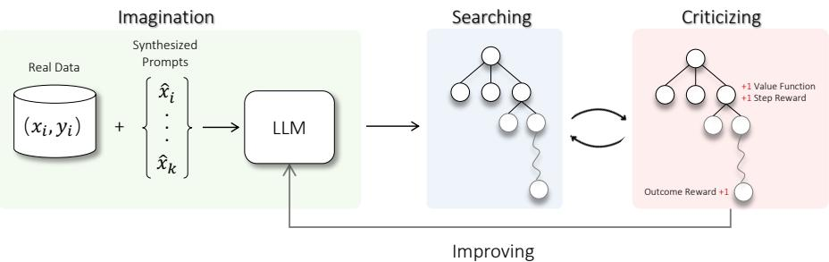
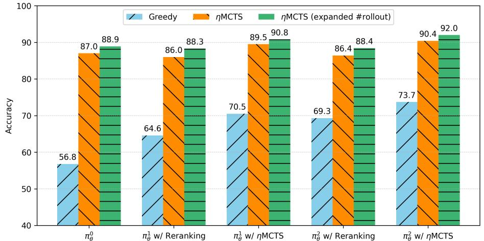
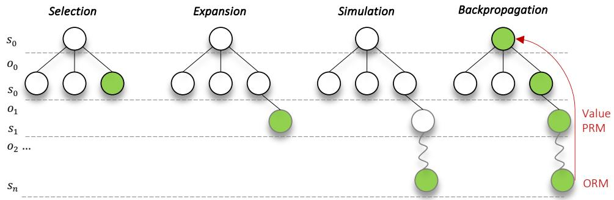

<!DOCTYPE html><html><head>
<title>20740_Toward_Self_Improvement.md</title>
<meta http-equiv="Content-type" content="text/html;charset=UTF-8">

<style>
/*

Arduino® Light Theme - Stefania Mellai <s.mellai@arduino.cc>

*/

.hljs {
  display: block;
  overflow-x: auto;
  padding: 0.5em;
  background: #FFFFFF;
}

.hljs,
.hljs-subst {
  color: #434f54;
}

.hljs-keyword,
.hljs-attribute,
.hljs-selector-tag,
.hljs-doctag,
.hljs-name {
  color: #00979D;
}

.hljs-built_in,
.hljs-literal,
.hljs-bullet,
.hljs-code,
.hljs-addition {
  color: #D35400;
}

.hljs-regexp,
.hljs-symbol,
.hljs-variable,
.hljs-template-variable,
.hljs-link,
.hljs-selector-attr,
.hljs-selector-pseudo {
  color: #00979D;
}

.hljs-type,
.hljs-string,
.hljs-selector-id,
.hljs-selector-class,
.hljs-quote,
.hljs-template-tag,
.hljs-deletion {
  color: #005C5F;
}

.hljs-title,
.hljs-section {
  color: #880000;
  font-weight: bold;
}

.hljs-comment {
  color: rgba(149,165,166,.8);
}

.hljs-meta-keyword {
  color: #728E00;
}

.hljs-meta {
  color: #434f54;
}

.hljs-emphasis {
  font-style: italic;
}

.hljs-strong {
  font-weight: bold;
}

.hljs-function {
  color: #728E00;
}

.hljs-number {
  color: #8A7B52;  
}

</style>

<style>
/*---------------------------------------------------------------------------------------------
 *  Copyright (c) Microsoft Corporation. All rights reserved.
 *  Licensed under the MIT License. See License.txt in the project root for license information.
 *--------------------------------------------------------------------------------------------*/

body {
	font-family:   "HelveticaNeue-Light", sans-serif, "宋体","Segoe WPC", "Segoe UI", "SFUIText-Light","Droid Sans Fallback";
	font-size: 18px;
	padding: 0 12px;
	line-height: 1.6;
	word-wrap: break-word;
	color: #333333;
}

.content-wrapper{
	max-width: 860px;
    margin: 0 auto;
    padding: 0 30px;
}

#code-csp-warning {
	position: fixed;
	top: 0;
	right: 0;
	color: white;
	margin: 16px;
	text-align: center;
	font-size: 12px;
	font-family: sans-serif;
	background-color:#444444;
	cursor: pointer;
	padding: 6px;
	box-shadow: 1px 1px 1px rgba(0,0,0,.25);
}

#code-csp-warning:hover {
	text-decoration: none;
	background-color:#007acc;
	box-shadow: 2px 2px 2px rgba(0,0,0,.25);
}


body.scrollBeyondLastLine {
	margin-bottom: calc(100vh - 22px);
}

body.showEditorSelection .code-line {
	position: relative;
}

body.showEditorSelection .code-active-line:before,
body.showEditorSelection .code-line:hover:before {
	content: "";
	display: block;
	position: absolute;
	top: 0;
	left: -12px;
	height: 100%;
}

body.showEditorSelection li.code-active-line:before,
body.showEditorSelection li.code-line:hover:before {
	left: -30px;
}

.vscode-light.showEditorSelection .code-active-line:before {
	border-left: 3px solid rgba(0, 0, 0, 0.15);
}

.vscode-light.showEditorSelection .code-line:hover:before {
	border-left: 3px solid rgba(0, 0, 0, 0.40);
}

.vscode-dark.showEditorSelection .code-active-line:before {
	border-left: 3px solid rgba(255, 255, 255, 0.4);
}

.vscode-dark.showEditorSelection .code-line:hover:before {
	border-left: 3px solid rgba(255, 255, 255, 0.60);
}

.vscode-high-contrast.showEditorSelection .code-active-line:before {
	border-left: 3px solid rgba(255, 160, 0, 0.7);
}

.vscode-high-contrast.showEditorSelection .code-line:hover:before {
	border-left: 3px solid rgba(255, 160, 0, 1);
}

img {
	max-width: 100%;
	max-height: 100%;
}

a {
	color: #4080D0;
	text-decoration: none;
}

a:focus,
input:focus,
select:focus,
textarea:focus {
	outline: 1px solid -webkit-focus-ring-color;
	outline-offset: -1px;
}

hr {
	border: 0;
	height: 2px;
	border-bottom: 2px solid;
}

h1 {
	padding-bottom: 0.3em;
	line-height: 1.2;
	border-bottom: 1px solid #eee;
}


h2{
	padding-bottom: .3em;
    font-size: 2em;
    line-height: 1.225;
    border-bottom: 1px solid #eee;
}

h3{
	font-size: 1.75em;
    line-height: 1.225;
}

h1, h2, h3 {
	font-weight: bold;
}

h1 code,
h2 code,
h3 code,
h4 code,
h5 code,
h6 code {
	font-size: inherit;
	line-height: auto;
}

a:hover {
	color: #4080D0;
	text-decoration: underline;
}

table {
	border-collapse: collapse;
}

table > thead > tr > th {
	text-align: left;
	border-bottom: 1px solid;
}

table > thead > tr > th,
table > thead > tr > td,
table > tbody > tr > th,
table > tbody > tr > td {
	padding: 5px 10px;
}

table > tbody > tr + tr > td {
	border-top: 1px solid;
}

blockquote {
	margin: 0 7px 0 5px;
	padding: 0 16px 0 10px;
	border-left: 5px solid;
}

code {
	font-family: Menlo, Monaco, Consolas, "Droid Sans Mono", "Courier New", monospace, "Droid Sans Fallback";
	font-size: 14px;
	line-height: 19px;
}

body.wordWrap pre {
	white-space: pre-wrap;
}

.mac code {
	font-size: 12px;
	line-height: 18px;
}

pre:not(.hljs),
pre.hljs code > div {
	padding: 16px;
	border-radius: 3px;
	overflow: auto;
}

/** Theming */

.vscode-light,
.vscode-light pre code {
	color: rgb(30, 30, 30);
}

.vscode-dark,
.vscode-dark pre code {
	color: #DDD;
}

.vscode-high-contrast,
.vscode-high-contrast pre code {
	color: white;
}

.vscode-light code {
	color: #A31515;
}

.vscode-dark code {
	color: #D7BA7D;
}

.vscode-light pre:not(.hljs),
.vscode-light code > div {
	background-color: rgba(220, 220, 220, 0.4);
}

.vscode-dark pre:not(.hljs),
.vscode-dark code > div {
	background-color: rgba(10, 10, 10, 0.4);
}

.vscode-high-contrast pre:not(.hljs),
.vscode-high-contrast code > div {
	background-color: rgb(0, 0, 0);
}

.vscode-high-contrast h1 {
	border-color: rgb(0, 0, 0);
}

.vscode-light table > thead > tr > th {
	border-color: rgba(0, 0, 0, 0.69);
}

.vscode-dark table > thead > tr > th {
	border-color: rgba(255, 255, 255, 0.69);
}

.vscode-light h1,
.vscode-light hr,
.vscode-light table > tbody > tr + tr > td {
	border-color: rgba(0, 0, 0, 0.18);
}

.vscode-dark h1,
.vscode-dark hr,
.vscode-dark table > tbody > tr + tr > td {
	border-color: rgba(255, 255, 255, 0.18);
}

.vscode-light blockquote,
.vscode-dark blockquote {
	background: rgba(127, 127, 127, 0.1);
	border-color: rgba(0, 122, 204, 0.5);
}

.vscode-high-contrast blockquote {
	background: transparent;
	border-color: #fff;
}
</style>

<style>
pre {
	background-color: #f8f8f8;
	border: 1px solid #cccccc;
	border-radius: 3px;
	overflow-x: auto;
	white-space: pre-wrap;
	overflow-wrap: break-word;
}

pre:not(.hljs) {
	padding: 23px;
	line-height: 19px;
}

blockquote {
	background: rgba(127, 127, 127, 0.1);
	border-color: rgba(0, 122, 204, 0.5);
}

.emoji {
	height: 1.4em;
}

/* for inline code */
:not(pre):not(.hljs) > code {
	color: #C9AE75; /* Change the old color so it seems less like an error */
	font-size: inherit;
}

/* Page Break : use <div class="page"/> to insert page break
-------------------------------------------------------- */
.page {
	page-break-after: always;
}

.table-of-contents li{
	list-style-type: initial;
}
</style>

<style>
@font-face{font-family:KaTeX_AMS;font-style:normal;font-weight:400;src:url(fonts/KaTeX_AMS-Regular.woff2) format("woff2"),url(fonts/KaTeX_AMS-Regular.woff) format("woff"),url(fonts/KaTeX_AMS-Regular.ttf) format("truetype")}@font-face{font-family:KaTeX_Caligraphic;font-style:normal;font-weight:700;src:url(fonts/KaTeX_Caligraphic-Bold.woff2) format("woff2"),url(fonts/KaTeX_Caligraphic-Bold.woff) format("woff"),url(fonts/KaTeX_Caligraphic-Bold.ttf) format("truetype")}@font-face{font-family:KaTeX_Caligraphic;font-style:normal;font-weight:400;src:url(fonts/KaTeX_Caligraphic-Regular.woff2) format("woff2"),url(fonts/KaTeX_Caligraphic-Regular.woff) format("woff"),url(fonts/KaTeX_Caligraphic-Regular.ttf) format("truetype")}@font-face{font-family:KaTeX_Fraktur;font-style:normal;font-weight:700;src:url(fonts/KaTeX_Fraktur-Bold.woff2) format("woff2"),url(fonts/KaTeX_Fraktur-Bold.woff) format("woff"),url(fonts/KaTeX_Fraktur-Bold.ttf) format("truetype")}@font-face{font-family:KaTeX_Fraktur;font-style:normal;font-weight:400;src:url(fonts/KaTeX_Fraktur-Regular.woff2) format("woff2"),url(fonts/KaTeX_Fraktur-Regular.woff) format("woff"),url(fonts/KaTeX_Fraktur-Regular.ttf) format("truetype")}@font-face{font-family:KaTeX_Main;font-style:normal;font-weight:700;src:url(fonts/KaTeX_Main-Bold.woff2) format("woff2"),url(fonts/KaTeX_Main-Bold.woff) format("woff"),url(fonts/KaTeX_Main-Bold.ttf) format("truetype")}@font-face{font-family:KaTeX_Main;font-style:italic;font-weight:700;src:url(fonts/KaTeX_Main-BoldItalic.woff2) format("woff2"),url(fonts/KaTeX_Main-BoldItalic.woff) format("woff"),url(fonts/KaTeX_Main-BoldItalic.ttf) format("truetype")}@font-face{font-family:KaTeX_Main;font-style:italic;font-weight:400;src:url(fonts/KaTeX_Main-Italic.woff2) format("woff2"),url(fonts/KaTeX_Main-Italic.woff) format("woff"),url(fonts/KaTeX_Main-Italic.ttf) format("truetype")}@font-face{font-family:KaTeX_Main;font-style:normal;font-weight:400;src:url(fonts/KaTeX_Main-Regular.woff2) format("woff2"),url(fonts/KaTeX_Main-Regular.woff) format("woff"),url(fonts/KaTeX_Main-Regular.ttf) format("truetype")}@font-face{font-family:KaTeX_Math;font-style:italic;font-weight:700;src:url(fonts/KaTeX_Math-BoldItalic.woff2) format("woff2"),url(fonts/KaTeX_Math-BoldItalic.woff) format("woff"),url(fonts/KaTeX_Math-BoldItalic.ttf) format("truetype")}@font-face{font-family:KaTeX_Math;font-style:italic;font-weight:400;src:url(fonts/KaTeX_Math-Italic.woff2) format("woff2"),url(fonts/KaTeX_Math-Italic.woff) format("woff"),url(fonts/KaTeX_Math-Italic.ttf) format("truetype")}@font-face{font-family:"KaTeX_SansSerif";font-style:normal;font-weight:700;src:url(fonts/KaTeX_SansSerif-Bold.woff2) format("woff2"),url(fonts/KaTeX_SansSerif-Bold.woff) format("woff"),url(fonts/KaTeX_SansSerif-Bold.ttf) format("truetype")}@font-face{font-family:"KaTeX_SansSerif";font-style:italic;font-weight:400;src:url(fonts/KaTeX_SansSerif-Italic.woff2) format("woff2"),url(fonts/KaTeX_SansSerif-Italic.woff) format("woff"),url(fonts/KaTeX_SansSerif-Italic.ttf) format("truetype")}@font-face{font-family:"KaTeX_SansSerif";font-style:normal;font-weight:400;src:url(fonts/KaTeX_SansSerif-Regular.woff2) format("woff2"),url(fonts/KaTeX_SansSerif-Regular.woff) format("woff"),url(fonts/KaTeX_SansSerif-Regular.ttf) format("truetype")}@font-face{font-family:KaTeX_Script;font-style:normal;font-weight:400;src:url(fonts/KaTeX_Script-Regular.woff2) format("woff2"),url(fonts/KaTeX_Script-Regular.woff) format("woff"),url(fonts/KaTeX_Script-Regular.ttf) format("truetype")}@font-face{font-family:KaTeX_Size1;font-style:normal;font-weight:400;src:url(fonts/KaTeX_Size1-Regular.woff2) format("woff2"),url(fonts/KaTeX_Size1-Regular.woff) format("woff"),url(fonts/KaTeX_Size1-Regular.ttf) format("truetype")}@font-face{font-family:KaTeX_Size2;font-style:normal;font-weight:400;src:url(fonts/KaTeX_Size2-Regular.woff2) format("woff2"),url(fonts/KaTeX_Size2-Regular.woff) format("woff"),url(fonts/KaTeX_Size2-Regular.ttf) format("truetype")}@font-face{font-family:KaTeX_Size3;font-style:normal;font-weight:400;src:url(fonts/KaTeX_Size3-Regular.woff2) format("woff2"),url(fonts/KaTeX_Size3-Regular.woff) format("woff"),url(fonts/KaTeX_Size3-Regular.ttf) format("truetype")}@font-face{font-family:KaTeX_Size4;font-style:normal;font-weight:400;src:url(fonts/KaTeX_Size4-Regular.woff2) format("woff2"),url(fonts/KaTeX_Size4-Regular.woff) format("woff"),url(fonts/KaTeX_Size4-Regular.ttf) format("truetype")}@font-face{font-family:KaTeX_Typewriter;font-style:normal;font-weight:400;src:url(fonts/KaTeX_Typewriter-Regular.woff2) format("woff2"),url(fonts/KaTeX_Typewriter-Regular.woff) format("woff"),url(fonts/KaTeX_Typewriter-Regular.ttf) format("truetype")}.katex{text-rendering:auto;font:normal 1.21em KaTeX_Main,Times New Roman,serif;line-height:1.2;text-indent:0}.katex *{-ms-high-contrast-adjust:none!important;border-color:currentColor}.katex .katex-version:after{content:"0.16.2"}.katex .katex-mathml{clip:rect(1px,1px,1px,1px);border:0;height:1px;overflow:hidden;padding:0;position:absolute;width:1px}.katex .katex-html>.newline{display:block}.katex .base{position:relative;white-space:nowrap;width:-webkit-min-content;width:-moz-min-content;width:min-content}.katex .base,.katex .strut{display:inline-block}.katex .textbf{font-weight:700}.katex .textit{font-style:italic}.katex .textrm{font-family:KaTeX_Main}.katex .textsf{font-family:KaTeX_SansSerif}.katex .texttt{font-family:KaTeX_Typewriter}.katex .mathnormal{font-family:KaTeX_Math;font-style:italic}.katex .mathit{font-family:KaTeX_Main;font-style:italic}.katex .mathrm{font-style:normal}.katex .mathbf{font-family:KaTeX_Main;font-weight:700}.katex .boldsymbol{font-family:KaTeX_Math;font-style:italic;font-weight:700}.katex .amsrm,.katex .mathbb,.katex .textbb{font-family:KaTeX_AMS}.katex .mathcal{font-family:KaTeX_Caligraphic}.katex .mathfrak,.katex .textfrak{font-family:KaTeX_Fraktur}.katex .mathtt{font-family:KaTeX_Typewriter}.katex .mathscr,.katex .textscr{font-family:KaTeX_Script}.katex .mathsf,.katex .textsf{font-family:KaTeX_SansSerif}.katex .mathboldsf,.katex .textboldsf{font-family:KaTeX_SansSerif;font-weight:700}.katex .mathitsf,.katex .textitsf{font-family:KaTeX_SansSerif;font-style:italic}.katex .mainrm{font-family:KaTeX_Main;font-style:normal}.katex .vlist-t{border-collapse:collapse;display:inline-table;table-layout:fixed}.katex .vlist-r{display:table-row}.katex .vlist{display:table-cell;position:relative;vertical-align:bottom}.katex .vlist>span{display:block;height:0;position:relative}.katex .vlist>span>span{display:inline-block}.katex .vlist>span>.pstrut{overflow:hidden;width:0}.katex .vlist-t2{margin-right:-2px}.katex .vlist-s{display:table-cell;font-size:1px;min-width:2px;vertical-align:bottom;width:2px}.katex .vbox{align-items:baseline;display:inline-flex;flex-direction:column}.katex .hbox{width:100%}.katex .hbox,.katex .thinbox{display:inline-flex;flex-direction:row}.katex .thinbox{max-width:0;width:0}.katex .msupsub{text-align:left}.katex .mfrac>span>span{text-align:center}.katex .mfrac .frac-line{border-bottom-style:solid;display:inline-block;width:100%}.katex .hdashline,.katex .hline,.katex .mfrac .frac-line,.katex .overline .overline-line,.katex .rule,.katex .underline .underline-line{min-height:1px}.katex .mspace{display:inline-block}.katex .clap,.katex .llap,.katex .rlap{position:relative;width:0}.katex .clap>.inner,.katex .llap>.inner,.katex .rlap>.inner{position:absolute}.katex .clap>.fix,.katex .llap>.fix,.katex .rlap>.fix{display:inline-block}.katex .llap>.inner{right:0}.katex .clap>.inner,.katex .rlap>.inner{left:0}.katex .clap>.inner>span{margin-left:-50%;margin-right:50%}.katex .rule{border:0 solid;display:inline-block;position:relative}.katex .hline,.katex .overline .overline-line,.katex .underline .underline-line{border-bottom-style:solid;display:inline-block;width:100%}.katex .hdashline{border-bottom-style:dashed;display:inline-block;width:100%}.katex .sqrt>.root{margin-left:.27777778em;margin-right:-.55555556em}.katex .fontsize-ensurer.reset-size1.size1,.katex .sizing.reset-size1.size1{font-size:1em}.katex .fontsize-ensurer.reset-size1.size2,.katex .sizing.reset-size1.size2{font-size:1.2em}.katex .fontsize-ensurer.reset-size1.size3,.katex .sizing.reset-size1.size3{font-size:1.4em}.katex .fontsize-ensurer.reset-size1.size4,.katex .sizing.reset-size1.size4{font-size:1.6em}.katex .fontsize-ensurer.reset-size1.size5,.katex .sizing.reset-size1.size5{font-size:1.8em}.katex .fontsize-ensurer.reset-size1.size6,.katex .sizing.reset-size1.size6{font-size:2em}.katex .fontsize-ensurer.reset-size1.size7,.katex .sizing.reset-size1.size7{font-size:2.4em}.katex .fontsize-ensurer.reset-size1.size8,.katex .sizing.reset-size1.size8{font-size:2.88em}.katex .fontsize-ensurer.reset-size1.size9,.katex .sizing.reset-size1.size9{font-size:3.456em}.katex .fontsize-ensurer.reset-size1.size10,.katex .sizing.reset-size1.size10{font-size:4.148em}.katex .fontsize-ensurer.reset-size1.size11,.katex .sizing.reset-size1.size11{font-size:4.976em}.katex .fontsize-ensurer.reset-size2.size1,.katex .sizing.reset-size2.size1{font-size:.83333333em}.katex .fontsize-ensurer.reset-size2.size2,.katex .sizing.reset-size2.size2{font-size:1em}.katex .fontsize-ensurer.reset-size2.size3,.katex .sizing.reset-size2.size3{font-size:1.16666667em}.katex .fontsize-ensurer.reset-size2.size4,.katex .sizing.reset-size2.size4{font-size:1.33333333em}.katex .fontsize-ensurer.reset-size2.size5,.katex .sizing.reset-size2.size5{font-size:1.5em}.katex .fontsize-ensurer.reset-size2.size6,.katex .sizing.reset-size2.size6{font-size:1.66666667em}.katex .fontsize-ensurer.reset-size2.size7,.katex .sizing.reset-size2.size7{font-size:2em}.katex .fontsize-ensurer.reset-size2.size8,.katex .sizing.reset-size2.size8{font-size:2.4em}.katex .fontsize-ensurer.reset-size2.size9,.katex .sizing.reset-size2.size9{font-size:2.88em}.katex .fontsize-ensurer.reset-size2.size10,.katex .sizing.reset-size2.size10{font-size:3.45666667em}.katex .fontsize-ensurer.reset-size2.size11,.katex .sizing.reset-size2.size11{font-size:4.14666667em}.katex .fontsize-ensurer.reset-size3.size1,.katex .sizing.reset-size3.size1{font-size:.71428571em}.katex .fontsize-ensurer.reset-size3.size2,.katex .sizing.reset-size3.size2{font-size:.85714286em}.katex .fontsize-ensurer.reset-size3.size3,.katex .sizing.reset-size3.size3{font-size:1em}.katex .fontsize-ensurer.reset-size3.size4,.katex .sizing.reset-size3.size4{font-size:1.14285714em}.katex .fontsize-ensurer.reset-size3.size5,.katex .sizing.reset-size3.size5{font-size:1.28571429em}.katex .fontsize-ensurer.reset-size3.size6,.katex .sizing.reset-size3.size6{font-size:1.42857143em}.katex .fontsize-ensurer.reset-size3.size7,.katex .sizing.reset-size3.size7{font-size:1.71428571em}.katex .fontsize-ensurer.reset-size3.size8,.katex .sizing.reset-size3.size8{font-size:2.05714286em}.katex .fontsize-ensurer.reset-size3.size9,.katex .sizing.reset-size3.size9{font-size:2.46857143em}.katex .fontsize-ensurer.reset-size3.size10,.katex .sizing.reset-size3.size10{font-size:2.96285714em}.katex .fontsize-ensurer.reset-size3.size11,.katex .sizing.reset-size3.size11{font-size:3.55428571em}.katex .fontsize-ensurer.reset-size4.size1,.katex .sizing.reset-size4.size1{font-size:.625em}.katex .fontsize-ensurer.reset-size4.size2,.katex .sizing.reset-size4.size2{font-size:.75em}.katex .fontsize-ensurer.reset-size4.size3,.katex .sizing.reset-size4.size3{font-size:.875em}.katex .fontsize-ensurer.reset-size4.size4,.katex .sizing.reset-size4.size4{font-size:1em}.katex .fontsize-ensurer.reset-size4.size5,.katex .sizing.reset-size4.size5{font-size:1.125em}.katex .fontsize-ensurer.reset-size4.size6,.katex .sizing.reset-size4.size6{font-size:1.25em}.katex .fontsize-ensurer.reset-size4.size7,.katex .sizing.reset-size4.size7{font-size:1.5em}.katex .fontsize-ensurer.reset-size4.size8,.katex .sizing.reset-size4.size8{font-size:1.8em}.katex .fontsize-ensurer.reset-size4.size9,.katex .sizing.reset-size4.size9{font-size:2.16em}.katex .fontsize-ensurer.reset-size4.size10,.katex .sizing.reset-size4.size10{font-size:2.5925em}.katex .fontsize-ensurer.reset-size4.size11,.katex .sizing.reset-size4.size11{font-size:3.11em}.katex .fontsize-ensurer.reset-size5.size1,.katex .sizing.reset-size5.size1{font-size:.55555556em}.katex .fontsize-ensurer.reset-size5.size2,.katex .sizing.reset-size5.size2{font-size:.66666667em}.katex .fontsize-ensurer.reset-size5.size3,.katex .sizing.reset-size5.size3{font-size:.77777778em}.katex .fontsize-ensurer.reset-size5.size4,.katex .sizing.reset-size5.size4{font-size:.88888889em}.katex .fontsize-ensurer.reset-size5.size5,.katex .sizing.reset-size5.size5{font-size:1em}.katex .fontsize-ensurer.reset-size5.size6,.katex .sizing.reset-size5.size6{font-size:1.11111111em}.katex .fontsize-ensurer.reset-size5.size7,.katex .sizing.reset-size5.size7{font-size:1.33333333em}.katex .fontsize-ensurer.reset-size5.size8,.katex .sizing.reset-size5.size8{font-size:1.6em}.katex .fontsize-ensurer.reset-size5.size9,.katex .sizing.reset-size5.size9{font-size:1.92em}.katex .fontsize-ensurer.reset-size5.size10,.katex .sizing.reset-size5.size10{font-size:2.30444444em}.katex .fontsize-ensurer.reset-size5.size11,.katex .sizing.reset-size5.size11{font-size:2.76444444em}.katex .fontsize-ensurer.reset-size6.size1,.katex .sizing.reset-size6.size1{font-size:.5em}.katex .fontsize-ensurer.reset-size6.size2,.katex .sizing.reset-size6.size2{font-size:.6em}.katex .fontsize-ensurer.reset-size6.size3,.katex .sizing.reset-size6.size3{font-size:.7em}.katex .fontsize-ensurer.reset-size6.size4,.katex .sizing.reset-size6.size4{font-size:.8em}.katex .fontsize-ensurer.reset-size6.size5,.katex .sizing.reset-size6.size5{font-size:.9em}.katex .fontsize-ensurer.reset-size6.size6,.katex .sizing.reset-size6.size6{font-size:1em}.katex .fontsize-ensurer.reset-size6.size7,.katex .sizing.reset-size6.size7{font-size:1.2em}.katex .fontsize-ensurer.reset-size6.size8,.katex .sizing.reset-size6.size8{font-size:1.44em}.katex .fontsize-ensurer.reset-size6.size9,.katex .sizing.reset-size6.size9{font-size:1.728em}.katex .fontsize-ensurer.reset-size6.size10,.katex .sizing.reset-size6.size10{font-size:2.074em}.katex .fontsize-ensurer.reset-size6.size11,.katex .sizing.reset-size6.size11{font-size:2.488em}.katex .fontsize-ensurer.reset-size7.size1,.katex .sizing.reset-size7.size1{font-size:.41666667em}.katex .fontsize-ensurer.reset-size7.size2,.katex .sizing.reset-size7.size2{font-size:.5em}.katex .fontsize-ensurer.reset-size7.size3,.katex .sizing.reset-size7.size3{font-size:.58333333em}.katex .fontsize-ensurer.reset-size7.size4,.katex .sizing.reset-size7.size4{font-size:.66666667em}.katex .fontsize-ensurer.reset-size7.size5,.katex .sizing.reset-size7.size5{font-size:.75em}.katex .fontsize-ensurer.reset-size7.size6,.katex .sizing.reset-size7.size6{font-size:.83333333em}.katex .fontsize-ensurer.reset-size7.size7,.katex .sizing.reset-size7.size7{font-size:1em}.katex .fontsize-ensurer.reset-size7.size8,.katex .sizing.reset-size7.size8{font-size:1.2em}.katex .fontsize-ensurer.reset-size7.size9,.katex .sizing.reset-size7.size9{font-size:1.44em}.katex .fontsize-ensurer.reset-size7.size10,.katex .sizing.reset-size7.size10{font-size:1.72833333em}.katex .fontsize-ensurer.reset-size7.size11,.katex .sizing.reset-size7.size11{font-size:2.07333333em}.katex .fontsize-ensurer.reset-size8.size1,.katex .sizing.reset-size8.size1{font-size:.34722222em}.katex .fontsize-ensurer.reset-size8.size2,.katex .sizing.reset-size8.size2{font-size:.41666667em}.katex .fontsize-ensurer.reset-size8.size3,.katex .sizing.reset-size8.size3{font-size:.48611111em}.katex .fontsize-ensurer.reset-size8.size4,.katex .sizing.reset-size8.size4{font-size:.55555556em}.katex .fontsize-ensurer.reset-size8.size5,.katex .sizing.reset-size8.size5{font-size:.625em}.katex .fontsize-ensurer.reset-size8.size6,.katex .sizing.reset-size8.size6{font-size:.69444444em}.katex .fontsize-ensurer.reset-size8.size7,.katex .sizing.reset-size8.size7{font-size:.83333333em}.katex .fontsize-ensurer.reset-size8.size8,.katex .sizing.reset-size8.size8{font-size:1em}.katex .fontsize-ensurer.reset-size8.size9,.katex .sizing.reset-size8.size9{font-size:1.2em}.katex .fontsize-ensurer.reset-size8.size10,.katex .sizing.reset-size8.size10{font-size:1.44027778em}.katex .fontsize-ensurer.reset-size8.size11,.katex .sizing.reset-size8.size11{font-size:1.72777778em}.katex .fontsize-ensurer.reset-size9.size1,.katex .sizing.reset-size9.size1{font-size:.28935185em}.katex .fontsize-ensurer.reset-size9.size2,.katex .sizing.reset-size9.size2{font-size:.34722222em}.katex .fontsize-ensurer.reset-size9.size3,.katex .sizing.reset-size9.size3{font-size:.40509259em}.katex .fontsize-ensurer.reset-size9.size4,.katex .sizing.reset-size9.size4{font-size:.46296296em}.katex .fontsize-ensurer.reset-size9.size5,.katex .sizing.reset-size9.size5{font-size:.52083333em}.katex .fontsize-ensurer.reset-size9.size6,.katex .sizing.reset-size9.size6{font-size:.5787037em}.katex .fontsize-ensurer.reset-size9.size7,.katex .sizing.reset-size9.size7{font-size:.69444444em}.katex .fontsize-ensurer.reset-size9.size8,.katex .sizing.reset-size9.size8{font-size:.83333333em}.katex .fontsize-ensurer.reset-size9.size9,.katex .sizing.reset-size9.size9{font-size:1em}.katex .fontsize-ensurer.reset-size9.size10,.katex .sizing.reset-size9.size10{font-size:1.20023148em}.katex .fontsize-ensurer.reset-size9.size11,.katex .sizing.reset-size9.size11{font-size:1.43981481em}.katex .fontsize-ensurer.reset-size10.size1,.katex .sizing.reset-size10.size1{font-size:.24108004em}.katex .fontsize-ensurer.reset-size10.size2,.katex .sizing.reset-size10.size2{font-size:.28929605em}.katex .fontsize-ensurer.reset-size10.size3,.katex .sizing.reset-size10.size3{font-size:.33751205em}.katex .fontsize-ensurer.reset-size10.size4,.katex .sizing.reset-size10.size4{font-size:.38572806em}.katex .fontsize-ensurer.reset-size10.size5,.katex .sizing.reset-size10.size5{font-size:.43394407em}.katex .fontsize-ensurer.reset-size10.size6,.katex .sizing.reset-size10.size6{font-size:.48216008em}.katex .fontsize-ensurer.reset-size10.size7,.katex .sizing.reset-size10.size7{font-size:.57859209em}.katex .fontsize-ensurer.reset-size10.size8,.katex .sizing.reset-size10.size8{font-size:.69431051em}.katex .fontsize-ensurer.reset-size10.size9,.katex .sizing.reset-size10.size9{font-size:.83317261em}.katex .fontsize-ensurer.reset-size10.size10,.katex .sizing.reset-size10.size10{font-size:1em}.katex .fontsize-ensurer.reset-size10.size11,.katex .sizing.reset-size10.size11{font-size:1.19961427em}.katex .fontsize-ensurer.reset-size11.size1,.katex .sizing.reset-size11.size1{font-size:.20096463em}.katex .fontsize-ensurer.reset-size11.size2,.katex .sizing.reset-size11.size2{font-size:.24115756em}.katex .fontsize-ensurer.reset-size11.size3,.katex .sizing.reset-size11.size3{font-size:.28135048em}.katex .fontsize-ensurer.reset-size11.size4,.katex .sizing.reset-size11.size4{font-size:.32154341em}.katex .fontsize-ensurer.reset-size11.size5,.katex .sizing.reset-size11.size5{font-size:.36173633em}.katex .fontsize-ensurer.reset-size11.size6,.katex .sizing.reset-size11.size6{font-size:.40192926em}.katex .fontsize-ensurer.reset-size11.size7,.katex .sizing.reset-size11.size7{font-size:.48231511em}.katex .fontsize-ensurer.reset-size11.size8,.katex .sizing.reset-size11.size8{font-size:.57877814em}.katex .fontsize-ensurer.reset-size11.size9,.katex .sizing.reset-size11.size9{font-size:.69453376em}.katex .fontsize-ensurer.reset-size11.size10,.katex .sizing.reset-size11.size10{font-size:.83360129em}.katex .fontsize-ensurer.reset-size11.size11,.katex .sizing.reset-size11.size11{font-size:1em}.katex .delimsizing.size1{font-family:KaTeX_Size1}.katex .delimsizing.size2{font-family:KaTeX_Size2}.katex .delimsizing.size3{font-family:KaTeX_Size3}.katex .delimsizing.size4{font-family:KaTeX_Size4}.katex .delimsizing.mult .delim-size1>span{font-family:KaTeX_Size1}.katex .delimsizing.mult .delim-size4>span{font-family:KaTeX_Size4}.katex .nulldelimiter{display:inline-block;width:.12em}.katex .delimcenter,.katex .op-symbol{position:relative}.katex .op-symbol.small-op{font-family:KaTeX_Size1}.katex .op-symbol.large-op{font-family:KaTeX_Size2}.katex .accent>.vlist-t,.katex .op-limits>.vlist-t{text-align:center}.katex .accent .accent-body{position:relative}.katex .accent .accent-body:not(.accent-full){width:0}.katex .overlay{display:block}.katex .mtable .vertical-separator{display:inline-block;min-width:1px}.katex .mtable .arraycolsep{display:inline-block}.katex .mtable .col-align-c>.vlist-t{text-align:center}.katex .mtable .col-align-l>.vlist-t{text-align:left}.katex .mtable .col-align-r>.vlist-t{text-align:right}.katex .svg-align{text-align:left}.katex svg{fill:currentColor;stroke:currentColor;fill-rule:nonzero;fill-opacity:1;stroke-width:1;stroke-linecap:butt;stroke-linejoin:miter;stroke-miterlimit:4;stroke-dasharray:none;stroke-dashoffset:0;stroke-opacity:1;display:block;height:inherit;position:absolute;width:100%}.katex svg path{stroke:none}.katex img{border-style:none;max-height:none;max-width:none;min-height:0;min-width:0}.katex .stretchy{display:block;overflow:hidden;position:relative;width:100%}.katex .stretchy:after,.katex .stretchy:before{content:""}.katex .hide-tail{overflow:hidden;position:relative;width:100%}.katex .halfarrow-left{left:0;overflow:hidden;position:absolute;width:50.2%}.katex .halfarrow-right{overflow:hidden;position:absolute;right:0;width:50.2%}.katex .brace-left{left:0;overflow:hidden;position:absolute;width:25.1%}.katex .brace-center{left:25%;overflow:hidden;position:absolute;width:50%}.katex .brace-right{overflow:hidden;position:absolute;right:0;width:25.1%}.katex .x-arrow-pad{padding:0 .5em}.katex .cd-arrow-pad{padding:0 .55556em 0 .27778em}.katex .mover,.katex .munder,.katex .x-arrow{text-align:center}.katex .boxpad{padding:0 .3em}.katex .fbox,.katex .fcolorbox{border:.04em solid;box-sizing:border-box}.katex .cancel-pad{padding:0 .2em}.katex .cancel-lap{margin-left:-.2em;margin-right:-.2em}.katex .sout{border-bottom-style:solid;border-bottom-width:.08em}.katex .angl{border-right:.049em solid;border-top:.049em solid;box-sizing:border-box;margin-right:.03889em}.katex .anglpad{padding:0 .03889em}.katex .eqn-num:before{content:"(" counter(katexEqnNo) ")";counter-increment:katexEqnNo}.katex .mml-eqn-num:before{content:"(" counter(mmlEqnNo) ")";counter-increment:mmlEqnNo}.katex .mtr-glue{width:50%}.katex .cd-vert-arrow{display:inline-block;position:relative}.katex .cd-label-left{display:inline-block;position:absolute;right:calc(50% + .3em);text-align:left}.katex .cd-label-right{display:inline-block;left:calc(50% + .3em);position:absolute;text-align:right}.katex-display{display:block;margin:1em 0;text-align:center}.katex-display>.katex{display:block;text-align:center;white-space:nowrap}.katex-display>.katex>.katex-html{display:block;position:relative}.katex-display>.katex>.katex-html>.tag{position:absolute;right:0}.katex-display.leqno>.katex>.katex-html>.tag{left:0;right:auto}.katex-display.fleqn>.katex{padding-left:2em;text-align:left}body{counter-reset:katexEqnNo mmlEqnNo}

</style>

</head>
<body>
    <div class="content-wrapper">
        <h1 id="toward-self-improvement-of-llms-via-imagination%2C-searching%2C-and-criticizing" tabindex="-1">Toward Self-Improvement of LLMs via Imagination, Searching, and Criticizing</h1>
<p>Ye Tian<sup>1,2</sup><sup>*</sup>, Baolin Peng<sup>1</sup><sup>*</sup>, Linfeng Song<sup>1</sup><sup>*</sup>, Lifeng Jin<sup>1</sup>, Dian Yu<sup>1</sup>, Lei Han<sup>2</sup>, Haitao Mi<sup>1</sup>†, Dong Yu<sup>1</sup></p>
<p><sup>1</sup>Tencent AI Lab, Bellevue, WA</p>
<p><sup>2</sup>Tencent Robotics X</p>
<p>{baolinpeng,lfsong,lifengjin,yudian,haitaomi,dyu}@global.tencent.com</p>
<p>{yaptian,lxhan}@tencent.com</p>
<h2 id="abstract" tabindex="-1">Abstract</h2>
<p>Despite the impressive capabilities of Large Language Models (LLMs) on various tasks, they still struggle with scenarios that involves complex reasoning and planning. Self-correction and self-learning emerge as viable solutions, employing strategies that allow LLMs to refine their outputs and learn from self-assessed rewards. Yet, the efficacy of LLMs in self-refining its response, particularly in complex reasoning and planning task, remains dubious. In this paper, we introduce ALPHALLM for the self-improvements of LLMs, which integrates Monte Carlo Tree Search (MCTS) with LLMs to establish a self-improving loop, thereby enhancing the capabilities of LLMs without additional annotations. Drawing inspiration from the success of AlphaGo, ALPHALLM addresses the unique challenges of combining MCTS with LLM for self-improvement, including data scarcity, the vastness search spaces of language tasks, and the subjective nature of feedback in language tasks. ALPHALLM is comprised of prompt synthesis component, an efficient MCTS approach tailored for language tasks, and a trio of critic models for precise feedback. Our experimental results in mathematical reasoning tasks demonstrate that ALPHALLM significantly enhances the performance of LLMs without additional annotations, showing the potential for self-improvement in LLMs. The code is available at <a href="https://github.com/YeTianJHU/AlphaLLM">https://github.com/YeTianJHU/AlphaLLM</a>.</p>
<h2 id="1-introduction" tabindex="-1">1 Introduction</h2>
<p>LLMs, trained on trillions of tokens with billions of parameters have shown unparalleled capabilities in a wide range of natural language processing tasks <a href="#page-12-0">(Touvron et al., 2023b;</a> <a href="#page-12-1">Team et al., 2023;</a> <a href="#page-11-0">OpenAI, 2023)</a>. Nevertheless, they continue to face challenges in scenarios requiring complex reasoning and strategic planning <a href="#page-13-0">(Valmeekam et al., 2022;</a> <a href="#page-12-2">Stechly et al., 2024)</a>. While advanced prompting approaches such as Chain, Tree, Graph-of-Thought <a href="#page-13-1">(Wei et al., 2022;</a> <a href="#page-13-2">Yao et al., 2024;</a> <a href="#page-10-0">Besta et al., 2024;</a> <a href="#page-10-1">Ding et al., 2023)</a>, it remains essential to fine-tune LLMs using a substantial volume of high-quality, supervised data to fundamentally improve the model performance <a href="#page-11-1">(Nye et al.,</a> <a href="#page-11-1">2021;</a> <a href="#page-11-2">Lewkowycz et al., 2022;</a> <a href="#page-10-2">Chung et al., 2022)</a>. This methodology is inherently limited by the scope and quality of data that humans can provide.</p>
<p>Considering these challenges, the concept of self-correction and self-learning have been proposed as promising solutions <a href="#page-11-3">(Madaan et al., 2024;</a> <a href="#page-12-3">Saunders et al., 2022;</a> <a href="#page-10-3">Chen et al., 2024)</a>. Within these framework, LLMs typically operate by employing two main strategies: 1) they continuously refine</p>
<h4 id="38th-conference-on-neural-information-processing-systems-(neurips-2024)." tabindex="-1">38th Conference on Neural Information Processing Systems (NeurIPS 2024).</h4>
<p><sup>∗</sup>Equal Contribution; †Corresponding Author</p>
<p><span id="page-1-0"></span></p>
<p>Figure 1: Imagination-Searching-Criticizing self-improvement loop: Imagination component <em>synthesizes</em> prompts as new learning examples, with MCTS searching better trajectories guided by signals from critics for policy improving.their responses based on the feedback of their past responses, and 2) they extensively sample responses then learn from preferences judged by itself as reward models with PPO or DPO <a href="#page-13-3">(Yuan et al., 2024a,b; Chen et al., 2024)</a>. However, it remains a matter of ongoing research whether LLMs can effectively critique their own outputs to either enhance response quality or apply a scalar reward to indicate the quality of responses, especially in contexts demanding intricate planning and reasoning <a href="#page-13-0">(Valmeekam et al., 2022; Stechly et al., 2024; Huang et al., 2023; Hong et al., 2023)</a>. On the other hand, advanced search algorithms such as MCTS, combined with reinforcement learning, have enabled models to learn from self-play and achieve human parity or even surpass human performance in complex tasks such as the game of Go <a href="#page-12-4">(Silver et al., 2016; 2017)</a>. This naturally raises a question: is it viable to leverage the strengths of MCTS alongside LLMs to inaugurate a novel paradigm of self-improving? More precisely, could the assimilation of MCTS empower LLMs to more effectively explore better responses, guided by strategic signals, and subsequently optimize these responses to enhance overall performance?To answer this question, we begin with a systematic examination of AlphaGo, identifying three critical aspects for its success: (<em>i</em>) The large volume of data, including self-play data. (<em>ii</em>) The use of tree search, which facilitates the exploration of potential moves through statistical sampling of the large search space. (<em>iii</em>) Accurate and unambiguous environment feedback; the direct and accurate feedback (win or loss) provided by the game of Go offers a clear and unequivocal learning signal <a href="#page-12-5">(Silver et al., 2017)</a>. The integration of MCTS with LLMs for self-improvement has several challenges: (<em>i</em>) Limited Data: High-quality annotated data for LLMs is generally scarce. Furthermore, how to <strong>construct</strong> synthetic data for LLMs training, similar to AlphaGo's self-play data, remains unclear. (<em>ii</em>) Search Efficiency: The vast number of potential token combinations in natural language tasks results in an exponentially large search space, posing a significant challenge to the efficiency of MCTS <a href="#page-12-6">(Ramamurthy et al., 2022)</a>. (<em>iii</em>) Imperfect Feedback: In contrast to the clear win/loss feedback in Go, feedback in natural language tasks is often subjective and nuanced, without a straightforward measure of success.In this paper, we introduce <strong>ALPHALLM</strong>, an imagination-searching-criticizing framework designed for the self-improvement of <strong>LLMs</strong>. <strong>ALPHALLM</strong> consists of three key components, as illustrated in Figure <a href="#page-1-0">1.</a> First, an imagination component is designed to synthesize prompts, alleviating the issues of data scarcity. Second, we propose  <span class="katex"><span class="katex-mathml"><math xmlns="http://www.w3.org/1998/Math/MathML"><semantics><mrow><mi>η</mi><mi>M</mi><mi>C</mi><mi>T</mi><mi>S</mi></mrow><annotation encoding="application/x-tex">
\eta MCTS
</annotation></semantics></math></span><span class="katex-html" aria-hidden="true"><span class="base"><span class="strut" style="height:0.8778em;vertical-align:-0.1944em;"></span><span class="mord mathnormal" style="margin-right:0.03588em;">η</span><span class="mord mathnormal" style="margin-right:0.05764em;">MCTS</span></span></span></span>  tailored for efficient searching in language tasks. Particularly, it has been shown that planning at multiple levels of temporal abstraction is critical for RL problems with a long horizon and large action space <a href="#page-12-7">(Sutton et al., 1999b;</a> <a href="#page-11-6">Peng et al., 2017;</a> <a href="#page-11-7">Luketina</a> <a href="#page-11-7">et al., 2019)</a>. As such, we propose formulating the text generation process as options over a Markov Decision Process (MDP) problem, where each option represents the generation of a collection of tokens for a specific subtask, similar to the concept of chains in chain-of-thought prompting. This formulation improves search efficiency by substantially reducing the search depth. Additionally, we propose the use of state merge and adaptive branching factors to further enhance search efficiency by balancing the trade-off between search width and depth. Lastly, since accurate feedback is crucial to the success of  <span class="katex"><span class="katex-mathml"><math xmlns="http://www.w3.org/1998/Math/MathML"><semantics><mrow><mi>η</mi><mi>M</mi><mi>C</mi><mi>T</mi><mi>S</mi></mrow><annotation encoding="application/x-tex">
\eta MCTS
</annotation></semantics></math></span><span class="katex-html" aria-hidden="true"><span class="base"><span class="strut" style="height:0.8778em;vertical-align:-0.1944em;"></span><span class="mord mathnormal" style="margin-right:0.03588em;">η</span><span class="mord mathnormal" style="margin-right:0.05764em;">MCTS</span></span></span></span> , we introduce a trio of critic models to guide  <span class="katex"><span class="katex-mathml"><math xmlns="http://www.w3.org/1998/Math/MathML"><semantics><mrow><mi>η</mi><mi>M</mi><mi>C</mi><mi>T</mi><mi>S</mi></mrow><annotation encoding="application/x-tex">
\eta MCTS
</annotation></semantics></math></span><span class="katex-html" aria-hidden="true"><span class="base"><span class="strut" style="height:0.8778em;vertical-align:-0.1944em;"></span><span class="mord mathnormal" style="margin-right:0.03588em;">η</span><span class="mord mathnormal" style="margin-right:0.05764em;">MCTS</span></span></span></span> , including a value function for estimating expected rewards, a process reward model for assessing node correctness, and an outcome reward model for evaluating the overall trajectory. For complex tasks with which <strong>LLMs</strong> struggle assessing such as arithmetic computation and code execution, to ensure the accuracy.of feedback, we augment the critics with the capacity to make dynamic decisions on which tools to use, when to use them, and how to use them effectively. After ηMCTS stage, we collect the trajectory with the largest reward from the critic models as the training examples to improve LLMs.</p>
<p>The experimental results on mathematical reasoning tasks demonstrate that ALPHALLM can efficiently search for better responses and use them to improve LLMs' performance, forming an effective self-improving loop. Notably, based on Llama-2-70b and WizardMath-70B-V1.0, ALPHALLM can improve its performance from 57.8 to 92.0 on GSM8K and from 20.7 to 51.0 on MATH, performing comparably to GPT-4.</p>
<h2 id="2-related-work" tabindex="-1">2 Related Work</h2>
<p>Search with LLM Effective search strategy has been shown crucial for tasks that involve complex reasoning and planning, such as go <a href="#page-12-4">(Silver et al., 2016)</a> and math reasoning <a href="#page-10-4">(Cobbe et al., 2021;</a> <a href="#page-11-8">Hendrycks et al., 2021)</a>. For math reasoning tasks, various search methods have been studied. One direction of research <a href="#page-13-5">(Zhu et al., 2024;</a> <a href="#page-13-6">Xie et al., 2024)</a> designed beam search with dynamic pruning, where beam items of low quality are pruned. Another line of work <a href="#page-13-2">(Yao et al., 2024;</a> <a href="#page-11-9">Long, 2023;</a> <a href="#page-10-0">Besta et al., 2024;</a> <a href="#page-11-10">Hao et al., 2023;</a> <a href="#page-10-5">Feng et al., 2023)</a> maintains a tree or a graph that represents the current progress of solving the input question where potential branches are iteratively expanded. Both our approach and <a href="#page-10-5">Feng et al.</a> <a href="#page-10-5">(2023)</a> are based on the MCTS algorithm, while one main difference is how to define a search step: <a href="#page-10-5">Feng et al.</a> <a href="#page-10-5">(2023)</a> fix a search step to be either a token or a sentence, while our approach is more flexible on deciding steps. We have also carefully designed the MCTS process, incorporating multiple critique signals to guide the search more effectively and introducing adaptive search parameters for improved state exploration. As the result, our approach achieves much better performances.</p>
<p>LLM Self-improving Being a key to the success of scalable oversight <a href="#page-10-6">(Bowman et al., 2022)</a>, self-improving for LLM aims to align the LLM to human preference and values mainly using the supervision from the knowledge inside the LLM <a href="#page-13-7">(Zelikman et al., 2022,</a> <a href="#page-13-8">2024)</a>. One crucial part of self-improving is how to obtain reliable signal of critique to distinguish between good responses from the LLM and bad ones. Initial work <a href="#page-10-7">(Bai et al., 2022;</a> <a href="#page-13-9">Wang et al., 2022)</a> first asks the LLM to generate input queries of diverse tasks and the corresponding outputs. They then rely on hand-crafted heuristic rules to filter out redundant or low-quality data pairs (e.g. the query is too long or too short). Since it is non-trivial to compose effective heuristic rule, later work <a href="#page-12-8">(Sun et al., 2023;</a> <a href="#page-11-11">Li et al.,</a> <a href="#page-11-11">2023;</a> <a href="#page-10-8">Guo et al., 2024)</a> proposes a few general principles or judging criteria and ask the LLM itself to evaluate the quality its responses based on these guidance, hoping that LLMs can automatically designate these principles into each data point to better guide data filtering. However, this requires LLMs to have strong abilities to apply these principles for each specific case and make correct judgements. Different from previous work, we propose to leverage the supervision from MCTS for LLM self-improvement: taking the outputs of MCTS to continue train the LLM. This is because the outputs from MCTS are usually in much better quality then standard nucleus sampling, and the large gap ensure that the LLM can self improve.</p>
<h2 id="3-preliminaries" tabindex="-1">3 Preliminaries</h2>
<h2 id="3.1-problem-formulation" tabindex="-1">3.1 Problem Formulation</h2>
<p>In this paper, we consider a LLM characterized by probability  <span class="katex"><span class="katex-mathml"><math xmlns="http://www.w3.org/1998/Math/MathML"><semantics><mrow><mi>p</mi><mi mathvariant="normal">_</mi><mi>θ</mi></mrow><annotation encoding="application/x-tex">p\_\theta</annotation></semantics></math></span><span class="katex-html" aria-hidden="true"><span class="base"><span class="strut" style="height:1.0044em;vertical-align:-0.31em;"></span><span class="mord mathnormal">p</span><span class="mord" style="margin-right:0.02778em;">_</span><span class="mord mathnormal" style="margin-right:0.02778em;">θ</span></span></span></span>  and denoted as policy  <span class="katex"><span class="katex-mathml"><math xmlns="http://www.w3.org/1998/Math/MathML"><semantics><mrow><mi>π</mi><mi mathvariant="normal">_</mi><mi>θ</mi></mrow><annotation encoding="application/x-tex">\pi\_\theta</annotation></semantics></math></span><span class="katex-html" aria-hidden="true"><span class="base"><span class="strut" style="height:1.0044em;vertical-align:-0.31em;"></span><span class="mord mathnormal" style="margin-right:0.03588em;">π</span><span class="mord" style="margin-right:0.02778em;">_</span><span class="mord mathnormal" style="margin-right:0.02778em;">θ</span></span></span></span> . It takes a sequence  <span class="katex"><span class="katex-mathml"><math xmlns="http://www.w3.org/1998/Math/MathML"><semantics><mrow><mi>x</mi><mo>=</mo><mo stretchy="false">[</mo><mi>x</mi><mi mathvariant="normal">_</mi><mn>1</mn><mo separator="true">,</mo><mo>⋯</mo><mtext> </mtext><mo separator="true">,</mo><mi>x</mi><mi mathvariant="normal">_</mi><mi>n</mi><mo stretchy="false">]</mo></mrow><annotation encoding="application/x-tex">x = [x\_1, \cdots, x\_n]</annotation></semantics></math></span><span class="katex-html" aria-hidden="true"><span class="base"><span class="strut" style="height:0.4306em;"></span><span class="mord mathnormal">x</span><span class="mspace" style="margin-right:0.2778em;"></span><span class="mrel">=</span><span class="mspace" style="margin-right:0.2778em;"></span></span><span class="base"><span class="strut" style="height:1.06em;vertical-align:-0.31em;"></span><span class="mopen">[</span><span class="mord mathnormal">x</span><span class="mord">_1</span><span class="mpunct">,</span><span class="mspace" style="margin-right:0.1667em;"></span><span class="minner">⋯</span><span class="mspace" style="margin-right:0.1667em;"></span><span class="mspace" style="margin-right:0.1667em;"></span><span class="mpunct">,</span><span class="mspace" style="margin-right:0.1667em;"></span><span class="mord mathnormal">x</span><span class="mord" style="margin-right:0.02778em;">_</span><span class="mord mathnormal">n</span><span class="mclose">]</span></span></span></span>  as input, which is typically referred to as prompt, to generate the response  <span class="katex"><span class="katex-mathml"><math xmlns="http://www.w3.org/1998/Math/MathML"><semantics><mrow><mi>y</mi><mo>=</mo><mo stretchy="false">[</mo><mi>y</mi><mi mathvariant="normal">_</mi><mn>1</mn><mo separator="true">,</mo><mo>⋯</mo><mtext> </mtext><mo separator="true">,</mo><mi>y</mi><mi mathvariant="normal">_</mi><mi>m</mi><mo stretchy="false">]</mo></mrow><annotation encoding="application/x-tex">y = [y\_1, \cdots, y\_m]</annotation></semantics></math></span><span class="katex-html" aria-hidden="true"><span class="base"><span class="strut" style="height:0.625em;vertical-align:-0.1944em;"></span><span class="mord mathnormal" style="margin-right:0.03588em;">y</span><span class="mspace" style="margin-right:0.2778em;"></span><span class="mrel">=</span><span class="mspace" style="margin-right:0.2778em;"></span></span><span class="base"><span class="strut" style="height:1.06em;vertical-align:-0.31em;"></span><span class="mopen">[</span><span class="mord mathnormal" style="margin-right:0.03588em;">y</span><span class="mord">_1</span><span class="mpunct">,</span><span class="mspace" style="margin-right:0.1667em;"></span><span class="minner">⋯</span><span class="mspace" style="margin-right:0.1667em;"></span><span class="mspace" style="margin-right:0.1667em;"></span><span class="mpunct">,</span><span class="mspace" style="margin-right:0.1667em;"></span><span class="mord mathnormal" style="margin-right:0.03588em;">y</span><span class="mord" style="margin-right:0.02778em;">_</span><span class="mord mathnormal">m</span><span class="mclose">]</span></span></span></span> . In the context of LLMs, each  <span class="katex"><span class="katex-mathml"><math xmlns="http://www.w3.org/1998/Math/MathML"><semantics><mrow><mi>x</mi><mi mathvariant="normal">_</mi><mi>i</mi></mrow><annotation encoding="application/x-tex">x\_i</annotation></semantics></math></span><span class="katex-html" aria-hidden="true"><span class="base"><span class="strut" style="height:0.9695em;vertical-align:-0.31em;"></span><span class="mord mathnormal">x</span><span class="mord" style="margin-right:0.02778em;">_</span><span class="mord mathnormal">i</span></span></span></span>  and  <span class="katex"><span class="katex-mathml"><math xmlns="http://www.w3.org/1998/Math/MathML"><semantics><mrow><mi>y</mi><mi mathvariant="normal">_</mi><mi>i</mi></mrow><annotation encoding="application/x-tex">y\_i</annotation></semantics></math></span><span class="katex-html" aria-hidden="true"><span class="base"><span class="strut" style="height:0.9695em;vertical-align:-0.31em;"></span><span class="mord mathnormal" style="margin-right:0.03588em;">y</span><span class="mord" style="margin-right:0.02778em;">_</span><span class="mord mathnormal">i</span></span></span></span>  represents a token from a pre-defined vocabulary. The policy  <span class="katex"><span class="katex-mathml"><math xmlns="http://www.w3.org/1998/Math/MathML"><semantics><mrow><mi>π</mi><mi mathvariant="normal">_</mi><mi>θ</mi></mrow><annotation encoding="application/x-tex">\pi\_\theta</annotation></semantics></math></span><span class="katex-html" aria-hidden="true"><span class="base"><span class="strut" style="height:1.0044em;vertical-align:-0.31em;"></span><span class="mord mathnormal" style="margin-right:0.03588em;">π</span><span class="mord" style="margin-right:0.02778em;">_</span><span class="mord mathnormal" style="margin-right:0.02778em;">θ</span></span></span></span>  operates in an autoregressive manner, where each token is generated sequentially, relying solely on the context provided by the previously generated tokens. The policy therefore constitutes a Markov process in which the conditional probability distribution  <span class="katex"><span class="katex-mathml"><math xmlns="http://www.w3.org/1998/Math/MathML"><semantics><mrow><mi>p</mi><mi mathvariant="normal">_</mi><mi>θ</mi><mo stretchy="false">(</mo><mi>y</mi><mi mathvariant="normal">∣</mi><mi>x</mi><mo stretchy="false">)</mo></mrow><annotation encoding="application/x-tex">p\_\theta(y|x)</annotation></semantics></math></span><span class="katex-html" aria-hidden="true"><span class="base"><span class="strut" style="height:1.06em;vertical-align:-0.31em;"></span><span class="mord mathnormal">p</span><span class="mord" style="margin-right:0.02778em;">_</span><span class="mord mathnormal" style="margin-right:0.02778em;">θ</span><span class="mopen">(</span><span class="mord mathnormal" style="margin-right:0.03588em;">y</span><span class="mord">∣</span><span class="mord mathnormal">x</span><span class="mclose">)</span></span></span></span>  can be decomposed and expressed with the chain rule as  <span class="katex-error" title="ParseError: KaTeX parse error: Expected '}', got 'EOF' at end of input: …(y\_i| x, y\_{." style="color:#cc0000">p\_\theta(y|x) = \prod\_{i=1}^{m} p\_\theta(y\_i| x, y\_{.</span> With this property, the text generation task can be formulated as a Markov Decision Process  <span class="katex"><span class="katex-mathml"><math xmlns="http://www.w3.org/1998/Math/MathML"><semantics><mrow><mo stretchy="false">(</mo><mi>M</mi><mi>D</mi><mi>P</mi><mo stretchy="false">)</mo></mrow><annotation encoding="application/x-tex">(MDP)</annotation></semantics></math></span><span class="katex-html" aria-hidden="true"><span class="base"><span class="strut" style="height:1em;vertical-align:-0.25em;"></span><span class="mopen">(</span><span class="mord mathnormal" style="margin-right:0.10903em;">M</span><span class="mord mathnormal" style="margin-right:0.02778em;">D</span><span class="mord mathnormal" style="margin-right:0.13889em;">P</span><span class="mclose">)</span></span></span></span>  problem consisting of  <span class="katex"><span class="katex-mathml"><math xmlns="http://www.w3.org/1998/Math/MathML"><semantics><mrow><mo stretchy="false">(</mo><mi>S</mi><mo separator="true">,</mo><mi>A</mi><mo separator="true">,</mo><mi>T</mi><mo separator="true">,</mo><mi>R</mi><mo separator="true">,</mo><mi>γ</mi><mo stretchy="false">)</mo></mrow><annotation encoding="application/x-tex">(S, A, T, R, \gamma)</annotation></semantics></math></span><span class="katex-html" aria-hidden="true"><span class="base"><span class="strut" style="height:1em;vertical-align:-0.25em;"></span><span class="mopen">(</span><span class="mord mathnormal" style="margin-right:0.05764em;">S</span><span class="mpunct">,</span><span class="mspace" style="margin-right:0.1667em;"></span><span class="mord mathnormal">A</span><span class="mpunct">,</span><span class="mspace" style="margin-right:0.1667em;"></span><span class="mord mathnormal" style="margin-right:0.13889em;">T</span><span class="mpunct">,</span><span class="mspace" style="margin-right:0.1667em;"></span><span class="mord mathnormal" style="margin-right:0.00773em;">R</span><span class="mpunct">,</span><span class="mspace" style="margin-right:0.1667em;"></span><span class="mord mathnormal" style="margin-right:0.05556em;">γ</span><span class="mclose">)</span></span></span></span>  in which,  <span class="katex"><span class="katex-mathml"><math xmlns="http://www.w3.org/1998/Math/MathML"><semantics><mrow><msup><mi>s</mi><mi>t</mi></msup><mo>∈</mo><mi>S</mi></mrow><annotation encoding="application/x-tex">s^{t} \in S</annotation></semantics></math></span><span class="katex-html" aria-hidden="true"><span class="base"><span class="strut" style="height:0.8327em;vertical-align:-0.0391em;"></span><span class="mord"><span class="mord mathnormal">s</span><span class="msupsub"><span class="vlist-t"><span class="vlist-r"><span class="vlist" style="height:0.7936em;"><span style="top:-3.063em;margin-right:0.05em;"><span class="pstrut" style="height:2.7em;"></span><span class="sizing reset-size6 size3 mtight"><span class="mord mtight"><span class="mord mathnormal mtight">t</span></span></span></span></span></span></span></span></span><span class="mspace" style="margin-right:0.2778em;"></span><span class="mrel">∈</span><span class="mspace" style="margin-right:0.2778em;"></span></span><span class="base"><span class="strut" style="height:0.6833em;"></span><span class="mord mathnormal" style="margin-right:0.05764em;">S</span></span></span></span>  represents the context information of current trajectory, <em>i.e.,</em> current status of the generation process, <em>e.g.,</em> a partial response to a prompt;  <span class="katex"><span class="katex-mathml"><math xmlns="http://www.w3.org/1998/Math/MathML"><semantics><mrow><msup><mi>a</mi><mi>t</mi></msup><mo>∈</mo><mi>A</mi></mrow><annotation encoding="application/x-tex">a^{t} \in A</annotation></semantics></math></span><span class="katex-html" aria-hidden="true"><span class="base"><span class="strut" style="height:0.8327em;vertical-align:-0.0391em;"></span><span class="mord"><span class="mord mathnormal">a</span><span class="msupsub"><span class="vlist-t"><span class="vlist-r"><span class="vlist" style="height:0.7936em;"><span style="top:-3.063em;margin-right:0.05em;"><span class="pstrut" style="height:2.7em;"></span><span class="sizing reset-size6 size3 mtight"><span class="mord mtight"><span class="mord mathnormal mtight">t</span></span></span></span></span></span></span></span></span><span class="mspace" style="margin-right:0.2778em;"></span><span class="mrel">∈</span><span class="mspace" style="margin-right:0.2778em;"></span></span><span class="base"><span class="strut" style="height:0.6833em;"></span><span class="mord mathnormal">A</span></span></span></span>  denotes a single action or sampled token from the vocabulary, leading to a transition to a new state. <span class="katex"><span class="katex-mathml"><math xmlns="http://www.w3.org/1998/Math/MathML"><semantics><mrow><mi>s</mi><mi mathvariant="normal">_</mi><mrow><mi>t</mi><mo>+</mo><mn>1</mn></mrow></mrow><annotation encoding="application/x-tex">s\_{t+1}</annotation></semantics></math></span><span class="katex-html" aria-hidden="true"><span class="base"><span class="strut" style="height:0.9544em;vertical-align:-0.31em;"></span><span class="mord mathnormal">s</span><span class="mord" style="margin-right:0.02778em;">_</span><span class="mord"><span class="mord mathnormal">t</span><span class="mspace" style="margin-right:0.2222em;"></span><span class="mbin">+</span><span class="mspace" style="margin-right:0.2222em;"></span><span class="mord">1</span></span></span></span></span> , by concatenating  <span class="katex"><span class="katex-mathml"><math xmlns="http://www.w3.org/1998/Math/MathML"><semantics><mrow><mi>s</mi><mi mathvariant="normal">_</mi><mi>t</mi></mrow><annotation encoding="application/x-tex">s\_{t}</annotation></semantics></math></span><span class="katex-html" aria-hidden="true"><span class="base"><span class="strut" style="height:0.9251em;vertical-align:-0.31em;"></span><span class="mord mathnormal">s</span><span class="mord" style="margin-right:0.02778em;">_</span><span class="mord"><span class="mord mathnormal">t</span></span></span></span></span>  and  <span class="katex"><span class="katex-mathml"><math xmlns="http://www.w3.org/1998/Math/MathML"><semantics><mrow><mi>a</mi><mi mathvariant="normal">_</mi><mi>t</mi></mrow><annotation encoding="application/x-tex">a\_{t}</annotation></semantics></math></span><span class="katex-html" aria-hidden="true"><span class="base"><span class="strut" style="height:0.9251em;vertical-align:-0.31em;"></span><span class="mord mathnormal">a</span><span class="mord" style="margin-right:0.02778em;">_</span><span class="mord"><span class="mord mathnormal">t</span></span></span></span></span> ;  <span class="katex"><span class="katex-mathml"><math xmlns="http://www.w3.org/1998/Math/MathML"><semantics><mrow><mi>r</mi><mi mathvariant="normal">_</mi><mi>t</mi><mo>=</mo><mi>R</mi><mo stretchy="false">(</mo><mi>s</mi><mi mathvariant="normal">_</mi><mi>t</mi><mo separator="true">,</mo><mi>a</mi><mi mathvariant="normal">_</mi><mi>t</mi><mo stretchy="false">)</mo></mrow><annotation encoding="application/x-tex">r\_{t} = R(s\_{t}, a\_{t})</annotation></semantics></math></span><span class="katex-html" aria-hidden="true"><span class="base"><span class="strut" style="height:0.9251em;vertical-align:-0.31em;"></span><span class="mord mathnormal" style="margin-right:0.02778em;">r</span><span class="mord" style="margin-right:0.02778em;">_</span><span class="mord"><span class="mord mathnormal">t</span></span><span class="mspace" style="margin-right:0.2778em;"></span><span class="mrel">=</span><span class="mspace" style="margin-right:0.2778em;"></span></span><span class="base"><span class="strut" style="height:1.06em;vertical-align:-0.31em;"></span><span class="mord mathnormal" style="margin-right:0.00773em;">R</span><span class="mopen">(</span><span class="mord mathnormal">s</span><span class="mord" style="margin-right:0.02778em;">_</span><span class="mord"><span class="mord mathnormal">t</span></span><span class="mpunct">,</span><span class="mspace" style="margin-right:0.1667em;"></span><span class="mord mathnormal">a</span><span class="mord" style="margin-right:0.02778em;">_</span><span class="mord"><span class="mord mathnormal">t</span></span><span class="mclose">)</span></span></span></span>  manifest the evaluation of the generation to the prompt, reflecting the desirability or preferences of each state-action pair.This MDP framework sets the stage for applying Reinforcement Learning <em>(RL)</em> methods to optimize the policy  <span class="katex"><span class="katex-mathml"><math xmlns="http://www.w3.org/1998/Math/MathML"><semantics><mrow><msup><mi>π</mi><mi>θ</mi></msup></mrow><annotation encoding="application/x-tex">\pi^{\theta}</annotation></semantics></math></span><span class="katex-html" aria-hidden="true"><span class="base"><span class="strut" style="height:0.8491em;"></span><span class="mord"><span class="mord mathnormal" style="margin-right:0.03588em;">π</span><span class="msupsub"><span class="vlist-t"><span class="vlist-r"><span class="vlist" style="height:0.8491em;"><span style="top:-3.063em;margin-right:0.05em;"><span class="pstrut" style="height:2.7em;"></span><span class="sizing reset-size6 size3 mtight"><span class="mord mtight"><span class="mord mathnormal mtight" style="margin-right:0.02778em;">θ</span></span></span></span></span></span></span></span></span></span></span></span>  aiming to maximize the expected cumulative reward  <span class="katex"><span class="katex-mathml"><math xmlns="http://www.w3.org/1998/Math/MathML"><semantics><mrow><mi>R</mi></mrow><annotation encoding="application/x-tex">R</annotation></semantics></math></span><span class="katex-html" aria-hidden="true"><span class="base"><span class="strut" style="height:0.6833em;"></span><span class="mord mathnormal" style="margin-right:0.00773em;">R</span></span></span></span> . Based on these setups, we describe the self-improving problem. Given a LLM  <span class="katex"><span class="katex-mathml"><math xmlns="http://www.w3.org/1998/Math/MathML"><semantics><mrow><msup><mi>π</mi><mi>θ</mi></msup></mrow><annotation encoding="application/x-tex">\pi^{\theta}</annotation></semantics></math></span><span class="katex-html" aria-hidden="true"><span class="base"><span class="strut" style="height:0.8491em;"></span><span class="mord"><span class="mord mathnormal" style="margin-right:0.03588em;">π</span><span class="msupsub"><span class="vlist-t"><span class="vlist-r"><span class="vlist" style="height:0.8491em;"><span style="top:-3.063em;margin-right:0.05em;"><span class="pstrut" style="height:2.7em;"></span><span class="sizing reset-size6 size3 mtight"><span class="mord mtight"><span class="mord mathnormal mtight" style="margin-right:0.02778em;">θ</span></span></span></span></span></span></span></span></span></span></span></span>  and an initial dataset  <span class="katex"><span class="katex-mathml"><math xmlns="http://www.w3.org/1998/Math/MathML"><semantics><mrow><msup><mi>D</mi><mn>0</mn></msup></mrow><annotation encoding="application/x-tex">D^{0}</annotation></semantics></math></span><span class="katex-html" aria-hidden="true"><span class="base"><span class="strut" style="height:0.8141em;"></span><span class="mord"><span class="mord mathnormal" style="margin-right:0.02778em;">D</span><span class="msupsub"><span class="vlist-t"><span class="vlist-r"><span class="vlist" style="height:0.8141em;"><span style="top:-3.063em;margin-right:0.05em;"><span class="pstrut" style="height:2.7em;"></span><span class="sizing reset-size6 size3 mtight"><span class="mord mtight"><span class="mord mtight">0</span></span></span></span></span></span></span></span></span></span></span></span> , which consists of  <span class="katex"><span class="katex-mathml"><math xmlns="http://www.w3.org/1998/Math/MathML"><semantics><mrow><mi>N</mi></mrow><annotation encoding="application/x-tex">N</annotation></semantics></math></span><span class="katex-html" aria-hidden="true"><span class="base"><span class="strut" style="height:0.6833em;"></span><span class="mord mathnormal" style="margin-right:0.10903em;">N</span></span></span></span>  expert-generated prompt-response pairs  <span class="katex"><span class="katex-mathml"><math xmlns="http://www.w3.org/1998/Math/MathML"><semantics><mrow><mo stretchy="false">{</mo><mo stretchy="false">(</mo><mi>x</mi><mi mathvariant="normal">_</mi><msup><mi>i</mi><mn>0</mn></msup><mo separator="true">,</mo><mi>y</mi><mi mathvariant="normal">_</mi><msup><mi>i</mi><mn>0</mn></msup><mo stretchy="false">)</mo><mtext>  </mtext><mi mathvariant="normal">∣</mi><mtext>  </mtext><mi>i</mi><mo>∈</mo><mo stretchy="false">[</mo><mi>N</mi><mo stretchy="false">]</mo><mo stretchy="false">}</mo></mrow><annotation encoding="application/x-tex">\{(x\_{i}^{0}, y\_{i}^{0}) \;|\; i \in [N]\}</annotation></semantics></math></span><span class="katex-html" aria-hidden="true"><span class="base"><span class="strut" style="height:1.1241em;vertical-align:-0.31em;"></span><span class="mopen">{(</span><span class="mord mathnormal">x</span><span class="mord" style="margin-right:0.02778em;">_</span><span class="mord"><span class="mord"><span class="mord mathnormal">i</span></span><span class="msupsub"><span class="vlist-t"><span class="vlist-r"><span class="vlist" style="height:0.8141em;"><span style="top:-3.063em;margin-right:0.05em;"><span class="pstrut" style="height:2.7em;"></span><span class="sizing reset-size6 size3 mtight"><span class="mord mtight"><span class="mord mtight">0</span></span></span></span></span></span></span></span></span><span class="mpunct">,</span><span class="mspace" style="margin-right:0.1667em;"></span><span class="mord mathnormal" style="margin-right:0.03588em;">y</span><span class="mord" style="margin-right:0.02778em;">_</span><span class="mord"><span class="mord"><span class="mord mathnormal">i</span></span><span class="msupsub"><span class="vlist-t"><span class="vlist-r"><span class="vlist" style="height:0.8141em;"><span style="top:-3.063em;margin-right:0.05em;"><span class="pstrut" style="height:2.7em;"></span><span class="sizing reset-size6 size3 mtight"><span class="mord mtight"><span class="mord mtight">0</span></span></span></span></span></span></span></span></span><span class="mclose">)</span><span class="mspace" style="margin-right:0.2778em;"></span><span class="mord">∣</span><span class="mspace" style="margin-right:0.2778em;"></span><span class="mord mathnormal">i</span><span class="mspace" style="margin-right:0.2778em;"></span><span class="mrel">∈</span><span class="mspace" style="margin-right:0.2778em;"></span></span><span class="base"><span class="strut" style="height:1em;vertical-align:-0.25em;"></span><span class="mopen">[</span><span class="mord mathnormal" style="margin-right:0.10903em;">N</span><span class="mclose">]}</span></span></span></span> , the goal of self-improving is to iteratively refine  <span class="katex"><span class="katex-mathml"><math xmlns="http://www.w3.org/1998/Math/MathML"><semantics><mrow><msup><mi>π</mi><mi>θ</mi></msup></mrow><annotation encoding="application/x-tex">\pi^{\theta}</annotation></semantics></math></span><span class="katex-html" aria-hidden="true"><span class="base"><span class="strut" style="height:0.8491em;"></span><span class="mord"><span class="mord mathnormal" style="margin-right:0.03588em;">π</span><span class="msupsub"><span class="vlist-t"><span class="vlist-r"><span class="vlist" style="height:0.8491em;"><span style="top:-3.063em;margin-right:0.05em;"><span class="pstrut" style="height:2.7em;"></span><span class="sizing reset-size6 size3 mtight"><span class="mord mtight"><span class="mord mathnormal mtight" style="margin-right:0.02778em;">θ</span></span></span></span></span></span></span></span></span></span></span></span>  to maximize the reward. The refinement process includes learning from synthesized prompts and corresponding responses. These responses are obtained using an advanced search algorithm that navigates the space of possible responses to maximize the expected reward. The detailed process is described in Algorithm 1 <a href="#page-14-0">in Appendix</a>. The primary challenges in forming an effective self-improving loop lie in synthesizing suitable prompts, efficiently searching over a vast action space, and obtaining precise feedback, which will be discussed in <a href="#page-3-0">§4.</a>.#### 3.2 Monte Carlo Tree Search</p>
<p>MCTS is a sampling-based search algorithm for policy optimization in decision-making problems. It would iteratively build a search tree by repeating four phases: selection, expansion, evaluation, and backpropagation. In the selection phase, it would recursively select the children from the root node by Upper Confidence Bound (UCB) <a href="#page-10-9">(Auer et al., 2002)</a>,  <span class="katex-error" title="ParseError: KaTeX parse error: Unexpected character: '' at position 49: …2 imes ext{ln} ̲rac{N\_i}{n\_i}…" style="color:#cc0000">UCB(i) = w\_i + C imes ext{sqrt}(2 imes ext{ln} rac{N\_i}{n\_i})</span> , where  <span class="katex"><span class="katex-mathml"><math xmlns="http://www.w3.org/1998/Math/MathML"><semantics><mrow><mi>n</mi><mi mathvariant="normal">_</mi><mi>i</mi></mrow><annotation encoding="application/x-tex">n\_i</annotation></semantics></math></span><span class="katex-html" aria-hidden="true"><span class="base"><span class="strut" style="height:0.9695em;vertical-align:-0.31em;"></span><span class="mord mathnormal">n</span><span class="mord" style="margin-right:0.02778em;">_</span><span class="mord mathnormal">i</span></span></span></span>  and  <span class="katex"><span class="katex-mathml"><math xmlns="http://www.w3.org/1998/Math/MathML"><semantics><mrow><mi>N</mi><mi mathvariant="normal">_</mi><mi>i</mi></mrow><annotation encoding="application/x-tex">N\_i</annotation></semantics></math></span><span class="katex-html" aria-hidden="true"><span class="base"><span class="strut" style="height:0.9933em;vertical-align:-0.31em;"></span><span class="mord mathnormal" style="margin-right:0.10903em;">N</span><span class="mord" style="margin-right:0.02778em;">_</span><span class="mord mathnormal">i</span></span></span></span>  are the visit counts for the node  <span class="katex"><span class="katex-mathml"><math xmlns="http://www.w3.org/1998/Math/MathML"><semantics><mrow><mi>i</mi></mrow><annotation encoding="application/x-tex">i</annotation></semantics></math></span><span class="katex-html" aria-hidden="true"><span class="base"><span class="strut" style="height:0.6595em;"></span><span class="mord mathnormal">i</span></span></span></span>  and its parent, respectively.  <span class="katex"><span class="katex-mathml"><math xmlns="http://www.w3.org/1998/Math/MathML"><semantics><mrow><mi>C</mi></mrow><annotation encoding="application/x-tex">C</annotation></semantics></math></span><span class="katex-html" aria-hidden="true"><span class="base"><span class="strut" style="height:0.6833em;"></span><span class="mord mathnormal" style="margin-right:0.07153em;">C</span></span></span></span>  represents a hyperparameter.</p>
<p>and  <span class="katex"><span class="katex-mathml"><math xmlns="http://www.w3.org/1998/Math/MathML"><semantics><mrow><mi>N</mi><mi mathvariant="normal">_</mi><mi>i</mi></mrow><annotation encoding="application/x-tex">N\_{i}</annotation></semantics></math></span><span class="katex-html" aria-hidden="true"><span class="base"><span class="strut" style="height:0.9933em;vertical-align:-0.31em;"></span><span class="mord mathnormal" style="margin-right:0.10903em;">N</span><span class="mord" style="margin-right:0.02778em;">_</span><span class="mord"><span class="mord mathnormal">i</span></span></span></span></span>  are the visit counts for the node  <span class="katex"><span class="katex-mathml"><math xmlns="http://www.w3.org/1998/Math/MathML"><semantics><mrow><mi>i</mi></mrow><annotation encoding="application/x-tex">i</annotation></semantics></math></span><span class="katex-html" aria-hidden="true"><span class="base"><span class="strut" style="height:0.6595em;"></span><span class="mord mathnormal">i</span></span></span></span>  and its parent respectively,  <span class="katex"><span class="katex-mathml"><math xmlns="http://www.w3.org/1998/Math/MathML"><semantics><mrow><mi>C</mi></mrow><annotation encoding="application/x-tex">C</annotation></semantics></math></span><span class="katex-html" aria-hidden="true"><span class="base"><span class="strut" style="height:0.6833em;"></span><span class="mord mathnormal" style="margin-right:0.07153em;">C</span></span></span></span>  represents a hyperparameter balancing exploration and exploitation, and the  <span class="katex"><span class="katex-mathml"><math xmlns="http://www.w3.org/1998/Math/MathML"><semantics><mrow><msup><mi>w</mi><mi>i</mi></msup></mrow><annotation encoding="application/x-tex">w^{i}</annotation></semantics></math></span><span class="katex-html" aria-hidden="true"><span class="base"><span class="strut" style="height:0.8247em;"></span><span class="mord"><span class="mord mathnormal" style="margin-right:0.02691em;">w</span><span class="msupsub"><span class="vlist-t"><span class="vlist-r"><span class="vlist" style="height:0.8247em;"><span style="top:-3.063em;margin-right:0.05em;"><span class="pstrut" style="height:2.7em;"></span><span class="sizing reset-size6 size3 mtight"><span class="mord mtight"><span class="mord mathnormal mtight">i</span></span></span></span></span></span></span></span></span></span></span></span>  is the average value of all descendant nodes of  <span class="katex"><span class="katex-mathml"><math xmlns="http://www.w3.org/1998/Math/MathML"><semantics><mrow><mi>i</mi></mrow><annotation encoding="application/x-tex">i</annotation></semantics></math></span><span class="katex-html" aria-hidden="true"><span class="base"><span class="strut" style="height:0.6595em;"></span><span class="mord mathnormal">i</span></span></span></span> .<span id="page-3-0"></span>## <strong>4 ALPHALLM</strong></p>
<h4 id="4.1-overview" tabindex="-1">4.1 <strong>Overview</strong></h4>
<p>The architecture of <strong>ALPHALLM</strong> is depicted in Figure <a href="#page-1-0">1,</a> comprising three key components. Firstly, the imagination component is tasked with synthesizing prompts as learning examples. Secondly, an efficient search component, named <em>ηMCTS</em>, is proposed to search high-quality trajectories for optimizing the policy. Lastly, the search process is guided by critics specifically designed to provide reliable signals.#### 4.2 Data Synthesizing</p>
<p>Let  <span class="katex"><span class="katex-mathml"><math xmlns="http://www.w3.org/1998/Math/MathML"><semantics><mrow><msup><mi>D</mi><mn>0</mn></msup><mo>=</mo><mo stretchy="false">{</mo><mo stretchy="false">(</mo><mi>x</mi><mi mathvariant="normal">_</mi><mi>i</mi><mo separator="true">,</mo><mi>y</mi><mi mathvariant="normal">_</mi><mi>i</mi><mo stretchy="false">)</mo><mtext>  </mtext><mi mathvariant="normal">∣</mi><mtext>  </mtext><mi>i</mi><mo>∈</mo><mo stretchy="false">[</mo><mi>N</mi><mo stretchy="false">]</mo><mo stretchy="false">}</mo><mi mathvariant="normal">$</mi><mi>d</mi><mi>e</mi><mi>n</mi><mi>o</mi><mi>t</mi><mi>e</mi><mi>t</mi><mi>h</mi><mi>e</mi><mi>i</mi><mi>n</mi><mi>i</mi><mi>t</mi><mi>i</mi><mi>a</mi><mi>l</mi><mi>d</mi><mi>a</mi><mi>t</mi><mi>a</mi><mi>s</mi><mi>e</mi><mi>t</mi><mi>c</mi><mi>o</mi><mi>n</mi><mi>s</mi><mi>i</mi><mi>s</mi><mi>t</mi><mi>i</mi><mi>n</mi><mi>g</mi><mi>o</mi><mi>f</mi></mrow><annotation encoding="application/x-tex">D^{0} = \{(x\_{i}, y\_{i}) \;|\; i \in [N]\}\$  denote the initial dataset consisting of  </annotation></semantics></math></span><span class="katex-html" aria-hidden="true"><span class="base"><span class="strut" style="height:0.8141em;"></span><span class="mord"><span class="mord mathnormal" style="margin-right:0.02778em;">D</span><span class="msupsub"><span class="vlist-t"><span class="vlist-r"><span class="vlist" style="height:0.8141em;"><span style="top:-3.063em;margin-right:0.05em;"><span class="pstrut" style="height:2.7em;"></span><span class="sizing reset-size6 size3 mtight"><span class="mord mtight"><span class="mord mtight">0</span></span></span></span></span></span></span></span></span><span class="mspace" style="margin-right:0.2778em;"></span><span class="mrel">=</span><span class="mspace" style="margin-right:0.2778em;"></span></span><span class="base"><span class="strut" style="height:1.06em;vertical-align:-0.31em;"></span><span class="mopen">{(</span><span class="mord mathnormal">x</span><span class="mord" style="margin-right:0.02778em;">_</span><span class="mord"><span class="mord mathnormal">i</span></span><span class="mpunct">,</span><span class="mspace" style="margin-right:0.1667em;"></span><span class="mord mathnormal" style="margin-right:0.03588em;">y</span><span class="mord" style="margin-right:0.02778em;">_</span><span class="mord"><span class="mord mathnormal">i</span></span><span class="mclose">)</span><span class="mspace" style="margin-right:0.2778em;"></span><span class="mord">∣</span><span class="mspace" style="margin-right:0.2778em;"></span><span class="mord mathnormal">i</span><span class="mspace" style="margin-right:0.2778em;"></span><span class="mrel">∈</span><span class="mspace" style="margin-right:0.2778em;"></span></span><span class="base"><span class="strut" style="height:1em;vertical-align:-0.25em;"></span><span class="mopen">[</span><span class="mord mathnormal" style="margin-right:0.10903em;">N</span><span class="mclose">]}</span><span class="mord">$</span><span class="mord mathnormal">d</span><span class="mord mathnormal">e</span><span class="mord mathnormal">n</span><span class="mord mathnormal">o</span><span class="mord mathnormal">t</span><span class="mord mathnormal">e</span><span class="mord mathnormal">t</span><span class="mord mathnormal">h</span><span class="mord mathnormal">e</span><span class="mord mathnormal">ini</span><span class="mord mathnormal">t</span><span class="mord mathnormal">ia</span><span class="mord mathnormal" style="margin-right:0.01968em;">l</span><span class="mord mathnormal">d</span><span class="mord mathnormal">a</span><span class="mord mathnormal">t</span><span class="mord mathnormal">a</span><span class="mord mathnormal">se</span><span class="mord mathnormal">t</span><span class="mord mathnormal">co</span><span class="mord mathnormal">n</span><span class="mord mathnormal">s</span><span class="mord mathnormal">i</span><span class="mord mathnormal">s</span><span class="mord mathnormal">t</span><span class="mord mathnormal">in</span><span class="mord mathnormal" style="margin-right:0.03588em;">g</span><span class="mord mathnormal">o</span><span class="mord mathnormal" style="margin-right:0.10764em;">f</span></span></span></span>N<span class="katex"><span class="katex-mathml"><math xmlns="http://www.w3.org/1998/Math/MathML"><semantics><mrow><mi>e</mi><mi>x</mi><mi>p</mi><mi>e</mi><mi>r</mi><mi>t</mi><mo>−</mo><mi>g</mi><mi>e</mi><mi>n</mi><mi>e</mi><mi>r</mi><mi>a</mi><mi>t</mi><mi>e</mi><mi>d</mi><mi>p</mi><mi>r</mi><mi>o</mi><mi>m</mi><mi>p</mi><mi>t</mi><mo>−</mo><mi>r</mi><mi>e</mi><mi>s</mi><mi>p</mi><mi>o</mi><mi>n</mi><mi>s</mi><mi>e</mi><mi>p</mi><mi>a</mi><mi>i</mi><mi>r</mi><mi>s</mi><mi mathvariant="normal">.</mi><mi>T</mi><mi>h</mi><mi>e</mi><mi>d</mi><mi>a</mi><mi>t</mi><mi>a</mi><mi>s</mi><mi>y</mi><mi>n</mi><mi>t</mi><mi>h</mi><mi>e</mi><mi>s</mi><mi>i</mi><mi>z</mi><mi>i</mi><mi>n</mi><mi>g</mi><mi>p</mi><mi>r</mi><mi>o</mi><mi>c</mi><mi>e</mi><mi>s</mi><mi>s</mi><mi>a</mi><mi>i</mi><mi>m</mi><mi>s</mi><mi>t</mi><mi>o</mi><mi>e</mi><mi>x</mi><mi>p</mi><mi>a</mi><mi>n</mi><mi>d</mi><mi>t</mi><mi>h</mi><mi>i</mi><mi>s</mi><mi>d</mi><mi>a</mi><mi>t</mi><mi>a</mi><mi>s</mi><mi>e</mi><mi>t</mi><mi>b</mi><mi>y</mi><mi>g</mi><mi>e</mi><mi>n</mi><mi>e</mi><mi>r</mi><mi>a</mi><mi>t</mi><mi>i</mi><mi>n</mi><mi>g</mi><mi>a</mi><mi>s</mi><mi>e</mi><mi>t</mi><mi>o</mi><mi>f</mi><mi>s</mi><mi>y</mi><mi>n</mi><mi>t</mi><mi>h</mi><mi>e</mi><mi>s</mi><mi>i</mi><mi>z</mi><mi>e</mi><mi>d</mi><mi>p</mi><mi>r</mi><mi>o</mi><mi>m</mi><mi>p</mi><mi>t</mi><mi>s</mi></mrow><annotation encoding="application/x-tex">  expert-generated prompt-response pairs. The data synthesizing process aims to expand this dataset by generating a set of synthesized prompts  </annotation></semantics></math></span><span class="katex-html" aria-hidden="true"><span class="base"><span class="strut" style="height:0.8095em;vertical-align:-0.1944em;"></span><span class="mord mathnormal">e</span><span class="mord mathnormal">x</span><span class="mord mathnormal">p</span><span class="mord mathnormal" style="margin-right:0.02778em;">er</span><span class="mord mathnormal">t</span><span class="mspace" style="margin-right:0.2222em;"></span><span class="mbin">−</span><span class="mspace" style="margin-right:0.2222em;"></span></span><span class="base"><span class="strut" style="height:0.8889em;vertical-align:-0.1944em;"></span><span class="mord mathnormal" style="margin-right:0.03588em;">g</span><span class="mord mathnormal">e</span><span class="mord mathnormal">n</span><span class="mord mathnormal" style="margin-right:0.02778em;">er</span><span class="mord mathnormal">a</span><span class="mord mathnormal">t</span><span class="mord mathnormal">e</span><span class="mord mathnormal">d</span><span class="mord mathnormal">p</span><span class="mord mathnormal">ro</span><span class="mord mathnormal">m</span><span class="mord mathnormal">pt</span><span class="mspace" style="margin-right:0.2222em;"></span><span class="mbin">−</span><span class="mspace" style="margin-right:0.2222em;"></span></span><span class="base"><span class="strut" style="height:0.8889em;vertical-align:-0.1944em;"></span><span class="mord mathnormal">res</span><span class="mord mathnormal">p</span><span class="mord mathnormal">o</span><span class="mord mathnormal">n</span><span class="mord mathnormal">se</span><span class="mord mathnormal">p</span><span class="mord mathnormal">ai</span><span class="mord mathnormal">rs</span><span class="mord">.</span><span class="mord mathnormal" style="margin-right:0.13889em;">T</span><span class="mord mathnormal">h</span><span class="mord mathnormal">e</span><span class="mord mathnormal">d</span><span class="mord mathnormal">a</span><span class="mord mathnormal">t</span><span class="mord mathnormal">a</span><span class="mord mathnormal" style="margin-right:0.03588em;">sy</span><span class="mord mathnormal">n</span><span class="mord mathnormal">t</span><span class="mord mathnormal">h</span><span class="mord mathnormal">es</span><span class="mord mathnormal">i</span><span class="mord mathnormal" style="margin-right:0.04398em;">z</span><span class="mord mathnormal">in</span><span class="mord mathnormal" style="margin-right:0.03588em;">g</span><span class="mord mathnormal">p</span><span class="mord mathnormal">rocess</span><span class="mord mathnormal">aim</span><span class="mord mathnormal">s</span><span class="mord mathnormal">t</span><span class="mord mathnormal">oe</span><span class="mord mathnormal">x</span><span class="mord mathnormal">p</span><span class="mord mathnormal">an</span><span class="mord mathnormal">d</span><span class="mord mathnormal">t</span><span class="mord mathnormal">hi</span><span class="mord mathnormal">s</span><span class="mord mathnormal">d</span><span class="mord mathnormal">a</span><span class="mord mathnormal">t</span><span class="mord mathnormal">a</span><span class="mord mathnormal">se</span><span class="mord mathnormal">t</span><span class="mord mathnormal">b</span><span class="mord mathnormal" style="margin-right:0.03588em;">y</span><span class="mord mathnormal" style="margin-right:0.03588em;">g</span><span class="mord mathnormal">e</span><span class="mord mathnormal">n</span><span class="mord mathnormal" style="margin-right:0.02778em;">er</span><span class="mord mathnormal">a</span><span class="mord mathnormal">t</span><span class="mord mathnormal">in</span><span class="mord mathnormal" style="margin-right:0.03588em;">g</span><span class="mord mathnormal">a</span><span class="mord mathnormal">se</span><span class="mord mathnormal">t</span><span class="mord mathnormal">o</span><span class="mord mathnormal" style="margin-right:0.10764em;">f</span><span class="mord mathnormal" style="margin-right:0.03588em;">sy</span><span class="mord mathnormal">n</span><span class="mord mathnormal">t</span><span class="mord mathnormal">h</span><span class="mord mathnormal">es</span><span class="mord mathnormal">i</span><span class="mord mathnormal">ze</span><span class="mord mathnormal">d</span><span class="mord mathnormal">p</span><span class="mord mathnormal">ro</span><span class="mord mathnormal">m</span><span class="mord mathnormal">pt</span><span class="mord mathnormal">s</span></span></span></span>D^{1} = {(x^{1}_{i}, \cdots) ;|; i \in [N]}$ . The generation of each synthesized prompt  <span class="katex"><span class="katex-mathml"><math xmlns="http://www.w3.org/1998/Math/MathML"><semantics><mrow><msup><mi>x</mi><mn>1</mn></msup><mi mathvariant="normal">_</mi><mi>i</mi></mrow><annotation encoding="application/x-tex">x^{1}\_{i}</annotation></semantics></math></span><span class="katex-html" aria-hidden="true"><span class="base"><span class="strut" style="height:1.1241em;vertical-align:-0.31em;"></span><span class="mord"><span class="mord mathnormal">x</span><span class="msupsub"><span class="vlist-t"><span class="vlist-r"><span class="vlist" style="height:0.8141em;"><span style="top:-3.063em;margin-right:0.05em;"><span class="pstrut" style="height:2.7em;"></span><span class="sizing reset-size6 size3 mtight"><span class="mord mtight"><span class="mord mtight">1</span></span></span></span></span></span></span></span></span><span class="mord" style="margin-right:0.02778em;">_</span><span class="mord"><span class="mord mathnormal">i</span></span></span></span></span>  can be mathematically described as a transformation  <span class="katex"><span class="katex-mathml"><math xmlns="http://www.w3.org/1998/Math/MathML"><semantics><mrow><mi>g</mi></mrow><annotation encoding="application/x-tex">g</annotation></semantics></math></span><span class="katex-html" aria-hidden="true"><span class="base"><span class="strut" style="height:0.625em;vertical-align:-0.1944em;"></span><span class="mord mathnormal" style="margin-right:0.03588em;">g</span></span></span></span>  applied to one or more examples from  <span class="katex"><span class="katex-mathml"><math xmlns="http://www.w3.org/1998/Math/MathML"><semantics><mrow><msup><mi>D</mi><mn>0</mn></msup></mrow><annotation encoding="application/x-tex">D^{0}</annotation></semantics></math></span><span class="katex-html" aria-hidden="true"><span class="base"><span class="strut" style="height:0.8141em;"></span><span class="mord"><span class="mord mathnormal" style="margin-right:0.02778em;">D</span><span class="msupsub"><span class="vlist-t"><span class="vlist-r"><span class="vlist" style="height:0.8141em;"><span style="top:-3.063em;margin-right:0.05em;"><span class="pstrut" style="height:2.7em;"></span><span class="sizing reset-size6 size3 mtight"><span class="mord mtight"><span class="mord mtight">0</span></span></span></span></span></span></span></span></span></span></span></span> ,  <span class="katex"><span class="katex-mathml"><math xmlns="http://www.w3.org/1998/Math/MathML"><semantics><mrow><msup><mi>x</mi><mn>1</mn></msup><mi mathvariant="normal">_</mi><mi>i</mi><mo>=</mo><mi>g</mi><mo stretchy="false">(</mo><msup><mi>x</mi><mn>0</mn></msup><mi mathvariant="normal">_</mi><mrow><mi>i</mi><mi mathvariant="normal">_</mi><mn>1</mn></mrow><mo separator="true">,</mo><mo>⋯</mo><mtext> </mtext><mo separator="true">,</mo><msup><mi>x</mi><mn>0</mn></msup><mi mathvariant="normal">_</mi><mrow><mi>i</mi><mi mathvariant="normal">_</mi><mi>m</mi></mrow><mo separator="true">,</mo><msup><mi>π</mi><mn>0</mn></msup><mo stretchy="false">)</mo></mrow><annotation encoding="application/x-tex">x^{1}\_{i} = g(x^{0}\_{i\_{1}}, \cdots, x^{0}\_{i\_{m}}, \pi^{0})</annotation></semantics></math></span><span class="katex-html" aria-hidden="true"><span class="base"><span class="strut" style="height:1.1241em;vertical-align:-0.31em;"></span><span class="mord"><span class="mord mathnormal">x</span><span class="msupsub"><span class="vlist-t"><span class="vlist-r"><span class="vlist" style="height:0.8141em;"><span style="top:-3.063em;margin-right:0.05em;"><span class="pstrut" style="height:2.7em;"></span><span class="sizing reset-size6 size3 mtight"><span class="mord mtight"><span class="mord mtight">1</span></span></span></span></span></span></span></span></span><span class="mord" style="margin-right:0.02778em;">_</span><span class="mord"><span class="mord mathnormal">i</span></span><span class="mspace" style="margin-right:0.2778em;"></span><span class="mrel">=</span><span class="mspace" style="margin-right:0.2778em;"></span></span><span class="base"><span class="strut" style="height:1.1241em;vertical-align:-0.31em;"></span><span class="mord mathnormal" style="margin-right:0.03588em;">g</span><span class="mopen">(</span><span class="mord"><span class="mord mathnormal">x</span><span class="msupsub"><span class="vlist-t"><span class="vlist-r"><span class="vlist" style="height:0.8141em;"><span style="top:-3.063em;margin-right:0.05em;"><span class="pstrut" style="height:2.7em;"></span><span class="sizing reset-size6 size3 mtight"><span class="mord mtight"><span class="mord mtight">0</span></span></span></span></span></span></span></span></span><span class="mord" style="margin-right:0.02778em;">_</span><span class="mord"><span class="mord mathnormal">i</span><span class="mord" style="margin-right:0.02778em;">_</span><span class="mord"><span class="mord">1</span></span></span><span class="mpunct">,</span><span class="mspace" style="margin-right:0.1667em;"></span><span class="minner">⋯</span><span class="mspace" style="margin-right:0.1667em;"></span><span class="mspace" style="margin-right:0.1667em;"></span><span class="mpunct">,</span><span class="mspace" style="margin-right:0.1667em;"></span><span class="mord"><span class="mord mathnormal">x</span><span class="msupsub"><span class="vlist-t"><span class="vlist-r"><span class="vlist" style="height:0.8141em;"><span style="top:-3.063em;margin-right:0.05em;"><span class="pstrut" style="height:2.7em;"></span><span class="sizing reset-size6 size3 mtight"><span class="mord mtight"><span class="mord mtight">0</span></span></span></span></span></span></span></span></span><span class="mord" style="margin-right:0.02778em;">_</span><span class="mord"><span class="mord mathnormal">i</span><span class="mord" style="margin-right:0.02778em;">_</span><span class="mord"><span class="mord mathnormal">m</span></span></span><span class="mpunct">,</span><span class="mspace" style="margin-right:0.1667em;"></span><span class="mord"><span class="mord mathnormal" style="margin-right:0.03588em;">π</span><span class="msupsub"><span class="vlist-t"><span class="vlist-r"><span class="vlist" style="height:0.8141em;"><span style="top:-3.063em;margin-right:0.05em;"><span class="pstrut" style="height:2.7em;"></span><span class="sizing reset-size6 size3 mtight"><span class="mord mtight"><span class="mord mtight">0</span></span></span></span></span></span></span></span></span><span class="mclose">)</span></span></span></span>  where  <span class="katex"><span class="katex-mathml"><math xmlns="http://www.w3.org/1998/Math/MathML"><semantics><mrow><msup><mi>x</mi><mn>0</mn></msup><mi mathvariant="normal">_</mi><mrow><mi>i</mi><mi mathvariant="normal">_</mi><mn>1</mn></mrow><mo separator="true">,</mo><mo>⋯</mo><mtext> </mtext><mo separator="true">,</mo><msup><mi>x</mi><mn>0</mn></msup><mi mathvariant="normal">_</mi><mrow><mi>i</mi><mi mathvariant="normal">_</mi><mi>m</mi></mrow></mrow><annotation encoding="application/x-tex">x^{0}\_{i\_{1}}, \cdots, x^{0}\_{i\_{m}}</annotation></semantics></math></span><span class="katex-html" aria-hidden="true"><span class="base"><span class="strut" style="height:1.1241em;vertical-align:-0.31em;"></span><span class="mord"><span class="mord mathnormal">x</span><span class="msupsub"><span class="vlist-t"><span class="vlist-r"><span class="vlist" style="height:0.8141em;"><span style="top:-3.063em;margin-right:0.05em;"><span class="pstrut" style="height:2.7em;"></span><span class="sizing reset-size6 size3 mtight"><span class="mord mtight"><span class="mord mtight">0</span></span></span></span></span></span></span></span></span><span class="mord" style="margin-right:0.02778em;">_</span><span class="mord"><span class="mord mathnormal">i</span><span class="mord" style="margin-right:0.02778em;">_</span><span class="mord"><span class="mord">1</span></span></span><span class="mpunct">,</span><span class="mspace" style="margin-right:0.1667em;"></span><span class="minner">⋯</span><span class="mspace" style="margin-right:0.1667em;"></span><span class="mspace" style="margin-right:0.1667em;"></span><span class="mpunct">,</span><span class="mspace" style="margin-right:0.1667em;"></span><span class="mord"><span class="mord mathnormal">x</span><span class="msupsub"><span class="vlist-t"><span class="vlist-r"><span class="vlist" style="height:0.8141em;"><span style="top:-3.063em;margin-right:0.05em;"><span class="pstrut" style="height:2.7em;"></span><span class="sizing reset-size6 size3 mtight"><span class="mord mtight"><span class="mord mtight">0</span></span></span></span></span></span></span></span></span><span class="mord" style="margin-right:0.02778em;">_</span><span class="mord"><span class="mord mathnormal">i</span><span class="mord" style="margin-right:0.02778em;">_</span><span class="mord"><span class="mord mathnormal">m</span></span></span></span></span></span>  are selected examples from  <span class="katex"><span class="katex-mathml"><math xmlns="http://www.w3.org/1998/Math/MathML"><semantics><mrow><msup><mi>D</mi><mn>0</mn></msup></mrow><annotation encoding="application/x-tex">D^{0}</annotation></semantics></math></span><span class="katex-html" aria-hidden="true"><span class="base"><span class="strut" style="height:0.8141em;"></span><span class="mord"><span class="mord mathnormal" style="margin-right:0.02778em;">D</span><span class="msupsub"><span class="vlist-t"><span class="vlist-r"><span class="vlist" style="height:0.8141em;"><span style="top:-3.063em;margin-right:0.05em;"><span class="pstrut" style="height:2.7em;"></span><span class="sizing reset-size6 size3 mtight"><span class="mord mtight"><span class="mord mtight">0</span></span></span></span></span></span></span></span></span></span></span></span> . The transformation function  <span class="katex"><span class="katex-mathml"><math xmlns="http://www.w3.org/1998/Math/MathML"><semantics><mrow><mi>g</mi></mrow><annotation encoding="application/x-tex">g</annotation></semantics></math></span><span class="katex-html" aria-hidden="true"><span class="base"><span class="strut" style="height:0.625em;vertical-align:-0.1944em;"></span><span class="mord mathnormal" style="margin-right:0.03588em;">g</span></span></span></span>  controls the synthesis process, which can be a learnable function, manually defined heuristic rules, a strong LLM or the policy model itself  <span class="katex"><span class="katex-mathml"><math xmlns="http://www.w3.org/1998/Math/MathML"><semantics><mrow><msup><mi>π</mi><mn>0</mn></msup></mrow><annotation encoding="application/x-tex">\pi^{0}</annotation></semantics></math></span><span class="katex-html" aria-hidden="true"><span class="base"><span class="strut" style="height:0.8141em;"></span><span class="mord"><span class="mord mathnormal" style="margin-right:0.03588em;">π</span><span class="msupsub"><span class="vlist-t"><span class="vlist-r"><span class="vlist" style="height:0.8141em;"><span style="top:-3.063em;margin-right:0.05em;"><span class="pstrut" style="height:2.7em;"></span><span class="sizing reset-size6 size3 mtight"><span class="mord mtight"><span class="mord mtight">0</span></span></span></span></span></span></span></span></span></span></span></span>  equipped with data synthesis instructions. The data synthesizing process aims to enrich the diversity and complexity presented for the training of the policy model. Among various strategies, such as Self-instruct <a href="#page-13-9">(Wang et al., 2022)</a>, Evol-instruct <a href="#page-13-10">(Xu</a> <a href="#page-13-10">et al., 2023)</a>, we opt for a method akin to that described in <a href="#page-13-11">Yu et al.</a> <a href="#page-13-11">(2023)</a>.<span id="page-3-1"></span>#### 4.3 <em>η</em>MCTS</p>
<h4 id="4.3.1-option-level-mcts" tabindex="-1"><strong>4.3.1</strong> Option-level MCTS</h4>
<p>When applying MCTS to LLMs, it is natural to perform token-level search, where each token is considered as an action <a href="#page-11-12">(Liu et al., 2023)</a>. However, the substantial vocabulary size typical of LLMs presents a significant challenge, <em>i.e.,</em> conducting a deep search in such a vast space becomes increasingly complex as the search space expands exponentially. To mitigate this, some efforts proposed a sentence-level search, treating each sentence or step as a search node <a href="#page-10-5">(Feng et al., 2023)</a>. While this method reduces the search space, it might compromise the flexibility and effectiveness of applying MCTS to LLMs, which is particularly true for tasks where subtle variations in token can dramatically impact the outcome, or where a more comprehensive search beyond a sentence is necessary.<span id="page-4-0"></span></p>
<table>
<thead>
<tr>
<th>Search Node</th>
<th>Example</th>
<th>Termination</th>
</tr>
</thead>
<tbody>
<tr>
<td>Token-level</td>
<td><span class="katex"><span class="katex-mathml"><math xmlns="http://www.w3.org/1998/Math/MathML"><semantics><mrow><msub><mi>y</mi><mn>0</mn></msub></mrow><annotation encoding="application/x-tex">y_0</annotation></semantics></math></span><span class="katex-html" aria-hidden="true"><span class="base"><span class="strut" style="height:0.625em;vertical-align:-0.1944em;"></span><span class="mord"><span class="mord mathnormal" style="margin-right:0.03588em;">y</span><span class="msupsub"><span class="vlist-t vlist-t2"><span class="vlist-r"><span class="vlist" style="height:0.3011em;"><span style="top:-2.55em;margin-left:-0.0359em;margin-right:0.05em;"><span class="pstrut" style="height:2.7em;"></span><span class="sizing reset-size6 size3 mtight"><span class="mord mtight">0</span></span></span></span><span class="vlist-s">​</span></span><span class="vlist-r"><span class="vlist" style="height:0.15em;"><span></span></span></span></span></span></span></span></span></span><br>→ <span class="katex"><span class="katex-mathml"><math xmlns="http://www.w3.org/1998/Math/MathML"><semantics><mrow><msub><mi>y</mi><mn>1</mn></msub></mrow><annotation encoding="application/x-tex">y_1</annotation></semantics></math></span><span class="katex-html" aria-hidden="true"><span class="base"><span class="strut" style="height:0.625em;vertical-align:-0.1944em;"></span><span class="mord"><span class="mord mathnormal" style="margin-right:0.03588em;">y</span><span class="msupsub"><span class="vlist-t vlist-t2"><span class="vlist-r"><span class="vlist" style="height:0.3011em;"><span style="top:-2.55em;margin-left:-0.0359em;margin-right:0.05em;"><span class="pstrut" style="height:2.7em;"></span><span class="sizing reset-size6 size3 mtight"><span class="mord mtight">1</span></span></span></span><span class="vlist-s">​</span></span><span class="vlist-r"><span class="vlist" style="height:0.15em;"><span></span></span></span></span></span></span></span></span></span><br>→ <span class="katex"><span class="katex-mathml"><math xmlns="http://www.w3.org/1998/Math/MathML"><semantics><mrow><msub><mi>y</mi><mn>2</mn></msub></mrow><annotation encoding="application/x-tex">y_2</annotation></semantics></math></span><span class="katex-html" aria-hidden="true"><span class="base"><span class="strut" style="height:0.625em;vertical-align:-0.1944em;"></span><span class="mord"><span class="mord mathnormal" style="margin-right:0.03588em;">y</span><span class="msupsub"><span class="vlist-t vlist-t2"><span class="vlist-r"><span class="vlist" style="height:0.3011em;"><span style="top:-2.55em;margin-left:-0.0359em;margin-right:0.05em;"><span class="pstrut" style="height:2.7em;"></span><span class="sizing reset-size6 size3 mtight"><span class="mord mtight">2</span></span></span></span><span class="vlist-s">​</span></span><span class="vlist-r"><span class="vlist" style="height:0.15em;"><span></span></span></span></span></span></span></span></span></span><br>→ <span class="katex"><span class="katex-mathml"><math xmlns="http://www.w3.org/1998/Math/MathML"><semantics><mrow><msub><mi>y</mi><mn>3</mn></msub></mrow><annotation encoding="application/x-tex">y_3</annotation></semantics></math></span><span class="katex-html" aria-hidden="true"><span class="base"><span class="strut" style="height:0.625em;vertical-align:-0.1944em;"></span><span class="mord"><span class="mord mathnormal" style="margin-right:0.03588em;">y</span><span class="msupsub"><span class="vlist-t vlist-t2"><span class="vlist-r"><span class="vlist" style="height:0.3011em;"><span style="top:-2.55em;margin-left:-0.0359em;margin-right:0.05em;"><span class="pstrut" style="height:2.7em;"></span><span class="sizing reset-size6 size3 mtight"><span class="mord mtight">3</span></span></span></span><span class="vlist-s">​</span></span><span class="vlist-r"><span class="vlist" style="height:0.15em;"><span></span></span></span></span></span></span></span></span></span><br>→ <span class="katex"><span class="katex-mathml"><math xmlns="http://www.w3.org/1998/Math/MathML"><semantics><mrow><msub><mi>y</mi><mn>5</mn></msub></mrow><annotation encoding="application/x-tex">y_5</annotation></semantics></math></span><span class="katex-html" aria-hidden="true"><span class="base"><span class="strut" style="height:0.625em;vertical-align:-0.1944em;"></span><span class="mord"><span class="mord mathnormal" style="margin-right:0.03588em;">y</span><span class="msupsub"><span class="vlist-t vlist-t2"><span class="vlist-r"><span class="vlist" style="height:0.3011em;"><span style="top:-2.55em;margin-left:-0.0359em;margin-right:0.05em;"><span class="pstrut" style="height:2.7em;"></span><span class="sizing reset-size6 size3 mtight"><span class="mord mtight">5</span></span></span></span><span class="vlist-s">​</span></span><span class="vlist-r"><span class="vlist" style="height:0.15em;"><span></span></span></span></span></span></span></span></span></span><br>→ <span class="katex"><span class="katex-mathml"><math xmlns="http://www.w3.org/1998/Math/MathML"><semantics><mrow><msub><mi>y</mi><mn>6</mn></msub></mrow><annotation encoding="application/x-tex">y_6</annotation></semantics></math></span><span class="katex-html" aria-hidden="true"><span class="base"><span class="strut" style="height:0.625em;vertical-align:-0.1944em;"></span><span class="mord"><span class="mord mathnormal" style="margin-right:0.03588em;">y</span><span class="msupsub"><span class="vlist-t vlist-t2"><span class="vlist-r"><span class="vlist" style="height:0.3011em;"><span style="top:-2.55em;margin-left:-0.0359em;margin-right:0.05em;"><span class="pstrut" style="height:2.7em;"></span><span class="sizing reset-size6 size3 mtight"><span class="mord mtight">6</span></span></span></span><span class="vlist-s">​</span></span><span class="vlist-r"><span class="vlist" style="height:0.15em;"><span></span></span></span></span></span></span></span></span></span><br>→ <span class="katex"><span class="katex-mathml"><math xmlns="http://www.w3.org/1998/Math/MathML"><semantics><mrow><msub><mi>y</mi><mn>7</mn></msub></mrow><annotation encoding="application/x-tex">y_7</annotation></semantics></math></span><span class="katex-html" aria-hidden="true"><span class="base"><span class="strut" style="height:0.625em;vertical-align:-0.1944em;"></span><span class="mord"><span class="mord mathnormal" style="margin-right:0.03588em;">y</span><span class="msupsub"><span class="vlist-t vlist-t2"><span class="vlist-r"><span class="vlist" style="height:0.3011em;"><span style="top:-2.55em;margin-left:-0.0359em;margin-right:0.05em;"><span class="pstrut" style="height:2.7em;"></span><span class="sizing reset-size6 size3 mtight"><span class="mord mtight">7</span></span></span></span><span class="vlist-s">​</span></span><span class="vlist-r"><span class="vlist" style="height:0.15em;"><span></span></span></span></span></span></span></span></span></span><br>→ <span class="katex"><span class="katex-mathml"><math xmlns="http://www.w3.org/1998/Math/MathML"><semantics><mrow><msub><mi>y</mi><mn>8</mn></msub></mrow><annotation encoding="application/x-tex">y_8</annotation></semantics></math></span><span class="katex-html" aria-hidden="true"><span class="base"><span class="strut" style="height:0.625em;vertical-align:-0.1944em;"></span><span class="mord"><span class="mord mathnormal" style="margin-right:0.03588em;">y</span><span class="msupsub"><span class="vlist-t vlist-t2"><span class="vlist-r"><span class="vlist" style="height:0.3011em;"><span style="top:-2.55em;margin-left:-0.0359em;margin-right:0.05em;"><span class="pstrut" style="height:2.7em;"></span><span class="sizing reset-size6 size3 mtight"><span class="mord mtight">8</span></span></span></span><span class="vlist-s">​</span></span><span class="vlist-r"><span class="vlist" style="height:0.15em;"><span></span></span></span></span></span></span></span></span></span></td>
<td>token</td>
</tr>
<tr>
<td>Sentence-level</td>
<td><span class="katex"><span class="katex-mathml"><math xmlns="http://www.w3.org/1998/Math/MathML"><semantics><mrow><msub><mi>y</mi><mn>0</mn></msub><msub><mi>y</mi><mn>1</mn></msub><msub><mi>y</mi><mn>2</mn></msub></mrow><annotation encoding="application/x-tex">y_0y_1y_2</annotation></semantics></math></span><span class="katex-html" aria-hidden="true"><span class="base"><span class="strut" style="height:0.625em;vertical-align:-0.1944em;"></span><span class="mord"><span class="mord mathnormal" style="margin-right:0.03588em;">y</span><span class="msupsub"><span class="vlist-t vlist-t2"><span class="vlist-r"><span class="vlist" style="height:0.3011em;"><span style="top:-2.55em;margin-left:-0.0359em;margin-right:0.05em;"><span class="pstrut" style="height:2.7em;"></span><span class="sizing reset-size6 size3 mtight"><span class="mord mtight">0</span></span></span></span><span class="vlist-s">​</span></span><span class="vlist-r"><span class="vlist" style="height:0.15em;"><span></span></span></span></span></span></span><span class="mord"><span class="mord mathnormal" style="margin-right:0.03588em;">y</span><span class="msupsub"><span class="vlist-t vlist-t2"><span class="vlist-r"><span class="vlist" style="height:0.3011em;"><span style="top:-2.55em;margin-left:-0.0359em;margin-right:0.05em;"><span class="pstrut" style="height:2.7em;"></span><span class="sizing reset-size6 size3 mtight"><span class="mord mtight">1</span></span></span></span><span class="vlist-s">​</span></span><span class="vlist-r"><span class="vlist" style="height:0.15em;"><span></span></span></span></span></span></span><span class="mord"><span class="mord mathnormal" style="margin-right:0.03588em;">y</span><span class="msupsub"><span class="vlist-t vlist-t2"><span class="vlist-r"><span class="vlist" style="height:0.3011em;"><span style="top:-2.55em;margin-left:-0.0359em;margin-right:0.05em;"><span class="pstrut" style="height:2.7em;"></span><span class="sizing reset-size6 size3 mtight"><span class="mord mtight">2</span></span></span></span><span class="vlist-s">​</span></span><span class="vlist-r"><span class="vlist" style="height:0.15em;"><span></span></span></span></span></span></span></span></span></span><br>→ <span class="katex"><span class="katex-mathml"><math xmlns="http://www.w3.org/1998/Math/MathML"><semantics><mrow><msub><mi>y</mi><mn>4</mn></msub><msub><mi>y</mi><mn>5</mn></msub><msub><mi>y</mi><mn>6</mn></msub></mrow><annotation encoding="application/x-tex">y_4y_5y_6</annotation></semantics></math></span><span class="katex-html" aria-hidden="true"><span class="base"><span class="strut" style="height:0.625em;vertical-align:-0.1944em;"></span><span class="mord"><span class="mord mathnormal" style="margin-right:0.03588em;">y</span><span class="msupsub"><span class="vlist-t vlist-t2"><span class="vlist-r"><span class="vlist" style="height:0.3011em;"><span style="top:-2.55em;margin-left:-0.0359em;margin-right:0.05em;"><span class="pstrut" style="height:2.7em;"></span><span class="sizing reset-size6 size3 mtight"><span class="mord mtight">4</span></span></span></span><span class="vlist-s">​</span></span><span class="vlist-r"><span class="vlist" style="height:0.15em;"><span></span></span></span></span></span></span><span class="mord"><span class="mord mathnormal" style="margin-right:0.03588em;">y</span><span class="msupsub"><span class="vlist-t vlist-t2"><span class="vlist-r"><span class="vlist" style="height:0.3011em;"><span style="top:-2.55em;margin-left:-0.0359em;margin-right:0.05em;"><span class="pstrut" style="height:2.7em;"></span><span class="sizing reset-size6 size3 mtight"><span class="mord mtight">5</span></span></span></span><span class="vlist-s">​</span></span><span class="vlist-r"><span class="vlist" style="height:0.15em;"><span></span></span></span></span></span></span><span class="mord"><span class="mord mathnormal" style="margin-right:0.03588em;">y</span><span class="msupsub"><span class="vlist-t vlist-t2"><span class="vlist-r"><span class="vlist" style="height:0.3011em;"><span style="top:-2.55em;margin-left:-0.0359em;margin-right:0.05em;"><span class="pstrut" style="height:2.7em;"></span><span class="sizing reset-size6 size3 mtight"><span class="mord mtight">6</span></span></span></span><span class="vlist-s">​</span></span><span class="vlist-r"><span class="vlist" style="height:0.15em;"><span></span></span></span></span></span></span></span></span></span><br>← <span class="katex"><span class="katex-mathml"><math xmlns="http://www.w3.org/1998/Math/MathML"><semantics><mrow><msub><mi>y</mi><mn>7</mn></msub><msub><mi>y</mi><mn>8</mn></msub><msub><mi>y</mi><mn>9</mn></msub><msub><mi>y</mi><mn>10</mn></msub></mrow><annotation encoding="application/x-tex">y_7y_8y_9y_{10}</annotation></semantics></math></span><span class="katex-html" aria-hidden="true"><span class="base"><span class="strut" style="height:0.625em;vertical-align:-0.1944em;"></span><span class="mord"><span class="mord mathnormal" style="margin-right:0.03588em;">y</span><span class="msupsub"><span class="vlist-t vlist-t2"><span class="vlist-r"><span class="vlist" style="height:0.3011em;"><span style="top:-2.55em;margin-left:-0.0359em;margin-right:0.05em;"><span class="pstrut" style="height:2.7em;"></span><span class="sizing reset-size6 size3 mtight"><span class="mord mtight">7</span></span></span></span><span class="vlist-s">​</span></span><span class="vlist-r"><span class="vlist" style="height:0.15em;"><span></span></span></span></span></span></span><span class="mord"><span class="mord mathnormal" style="margin-right:0.03588em;">y</span><span class="msupsub"><span class="vlist-t vlist-t2"><span class="vlist-r"><span class="vlist" style="height:0.3011em;"><span style="top:-2.55em;margin-left:-0.0359em;margin-right:0.05em;"><span class="pstrut" style="height:2.7em;"></span><span class="sizing reset-size6 size3 mtight"><span class="mord mtight">8</span></span></span></span><span class="vlist-s">​</span></span><span class="vlist-r"><span class="vlist" style="height:0.15em;"><span></span></span></span></span></span></span><span class="mord"><span class="mord mathnormal" style="margin-right:0.03588em;">y</span><span class="msupsub"><span class="vlist-t vlist-t2"><span class="vlist-r"><span class="vlist" style="height:0.3011em;"><span style="top:-2.55em;margin-left:-0.0359em;margin-right:0.05em;"><span class="pstrut" style="height:2.7em;"></span><span class="sizing reset-size6 size3 mtight"><span class="mord mtight">9</span></span></span></span><span class="vlist-s">​</span></span><span class="vlist-r"><span class="vlist" style="height:0.15em;"><span></span></span></span></span></span></span><span class="mord"><span class="mord mathnormal" style="margin-right:0.03588em;">y</span><span class="msupsub"><span class="vlist-t vlist-t2"><span class="vlist-r"><span class="vlist" style="height:0.3011em;"><span style="top:-2.55em;margin-left:-0.0359em;margin-right:0.05em;"><span class="pstrut" style="height:2.7em;"></span><span class="sizing reset-size6 size3 mtight"><span class="mord mtight"><span class="mord mtight">10</span></span></span></span></span><span class="vlist-s">​</span></span><span class="vlist-r"><span class="vlist" style="height:0.15em;"><span></span></span></span></span></span></span></span></span></span></td>
<td>new line</td>
</tr>
<tr>
<td>Option-level</td>
<td><span class="katex"><span class="katex-mathml"><math xmlns="http://www.w3.org/1998/Math/MathML"><semantics><mrow><msub><mi>y</mi><mn>0</mn></msub></mrow><annotation encoding="application/x-tex">y_0</annotation></semantics></math></span><span class="katex-html" aria-hidden="true"><span class="base"><span class="strut" style="height:0.625em;vertical-align:-0.1944em;"></span><span class="mord"><span class="mord mathnormal" style="margin-right:0.03588em;">y</span><span class="msupsub"><span class="vlist-t vlist-t2"><span class="vlist-r"><span class="vlist" style="height:0.3011em;"><span style="top:-2.55em;margin-left:-0.0359em;margin-right:0.05em;"><span class="pstrut" style="height:2.7em;"></span><span class="sizing reset-size6 size3 mtight"><span class="mord mtight">0</span></span></span></span><span class="vlist-s">​</span></span><span class="vlist-r"><span class="vlist" style="height:0.15em;"><span></span></span></span></span></span></span></span></span></span><br>→ <span class="katex"><span class="katex-mathml"><math xmlns="http://www.w3.org/1998/Math/MathML"><semantics><mrow><msub><mi>y</mi><mn>1</mn></msub><msub><mi>y</mi><mn>2</mn></msub></mrow><annotation encoding="application/x-tex">y_1y_2</annotation></semantics></math></span><span class="katex-html" aria-hidden="true"><span class="base"><span class="strut" style="height:0.625em;vertical-align:-0.1944em;"></span><span class="mord"><span class="mord mathnormal" style="margin-right:0.03588em;">y</span><span class="msupsub"><span class="vlist-t vlist-t2"><span class="vlist-r"><span class="vlist" style="height:0.3011em;"><span style="top:-2.55em;margin-left:-0.0359em;margin-right:0.05em;"><span class="pstrut" style="height:2.7em;"></span><span class="sizing reset-size6 size3 mtight"><span class="mord mtight">1</span></span></span></span><span class="vlist-s">​</span></span><span class="vlist-r"><span class="vlist" style="height:0.15em;"><span></span></span></span></span></span></span><span class="mord"><span class="mord mathnormal" style="margin-right:0.03588em;">y</span><span class="msupsub"><span class="vlist-t vlist-t2"><span class="vlist-r"><span class="vlist" style="height:0.3011em;"><span style="top:-2.55em;margin-left:-0.0359em;margin-right:0.05em;"><span class="pstrut" style="height:2.7em;"></span><span class="sizing reset-size6 size3 mtight"><span class="mord mtight">2</span></span></span></span><span class="vlist-s">​</span></span><span class="vlist-r"><span class="vlist" style="height:0.15em;"><span></span></span></span></span></span></span></span></span></span><br>→ <span class="katex"><span class="katex-mathml"><math xmlns="http://www.w3.org/1998/Math/MathML"><semantics><mrow><msub><mi>y</mi><mn>4</mn></msub><msub><mi>y</mi><mn>5</mn></msub><msub><mi>y</mi><mn>6</mn></msub></mrow><annotation encoding="application/x-tex">y_4y_5y_6</annotation></semantics></math></span><span class="katex-html" aria-hidden="true"><span class="base"><span class="strut" style="height:0.625em;vertical-align:-0.1944em;"></span><span class="mord"><span class="mord mathnormal" style="margin-right:0.03588em;">y</span><span class="msupsub"><span class="vlist-t vlist-t2"><span class="vlist-r"><span class="vlist" style="height:0.3011em;"><span style="top:-2.55em;margin-left:-0.0359em;margin-right:0.05em;"><span class="pstrut" style="height:2.7em;"></span><span class="sizing reset-size6 size3 mtight"><span class="mord mtight">4</span></span></span></span><span class="vlist-s">​</span></span><span class="vlist-r"><span class="vlist" style="height:0.15em;"><span></span></span></span></span></span></span><span class="mord"><span class="mord mathnormal" style="margin-right:0.03588em;">y</span><span class="msupsub"><span class="vlist-t vlist-t2"><span class="vlist-r"><span class="vlist" style="height:0.3011em;"><span style="top:-2.55em;margin-left:-0.0359em;margin-right:0.05em;"><span class="pstrut" style="height:2.7em;"></span><span class="sizing reset-size6 size3 mtight"><span class="mord mtight">5</span></span></span></span><span class="vlist-s">​</span></span><span class="vlist-r"><span class="vlist" style="height:0.15em;"><span></span></span></span></span></span></span><span class="mord"><span class="mord mathnormal" style="margin-right:0.03588em;">y</span><span class="msupsub"><span class="vlist-t vlist-t2"><span class="vlist-r"><span class="vlist" style="height:0.3011em;"><span style="top:-2.55em;margin-left:-0.0359em;margin-right:0.05em;"><span class="pstrut" style="height:2.7em;"></span><span class="sizing reset-size6 size3 mtight"><span class="mord mtight">6</span></span></span></span><span class="vlist-s">​</span></span><span class="vlist-r"><span class="vlist" style="height:0.15em;"><span></span></span></span></span></span></span></span></span></span><br><span class="katex"><span class="katex-mathml"><math xmlns="http://www.w3.org/1998/Math/MathML"><semantics><mrow><msub><mi>y</mi><mn>7</mn></msub><msub><mi>y</mi><mn>8</mn></msub><msub><mi>y</mi><mn>9</mn></msub></mrow><annotation encoding="application/x-tex">y_7y_8y_9</annotation></semantics></math></span><span class="katex-html" aria-hidden="true"><span class="base"><span class="strut" style="height:0.625em;vertical-align:-0.1944em;"></span><span class="mord"><span class="mord mathnormal" style="margin-right:0.03588em;">y</span><span class="msupsub"><span class="vlist-t vlist-t2"><span class="vlist-r"><span class="vlist" style="height:0.3011em;"><span style="top:-2.55em;margin-left:-0.0359em;margin-right:0.05em;"><span class="pstrut" style="height:2.7em;"></span><span class="sizing reset-size6 size3 mtight"><span class="mord mtight">7</span></span></span></span><span class="vlist-s">​</span></span><span class="vlist-r"><span class="vlist" style="height:0.15em;"><span></span></span></span></span></span></span><span class="mord"><span class="mord mathnormal" style="margin-right:0.03588em;">y</span><span class="msupsub"><span class="vlist-t vlist-t2"><span class="vlist-r"><span class="vlist" style="height:0.3011em;"><span style="top:-2.55em;margin-left:-0.0359em;margin-right:0.05em;"><span class="pstrut" style="height:2.7em;"></span><span class="sizing reset-size6 size3 mtight"><span class="mord mtight">8</span></span></span></span><span class="vlist-s">​</span></span><span class="vlist-r"><span class="vlist" style="height:0.15em;"><span></span></span></span></span></span></span><span class="mord"><span class="mord mathnormal" style="margin-right:0.03588em;">y</span><span class="msupsub"><span class="vlist-t vlist-t2"><span class="vlist-r"><span class="vlist" style="height:0.3011em;"><span style="top:-2.55em;margin-left:-0.0359em;margin-right:0.05em;"><span class="pstrut" style="height:2.7em;"></span><span class="sizing reset-size6 size3 mtight"><span class="mord mtight">9</span></span></span></span><span class="vlist-s">​</span></span><span class="vlist-r"><span class="vlist" style="height:0.15em;"><span></span></span></span></span></span></span></span></span></span><br>→ <span class="katex"><span class="katex-mathml"><math xmlns="http://www.w3.org/1998/Math/MathML"><semantics><mrow><msub><mi>y</mi><mn>10</mn></msub></mrow><annotation encoding="application/x-tex">y_{10}</annotation></semantics></math></span><span class="katex-html" aria-hidden="true"><span class="base"><span class="strut" style="height:0.625em;vertical-align:-0.1944em;"></span><span class="mord"><span class="mord mathnormal" style="margin-right:0.03588em;">y</span><span class="msupsub"><span class="vlist-t vlist-t2"><span class="vlist-r"><span class="vlist" style="height:0.3011em;"><span style="top:-2.55em;margin-left:-0.0359em;margin-right:0.05em;"><span class="pstrut" style="height:2.7em;"></span><span class="sizing reset-size6 size3 mtight"><span class="mord mtight"><span class="mord mtight">10</span></span></span></span></span><span class="vlist-s">​</span></span><span class="vlist-r"><span class="vlist" style="height:0.15em;"><span></span></span></span></span></span></span></span></span></span></td>
<td>termination function</td>
</tr>
</tbody>
</table>
<p>Table <strong>1</strong>: Comparative illustration of token-level, sentence-level, and option-level MCTS search nodes. <em>y</em> denotes a token sampled from the policy model. The arrow  <span class="katex"><span class="katex-mathml"><math xmlns="http://www.w3.org/1998/Math/MathML"><semantics><mrow><mo>→</mo></mrow><annotation encoding="application/x-tex">\rightarrow</annotation></semantics></math></span><span class="katex-html" aria-hidden="true"><span class="base"><span class="strut" style="height:0.3669em;"></span><span class="mrel">→</span></span></span></span>  represents the transition from one search node to the subsequent node within the search process.</p>
<p>Inspired by Sutton et al. <a href="#page-12-9">(1999a)</a>; De Waard et al. <a href="#page-10-10">(2016)</a>, we use the term option as a search node and propose option-level MCTS where each option represents a sequence of tokens, which can range from multiple tokens to several sentences. A comparison of different levels of search is listed in Table <a href="#page-4-0">1.</a> Mathematically, an option  <span class="katex"><span class="katex-mathml"><math xmlns="http://www.w3.org/1998/Math/MathML"><semantics><mrow><mi>o</mi><mo>=</mo><mo stretchy="false">⟨</mo><mi>I</mi><mo separator="true">,</mo><mi>π</mi><mo separator="true">,</mo><mi>β</mi><mo stretchy="false">⟩</mo></mrow><annotation encoding="application/x-tex">o = \langle I, \pi, \beta \rangle</annotation></semantics></math></span><span class="katex-html" aria-hidden="true"><span class="base"><span class="strut" style="height:0.4306em;"></span><span class="mord mathnormal">o</span><span class="mspace" style="margin-right:0.2778em;"></span><span class="mrel">=</span><span class="mspace" style="margin-right:0.2778em;"></span></span><span class="base"><span class="strut" style="height:1em;vertical-align:-0.25em;"></span><span class="mopen">⟨</span><span class="mord mathnormal" style="margin-right:0.07847em;">I</span><span class="mpunct">,</span><span class="mspace" style="margin-right:0.1667em;"></span><span class="mord mathnormal" style="margin-right:0.03588em;">π</span><span class="mpunct">,</span><span class="mspace" style="margin-right:0.1667em;"></span><span class="mord mathnormal" style="margin-right:0.05278em;">β</span><span class="mclose">⟩</span></span></span></span> , where  <span class="katex"><span class="katex-mathml"><math xmlns="http://www.w3.org/1998/Math/MathML"><semantics><mrow><mi>I</mi><mo>⊆</mo><mi>S</mi></mrow><annotation encoding="application/x-tex">I \subseteq S</annotation></semantics></math></span><span class="katex-html" aria-hidden="true"><span class="base"><span class="strut" style="height:0.8193em;vertical-align:-0.136em;"></span><span class="mord mathnormal" style="margin-right:0.07847em;">I</span><span class="mspace" style="margin-right:0.2778em;"></span><span class="mrel">⊆</span><span class="mspace" style="margin-right:0.2778em;"></span></span><span class="base"><span class="strut" style="height:0.6833em;"></span><span class="mord mathnormal" style="margin-right:0.05764em;">S</span></span></span></span>  is a set of initial states for the option;  <span class="katex"><span class="katex-mathml"><math xmlns="http://www.w3.org/1998/Math/MathML"><semantics><mrow><mi>π</mi><mo>:</mo><mi>S</mi><mo>×</mo><mi>A</mi><mo>→</mo><mo stretchy="false">[</mo><mn>0</mn><mo separator="true">,</mo><mn>1</mn><mo stretchy="false">]</mo></mrow><annotation encoding="application/x-tex">\pi : S \times A \to [0, 1]</annotation></semantics></math></span><span class="katex-html" aria-hidden="true"><span class="base"><span class="strut" style="height:0.4306em;"></span><span class="mord mathnormal" style="margin-right:0.03588em;">π</span><span class="mspace" style="margin-right:0.2778em;"></span><span class="mrel">:</span><span class="mspace" style="margin-right:0.2778em;"></span></span><span class="base"><span class="strut" style="height:0.7667em;vertical-align:-0.0833em;"></span><span class="mord mathnormal" style="margin-right:0.05764em;">S</span><span class="mspace" style="margin-right:0.2222em;"></span><span class="mbin">×</span><span class="mspace" style="margin-right:0.2222em;"></span></span><span class="base"><span class="strut" style="height:0.6833em;"></span><span class="mord mathnormal">A</span><span class="mspace" style="margin-right:0.2778em;"></span><span class="mrel">→</span><span class="mspace" style="margin-right:0.2778em;"></span></span><span class="base"><span class="strut" style="height:1em;vertical-align:-0.25em;"></span><span class="mopen">[</span><span class="mord">0</span><span class="mpunct">,</span><span class="mspace" style="margin-right:0.1667em;"></span><span class="mord">1</span><span class="mclose">]</span></span></span></span>  is a policy to generate actions, which in our case is a LLM; and  <span class="katex"><span class="katex-mathml"><math xmlns="http://www.w3.org/1998/Math/MathML"><semantics><mrow><mi>β</mi><mo>:</mo><msup><mi>S</mi><mo lspace="0em" rspace="0em">+</mo></msup><mo>→</mo><mo stretchy="false">[</mo><mn>0</mn><mo separator="true">,</mo><mn>1</mn><mo stretchy="false">]</mo></mrow><annotation encoding="application/x-tex">\beta : S^{+} \to [0, 1]</annotation></semantics></math></span><span class="katex-html" aria-hidden="true"><span class="base"><span class="strut" style="height:0.8889em;vertical-align:-0.1944em;"></span><span class="mord mathnormal" style="margin-right:0.05278em;">β</span><span class="mspace" style="margin-right:0.2778em;"></span><span class="mrel">:</span><span class="mspace" style="margin-right:0.2778em;"></span></span><span class="base"><span class="strut" style="height:0.7713em;"></span><span class="mord"><span class="mord mathnormal" style="margin-right:0.05764em;">S</span><span class="msupsub"><span class="vlist-t"><span class="vlist-r"><span class="vlist" style="height:0.7713em;"><span style="top:-3.063em;margin-right:0.05em;"><span class="pstrut" style="height:2.7em;"></span><span class="sizing reset-size6 size3 mtight"><span class="mord mtight"><span class="mord mtight">+</span></span></span></span></span></span></span></span></span><span class="mspace" style="margin-right:0.2778em;"></span><span class="mrel">→</span><span class="mspace" style="margin-right:0.2778em;"></span></span><span class="base"><span class="strut" style="height:1em;vertical-align:-0.25em;"></span><span class="mopen">[</span><span class="mord">0</span><span class="mpunct">,</span><span class="mspace" style="margin-right:0.1667em;"></span><span class="mord">1</span><span class="mclose">]</span></span></span></span>  is the termination function. Starting from a state  <span class="katex"><span class="katex-mathml"><math xmlns="http://www.w3.org/1998/Math/MathML"><semantics><mrow><mi>s</mi><mi mathvariant="normal">_</mi><mi>t</mi></mrow><annotation encoding="application/x-tex">s\_{t}</annotation></semantics></math></span><span class="katex-html" aria-hidden="true"><span class="base"><span class="strut" style="height:0.9251em;vertical-align:-0.31em;"></span><span class="mord mathnormal">s</span><span class="mord" style="margin-right:0.02778em;">_</span><span class="mord"><span class="mord mathnormal">t</span></span></span></span></span> , we can choose all the options for which  <span class="katex"><span class="katex-mathml"><math xmlns="http://www.w3.org/1998/Math/MathML"><semantics><mrow><msup><mi>s</mi><mi>t</mi></msup><mo>∈</mo><mi>I</mi></mrow><annotation encoding="application/x-tex">s^{t} \in I</annotation></semantics></math></span><span class="katex-html" aria-hidden="true"><span class="base"><span class="strut" style="height:0.8327em;vertical-align:-0.0391em;"></span><span class="mord"><span class="mord mathnormal">s</span><span class="msupsub"><span class="vlist-t"><span class="vlist-r"><span class="vlist" style="height:0.7936em;"><span style="top:-3.063em;margin-right:0.05em;"><span class="pstrut" style="height:2.7em;"></span><span class="sizing reset-size6 size3 mtight"><span class="mord mtight"><span class="mord mathnormal mtight">t</span></span></span></span></span></span></span></span></span><span class="mspace" style="margin-right:0.2778em;"></span><span class="mrel">∈</span><span class="mspace" style="margin-right:0.2778em;"></span></span><span class="base"><span class="strut" style="height:0.6833em;"></span><span class="mord mathnormal" style="margin-right:0.07847em;">I</span></span></span></span> . Once an option is chosen, the policy  <span class="katex"><span class="katex-mathml"><math xmlns="http://www.w3.org/1998/Math/MathML"><semantics><mrow><mi>π</mi></mrow><annotation encoding="application/x-tex">\pi</annotation></semantics></math></span><span class="katex-html" aria-hidden="true"><span class="base"><span class="strut" style="height:0.4306em;"></span><span class="mord mathnormal" style="margin-right:0.03588em;">π</span></span></span></span>  will generate actions for several steps until the option terminates according to the termination function  <span class="katex"><span class="katex-mathml"><math xmlns="http://www.w3.org/1998/Math/MathML"><semantics><mrow><mi>β</mi></mrow><annotation encoding="application/x-tex">\beta</annotation></semantics></math></span><span class="katex-html" aria-hidden="true"><span class="base"><span class="strut" style="height:0.8889em;vertical-align:-0.1944em;"></span><span class="mord mathnormal" style="margin-right:0.05278em;">β</span></span></span></span> . The option-level MCTS consists of stages including selection, expansion, simulation, and backpropagation. The option-level formulation offers more flexibility compared to the sentence-level, as a new line can be treated as a special case of the termination function, as demonstrated in Table <a href="#page-4-0">1.</a> Additional detailed steps of the option-level MCTS can be found in Appendix <a href="#page-14-1">A.2.</a>#### 4.3.2 Importance-Based Adaptive Branching<sub>g</sub></p>
<p>In previous works related to option/sentence level tree search <a href="#page-10-5">(Feng et al., 2023;</a> <a href="#page-13-2">Yao et al., 2024)</a>, it was a common practice to assume that each node in the tree has the same predefined width, <em>i.e.</em> branching factor. This assumption was due to the fact that unlike token-level MCTS with a limited action space, the sample space at the option-level is exceedingly large, with an unlimited number of token combinations. As a result, it was necessary to set a predefined maximum width for each node. However, this predefined branching factor is hard to set, as an improper choice can lead to a search tree that is either too shallow or too thin, resulting in an inefficient exploration of the search space.To quantify the error induced by the branching factor limit, we defined the branching error  <span class="katex"><span class="katex-mathml"><math xmlns="http://www.w3.org/1998/Math/MathML"><semantics><mrow><mi>E</mi><mi mathvariant="normal">_</mi><mrow><mi>h</mi><mi>e</mi><mi>t</mi><mi>a</mi></mrow><mo stretchy="false">(</mo><mi>t</mi><mo stretchy="false">)</mo></mrow><annotation encoding="application/x-tex">E\_{ heta}(t)</annotation></semantics></math></span><span class="katex-html" aria-hidden="true"><span class="base"><span class="strut" style="height:1.06em;vertical-align:-0.31em;"></span><span class="mord mathnormal" style="margin-right:0.05764em;">E</span><span class="mord" style="margin-right:0.02778em;">_</span><span class="mord"><span class="mord mathnormal">h</span><span class="mord mathnormal">e</span><span class="mord mathnormal">t</span><span class="mord mathnormal">a</span></span><span class="mopen">(</span><span class="mord mathnormal">t</span><span class="mclose">)</span></span></span></span> . For a node  <span class="katex"><span class="katex-mathml"><math xmlns="http://www.w3.org/1998/Math/MathML"><semantics><mrow><mi>t</mi></mrow><annotation encoding="application/x-tex">t</annotation></semantics></math></span><span class="katex-html" aria-hidden="true"><span class="base"><span class="strut" style="height:0.6151em;"></span><span class="mord mathnormal">t</span></span></span></span>  with a branching factor of  <span class="katex"><span class="katex-mathml"><math xmlns="http://www.w3.org/1998/Math/MathML"><semantics><mrow><mi>m</mi><mi mathvariant="normal">_</mi><mi>t</mi></mrow><annotation encoding="application/x-tex">m\_{t}</annotation></semantics></math></span><span class="katex-html" aria-hidden="true"><span class="base"><span class="strut" style="height:0.9251em;vertical-align:-0.31em;"></span><span class="mord mathnormal">m</span><span class="mord" style="margin-right:0.02778em;">_</span><span class="mord"><span class="mord mathnormal">t</span></span></span></span></span> , it aims to use the  <span class="katex"><span class="katex-mathml"><math xmlns="http://www.w3.org/1998/Math/MathML"><semantics><mrow><mi>m</mi><mi mathvariant="normal">_</mi><mi>t</mi></mrow><annotation encoding="application/x-tex">m\_{t}</annotation></semantics></math></span><span class="katex-html" aria-hidden="true"><span class="base"><span class="strut" style="height:0.9251em;vertical-align:-0.31em;"></span><span class="mord mathnormal">m</span><span class="mord" style="margin-right:0.02778em;">_</span><span class="mord"><span class="mord mathnormal">t</span></span></span></span></span>  child options  <span class="katex"><span class="katex-mathml"><math xmlns="http://www.w3.org/1998/Math/MathML"><semantics><mrow><mi>o</mi><mi mathvariant="normal">_</mi><msup><mi>i</mi><mi>t</mi></msup><mi>i</mi><mi>l</mi><mi>d</mi><mi>e</mi><mrow><mi>e</mi><mi>x</mi><mi>t</mi><mtext>&nbsp;</mtext></mrow><mi>D</mi><mi mathvariant="normal">_</mi><msup><mrow><mi>c</mi><mi>h</mi><mi>i</mi><mi>l</mi><mi>d</mi><mi>r</mi><mi>e</mi><mi>n</mi></mrow><mi>t</mi></msup></mrow><annotation encoding="application/x-tex">o\_{i}^{t} ilde{ ext{~}} D\_{children}^{t}</annotation></semantics></math></span><span class="katex-html" aria-hidden="true"><span class="base"><span class="strut" style="height:1.1879em;vertical-align:-0.31em;"></span><span class="mord mathnormal">o</span><span class="mord" style="margin-right:0.02778em;">_</span><span class="mord"><span class="mord"><span class="mord mathnormal">i</span></span><span class="msupsub"><span class="vlist-t"><span class="vlist-r"><span class="vlist" style="height:0.7936em;"><span style="top:-3.063em;margin-right:0.05em;"><span class="pstrut" style="height:2.7em;"></span><span class="sizing reset-size6 size3 mtight"><span class="mord mtight"><span class="mord mathnormal mtight">t</span></span></span></span></span></span></span></span></span><span class="mord mathnormal">i</span><span class="mord mathnormal" style="margin-right:0.01968em;">l</span><span class="mord mathnormal">d</span><span class="mord mathnormal">e</span><span class="mord"><span class="mord mathnormal">e</span><span class="mord mathnormal">x</span><span class="mord mathnormal">t</span><span class="mord"><span class="mspace nobreak">&nbsp;</span></span></span><span class="mord mathnormal" style="margin-right:0.02778em;">D</span><span class="mord" style="margin-right:0.02778em;">_</span><span class="mord"><span class="mord"><span class="mord mathnormal">c</span><span class="mord mathnormal">hi</span><span class="mord mathnormal" style="margin-right:0.01968em;">l</span><span class="mord mathnormal">d</span><span class="mord mathnormal">re</span><span class="mord mathnormal">n</span></span><span class="msupsub"><span class="vlist-t"><span class="vlist-r"><span class="vlist" style="height:0.8779em;"><span style="top:-3.1473em;margin-right:0.05em;"><span class="pstrut" style="height:2.7em;"></span><span class="sizing reset-size6 size3 mtight"><span class="mord mtight"><span class="mord mathnormal mtight">t</span></span></span></span></span></span></span></span></span></span></span></span>  (where  <span class="katex-error" title="ParseError: KaTeX parse error: Unexpected character: '' at position 13: i ext{ in } ̲ig\\{1, imes im…" style="color:#cc0000">i ext{ in } ig\\{1, imes imes imes, m\_{t}ig\\}</span> ) to represent all possible options. Consequently, for a legal option  <span class="katex"><span class="katex-mathml"><math xmlns="http://www.w3.org/1998/Math/MathML"><semantics><mrow><mi>o</mi><mi mathvariant="normal">_</mi><msup><mi>j</mi><mi>t</mi></msup><mi>i</mi><mi>l</mi><mi>d</mi><mi>e</mi><mrow><mi>e</mi><mi>x</mi><mi>t</mi><mtext>&nbsp;</mtext></mrow><mi>h</mi><mi>o</mi><mo stretchy="false">(</mo><mi>s</mi><mi mathvariant="normal">_</mi><mi>t</mi><mo stretchy="false">)</mo></mrow><annotation encoding="application/x-tex">o\_{j}^{t} ilde{ ext{~}} 
ho(s\_{t})</annotation></semantics></math></span><span class="katex-html" aria-hidden="true"><span class="base"><span class="strut" style="height:1.1036em;vertical-align:-0.31em;"></span><span class="mord mathnormal">o</span><span class="mord" style="margin-right:0.02778em;">_</span><span class="mord"><span class="mord"><span class="mord mathnormal" style="margin-right:0.05724em;">j</span></span><span class="msupsub"><span class="vlist-t"><span class="vlist-r"><span class="vlist" style="height:0.7936em;"><span style="top:-3.063em;margin-right:0.05em;"><span class="pstrut" style="height:2.7em;"></span><span class="sizing reset-size6 size3 mtight"><span class="mord mtight"><span class="mord mathnormal mtight">t</span></span></span></span></span></span></span></span></span><span class="mord mathnormal">i</span><span class="mord mathnormal" style="margin-right:0.01968em;">l</span><span class="mord mathnormal">d</span><span class="mord mathnormal">e</span><span class="mord"><span class="mord mathnormal">e</span><span class="mord mathnormal">x</span><span class="mord mathnormal">t</span><span class="mord"><span class="mspace nobreak">&nbsp;</span></span></span><span class="mord mathnormal">h</span><span class="mord mathnormal">o</span><span class="mopen">(</span><span class="mord mathnormal">s</span><span class="mord" style="margin-right:0.02778em;">_</span><span class="mord"><span class="mord mathnormal">t</span></span><span class="mclose">)</span></span></span></span>  from the option space, we can calculate the minimal value difference between it and the  <span class="katex"><span class="katex-mathml"><math xmlns="http://www.w3.org/1998/Math/MathML"><semantics><mrow><mi>m</mi><mi mathvariant="normal">_</mi><mi>t</mi></mrow><annotation encoding="application/x-tex">m\_{t}</annotation></semantics></math></span><span class="katex-html" aria-hidden="true"><span class="base"><span class="strut" style="height:0.9251em;vertical-align:-0.31em;"></span><span class="mord mathnormal">m</span><span class="mord" style="margin-right:0.02778em;">_</span><span class="mord"><span class="mord mathnormal">t</span></span></span></span></span>  existing options, which captures the error associated with representing other possible options using the  <span class="katex"><span class="katex-mathml"><math xmlns="http://www.w3.org/1998/Math/MathML"><semantics><mrow><mi>m</mi><mi mathvariant="normal">_</mi><mi>t</mi></mrow><annotation encoding="application/x-tex">m\_{t}</annotation></semantics></math></span><span class="katex-html" aria-hidden="true"><span class="base"><span class="strut" style="height:0.9251em;vertical-align:-0.31em;"></span><span class="mord mathnormal">m</span><span class="mord" style="margin-right:0.02778em;">_</span><span class="mord"><span class="mord mathnormal">t</span></span></span></span></span>  available options. It can be formulated as  <span class="katex-error" title="ParseError: KaTeX parse error: Unexpected character: '' at position 59: …} 
ho(s\_{t})} ̲igg[ ext{min}\_…" style="color:#cc0000">E\_{ heta}(t) = ext{E}\_{o\_{j}^{t} ilde {=} 
ho(s\_{t})} igg[ ext{min}\_{o\_{i}^{t}} ig | v\_{
ho, heta}([s\_{t}, o\_{j}^{t}]) - v\_{
ho, heta}([s\_{t}, o\_{i}^{t}]) ig | igg]</span> , where  <span class="katex"><span class="katex-mathml"><math xmlns="http://www.w3.org/1998/Math/MathML"><semantics><mrow><mi>v</mi><mi mathvariant="normal">_</mi><mrow><mi>h</mi><mi>o</mi><mo separator="true">,</mo><mi>h</mi><mi>e</mi><mi>t</mi><mi>a</mi></mrow></mrow><annotation encoding="application/x-tex">v\_{
ho, heta}</annotation></semantics></math></span><span class="katex-html" aria-hidden="true"><span class="base"><span class="strut" style="height:1.0044em;vertical-align:-0.31em;"></span><span class="mord mathnormal" style="margin-right:0.03588em;">v</span><span class="mord" style="margin-right:0.02778em;">_</span><span class="mord"><span class="mord mathnormal">h</span><span class="mord mathnormal">o</span><span class="mpunct">,</span><span class="mspace" style="margin-right:0.1667em;"></span><span class="mord mathnormal">h</span><span class="mord mathnormal">e</span><span class="mord mathnormal">t</span><span class="mord mathnormal">a</span></span></span></span></span>  is the value function which will be detailed in <a href="#page-5-0">§4.4.</a> Here we define the importance of node  <span class="katex"><span class="katex-mathml"><math xmlns="http://www.w3.org/1998/Math/MathML"><semantics><mrow><mi>s</mi><mi mathvariant="normal">_</mi><mi>t</mi></mrow><annotation encoding="application/x-tex">s\_{t}</annotation></semantics></math></span><span class="katex-html" aria-hidden="true"><span class="base"><span class="strut" style="height:0.9251em;vertical-align:-0.31em;"></span><span class="mord mathnormal">s</span><span class="mord" style="margin-right:0.02778em;">_</span><span class="mord"><span class="mord mathnormal">t</span></span></span></span></span>  as  <span class="katex-error" title="ParseError: KaTeX parse error: Unexpected character: '' at position 36: …\_{o\_{i}^{t}} ̲ig | v\_{
ho, h…" style="color:#cc0000">I(s\_{t}) = ext{max}\_{o\_{i}^{t}} ig | v\_{
ho, heta}([s\_{t}, o\_{i}^{t}]) - v\_{
ho, heta}(s\_{t}) ig |</span> . For simplicity, we assume that the value of the children nodes are uniformly distributed (a detailed analysis of the Gaussian distribution can be found in Appendix <a href="#page-15-0">A.4)</a>. Under this assumption, we show in Appendix <a href="#page-14-2">A.3</a> that  <span class="katex-error" title="ParseError: KaTeX parse error: Unexpected character: '' at position 33: …{is less than} ̲rac{I(s\_{t})}{…" style="color:#cc0000">E\_{ heta}(t) ext{is less than} rac{I(s\_{t})}{m\_{t} - 1}</span> . While  <span class="katex"><span class="katex-mathml"><math xmlns="http://www.w3.org/1998/Math/MathML"><semantics><mrow><mi>E</mi><mi mathvariant="normal">_</mi><mrow><mi>h</mi><mi>e</mi><mi>t</mi><mi>a</mi></mrow></mrow><annotation encoding="application/x-tex">E\_{ heta}</annotation></semantics></math></span><span class="katex-html" aria-hidden="true"><span class="base"><span class="strut" style="height:1.0044em;vertical-align:-0.31em;"></span><span class="mord mathnormal" style="margin-right:0.05764em;">E</span><span class="mord" style="margin-right:0.02778em;">_</span><span class="mord"><span class="mord mathnormal">h</span><span class="mord mathnormal">e</span><span class="mord mathnormal">t</span><span class="mord mathnormal">a</span></span></span></span></span>  is less than some  <span class="katex"><span class="katex-mathml"><math xmlns="http://www.w3.org/1998/Math/MathML"><semantics><mrow><mi>h</mi><mi>e</mi><mi>t</mi><mi>a</mi></mrow><annotation encoding="application/x-tex"> heta</annotation></semantics></math></span><span class="katex-html" aria-hidden="true"><span class="base"><span class="strut" style="height:0.6944em;"></span><span class="mord mathnormal">h</span><span class="mord mathnormal">e</span><span class="mord mathnormal">t</span><span class="mord mathnormal">a</span></span></span></span> , we aim to use a smaller total number of nodes for efficiency.<span id="page-4-1"></span>Theorem 4.1. <em>The optimal branching factor</em>  <span class="katex"><span class="katex-mathml"><math xmlns="http://www.w3.org/1998/Math/MathML"><semantics><mrow><mi>m</mi><mi mathvariant="normal">_</mi><mi>t</mi></mrow><annotation encoding="application/x-tex">m\_t</annotation></semantics></math></span><span class="katex-html" aria-hidden="true"><span class="base"><span class="strut" style="height:0.9251em;vertical-align:-0.31em;"></span><span class="mord mathnormal">m</span><span class="mord" style="margin-right:0.02778em;">_</span><span class="mord mathnormal">t</span></span></span></span>  <em>in a tree search is set such that</em>  <span class="katex"><span class="katex-mathml"><math xmlns="http://www.w3.org/1998/Math/MathML"><semantics><mrow><mi>m</mi><mi mathvariant="normal">_</mi><mrow><mi>t</mi><mo>−</mo><mn>1</mn></mrow></mrow><annotation encoding="application/x-tex">m\_{t-1}</annotation></semantics></math></span><span class="katex-html" aria-hidden="true"><span class="base"><span class="strut" style="height:0.9544em;vertical-align:-0.31em;"></span><span class="mord mathnormal">m</span><span class="mord" style="margin-right:0.02778em;">_</span><span class="mord"><span class="mord mathnormal">t</span><span class="mspace" style="margin-right:0.2222em;"></span><span class="mbin">−</span><span class="mspace" style="margin-right:0.2222em;"></span><span class="mord">1</span></span></span></span></span>  <em>is proportional to the node importance</em>  <span class="katex"><span class="katex-mathml"><math xmlns="http://www.w3.org/1998/Math/MathML"><semantics><mrow><mi>I</mi><mo stretchy="false">(</mo><mi>s</mi><mi mathvariant="normal">_</mi><mi>t</mi><mo stretchy="false">)</mo></mrow><annotation encoding="application/x-tex">I(s\_t)</annotation></semantics></math></span><span class="katex-html" aria-hidden="true"><span class="base"><span class="strut" style="height:1.06em;vertical-align:-0.31em;"></span><span class="mord mathnormal" style="margin-right:0.07847em;">I</span><span class="mopen">(</span><span class="mord mathnormal">s</span><span class="mord" style="margin-right:0.02778em;">_</span><span class="mord mathnormal">t</span><span class="mclose">)</span></span></span></span> <em>, under the condition</em>  <span class="katex"><span class="katex-mathml"><math xmlns="http://www.w3.org/1998/Math/MathML"><semantics><mrow><mfrac><mrow><mi>I</mi><mo stretchy="false">(</mo><mi>s</mi><mi mathvariant="normal">_</mi><mi>t</mi><mo stretchy="false">)</mo></mrow><mrow><mi>m</mi><mi mathvariant="normal">_</mi><mrow><mi>t</mi><mo>−</mo><mn>1</mn></mrow></mrow></mfrac><mo>≤</mo><mi>ϵ</mi></mrow><annotation encoding="application/x-tex">\frac{I(s\_t)}{m\_{t-1}} \leq \epsilon</annotation></semantics></math></span><span class="katex-html" aria-hidden="true"><span class="base"><span class="strut" style="height:1.614em;vertical-align:-0.562em;"></span><span class="mord"><span class="mopen nulldelimiter"></span><span class="mfrac"><span class="vlist-t vlist-t2"><span class="vlist-r"><span class="vlist" style="height:1.052em;"><span style="top:-2.655em;"><span class="pstrut" style="height:3em;"></span><span class="sizing reset-size6 size3 mtight"><span class="mord mtight"><span class="mord mathnormal mtight">m</span><span class="mord mtight" style="margin-right:0.02778em;">_</span><span class="mord mtight"><span class="mord mathnormal mtight">t</span><span class="mbin mtight">−</span><span class="mord mtight">1</span></span></span></span></span><span style="top:-3.23em;"><span class="pstrut" style="height:3em;"></span><span class="frac-line" style="border-bottom-width:0.04em;"></span></span><span style="top:-3.527em;"><span class="pstrut" style="height:3em;"></span><span class="sizing reset-size6 size3 mtight"><span class="mord mtight"><span class="mord mathnormal mtight" style="margin-right:0.07847em;">I</span><span class="mopen mtight">(</span><span class="mord mathnormal mtight">s</span><span class="mord mtight" style="margin-right:0.02778em;">_</span><span class="mord mathnormal mtight">t</span><span class="mclose mtight">)</span></span></span></span></span><span class="vlist-s">​</span></span><span class="vlist-r"><span class="vlist" style="height:0.562em;"><span></span></span></span></span></span><span class="mclose nulldelimiter"></span></span><span class="mspace" style="margin-right:0.2778em;"></span><span class="mrel">≤</span><span class="mspace" style="margin-right:0.2778em;"></span></span><span class="base"><span class="strut" style="height:0.4306em;"></span><span class="mord mathnormal">ϵ</span></span></span></span> <em>.</em> Refer to Appendix <a href="#page-14-2">A.3</a> for the detailed proof.A similar concept has also been proposed in <a href="#page-12-10">Taylor et al.</a> <a href="#page-12-10">(2014)</a>; <a href="#page-10-11">Clouse</a> <a href="#page-10-11">(1996)</a>. Intuitively,  <span class="katex"><span class="katex-mathml"><math xmlns="http://www.w3.org/1998/Math/MathML"><semantics><mrow><mi>I</mi><mo stretchy="false">(</mo><mi>s</mi><mi mathvariant="normal">_</mi><mi>t</mi><mo stretchy="false">)</mo></mrow><annotation encoding="application/x-tex">I(s\_t)</annotation></semantics></math></span><span class="katex-html" aria-hidden="true"><span class="base"><span class="strut" style="height:1.06em;vertical-align:-0.31em;"></span><span class="mord mathnormal" style="margin-right:0.07847em;">I</span><span class="mopen">(</span><span class="mord mathnormal">s</span><span class="mord" style="margin-right:0.02778em;">_</span><span class="mord mathnormal">t</span><span class="mclose">)</span></span></span></span>  captures the maximum value deviation from the current state. When this value is small, there is no need to explore further on this node, as there will not be a significant difference by rolling out on this node. Conversely, if the value is large, it is worth trying different children. We set the number of children allowed for a node  <span class="katex"><span class="katex-mathml"><math xmlns="http://www.w3.org/1998/Math/MathML"><semantics><mrow><mi>n</mi><mo stretchy="false">(</mo><mi>s</mi><mi mathvariant="normal">_</mi><mi>t</mi><mo stretchy="false">)</mo></mrow><annotation encoding="application/x-tex">n(s\_t)</annotation></semantics></math></span><span class="katex-html" aria-hidden="true"><span class="base"><span class="strut" style="height:1.06em;vertical-align:-0.31em;"></span><span class="mord mathnormal">n</span><span class="mopen">(</span><span class="mord mathnormal">s</span><span class="mord" style="margin-right:0.02778em;">_</span><span class="mord mathnormal">t</span><span class="mclose">)</span></span></span></span>  (after extracting 1) to be linear with this importance, using a factor  <span class="katex"><span class="katex-mathml"><math xmlns="http://www.w3.org/1998/Math/MathML"><semantics><mrow><mi>α</mi></mrow><annotation encoding="application/x-tex">\alpha</annotation></semantics></math></span><span class="katex-html" aria-hidden="true"><span class="base"><span class="strut" style="height:0.4306em;"></span><span class="mord mathnormal" style="margin-right:0.0037em;">α</span></span></span></span> . In practice, to avoid extreme cases of large variance of  <span class="katex"><span class="katex-mathml"><math xmlns="http://www.w3.org/1998/Math/MathML"><semantics><mrow><mi>I</mi><mo stretchy="false">(</mo><mi>s</mi><mi mathvariant="normal">_</mi><mi>t</mi><mo stretchy="false">)</mo></mrow><annotation encoding="application/x-tex">I(s\_t)</annotation></semantics></math></span><span class="katex-html" aria-hidden="true"><span class="base"><span class="strut" style="height:1.06em;vertical-align:-0.31em;"></span><span class="mord mathnormal" style="margin-right:0.07847em;">I</span><span class="mopen">(</span><span class="mord mathnormal">s</span><span class="mord" style="margin-right:0.02778em;">_</span><span class="mord mathnormal">t</span><span class="mclose">)</span></span></span></span>  in the early stage, we bound the number of children by depth-dependent constants  <span class="katex"><span class="katex-mathml"><math xmlns="http://www.w3.org/1998/Math/MathML"><semantics><mrow><mi>c</mi><mi mathvariant="normal">_</mi><mrow><mi>m</mi><mi>i</mi><mi>n</mi></mrow><mo stretchy="false">(</mo><mi>t</mi><mo stretchy="false">)</mo></mrow><annotation encoding="application/x-tex">c\_{min}(t)</annotation></semantics></math></span><span class="katex-html" aria-hidden="true"><span class="base"><span class="strut" style="height:1.06em;vertical-align:-0.31em;"></span><span class="mord mathnormal">c</span><span class="mord" style="margin-right:0.02778em;">_</span><span class="mord"><span class="mord mathnormal">min</span></span><span class="mopen">(</span><span class="mord mathnormal">t</span><span class="mclose">)</span></span></span></span>  and  <span class="katex"><span class="katex-mathml"><math xmlns="http://www.w3.org/1998/Math/MathML"><semantics><mrow><mi>c</mi><mi mathvariant="normal">_</mi><mrow><mi>m</mi><mi>a</mi><mi>x</mi></mrow><mo stretchy="false">(</mo><mi>t</mi><mo stretchy="false">)</mo></mrow><annotation encoding="application/x-tex">c\_{max}(t)</annotation></semantics></math></span><span class="katex-html" aria-hidden="true"><span class="base"><span class="strut" style="height:1.06em;vertical-align:-0.31em;"></span><span class="mord mathnormal">c</span><span class="mord" style="margin-right:0.02778em;">_</span><span class="mord"><span class="mord mathnormal">ma</span><span class="mord mathnormal">x</span></span><span class="mopen">(</span><span class="mord mathnormal">t</span><span class="mclose">)</span></span></span></span> ,  <span class="katex"><span class="katex-mathml"><math xmlns="http://www.w3.org/1998/Math/MathML"><semantics><mrow><mi>n</mi><mo stretchy="false">(</mo><mi>s</mi><mi mathvariant="normal">_</mi><mi>t</mi><mo stretchy="false">)</mo><mo>=</mo><mtext>max</mtext><mo stretchy="false">(</mo><mi>c</mi><mi mathvariant="normal">_</mi><mrow><mi>m</mi><mi>i</mi><mi>n</mi></mrow><mo stretchy="false">(</mo><mi>t</mi><mo stretchy="false">)</mo><mo separator="true">,</mo><mtext>min</mtext><mo stretchy="false">(</mo><mi mathvariant="normal">∣</mi><mi>α</mi><mi>I</mi><mo stretchy="false">(</mo><mi>s</mi><mi mathvariant="normal">_</mi><mi>t</mi><mo stretchy="false">)</mo><mi mathvariant="normal">∣</mi><mo>+</mo><mn>1</mn><mo separator="true">,</mo><mi>c</mi><mi mathvariant="normal">_</mi><mrow><mi>m</mi><mi>a</mi><mi>x</mi></mrow><mo stretchy="false">(</mo><mi>t</mi><mo stretchy="false">)</mo><mo stretchy="false">)</mo><mo stretchy="false">)</mo></mrow><annotation encoding="application/x-tex">n(s\_t) = \text{max}(c\_{min}(t), \text{min}(|\alpha I(s\_t)| + 1, c\_{max}(t)))</annotation></semantics></math></span><span class="katex-html" aria-hidden="true"><span class="base"><span class="strut" style="height:1.06em;vertical-align:-0.31em;"></span><span class="mord mathnormal">n</span><span class="mopen">(</span><span class="mord mathnormal">s</span><span class="mord" style="margin-right:0.02778em;">_</span><span class="mord mathnormal">t</span><span class="mclose">)</span><span class="mspace" style="margin-right:0.2778em;"></span><span class="mrel">=</span><span class="mspace" style="margin-right:0.2778em;"></span></span><span class="base"><span class="strut" style="height:1.06em;vertical-align:-0.31em;"></span><span class="mord text"><span class="mord">max</span></span><span class="mopen">(</span><span class="mord mathnormal">c</span><span class="mord" style="margin-right:0.02778em;">_</span><span class="mord"><span class="mord mathnormal">min</span></span><span class="mopen">(</span><span class="mord mathnormal">t</span><span class="mclose">)</span><span class="mpunct">,</span><span class="mspace" style="margin-right:0.1667em;"></span><span class="mord text"><span class="mord">min</span></span><span class="mopen">(</span><span class="mord">∣</span><span class="mord mathnormal" style="margin-right:0.0037em;">α</span><span class="mord mathnormal" style="margin-right:0.07847em;">I</span><span class="mopen">(</span><span class="mord mathnormal">s</span><span class="mord" style="margin-right:0.02778em;">_</span><span class="mord mathnormal">t</span><span class="mclose">)</span><span class="mord">∣</span><span class="mspace" style="margin-right:0.2222em;"></span><span class="mbin">+</span><span class="mspace" style="margin-right:0.2222em;"></span></span><span class="base"><span class="strut" style="height:1.06em;vertical-align:-0.31em;"></span><span class="mord">1</span><span class="mpunct">,</span><span class="mspace" style="margin-right:0.1667em;"></span><span class="mord mathnormal">c</span><span class="mord" style="margin-right:0.02778em;">_</span><span class="mord"><span class="mord mathnormal">ma</span><span class="mord mathnormal">x</span></span><span class="mopen">(</span><span class="mord mathnormal">t</span><span class="mclose">)))</span></span></span></span> .### 4.3.3 State Merge</p>
<p>With  <span class="katex"><span class="katex-mathml"><math xmlns="http://www.w3.org/1998/Math/MathML"><semantics><mrow><mi>n</mi><mo stretchy="false">(</mo><mi>s</mi><mi mathvariant="normal">_</mi><mi>t</mi><mo stretchy="false">)</mo></mrow><annotation encoding="application/x-tex">n(s\_t)</annotation></semantics></math></span><span class="katex-html" aria-hidden="true"><span class="base"><span class="strut" style="height:1.06em;vertical-align:-0.31em;"></span><span class="mord mathnormal">n</span><span class="mopen">(</span><span class="mord mathnormal">s</span><span class="mord" style="margin-right:0.02778em;">_</span><span class="mord mathnormal">t</span><span class="mclose">)</span></span></span></span>  determined, another issue is that options under the same node may be very similar, leading to many unnecessary sub-trees. Since we cannot directly control the  <span class="katex"><span class="katex-mathml"><math xmlns="http://www.w3.org/1998/Math/MathML"><semantics><mrow><mi>o</mi><mi mathvariant="normal">_</mi><mi>t</mi><mo>∼</mo><mi>π</mi><mo stretchy="false">(</mo><mi>s</mi><mi mathvariant="normal">_</mi><mi>t</mi><mo stretchy="false">)</mo></mrow><annotation encoding="application/x-tex">o\_t \sim \pi(s\_t)</annotation></semantics></math></span><span class="katex-html" aria-hidden="true"><span class="base"><span class="strut" style="height:0.9251em;vertical-align:-0.31em;"></span><span class="mord mathnormal">o</span><span class="mord" style="margin-right:0.02778em;">_</span><span class="mord mathnormal">t</span><span class="mspace" style="margin-right:0.2778em;"></span><span class="mrel">∼</span><span class="mspace" style="margin-right:0.2778em;"></span></span><span class="base"><span class="strut" style="height:1.06em;vertical-align:-0.31em;"></span><span class="mord mathnormal" style="margin-right:0.03588em;">π</span><span class="mopen">(</span><span class="mord mathnormal">s</span><span class="mord" style="margin-right:0.02778em;">_</span><span class="mord mathnormal">t</span><span class="mclose">)</span></span></span></span> , one strategy to mitigate this issue is to utilize the concept of move groups, as discussed in <a href="#page-13-12">Van Eyck &amp; Müller</a> <a href="#page-13-12">(2012)</a>. By merging similar nodes into the same group, we can increase the diversity among groups, thereby covering a larger problem space with limited search rollouts and making the search process more efficient.Here, we adapt the definition of node predicate <em>p<sub>vM</sub></em> from <a href="#page-10-12">Abel et al.</a> <a href="#page-10-12">(2018)</a> and <a href="#page-10-13">Fu et al.</a> <a href="#page-10-13">(2024)</a> to represent whether two nodes are extremely similar. In practice, each time we generate a new option from the policy, we use heuristic functions as <em>p<sub>vM</sub></em> to check its similarity with all existing groups. The heuristic function can either be a faster rule-based measurement (<em>e.g.,</em> edit distance) or a model-based method (<em>e.g.,</em> prompting a language model). Based on this, we decide whether to merge this option with a previous one or create a new group.#### 4.3.4 Fast Rollout with Specialized LM</p>
<p>The simulation operation which employs a rollout policy to project future trajectories from a given state, is crucial for an effective MCTS. This process significantly improves the efficiency of exploration and exploitation, and enhances the accuracy of reward estimation<a href="#page-5-1">2</a>. Estimations made at the end of trajectories tend to have lower bias but higher variance; thus, simulating multiple possible trajectories yields low-bias, low-variance estimates, enabling a more informed and effective search process. Ideally,  <span class="katex"><span class="katex-mathml"><math xmlns="http://www.w3.org/1998/Math/MathML"><semantics><mrow><msup><mi>π</mi><mi>θ</mi></msup></mrow><annotation encoding="application/x-tex">\pi^{\theta}</annotation></semantics></math></span><span class="katex-html" aria-hidden="true"><span class="base"><span class="strut" style="height:0.8491em;"></span><span class="mord"><span class="mord mathnormal" style="margin-right:0.03588em;">π</span><span class="msupsub"><span class="vlist-t"><span class="vlist-r"><span class="vlist" style="height:0.8491em;"><span style="top:-3.063em;margin-right:0.05em;"><span class="pstrut" style="height:2.7em;"></span><span class="sizing reset-size6 size3 mtight"><span class="mord mtight"><span class="mord mathnormal mtight" style="margin-right:0.02778em;">θ</span></span></span></span></span></span></span></span></span></span></span></span>  would serve as the rollout policy, yet its computational demands render it impractical for the rapid simulations required by MCTS. To address this challenge, we propose the use of a smaller, specialized <em>LM</em> as the fast rollout policy  <span class="katex"><span class="katex-mathml"><math xmlns="http://www.w3.org/1998/Math/MathML"><semantics><mrow><msup><mi>π</mi><mrow><mi>f</mi><mi>a</mi><mi>s</mi><mi>t</mi></mrow></msup></mrow><annotation encoding="application/x-tex">\pi^{fast}</annotation></semantics></math></span><span class="katex-html" aria-hidden="true"><span class="base"><span class="strut" style="height:0.8491em;"></span><span class="mord"><span class="mord mathnormal" style="margin-right:0.03588em;">π</span><span class="msupsub"><span class="vlist-t"><span class="vlist-r"><span class="vlist" style="height:0.8491em;"><span style="top:-3.063em;margin-right:0.05em;"><span class="pstrut" style="height:2.7em;"></span><span class="sizing reset-size6 size3 mtight"><span class="mord mtight"><span class="mord mathnormal mtight" style="margin-right:0.10764em;">f</span><span class="mord mathnormal mtight">a</span><span class="mord mathnormal mtight">s</span><span class="mord mathnormal mtight">t</span></span></span></span></span></span></span></span></span></span></span></span> . Given a state  <span class="katex"><span class="katex-mathml"><math xmlns="http://www.w3.org/1998/Math/MathML"><semantics><mrow><mi>s</mi><mi mathvariant="normal">_</mi><mi>t</mi></mrow><annotation encoding="application/x-tex">s\_t</annotation></semantics></math></span><span class="katex-html" aria-hidden="true"><span class="base"><span class="strut" style="height:0.9251em;vertical-align:-0.31em;"></span><span class="mord mathnormal">s</span><span class="mord" style="margin-right:0.02778em;">_</span><span class="mord mathnormal">t</span></span></span></span> , the fast rollout policy  <span class="katex"><span class="katex-mathml"><math xmlns="http://www.w3.org/1998/Math/MathML"><semantics><mrow><msup><mi>π</mi><mrow><mi>f</mi><mi>a</mi><mi>s</mi><mi>t</mi></mrow></msup></mrow><annotation encoding="application/x-tex">\pi^{fast}</annotation></semantics></math></span><span class="katex-html" aria-hidden="true"><span class="base"><span class="strut" style="height:0.8491em;"></span><span class="mord"><span class="mord mathnormal" style="margin-right:0.03588em;">π</span><span class="msupsub"><span class="vlist-t"><span class="vlist-r"><span class="vlist" style="height:0.8491em;"><span style="top:-3.063em;margin-right:0.05em;"><span class="pstrut" style="height:2.7em;"></span><span class="sizing reset-size6 size3 mtight"><span class="mord mtight"><span class="mord mathnormal mtight" style="margin-right:0.10764em;">f</span><span class="mord mathnormal mtight">a</span><span class="mord mathnormal mtight">s</span><span class="mord mathnormal mtight">t</span></span></span></span></span></span></span></span></span></span></span></span>  efficiently continues generation until it reaches a termination condition, denoted as  <span class="katex"><span class="katex-mathml"><math xmlns="http://www.w3.org/1998/Math/MathML"><semantics><mrow><msup><mi>π</mi><mrow><mi>f</mi><mi>a</mi><mi>s</mi><mi>t</mi></mrow></msup><mo stretchy="false">(</mo><mi>s</mi><mi mathvariant="normal">_</mi><mi>t</mi><mo stretchy="false">)</mo></mrow><annotation encoding="application/x-tex">\pi^{fast}(s\_t)</annotation></semantics></math></span><span class="katex-html" aria-hidden="true"><span class="base"><span class="strut" style="height:1.1591em;vertical-align:-0.31em;"></span><span class="mord"><span class="mord mathnormal" style="margin-right:0.03588em;">π</span><span class="msupsub"><span class="vlist-t"><span class="vlist-r"><span class="vlist" style="height:0.8491em;"><span style="top:-3.063em;margin-right:0.05em;"><span class="pstrut" style="height:2.7em;"></span><span class="sizing reset-size6 size3 mtight"><span class="mord mtight"><span class="mord mathnormal mtight" style="margin-right:0.10764em;">f</span><span class="mord mathnormal mtight">a</span><span class="mord mathnormal mtight">s</span><span class="mord mathnormal mtight">t</span></span></span></span></span></span></span></span></span><span class="mopen">(</span><span class="mord mathnormal">s</span><span class="mord" style="margin-right:0.02778em;">_</span><span class="mord mathnormal">t</span><span class="mclose">)</span></span></span></span> .<span id="page-5-0"></span>#### 4.4 Critic</p>
<p>In ALPHALLM, we design three types of critic models to guide the search process.<strong>Value Function</strong> The value function, denoted as  <span class="katex-error" title="ParseError: KaTeX parse error: Unexpected character: '' at position 4: v^{̲oldsymbol{ ext{…" style="color:#cc0000">v^{oldsymbol{ ext{π}}}(s)</span> , represents the expected return starting from state  <span class="katex"><span class="katex-mathml"><math xmlns="http://www.w3.org/1998/Math/MathML"><semantics><mrow><mi>s</mi></mrow><annotation encoding="application/x-tex">s</annotation></semantics></math></span><span class="katex-html" aria-hidden="true"><span class="base"><span class="strut" style="height:0.4306em;"></span><span class="mord mathnormal">s</span></span></span></span>  and following policy  <span class="katex"><span class="katex-mathml"><math xmlns="http://www.w3.org/1998/Math/MathML"><semantics><mrow><mi>e</mi><mi>x</mi><mi>t</mi><mi>π</mi></mrow><annotation encoding="application/x-tex"> ext{π}</annotation></semantics></math></span><span class="katex-html" aria-hidden="true"><span class="base"><span class="strut" style="height:0.6151em;"></span><span class="mord mathnormal">e</span><span class="mord mathnormal">x</span><span class="mord mathnormal">t</span><span class="mord"><span class="mord mathnormal" style="margin-right:0.03588em;">π</span></span></span></span></span>  thereafter, given by  <span class="katex-error" title="ParseError: KaTeX parse error: Unexpected character: '' at position 4: v^{̲oldsymbol{ ext{…" style="color:#cc0000">v^{oldsymbol{ ext{π}}}(s) = E\_{ au ilde{ ext{∼}} ext{π}}[R( au) ig| s^{0} = s]</span>  where  <span class="katex"><span class="katex-mathml"><math xmlns="http://www.w3.org/1998/Math/MathML"><semantics><mrow><mi>R</mi><mo stretchy="false">(</mo><mi>a</mi><mi>u</mi><mo stretchy="false">)</mo></mrow><annotation encoding="application/x-tex">R( au)</annotation></semantics></math></span><span class="katex-html" aria-hidden="true"><span class="base"><span class="strut" style="height:1em;vertical-align:-0.25em;"></span><span class="mord mathnormal" style="margin-right:0.00773em;">R</span><span class="mopen">(</span><span class="mord mathnormal">a</span><span class="mord mathnormal">u</span><span class="mclose">)</span></span></span></span>  represents the discounted return of trajectory  <span class="katex"><span class="katex-mathml"><math xmlns="http://www.w3.org/1998/Math/MathML"><semantics><mrow><mi>a</mi><mi>u</mi></mrow><annotation encoding="application/x-tex"> au</annotation></semantics></math></span><span class="katex-html" aria-hidden="true"><span class="base"><span class="strut" style="height:0.4306em;"></span><span class="mord mathnormal">a</span><span class="mord mathnormal">u</span></span></span></span> . To train a parameterized value function  <span class="katex"><span class="katex-mathml"><math xmlns="http://www.w3.org/1998/Math/MathML"><semantics><mrow><mi>v</mi><mi mathvariant="normal">_</mi><mrow><mi>e</mi><mi>x</mi><mi>t</mi><mi>φ</mi></mrow><mo stretchy="false">(</mo><mi>s</mi><mo stretchy="false">)</mo></mrow><annotation encoding="application/x-tex">v\_{ ext{φ}}(s)</annotation></semantics></math></span><span class="katex-html" aria-hidden="true"><span class="base"><span class="strut" style="height:1.06em;vertical-align:-0.31em;"></span><span class="mord mathnormal" style="margin-right:0.03588em;">v</span><span class="mord" style="margin-right:0.02778em;">_</span><span class="mord"><span class="mord mathnormal">e</span><span class="mord mathnormal">x</span><span class="mord mathnormal">t</span><span class="mord"><span class="mord mathnormal">φ</span></span></span><span class="mopen">(</span><span class="mord mathnormal">s</span><span class="mclose">)</span></span></span></span> , given the prompts  <span class="katex-error" title="ParseError: KaTeX parse error: Unexpected character: '' at position 5: D = ̲ig\, {(x^{i}, …" style="color:#cc0000">D = ig\, {(x^{i}, ullet ullet) ig| i ext{ in } [N]}ig\,</span> , for each prompt  <span class="katex"><span class="katex-mathml"><math xmlns="http://www.w3.org/1998/Math/MathML"><semantics><mrow><msup><mi>x</mi><mi>i</mi></msup></mrow><annotation encoding="application/x-tex">x^{i}</annotation></semantics></math></span><span class="katex-html" aria-hidden="true"><span class="base"><span class="strut" style="height:0.8247em;"></span><span class="mord"><span class="mord mathnormal">x</span><span class="msupsub"><span class="vlist-t"><span class="vlist-r"><span class="vlist" style="height:0.8247em;"><span style="top:-3.063em;margin-right:0.05em;"><span class="pstrut" style="height:2.7em;"></span><span class="sizing reset-size6 size3 mtight"><span class="mord mtight"><span class="mord mathnormal mtight">i</span></span></span></span></span></span></span></span></span></span></span></span> , we generate multiple trajectories  <span class="katex-error" title="ParseError: KaTeX parse error: Unexpected character: '' at position 16:  au\_{i}^{j} = ̲ig\, {x^{i}, o\…" style="color:#cc0000"> au\_{i}^{j} = ig\, {x^{i}, o\_{i1}^{j}, o\_{i2}^{j}, ullet ullet, o\_{iT}^{j}ig\, }</span>  by following policy  <span class="katex"><span class="katex-mathml"><math xmlns="http://www.w3.org/1998/Math/MathML"><semantics><mrow><mi>e</mi><mi>x</mi><mi>t</mi><mi>π</mi></mrow><annotation encoding="application/x-tex"> ext{π}</annotation></semantics></math></span><span class="katex-html" aria-hidden="true"><span class="base"><span class="strut" style="height:0.6151em;"></span><span class="mord mathnormal">e</span><span class="mord mathnormal">x</span><span class="mord mathnormal">t</span><span class="mord"><span class="mord mathnormal" style="margin-right:0.03588em;">π</span></span></span></span></span>  for  <span class="katex"><span class="katex-mathml"><math xmlns="http://www.w3.org/1998/Math/MathML"><semantics><mrow><mi>J</mi></mrow><annotation encoding="application/x-tex">J</annotation></semantics></math></span><span class="katex-html" aria-hidden="true"><span class="base"><span class="strut" style="height:0.6833em;"></span><span class="mord mathnormal" style="margin-right:0.09618em;">J</span></span></span></span>  times. A final reward  <span class="katex"><span class="katex-mathml"><math xmlns="http://www.w3.org/1998/Math/MathML"><semantics><mrow><mi>r</mi><mi mathvariant="normal">_</mi><msup><mi>i</mi><mi>j</mi></msup></mrow><annotation encoding="application/x-tex">r\_{i}^{j}</annotation></semantics></math></span><span class="katex-html" aria-hidden="true"><span class="base"><span class="strut" style="height:1.1347em;vertical-align:-0.31em;"></span><span class="mord mathnormal" style="margin-right:0.02778em;">r</span><span class="mord" style="margin-right:0.02778em;">_</span><span class="mord"><span class="mord"><span class="mord mathnormal">i</span></span><span class="msupsub"><span class="vlist-t"><span class="vlist-r"><span class="vlist" style="height:0.8247em;"><span style="top:-3.063em;margin-right:0.05em;"><span class="pstrut" style="height:2.7em;"></span><span class="sizing reset-size6 size3 mtight"><span class="mord mtight"><span class="mord mathnormal mtight" style="margin-right:0.05724em;">j</span></span></span></span></span></span></span></span></span></span></span></span>  is assigned to indicate whether  <span class="katex"><span class="katex-mathml"><math xmlns="http://www.w3.org/1998/Math/MathML"><semantics><mrow><mi>a</mi><mi>u</mi><mi mathvariant="normal">_</mi><msup><mi>i</mi><mi>j</mi></msup></mrow><annotation encoding="application/x-tex"> au\_{i}^{j}</annotation></semantics></math></span><span class="katex-html" aria-hidden="true"><span class="base"><span class="strut" style="height:1.1347em;vertical-align:-0.31em;"></span><span class="mord mathnormal">a</span><span class="mord mathnormal">u</span><span class="mord" style="margin-right:0.02778em;">_</span><span class="mord"><span class="mord"><span class="mord mathnormal">i</span></span><span class="msupsub"><span class="vlist-t"><span class="vlist-r"><span class="vlist" style="height:0.8247em;"><span style="top:-3.063em;margin-right:0.05em;"><span class="pstrut" style="height:2.7em;"></span><span class="sizing reset-size6 size3 mtight"><span class="mord mtight"><span class="mord mathnormal mtight" style="margin-right:0.05724em;">j</span></span></span></span></span></span></span></span></span></span></span></span>  aligns with  <span class="katex"><span class="katex-mathml"><math xmlns="http://www.w3.org/1998/Math/MathML"><semantics><mrow><mi>y</mi><mi mathvariant="normal">_</mi><mi>i</mi></mrow><annotation encoding="application/x-tex">y\_{i}</annotation></semantics></math></span><span class="katex-html" aria-hidden="true"><span class="base"><span class="strut" style="height:0.9695em;vertical-align:-0.31em;"></span><span class="mord mathnormal" style="margin-right:0.03588em;">y</span><span class="mord" style="margin-right:0.02778em;">_</span><span class="mord"><span class="mord mathnormal">i</span></span></span></span></span> —for example, rewarding trajectories that contain correct answers in mathematical tasks or closely follow instructions as ground truth. We then construct a dataset  <span class="katex-error" title="ParseError: KaTeX parse error: Unexpected character: '' at position 20: … ext{value}} = ̲ig\, {(s\_{it}^…" style="color:#cc0000">D\_{ ext{value}} = ig\, {(s\_{it}^{j}, v\_{it}^{j}) ig| i ext{ in } [N], t ext{ in } [T], j ext{ in } [J]}ig\,</span>  where  <span class="katex-error" title="ParseError: KaTeX parse error: Unexpected character: '' at position 22: …}^{j} = [x^{i} ̲ullet o\_{ and …" style="color:#cc0000">s\_{it}^{j} = [x^{i} ullet o\_{ and  </span>v_{it}^{j} = r_{i}^{j}<span class="katex"><span class="katex-mathml"><math xmlns="http://www.w3.org/1998/Math/MathML"><semantics><mrow><mi mathvariant="normal">.</mi><mi>T</mi><mi>h</mi><mi>e</mi><mi>v</mi><mi>a</mi><mi>l</mi><mi>u</mi><mi>e</mi><mi>f</mi><mi>u</mi><mi>n</mi><mi>c</mi><mi>t</mi><mi>i</mi><mi>o</mi><mi>n</mi></mrow><annotation encoding="application/x-tex"> . The value function  </annotation></semantics></math></span><span class="katex-html" aria-hidden="true"><span class="base"><span class="strut" style="height:0.8889em;vertical-align:-0.1944em;"></span><span class="mord">.</span><span class="mord mathnormal" style="margin-right:0.13889em;">T</span><span class="mord mathnormal">h</span><span class="mord mathnormal">e</span><span class="mord mathnormal" style="margin-right:0.03588em;">v</span><span class="mord mathnormal">a</span><span class="mord mathnormal" style="margin-right:0.01968em;">l</span><span class="mord mathnormal">u</span><span class="mord mathnormal">e</span><span class="mord mathnormal" style="margin-right:0.10764em;">f</span><span class="mord mathnormal">u</span><span class="mord mathnormal">n</span><span class="mord mathnormal">c</span><span class="mord mathnormal">t</span><span class="mord mathnormal">i</span><span class="mord mathnormal">o</span><span class="mord mathnormal">n</span></span></span></span>v^{oldsymbol{ ext{π}}}_{ ext{φ}}<span class="katex"><span class="katex-mathml"><math xmlns="http://www.w3.org/1998/Math/MathML"><semantics><mrow><mi>i</mi><mi>s</mi><mi>o</mi><mi>p</mi><mi>t</mi><mi>i</mi><mi>m</mi><mi>i</mi><mi>z</mi><mi>e</mi><mi>d</mi><mi>b</mi><mi>y</mi><mi>m</mi><mi>i</mi><mi>n</mi><mi>i</mi><mi>m</mi><mi>i</mi><mi>z</mi><mi>i</mi><mi>n</mi><mi>g</mi><mi>t</mi><mi>h</mi><mi>e</mi><mi>m</mi><mi>e</mi><mi>a</mi><mi>n</mi><mi>s</mi><mi>q</mi><mi>u</mi><mi>a</mi><mi>r</mi><mi>e</mi><mi>d</mi><mi>e</mi><mi>r</mi><mi>r</mi><mi>o</mi><mi>r</mi><mo>:</mo></mrow><annotation encoding="application/x-tex">  is optimized by minimizing the mean squared error:  </annotation></semantics></math></span><span class="katex-html" aria-hidden="true"><span class="base"><span class="strut" style="height:0.8889em;vertical-align:-0.1944em;"></span><span class="mord mathnormal">i</span><span class="mord mathnormal">so</span><span class="mord mathnormal">pt</span><span class="mord mathnormal">imi</span><span class="mord mathnormal">ze</span><span class="mord mathnormal">d</span><span class="mord mathnormal">b</span><span class="mord mathnormal" style="margin-right:0.03588em;">y</span><span class="mord mathnormal">minimi</span><span class="mord mathnormal" style="margin-right:0.04398em;">z</span><span class="mord mathnormal">in</span><span class="mord mathnormal" style="margin-right:0.03588em;">g</span><span class="mord mathnormal">t</span><span class="mord mathnormal">h</span><span class="mord mathnormal">e</span><span class="mord mathnormal">m</span><span class="mord mathnormal">e</span><span class="mord mathnormal">an</span><span class="mord mathnormal">s</span><span class="mord mathnormal" style="margin-right:0.03588em;">q</span><span class="mord mathnormal">u</span><span class="mord mathnormal">a</span><span class="mord mathnormal">re</span><span class="mord mathnormal">d</span><span class="mord mathnormal" style="margin-right:0.02778em;">error</span><span class="mspace" style="margin-right:0.2778em;"></span><span class="mrel">:</span></span></span></span>L_{ ext{φ}} = -E_{(s,v) ilde{ ext{∼}} D_{ ext{value}}}ig[v^{oldsymbol{ ext{π}}}_{ ext{φ}}(s) - vig]^{2}<span class="katex-error" title="ParseError: KaTeX parse error: Can't use function '\(' in math mode at position 16:  . Similar to [\̲(̲Feng et al., 20…" style="color:#cc0000"> . Similar to [\(Feng et al., 2023\)](#page-10-5),  </span>v^{oldsymbol{ ext{π}}}_{ ext{φ}}<span class="katex"><span class="katex-mathml"><math xmlns="http://www.w3.org/1998/Math/MathML"><semantics><mrow><mi>i</mi><mi>s</mi><mi>a</mi><mi>L</mi><mi>L</mi><mi>M</mi><mi>w</mi><mi>i</mi><mi>t</mi><mi>h</mi><mi>a</mi><mi>n</mi><mi>M</mi><mi>L</mi><mi>P</mi><mi>l</mi><mi>a</mi><mi>y</mi><mi>e</mi><mi>r</mi><mi>o</mi><mi>n</mi><mi>t</mi><mi>o</mi><mi>p</mi><mi>t</mi><mi>o</mi><mi>o</mi><mi>u</mi><mi>t</mi><mi>p</mi><mi>u</mi><mi>t</mi><mi>a</mi><mi>s</mi><mi>c</mi><mi>a</mi><mi>l</mi><mi>a</mi><mi>r</mi><mi>o</mi><mi>n</mi><mi>e</mi><mi>a</mi><mi>c</mi><mi>h</mi><mi>t</mi><mi>o</mi><mi>k</mi><mi>e</mi><mi>n</mi><mo separator="true">,</mo><mi>u</mi><mi>s</mi><mi>i</mi><mi>n</mi><mi>g</mi><mi>t</mi><mi>h</mi><mi>e</mi><mi>s</mi><mi>c</mi><mi>a</mi><mi>l</mi><mi>a</mi><mi>r</mi><mi>p</mi><mi>r</mi><mi>e</mi><mi>d</mi><mi>i</mi><mi>c</mi><mi>t</mi><mi>i</mi><mi>o</mi><mi>n</mi><mi>a</mi><mi>t</mi><mi>t</mi><mi>h</mi><mi>e</mi><mi>l</mi><mi>a</mi><mi>s</mi><mi>t</mi><mi>t</mi><mi>o</mi><mi>k</mi><mi>e</mi><mi>n</mi><mi>o</mi><mi>f</mi><mi>e</mi><mi>a</mi><mi>c</mi><mi>h</mi><mi>s</mi><mi>t</mi><mi>a</mi><mi>t</mi><mi>e</mi><mi>a</mi><mi>s</mi><mi>t</mi><mi>h</mi><mi>e</mi><mi>v</mi><mi>a</mi><mi>l</mi><mi>u</mi><mi>e</mi><mi mathvariant="normal">.</mi></mrow><annotation encoding="application/x-tex">  is a LLM with an MLP layer on top to output a scalar on each token, using the scalar prediction at the last token of each state as the value.</annotation></semantics></math></span><span class="katex-html" aria-hidden="true"><span class="base"><span class="strut" style="height:0.8889em;vertical-align:-0.1944em;"></span><span class="mord mathnormal">i</span><span class="mord mathnormal">s</span><span class="mord mathnormal">a</span><span class="mord mathnormal">LL</span><span class="mord mathnormal" style="margin-right:0.02691em;">Mw</span><span class="mord mathnormal">i</span><span class="mord mathnormal">t</span><span class="mord mathnormal">han</span><span class="mord mathnormal" style="margin-right:0.10903em;">M</span><span class="mord mathnormal">L</span><span class="mord mathnormal" style="margin-right:0.01968em;">Pl</span><span class="mord mathnormal">a</span><span class="mord mathnormal">yero</span><span class="mord mathnormal">n</span><span class="mord mathnormal">t</span><span class="mord mathnormal">o</span><span class="mord mathnormal">pt</span><span class="mord mathnormal">oo</span><span class="mord mathnormal">u</span><span class="mord mathnormal">tp</span><span class="mord mathnormal">u</span><span class="mord mathnormal">t</span><span class="mord mathnormal">a</span><span class="mord mathnormal">sc</span><span class="mord mathnormal">a</span><span class="mord mathnormal" style="margin-right:0.01968em;">l</span><span class="mord mathnormal">a</span><span class="mord mathnormal">ro</span><span class="mord mathnormal">n</span><span class="mord mathnormal">e</span><span class="mord mathnormal">a</span><span class="mord mathnormal">c</span><span class="mord mathnormal">h</span><span class="mord mathnormal">t</span><span class="mord mathnormal">o</span><span class="mord mathnormal" style="margin-right:0.03148em;">k</span><span class="mord mathnormal">e</span><span class="mord mathnormal">n</span><span class="mpunct">,</span><span class="mspace" style="margin-right:0.1667em;"></span><span class="mord mathnormal">u</span><span class="mord mathnormal">s</span><span class="mord mathnormal">in</span><span class="mord mathnormal" style="margin-right:0.03588em;">g</span><span class="mord mathnormal">t</span><span class="mord mathnormal">h</span><span class="mord mathnormal">esc</span><span class="mord mathnormal">a</span><span class="mord mathnormal" style="margin-right:0.01968em;">l</span><span class="mord mathnormal">a</span><span class="mord mathnormal" style="margin-right:0.02778em;">r</span><span class="mord mathnormal">p</span><span class="mord mathnormal">re</span><span class="mord mathnormal">d</span><span class="mord mathnormal">i</span><span class="mord mathnormal">c</span><span class="mord mathnormal">t</span><span class="mord mathnormal">i</span><span class="mord mathnormal">o</span><span class="mord mathnormal">na</span><span class="mord mathnormal">tt</span><span class="mord mathnormal">h</span><span class="mord mathnormal">e</span><span class="mord mathnormal" style="margin-right:0.01968em;">l</span><span class="mord mathnormal">a</span><span class="mord mathnormal">s</span><span class="mord mathnormal">tt</span><span class="mord mathnormal">o</span><span class="mord mathnormal" style="margin-right:0.03148em;">k</span><span class="mord mathnormal">e</span><span class="mord mathnormal">n</span><span class="mord mathnormal">o</span><span class="mord mathnormal" style="margin-right:0.10764em;">f</span><span class="mord mathnormal">e</span><span class="mord mathnormal">a</span><span class="mord mathnormal">c</span><span class="mord mathnormal">h</span><span class="mord mathnormal">s</span><span class="mord mathnormal">t</span><span class="mord mathnormal">a</span><span class="mord mathnormal">t</span><span class="mord mathnormal">e</span><span class="mord mathnormal">a</span><span class="mord mathnormal">s</span><span class="mord mathnormal">t</span><span class="mord mathnormal">h</span><span class="mord mathnormal">e</span><span class="mord mathnormal" style="margin-right:0.03588em;">v</span><span class="mord mathnormal">a</span><span class="mord mathnormal" style="margin-right:0.01968em;">l</span><span class="mord mathnormal">u</span><span class="mord mathnormal">e</span><span class="mord">.</span></span></span></span> PRM The value function often struggles with credit assignment problem <a href="#page-12-11">(Sutton, 1984)</a> and its learning could be inefficient due to delayed and sparse rewards <a href="#page-12-12">(Sutton &amp; Barto, 2018)</a>. Therefore, we propose to incorporate <em>PRM</em> that introduces process supervision <a href="#page-11-13">(Lightman et al., 2023)</a> for direct option assessment. <em>PRM</em> generates intrinsic rewards <a href="#page-10-14">(Chentanez et al., 2004)</a> to encourage explorations of advantageous options, effectively mitigating issues of reward sparsity by providing immediate, action-specific rewards. Given a state  <span class="katex"><span class="katex-mathml"><math xmlns="http://www.w3.org/1998/Math/MathML"><semantics><mrow><mi>s</mi><mi mathvariant="normal">_</mi><mi>t</mi></mrow><annotation encoding="application/x-tex">s\_{t}</annotation></semantics></math></span><span class="katex-html" aria-hidden="true"><span class="base"><span class="strut" style="height:0.9251em;vertical-align:-0.31em;"></span><span class="mord mathnormal">s</span><span class="mord" style="margin-right:0.02778em;">_</span><span class="mord"><span class="mord mathnormal">t</span></span></span></span></span>  and an option  <span class="katex"><span class="katex-mathml"><math xmlns="http://www.w3.org/1998/Math/MathML"><semantics><mrow><mi>o</mi><mi mathvariant="normal">_</mi><mi>t</mi></mrow><annotation encoding="application/x-tex">o\_{t}</annotation></semantics></math></span><span class="katex-html" aria-hidden="true"><span class="base"><span class="strut" style="height:0.9251em;vertical-align:-0.31em;"></span><span class="mord mathnormal">o</span><span class="mord" style="margin-right:0.02778em;">_</span><span class="mord"><span class="mord mathnormal">t</span></span></span></span></span>  at time  <span class="katex"><span class="katex-mathml"><math xmlns="http://www.w3.org/1998/Math/MathML"><semantics><mrow><mi>t</mi></mrow><annotation encoding="application/x-tex">t</annotation></semantics></math></span><span class="katex-html" aria-hidden="true"><span class="base"><span class="strut" style="height:0.6151em;"></span><span class="mord mathnormal">t</span></span></span></span> , the <em>PRM</em> aims to predict the immediate reward  <span class="katex"><span class="katex-mathml"><math xmlns="http://www.w3.org/1998/Math/MathML"><semantics><mrow><msup><mi>r</mi><mrow><mi>P</mi><mi>R</mi><mi>M</mi></mrow></msup><mi mathvariant="normal">_</mi><mi>t</mi></mrow><annotation encoding="application/x-tex">r^{PRM}\_{t}</annotation></semantics></math></span><span class="katex-html" aria-hidden="true"><span class="base"><span class="strut" style="height:1.1513em;vertical-align:-0.31em;"></span><span class="mord"><span class="mord mathnormal" style="margin-right:0.02778em;">r</span><span class="msupsub"><span class="vlist-t"><span class="vlist-r"><span class="vlist" style="height:0.8413em;"><span style="top:-3.063em;margin-right:0.05em;"><span class="pstrut" style="height:2.7em;"></span><span class="sizing reset-size6 size3 mtight"><span class="mord mtight"><span class="mord mathnormal mtight" style="margin-right:0.10903em;">PRM</span></span></span></span></span></span></span></span></span><span class="mord" style="margin-right:0.02778em;">_</span><span class="mord"><span class="mord mathnormal">t</span></span></span></span></span>  that results from taking option  <span class="katex"><span class="katex-mathml"><math xmlns="http://www.w3.org/1998/Math/MathML"><semantics><mrow><mi>o</mi><mi mathvariant="normal">_</mi><mi>t</mi></mrow><annotation encoding="application/x-tex">o\_{t}</annotation></semantics></math></span><span class="katex-html" aria-hidden="true"><span class="base"><span class="strut" style="height:0.9251em;vertical-align:-0.31em;"></span><span class="mord mathnormal">o</span><span class="mord" style="margin-right:0.02778em;">_</span><span class="mord"><span class="mord mathnormal">t</span></span></span></span></span>  in state  <span class="katex"><span class="katex-mathml"><math xmlns="http://www.w3.org/1998/Math/MathML"><semantics><mrow><mi>s</mi><mi mathvariant="normal">_</mi><mi>t</mi></mrow><annotation encoding="application/x-tex">s\_{t}</annotation></semantics></math></span><span class="katex-html" aria-hidden="true"><span class="base"><span class="strut" style="height:0.9251em;vertical-align:-0.31em;"></span><span class="mord mathnormal">s</span><span class="mord" style="margin-right:0.02778em;">_</span><span class="mord"><span class="mord mathnormal">t</span></span></span></span></span> . Formally, the <em>PRM</em> is a function  <span class="katex"><span class="katex-mathml"><math xmlns="http://www.w3.org/1998/Math/MathML"><semantics><mrow><mi>R</mi><mo stretchy="false">(</mo><mi>s</mi><mi mathvariant="normal">_</mi><mi>t</mi><mo separator="true">,</mo><mi>o</mi><mi mathvariant="normal">_</mi><mi>t</mi><mo stretchy="false">)</mo><mi>i</mi><mi>g</mi><mi>h</mi><mi>t</mi><mi>a</mi><mi>r</mi><mi>r</mi><mi>o</mi><mi>w</mi><msup><mi>r</mi><mrow><mi>P</mi><mi>R</mi><mi>M</mi></mrow></msup><mi mathvariant="normal">_</mi><mi>t</mi></mrow><annotation encoding="application/x-tex">R(s\_{t}, o\_{t}) 
ightarrow r^{PRM}\_{t}</annotation></semantics></math></span><span class="katex-html" aria-hidden="true"><span class="base"><span class="strut" style="height:1.1513em;vertical-align:-0.31em;"></span><span class="mord mathnormal" style="margin-right:0.00773em;">R</span><span class="mopen">(</span><span class="mord mathnormal">s</span><span class="mord" style="margin-right:0.02778em;">_</span><span class="mord"><span class="mord mathnormal">t</span></span><span class="mpunct">,</span><span class="mspace" style="margin-right:0.1667em;"></span><span class="mord mathnormal">o</span><span class="mord" style="margin-right:0.02778em;">_</span><span class="mord"><span class="mord mathnormal">t</span></span><span class="mclose">)</span><span class="mord mathnormal">i</span><span class="mord mathnormal" style="margin-right:0.03588em;">g</span><span class="mord mathnormal">h</span><span class="mord mathnormal">t</span><span class="mord mathnormal">a</span><span class="mord mathnormal">rro</span><span class="mord mathnormal" style="margin-right:0.02691em;">w</span><span class="mord"><span class="mord mathnormal" style="margin-right:0.02778em;">r</span><span class="msupsub"><span class="vlist-t"><span class="vlist-r"><span class="vlist" style="height:0.8413em;"><span style="top:-3.063em;margin-right:0.05em;"><span class="pstrut" style="height:2.7em;"></span><span class="sizing reset-size6 size3 mtight"><span class="mord mtight"><span class="mord mathnormal mtight" style="margin-right:0.10903em;">PRM</span></span></span></span></span></span></span></span></span><span class="mord" style="margin-right:0.02778em;">_</span><span class="mord"><span class="mord mathnormal">t</span></span></span></span></span> . While <em>PRM</em> ideally requires quality labels for each state <a href="#page-13-13">(Uesato et al., 2022)</a>, due to the high cost and time involved in obtaining these, MC estimation with prefix sampling <a href="#page-13-14">(Wang</a> <a href="#page-13-14">et al., 2023)</a> is used as a proxy, which aligns with the objective of the value function. Instead of adding a MLP layer on top of the policy model for outputting a scalar reward <a href="#page-11-14">(Ouyang et al.,</a> <a href="#page-11-14">2022)</a>, we formulate <em>PRM</em> as a text generation task to best leverage LLM's intrinsic knowledge.</p>
<p><span id="page-5-1"></span></p>
<p><sup>2</sup>Typically, the closer the simulation is to the termination state, the more accurate the reward estimation becomes.for assessing the quality of an option. We adapt the dataset constructed for the value function as  <span class="katex"><span class="katex-mathml"><math xmlns="http://www.w3.org/1998/Math/MathML"><semantics><mrow><mi>D</mi><mi mathvariant="normal">_</mi><mrow><mi>P</mi><mi>R</mi><mi>M</mi></mrow><mo>=</mo><mo stretchy="false">{</mo><mo stretchy="false">(</mo><mi>s</mi><mi mathvariant="normal">_</mi><mrow><mi>i</mi><mi>t</mi></mrow><mo separator="true">,</mo><mi>o</mi><mi mathvariant="normal">_</mi><mi>t</mi><mo separator="true">,</mo><mi>r</mi><mi mathvariant="normal">_</mi><msup><mi>t</mi><mrow><mi>P</mi><mi>R</mi><mi>M</mi></mrow></msup><mo stretchy="false">)</mo><mi mathvariant="normal">∣</mi><mi>i</mi><mo>∈</mo><mo stretchy="false">[</mo><mi>N</mi><mo stretchy="false">]</mo><mo separator="true">,</mo><mi>t</mi><mo>∈</mo><mo stretchy="false">[</mo><mi>T</mi><mo stretchy="false">]</mo><mo stretchy="false">}</mo></mrow><annotation encoding="application/x-tex">D\_{PRM} = \{(s\_{it}, o\_{t}, r\_{t}^{PRM}) | i \in [N], t \in [T]\} </annotation></semantics></math></span><span class="katex-html" aria-hidden="true"><span class="base"><span class="strut" style="height:0.9933em;vertical-align:-0.31em;"></span><span class="mord mathnormal" style="margin-right:0.02778em;">D</span><span class="mord" style="margin-right:0.02778em;">_</span><span class="mord"><span class="mord mathnormal" style="margin-right:0.10903em;">PRM</span></span><span class="mspace" style="margin-right:0.2778em;"></span><span class="mrel">=</span><span class="mspace" style="margin-right:0.2778em;"></span></span><span class="base"><span class="strut" style="height:1.1513em;vertical-align:-0.31em;"></span><span class="mopen">{(</span><span class="mord mathnormal">s</span><span class="mord" style="margin-right:0.02778em;">_</span><span class="mord"><span class="mord mathnormal">i</span><span class="mord mathnormal">t</span></span><span class="mpunct">,</span><span class="mspace" style="margin-right:0.1667em;"></span><span class="mord mathnormal">o</span><span class="mord" style="margin-right:0.02778em;">_</span><span class="mord"><span class="mord mathnormal">t</span></span><span class="mpunct">,</span><span class="mspace" style="margin-right:0.1667em;"></span><span class="mord mathnormal" style="margin-right:0.02778em;">r</span><span class="mord" style="margin-right:0.02778em;">_</span><span class="mord"><span class="mord"><span class="mord mathnormal">t</span></span><span class="msupsub"><span class="vlist-t"><span class="vlist-r"><span class="vlist" style="height:0.8413em;"><span style="top:-3.063em;margin-right:0.05em;"><span class="pstrut" style="height:2.7em;"></span><span class="sizing reset-size6 size3 mtight"><span class="mord mtight"><span class="mord mathnormal mtight" style="margin-right:0.10903em;">PRM</span></span></span></span></span></span></span></span></span><span class="mclose">)</span><span class="mord">∣</span><span class="mord mathnormal">i</span><span class="mspace" style="margin-right:0.2778em;"></span><span class="mrel">∈</span><span class="mspace" style="margin-right:0.2778em;"></span></span><span class="base"><span class="strut" style="height:1em;vertical-align:-0.25em;"></span><span class="mopen">[</span><span class="mord mathnormal" style="margin-right:0.10903em;">N</span><span class="mclose">]</span><span class="mpunct">,</span><span class="mspace" style="margin-right:0.1667em;"></span><span class="mord mathnormal">t</span><span class="mspace" style="margin-right:0.2778em;"></span><span class="mrel">∈</span><span class="mspace" style="margin-right:0.2778em;"></span></span><span class="base"><span class="strut" style="height:1em;vertical-align:-0.25em;"></span><span class="mopen">[</span><span class="mord mathnormal" style="margin-right:0.13889em;">T</span><span class="mclose">]}</span></span></span></span>  where  <span class="katex"><span class="katex-mathml"><math xmlns="http://www.w3.org/1998/Math/MathML"><semantics><mrow><mi>r</mi><mi mathvariant="normal">_</mi><msup><mi>t</mi><mrow><mi>P</mi><mi>R</mi><mi>M</mi></mrow></msup></mrow><annotation encoding="application/x-tex">r\_{t}^{PRM}</annotation></semantics></math></span><span class="katex-html" aria-hidden="true"><span class="base"><span class="strut" style="height:1.1513em;vertical-align:-0.31em;"></span><span class="mord mathnormal" style="margin-right:0.02778em;">r</span><span class="mord" style="margin-right:0.02778em;">_</span><span class="mord"><span class="mord"><span class="mord mathnormal">t</span></span><span class="msupsub"><span class="vlist-t"><span class="vlist-r"><span class="vlist" style="height:0.8413em;"><span style="top:-3.063em;margin-right:0.05em;"><span class="pstrut" style="height:2.7em;"></span><span class="sizing reset-size6 size3 mtight"><span class="mord mtight"><span class="mord mathnormal mtight" style="margin-right:0.10903em;">PRM</span></span></span></span></span></span></span></span></span></span></span></span>  is the textual description of the reward, <em>e.g.,</em> an option can be regarded as good if  <span class="katex"><span class="katex-mathml"><math xmlns="http://www.w3.org/1998/Math/MathML"><semantics><mrow><mi>v</mi><mi mathvariant="normal">_</mi><mrow><mi>i</mi><mi>t</mi></mrow></mrow><annotation encoding="application/x-tex">v\_{it}</annotation></semantics></math></span><span class="katex-html" aria-hidden="true"><span class="base"><span class="strut" style="height:0.9695em;vertical-align:-0.31em;"></span><span class="mord mathnormal" style="margin-right:0.03588em;">v</span><span class="mord" style="margin-right:0.02778em;">_</span><span class="mord"><span class="mord mathnormal">i</span><span class="mord mathnormal">t</span></span></span></span></span>  is larger than a certain threshold. To train PRM, we initialize it from the policy model  <span class="katex"><span class="katex-mathml"><math xmlns="http://www.w3.org/1998/Math/MathML"><semantics><mrow><mi>π</mi></mrow><annotation encoding="application/x-tex">\pi</annotation></semantics></math></span><span class="katex-html" aria-hidden="true"><span class="base"><span class="strut" style="height:0.4306em;"></span><span class="mord mathnormal" style="margin-right:0.03588em;">π</span></span></span></span>  and use the following prompt templates and typical language model loss. The prompt template is shown in Appendix <a href="#page-17-0">A.5.</a>ORM In additional to the value function and PRM, ORM is also used to guide MCTS. ORM is designed to evaluate options sequences in their entirety, assessing the extent to which the complete trajectory aligns with the desired end goal <a href="#page-13-13">(Uesato et al., 2022;</a> <a href="#page-11-13">Lightman et al., 2023;</a> <a href="#page-13-14">Wang et al., 2023;</a> <a href="#page-10-5">Feng et al., 2023)</a>. The outcome evaluation complements value function and PRM by offering a comprehensive assessment of trajectories. Crucially, ORM plays a vital role in the simulation stage of MCTS by providing more accurate signals on the terminal state, which in turn facilitates a more balance between exploration and exploitation strategies. ORM is formulated as a text generation task, similar to PRM. We leverage the same dataset for the value function training and construct  <span class="katex-error" title="ParseError: KaTeX parse error: Unexpected character: '' at position 12: D\_{ORM} = ̲igg\{(x^{i}, o^…" style="color:#cc0000">D\_{ORM} = igg\{(x^{i}, o^{i}\_{1:T}, r^{ORM}\_{i}) igg| i \, \in [N]\bigg ext{,}</span>  where each instance includes a initial state or prompt  <span class="katex"><span class="katex-mathml"><math xmlns="http://www.w3.org/1998/Math/MathML"><semantics><mrow><msup><mi>x</mi><mi>i</mi></msup></mrow><annotation encoding="application/x-tex">x^{i}</annotation></semantics></math></span><span class="katex-html" aria-hidden="true"><span class="base"><span class="strut" style="height:0.8247em;"></span><span class="mord"><span class="mord mathnormal">x</span><span class="msupsub"><span class="vlist-t"><span class="vlist-r"><span class="vlist" style="height:0.8247em;"><span style="top:-3.063em;margin-right:0.05em;"><span class="pstrut" style="height:2.7em;"></span><span class="sizing reset-size6 size3 mtight"><span class="mord mtight"><span class="mord mathnormal mtight">i</span></span></span></span></span></span></span></span></span></span></span></span> , a sequence of actions or options  <span class="katex"><span class="katex-mathml"><math xmlns="http://www.w3.org/1998/Math/MathML"><semantics><mrow><msup><mi>o</mi><mi>i</mi></msup><mi mathvariant="normal">_</mi><mrow><mn>1</mn><mo>:</mo><mi>T</mi></mrow></mrow><annotation encoding="application/x-tex">o^{i}\_{1:T}</annotation></semantics></math></span><span class="katex-html" aria-hidden="true"><span class="base"><span class="strut" style="height:1.1347em;vertical-align:-0.31em;"></span><span class="mord"><span class="mord mathnormal">o</span><span class="msupsub"><span class="vlist-t"><span class="vlist-r"><span class="vlist" style="height:0.8247em;"><span style="top:-3.063em;margin-right:0.05em;"><span class="pstrut" style="height:2.7em;"></span><span class="sizing reset-size6 size3 mtight"><span class="mord mtight"><span class="mord mathnormal mtight">i</span></span></span></span></span></span></span></span></span><span class="mord" style="margin-right:0.02778em;">_</span><span class="mord"><span class="mord">1</span><span class="mspace" style="margin-right:0.2778em;"></span><span class="mrel">:</span><span class="mspace" style="margin-right:0.2778em;"></span><span class="mord mathnormal" style="margin-right:0.13889em;">T</span></span></span></span></span>  taken from that state, and a textual reward  <span class="katex"><span class="katex-mathml"><math xmlns="http://www.w3.org/1998/Math/MathML"><semantics><mrow><msup><mi>r</mi><mrow><mi>O</mi><mi>R</mi><mi>M</mi></mrow></msup><mi mathvariant="normal">_</mi><mi>i</mi></mrow><annotation encoding="application/x-tex">r^{ORM}\_{i}</annotation></semantics></math></span><span class="katex-html" aria-hidden="true"><span class="base"><span class="strut" style="height:1.1513em;vertical-align:-0.31em;"></span><span class="mord"><span class="mord mathnormal" style="margin-right:0.02778em;">r</span><span class="msupsub"><span class="vlist-t"><span class="vlist-r"><span class="vlist" style="height:0.8413em;"><span style="top:-3.063em;margin-right:0.05em;"><span class="pstrut" style="height:2.7em;"></span><span class="sizing reset-size6 size3 mtight"><span class="mord mtight"><span class="mord mathnormal mtight" style="margin-right:0.10903em;">ORM</span></span></span></span></span></span></span></span></span><span class="mord" style="margin-right:0.02778em;">_</span><span class="mord"><span class="mord mathnormal">i</span></span></span></span></span>  indicating the sequence's success or quality. Similarly, ORM is initialized from the policy model  <span class="katex"><span class="katex-mathml"><math xmlns="http://www.w3.org/1998/Math/MathML"><semantics><mrow><mi>π</mi></mrow><annotation encoding="application/x-tex">\pi</annotation></semantics></math></span><span class="katex-html" aria-hidden="true"><span class="base"><span class="strut" style="height:0.4306em;"></span><span class="mord mathnormal" style="margin-right:0.03588em;">π</span></span></span></span>  and the following prompt templates and language model loss are used for training. The prompt template is shown in Appendix  <a href="#page-17-0">A.5.</a></p>
<p>The final score evaluation of a state  <span class="katex"><span class="katex-mathml"><math xmlns="http://www.w3.org/1998/Math/MathML"><semantics><mrow><mi>s</mi></mrow><annotation encoding="application/x-tex">s</annotation></semantics></math></span><span class="katex-html" aria-hidden="true"><span class="base"><span class="strut" style="height:0.4306em;"></span><span class="mord mathnormal">s</span></span></span></span>  is a weighted sum of the value function, PRM, and ORM:  <span class="katex"><span class="katex-mathml"><math xmlns="http://www.w3.org/1998/Math/MathML"><semantics><mrow><mi>s</mi><mo stretchy="false">(</mo><mi>s</mi><mo stretchy="false">)</mo><mo>=</mo><mi>β</mi><mi mathvariant="normal">_</mi><mrow><mi>v</mi><mi>a</mi><mi>l</mi><mi>u</mi><mi>e</mi></mrow><mo>⋅</mo><msup><mi>v</mi><mrow><mi>π</mi><mi mathvariant="normal">_</mi><mi>ϕ</mi></mrow></msup><mo stretchy="false">(</mo><mi>s</mi><mo stretchy="false">)</mo><mo>+</mo><mi>β</mi><mi mathvariant="normal">_</mi><mrow><mi>P</mi><mi>R</mi><mi>M</mi></mrow><mo>⋅</mo><mi>P</mi><mi>R</mi><mi>M</mi><mo stretchy="false">(</mo><mi>s</mi><mo stretchy="false">)</mo><mo>+</mo><mi>β</mi><mi mathvariant="normal">_</mi><mrow><mi>O</mi><mi>R</mi><mi>M</mi></mrow><mo>⋅</mo><mi mathvariant="double-struck">E</mi><mi mathvariant="normal">_</mi><mrow><mi>τ</mi><mo>∼</mo><mi>π</mi><mi mathvariant="normal">_</mi><mrow><mi>f</mi><mi>a</mi><mi>s</mi><mi>t</mi></mrow><mo stretchy="false">(</mo><mi>s</mi><mo stretchy="false">)</mo></mrow><mo stretchy="false">[</mo><mi>O</mi><mi>R</mi><mi>M</mi><mo stretchy="false">(</mo><mi>τ</mi><mo stretchy="false">)</mo><mo stretchy="false">]</mo><mo separator="true">,</mo></mrow><annotation encoding="application/x-tex">s(s) = \beta\_{value} \cdot v^{\pi\_{\phi}}(s) + \beta\_{PRM} \cdot PRM(s) + \beta\_{ORM} \cdot \mathbb{E}\_{\tau \sim \pi\_{fast}(s)}[ORM(\tau)],</annotation></semantics></math></span><span class="katex-html" aria-hidden="true"><span class="base"><span class="strut" style="height:1em;vertical-align:-0.25em;"></span><span class="mord mathnormal">s</span><span class="mopen">(</span><span class="mord mathnormal">s</span><span class="mclose">)</span><span class="mspace" style="margin-right:0.2778em;"></span><span class="mrel">=</span><span class="mspace" style="margin-right:0.2778em;"></span></span><span class="base"><span class="strut" style="height:1.0044em;vertical-align:-0.31em;"></span><span class="mord mathnormal" style="margin-right:0.05278em;">β</span><span class="mord" style="margin-right:0.02778em;">_</span><span class="mord"><span class="mord mathnormal" style="margin-right:0.03588em;">v</span><span class="mord mathnormal">a</span><span class="mord mathnormal" style="margin-right:0.01968em;">l</span><span class="mord mathnormal">u</span><span class="mord mathnormal">e</span></span><span class="mspace" style="margin-right:0.2222em;"></span><span class="mbin">⋅</span><span class="mspace" style="margin-right:0.2222em;"></span></span><span class="base"><span class="strut" style="height:1.0991em;vertical-align:-0.25em;"></span><span class="mord"><span class="mord mathnormal" style="margin-right:0.03588em;">v</span><span class="msupsub"><span class="vlist-t"><span class="vlist-r"><span class="vlist" style="height:0.8491em;"><span style="top:-3.063em;margin-right:0.05em;"><span class="pstrut" style="height:2.7em;"></span><span class="sizing reset-size6 size3 mtight"><span class="mord mtight"><span class="mord mathnormal mtight" style="margin-right:0.03588em;">π</span><span class="mord mtight" style="margin-right:0.02778em;">_</span><span class="mord mtight"><span class="mord mathnormal mtight">ϕ</span></span></span></span></span></span></span></span></span></span><span class="mopen">(</span><span class="mord mathnormal">s</span><span class="mclose">)</span><span class="mspace" style="margin-right:0.2222em;"></span><span class="mbin">+</span><span class="mspace" style="margin-right:0.2222em;"></span></span><span class="base"><span class="strut" style="height:1.0044em;vertical-align:-0.31em;"></span><span class="mord mathnormal" style="margin-right:0.05278em;">β</span><span class="mord" style="margin-right:0.02778em;">_</span><span class="mord"><span class="mord mathnormal" style="margin-right:0.10903em;">PRM</span></span><span class="mspace" style="margin-right:0.2222em;"></span><span class="mbin">⋅</span><span class="mspace" style="margin-right:0.2222em;"></span></span><span class="base"><span class="strut" style="height:1em;vertical-align:-0.25em;"></span><span class="mord mathnormal" style="margin-right:0.10903em;">PRM</span><span class="mopen">(</span><span class="mord mathnormal">s</span><span class="mclose">)</span><span class="mspace" style="margin-right:0.2222em;"></span><span class="mbin">+</span><span class="mspace" style="margin-right:0.2222em;"></span></span><span class="base"><span class="strut" style="height:1.0044em;vertical-align:-0.31em;"></span><span class="mord mathnormal" style="margin-right:0.05278em;">β</span><span class="mord" style="margin-right:0.02778em;">_</span><span class="mord"><span class="mord mathnormal" style="margin-right:0.10903em;">ORM</span></span><span class="mspace" style="margin-right:0.2222em;"></span><span class="mbin">⋅</span><span class="mspace" style="margin-right:0.2222em;"></span></span><span class="base"><span class="strut" style="height:1.06em;vertical-align:-0.31em;"></span><span class="mord mathbb">E</span><span class="mord" style="margin-right:0.02778em;">_</span><span class="mord"><span class="mord mathnormal" style="margin-right:0.1132em;">τ</span><span class="mspace" style="margin-right:0.2778em;"></span><span class="mrel">∼</span><span class="mspace" style="margin-right:0.2778em;"></span><span class="mord mathnormal" style="margin-right:0.03588em;">π</span><span class="mord" style="margin-right:0.02778em;">_</span><span class="mord"><span class="mord mathnormal" style="margin-right:0.10764em;">f</span><span class="mord mathnormal">a</span><span class="mord mathnormal">s</span><span class="mord mathnormal">t</span></span><span class="mopen">(</span><span class="mord mathnormal">s</span><span class="mclose">)</span></span><span class="mopen">[</span><span class="mord mathnormal" style="margin-right:0.10903em;">ORM</span><span class="mopen">(</span><span class="mord mathnormal" style="margin-right:0.1132em;">τ</span><span class="mclose">)]</span><span class="mpunct">,</span></span></span></span>  where  <span class="katex"><span class="katex-mathml"><math xmlns="http://www.w3.org/1998/Math/MathML"><semantics><mrow><mi>τ</mi><mo>∼</mo><mi>π</mi><mi mathvariant="normal">_</mi><mrow><mi>f</mi><mi>a</mi><mi>s</mi><mi>t</mi></mrow><mo stretchy="false">(</mo><mi>s</mi><mo stretchy="false">)</mo></mrow><annotation encoding="application/x-tex">\tau \sim \pi\_{fast}(s)</annotation></semantics></math></span><span class="katex-html" aria-hidden="true"><span class="base"><span class="strut" style="height:0.4306em;"></span><span class="mord mathnormal" style="margin-right:0.1132em;">τ</span><span class="mspace" style="margin-right:0.2778em;"></span><span class="mrel">∼</span><span class="mspace" style="margin-right:0.2778em;"></span></span><span class="base"><span class="strut" style="height:1.06em;vertical-align:-0.31em;"></span><span class="mord mathnormal" style="margin-right:0.03588em;">π</span><span class="mord" style="margin-right:0.02778em;">_</span><span class="mord"><span class="mord mathnormal" style="margin-right:0.10764em;">f</span><span class="mord mathnormal">a</span><span class="mord mathnormal">s</span><span class="mord mathnormal">t</span></span><span class="mopen">(</span><span class="mord mathnormal">s</span><span class="mclose">)</span></span></span></span>  represents trajectories starting from  <span class="katex"><span class="katex-mathml"><math xmlns="http://www.w3.org/1998/Math/MathML"><semantics><mrow><mi>s</mi></mrow><annotation encoding="application/x-tex">s</annotation></semantics></math></span><span class="katex-html" aria-hidden="true"><span class="base"><span class="strut" style="height:0.4306em;"></span><span class="mord mathnormal">s</span></span></span></span>  under  <span class="katex"><span class="katex-mathml"><math xmlns="http://www.w3.org/1998/Math/MathML"><semantics><mrow><mi>π</mi><mi mathvariant="normal">_</mi><mrow><mi>f</mi><mi>a</mi><mi>s</mi><mi>t</mi></mrow></mrow><annotation encoding="application/x-tex">\pi\_{fast}</annotation></semantics></math></span><span class="katex-html" aria-hidden="true"><span class="base"><span class="strut" style="height:1.0044em;vertical-align:-0.31em;"></span><span class="mord mathnormal" style="margin-right:0.03588em;">π</span><span class="mord" style="margin-right:0.02778em;">_</span><span class="mord"><span class="mord mathnormal" style="margin-right:0.10764em;">f</span><span class="mord mathnormal">a</span><span class="mord mathnormal">s</span><span class="mord mathnormal">t</span></span></span></span></span> , and  <span class="katex"><span class="katex-mathml"><math xmlns="http://www.w3.org/1998/Math/MathML"><semantics><mrow><mi>β</mi><mi mathvariant="normal">_</mi><mrow><mi>v</mi><mi>a</mi><mi>l</mi><mi>u</mi><mi>e</mi></mrow></mrow><annotation encoding="application/x-tex">\beta\_{value}</annotation></semantics></math></span><span class="katex-html" aria-hidden="true"><span class="base"><span class="strut" style="height:1.0044em;vertical-align:-0.31em;"></span><span class="mord mathnormal" style="margin-right:0.05278em;">β</span><span class="mord" style="margin-right:0.02778em;">_</span><span class="mord"><span class="mord mathnormal" style="margin-right:0.03588em;">v</span><span class="mord mathnormal">a</span><span class="mord mathnormal" style="margin-right:0.01968em;">l</span><span class="mord mathnormal">u</span><span class="mord mathnormal">e</span></span></span></span></span> ,  <span class="katex"><span class="katex-mathml"><math xmlns="http://www.w3.org/1998/Math/MathML"><semantics><mrow><mi>β</mi><mi mathvariant="normal">_</mi><mrow><mi>P</mi><mi>R</mi><mi>M</mi></mrow></mrow><annotation encoding="application/x-tex">\beta\_{PRM}</annotation></semantics></math></span><span class="katex-html" aria-hidden="true"><span class="base"><span class="strut" style="height:1.0044em;vertical-align:-0.31em;"></span><span class="mord mathnormal" style="margin-right:0.05278em;">β</span><span class="mord" style="margin-right:0.02778em;">_</span><span class="mord"><span class="mord mathnormal" style="margin-right:0.10903em;">PRM</span></span></span></span></span> ,  <span class="katex"><span class="katex-mathml"><math xmlns="http://www.w3.org/1998/Math/MathML"><semantics><mrow><mi>β</mi><mi mathvariant="normal">_</mi><mrow><mi>O</mi><mi>R</mi><mi>M</mi></mrow></mrow><annotation encoding="application/x-tex">\beta\_{ORM}</annotation></semantics></math></span><span class="katex-html" aria-hidden="true"><span class="base"><span class="strut" style="height:1.0044em;vertical-align:-0.31em;"></span><span class="mord mathnormal" style="margin-right:0.05278em;">β</span><span class="mord" style="margin-right:0.02778em;">_</span><span class="mord"><span class="mord mathnormal" style="margin-right:0.10903em;">ORM</span></span></span></span></span>  are hyperparameters. In practice, we found that the value function model has better precision and calibration, while PRM has superior recall (Appendix <a href="#page-19-0">A.10</a>). Although ORM with fast rollouts provides low-bias, low-variance estimates, it still inherits some bias from  <span class="katex"><span class="katex-mathml"><math xmlns="http://www.w3.org/1998/Math/MathML"><semantics><mrow><mi>π</mi><mi mathvariant="normal">_</mi><mrow><mi>f</mi><mi>a</mi><mi>s</mi><mi>t</mi></mrow></mrow><annotation encoding="application/x-tex">\pi\_{fast}</annotation></semantics></math></span><span class="katex-html" aria-hidden="true"><span class="base"><span class="strut" style="height:1.0044em;vertical-align:-0.31em;"></span><span class="mord mathnormal" style="margin-right:0.03588em;">π</span><span class="mord" style="margin-right:0.02778em;">_</span><span class="mord"><span class="mord mathnormal" style="margin-right:0.10764em;">f</span><span class="mord mathnormal">a</span><span class="mord mathnormal">s</span><span class="mord mathnormal">t</span></span></span></span></span> . Thus, combining these critics yields a stronger evaluation signal.<span id="page-6-0"></span>#### 4.5 Policy Self-Improvement</p>
<p>The policy improvement <em>is</em> an iterative process with each iteration containing two main steps: <em>data</em> generation and <em>policy fine-tuning</em>.Data generation</p>
<p>In this step, we assume to have the current policy  <span class="katex"><span class="katex-mathml"><math xmlns="http://www.w3.org/1998/Math/MathML"><semantics><mrow><mi>π</mi><mi mathvariant="normal">_</mi><msup><mi>θ</mi><mi>k</mi></msup></mrow><annotation encoding="application/x-tex">\pi\_{\theta}^{k}</annotation></semantics></math></span><span class="katex-html" aria-hidden="true"><span class="base"><span class="strut" style="height:1.1591em;vertical-align:-0.31em;"></span><span class="mord mathnormal" style="margin-right:0.03588em;">π</span><span class="mord" style="margin-right:0.02778em;">_</span><span class="mord"><span class="mord"><span class="mord mathnormal" style="margin-right:0.02778em;">θ</span></span><span class="msupsub"><span class="vlist-t"><span class="vlist-r"><span class="vlist" style="height:0.8491em;"><span style="top:-3.063em;margin-right:0.05em;"><span class="pstrut" style="height:2.7em;"></span><span class="sizing reset-size6 size3 mtight"><span class="mord mtight"><span class="mord mathnormal mtight" style="margin-right:0.03148em;">k</span></span></span></span></span></span></span></span></span></span></span></span>  and synthetic prompts  <span class="katex"><span class="katex-mathml"><math xmlns="http://www.w3.org/1998/Math/MathML"><semantics><mrow><msup><mi>D</mi><mi>k</mi></msup><mo>=</mo><mo stretchy="false">{</mo><mi>x</mi><mi mathvariant="normal">_</mi><msup><mn>1</mn><mi>k</mi></msup><mo separator="true">,</mo><mo>…</mo><mo stretchy="false">}</mo></mrow><annotation encoding="application/x-tex">D^{k} = \{x\_{1}^{k}, \ldots \}</annotation></semantics></math></span><span class="katex-html" aria-hidden="true"><span class="base"><span class="strut" style="height:0.8491em;"></span><span class="mord"><span class="mord mathnormal" style="margin-right:0.02778em;">D</span><span class="msupsub"><span class="vlist-t"><span class="vlist-r"><span class="vlist" style="height:0.8491em;"><span style="top:-3.063em;margin-right:0.05em;"><span class="pstrut" style="height:2.7em;"></span><span class="sizing reset-size6 size3 mtight"><span class="mord mtight"><span class="mord mathnormal mtight" style="margin-right:0.03148em;">k</span></span></span></span></span></span></span></span></span><span class="mspace" style="margin-right:0.2778em;"></span><span class="mrel">=</span><span class="mspace" style="margin-right:0.2778em;"></span></span><span class="base"><span class="strut" style="height:1.1591em;vertical-align:-0.31em;"></span><span class="mopen">{</span><span class="mord mathnormal">x</span><span class="mord" style="margin-right:0.02778em;">_</span><span class="mord"><span class="mord"><span class="mord">1</span></span><span class="msupsub"><span class="vlist-t"><span class="vlist-r"><span class="vlist" style="height:0.8491em;"><span style="top:-3.063em;margin-right:0.05em;"><span class="pstrut" style="height:2.7em;"></span><span class="sizing reset-size6 size3 mtight"><span class="mord mtight"><span class="mord mathnormal mtight" style="margin-right:0.03148em;">k</span></span></span></span></span></span></span></span></span><span class="mpunct">,</span><span class="mspace" style="margin-right:0.1667em;"></span><span class="minner">…</span><span class="mclose">}</span></span></span></span>  at the k-th round, where each  <span class="katex"><span class="katex-mathml"><math xmlns="http://www.w3.org/1998/Math/MathML"><semantics><mrow><mi>x</mi><mi mathvariant="normal">_</mi><msup><mi>i</mi><mi>k</mi></msup></mrow><annotation encoding="application/x-tex">x\_{i}^{k}</annotation></semantics></math></span><span class="katex-html" aria-hidden="true"><span class="base"><span class="strut" style="height:1.1591em;vertical-align:-0.31em;"></span><span class="mord mathnormal">x</span><span class="mord" style="margin-right:0.02778em;">_</span><span class="mord"><span class="mord"><span class="mord mathnormal">i</span></span><span class="msupsub"><span class="vlist-t"><span class="vlist-r"><span class="vlist" style="height:0.8491em;"><span style="top:-3.063em;margin-right:0.05em;"><span class="pstrut" style="height:2.7em;"></span><span class="sizing reset-size6 size3 mtight"><span class="mord mtight"><span class="mord mathnormal mtight" style="margin-right:0.03148em;">k</span></span></span></span></span></span></span></span></span></span></span></span>  represents a question. We obtain the corresponding training data  <span class="katex"><span class="katex-mathml"><math xmlns="http://www.w3.org/1998/Math/MathML"><semantics><mrow><msup><mi>D</mi><mi>k</mi></msup></mrow><annotation encoding="application/x-tex">D^{k}</annotation></semantics></math></span><span class="katex-html" aria-hidden="true"><span class="base"><span class="strut" style="height:0.8491em;"></span><span class="mord"><span class="mord mathnormal" style="margin-right:0.02778em;">D</span><span class="msupsub"><span class="vlist-t"><span class="vlist-r"><span class="vlist" style="height:0.8491em;"><span style="top:-3.063em;margin-right:0.05em;"><span class="pstrut" style="height:2.7em;"></span><span class="sizing reset-size6 size3 mtight"><span class="mord mtight"><span class="mord mathnormal mtight" style="margin-right:0.03148em;">k</span></span></span></span></span></span></span></span></span></span></span></span>  for policy  <span class="katex"><span class="katex-mathml"><math xmlns="http://www.w3.org/1998/Math/MathML"><semantics><mrow><mi>π</mi><mi mathvariant="normal">_</mi><msup><mi>θ</mi><mi>k</mi></msup></mrow><annotation encoding="application/x-tex">\pi\_{\theta}^{k}</annotation></semantics></math></span><span class="katex-html" aria-hidden="true"><span class="base"><span class="strut" style="height:1.1591em;vertical-align:-0.31em;"></span><span class="mord mathnormal" style="margin-right:0.03588em;">π</span><span class="mord" style="margin-right:0.02778em;">_</span><span class="mord"><span class="mord"><span class="mord mathnormal" style="margin-right:0.02778em;">θ</span></span><span class="msupsub"><span class="vlist-t"><span class="vlist-r"><span class="vlist" style="height:0.8491em;"><span style="top:-3.063em;margin-right:0.05em;"><span class="pstrut" style="height:2.7em;"></span><span class="sizing reset-size6 size3 mtight"><span class="mord mtight"><span class="mord mathnormal mtight" style="margin-right:0.03148em;">k</span></span></span></span></span></span></span></span></span></span></span></span>  by firstly performing  <span class="katex"><span class="katex-mathml"><math xmlns="http://www.w3.org/1998/Math/MathML"><semantics><mrow><mi>η</mi><mtext>MCTS</mtext></mrow><annotation encoding="application/x-tex">\eta \text{MCTS}</annotation></semantics></math></span><span class="katex-html" aria-hidden="true"><span class="base"><span class="strut" style="height:0.8778em;vertical-align:-0.1944em;"></span><span class="mord mathnormal" style="margin-right:0.03588em;">η</span><span class="mord text"><span class="mord">MCTS</span></span></span></span></span>  on  <span class="katex"><span class="katex-mathml"><math xmlns="http://www.w3.org/1998/Math/MathML"><semantics><mrow><msup><mi>D</mi><mi>k</mi></msup></mrow><annotation encoding="application/x-tex">D^{k}</annotation></semantics></math></span><span class="katex-html" aria-hidden="true"><span class="base"><span class="strut" style="height:0.8491em;"></span><span class="mord"><span class="mord mathnormal" style="margin-right:0.02778em;">D</span><span class="msupsub"><span class="vlist-t"><span class="vlist-r"><span class="vlist" style="height:0.8491em;"><span style="top:-3.063em;margin-right:0.05em;"><span class="pstrut" style="height:2.7em;"></span><span class="sizing reset-size6 size3 mtight"><span class="mord mtight"><span class="mord mathnormal mtight" style="margin-right:0.03148em;">k</span></span></span></span></span></span></span></span></span></span></span></span>  (<a href="#page-3-1">§4.3</a>) and then sampling a trajectory  <span class="katex"><span class="katex-mathml"><math xmlns="http://www.w3.org/1998/Math/MathML"><semantics><mrow><mi>y</mi><mi mathvariant="normal">_</mi><msup><mi>i</mi><mi>k</mi></msup></mrow><annotation encoding="application/x-tex">y\_{i}^{k}</annotation></semantics></math></span><span class="katex-html" aria-hidden="true"><span class="base"><span class="strut" style="height:1.1591em;vertical-align:-0.31em;"></span><span class="mord mathnormal" style="margin-right:0.03588em;">y</span><span class="mord" style="margin-right:0.02778em;">_</span><span class="mord"><span class="mord"><span class="mord mathnormal">i</span></span><span class="msupsub"><span class="vlist-t"><span class="vlist-r"><span class="vlist" style="height:0.8491em;"><span style="top:-3.063em;margin-right:0.05em;"><span class="pstrut" style="height:2.7em;"></span><span class="sizing reset-size6 size3 mtight"><span class="mord mtight"><span class="mord mathnormal mtight" style="margin-right:0.03148em;">k</span></span></span></span></span></span></span></span></span></span></span></span>  from the corresponding tree for each question  <span class="katex"><span class="katex-mathml"><math xmlns="http://www.w3.org/1998/Math/MathML"><semantics><mrow><mi>x</mi><mi mathvariant="normal">_</mi><msup><mi>i</mi><mi>k</mi></msup></mrow><annotation encoding="application/x-tex">x\_{i}^{k}</annotation></semantics></math></span><span class="katex-html" aria-hidden="true"><span class="base"><span class="strut" style="height:1.1591em;vertical-align:-0.31em;"></span><span class="mord mathnormal">x</span><span class="mord" style="margin-right:0.02778em;">_</span><span class="mord"><span class="mord"><span class="mord mathnormal">i</span></span><span class="msupsub"><span class="vlist-t"><span class="vlist-r"><span class="vlist" style="height:0.8491em;"><span style="top:-3.063em;margin-right:0.05em;"><span class="pstrut" style="height:2.7em;"></span><span class="sizing reset-size6 size3 mtight"><span class="mord mtight"><span class="mord mathnormal mtight" style="margin-right:0.03148em;">k</span></span></span></span></span></span></span></span></span></span></span></span> . Here we choose the trajectory that yields the highest critic score on the leaf node for each input question. Next, we filter out instances where the corresponding trajectory is substandard forming  <span class="katex"><span class="katex-mathml"><math xmlns="http://www.w3.org/1998/Math/MathML"><semantics><mrow><msup><mi>D</mi><mi>k</mi></msup><mo>=</mo><mo stretchy="false">{</mo><mo stretchy="false">(</mo><mi>x</mi><mi mathvariant="normal">_</mi><msup><mi>i</mi><mi>k</mi></msup><mo separator="true">,</mo><mi>y</mi><mi mathvariant="normal">_</mi><msup><mi>i</mi><mi>k</mi></msup><mo stretchy="false">)</mo><mo>∣</mo><mi>f</mi><mo stretchy="false">(</mo><mi>x</mi><mi mathvariant="normal">_</mi><msup><mi>i</mi><mi>k</mi></msup><mo separator="true">,</mo><mi>y</mi><mi mathvariant="normal">_</mi><msup><mi>i</mi><mi>k</mi></msup><mo stretchy="false">)</mo><mo>&gt;</mo><mi>γ</mi><mo stretchy="false">}</mo></mrow><annotation encoding="application/x-tex">D^{k} = \{(x\_{i}^{k}, y\_{i}^{k}) \mid f(x\_{i}^{k}, y\_{i}^{k}) &gt; \gamma \}</annotation></semantics></math></span><span class="katex-html" aria-hidden="true"><span class="base"><span class="strut" style="height:0.8491em;"></span><span class="mord"><span class="mord mathnormal" style="margin-right:0.02778em;">D</span><span class="msupsub"><span class="vlist-t"><span class="vlist-r"><span class="vlist" style="height:0.8491em;"><span style="top:-3.063em;margin-right:0.05em;"><span class="pstrut" style="height:2.7em;"></span><span class="sizing reset-size6 size3 mtight"><span class="mord mtight"><span class="mord mathnormal mtight" style="margin-right:0.03148em;">k</span></span></span></span></span></span></span></span></span><span class="mspace" style="margin-right:0.2778em;"></span><span class="mrel">=</span><span class="mspace" style="margin-right:0.2778em;"></span></span><span class="base"><span class="strut" style="height:1.1591em;vertical-align:-0.31em;"></span><span class="mopen">{(</span><span class="mord mathnormal">x</span><span class="mord" style="margin-right:0.02778em;">_</span><span class="mord"><span class="mord"><span class="mord mathnormal">i</span></span><span class="msupsub"><span class="vlist-t"><span class="vlist-r"><span class="vlist" style="height:0.8491em;"><span style="top:-3.063em;margin-right:0.05em;"><span class="pstrut" style="height:2.7em;"></span><span class="sizing reset-size6 size3 mtight"><span class="mord mtight"><span class="mord mathnormal mtight" style="margin-right:0.03148em;">k</span></span></span></span></span></span></span></span></span><span class="mpunct">,</span><span class="mspace" style="margin-right:0.1667em;"></span><span class="mord mathnormal" style="margin-right:0.03588em;">y</span><span class="mord" style="margin-right:0.02778em;">_</span><span class="mord"><span class="mord"><span class="mord mathnormal">i</span></span><span class="msupsub"><span class="vlist-t"><span class="vlist-r"><span class="vlist" style="height:0.8491em;"><span style="top:-3.063em;margin-right:0.05em;"><span class="pstrut" style="height:2.7em;"></span><span class="sizing reset-size6 size3 mtight"><span class="mord mtight"><span class="mord mathnormal mtight" style="margin-right:0.03148em;">k</span></span></span></span></span></span></span></span></span><span class="mclose">)</span><span class="mspace" style="margin-right:0.2778em;"></span><span class="mrel">∣</span><span class="mspace" style="margin-right:0.2778em;"></span></span><span class="base"><span class="strut" style="height:1.1591em;vertical-align:-0.31em;"></span><span class="mord mathnormal" style="margin-right:0.10764em;">f</span><span class="mopen">(</span><span class="mord mathnormal">x</span><span class="mord" style="margin-right:0.02778em;">_</span><span class="mord"><span class="mord"><span class="mord mathnormal">i</span></span><span class="msupsub"><span class="vlist-t"><span class="vlist-r"><span class="vlist" style="height:0.8491em;"><span style="top:-3.063em;margin-right:0.05em;"><span class="pstrut" style="height:2.7em;"></span><span class="sizing reset-size6 size3 mtight"><span class="mord mtight"><span class="mord mathnormal mtight" style="margin-right:0.03148em;">k</span></span></span></span></span></span></span></span></span><span class="mpunct">,</span><span class="mspace" style="margin-right:0.1667em;"></span><span class="mord mathnormal" style="margin-right:0.03588em;">y</span><span class="mord" style="margin-right:0.02778em;">_</span><span class="mord"><span class="mord"><span class="mord mathnormal">i</span></span><span class="msupsub"><span class="vlist-t"><span class="vlist-r"><span class="vlist" style="height:0.8491em;"><span style="top:-3.063em;margin-right:0.05em;"><span class="pstrut" style="height:2.7em;"></span><span class="sizing reset-size6 size3 mtight"><span class="mord mtight"><span class="mord mathnormal mtight" style="margin-right:0.03148em;">k</span></span></span></span></span></span></span></span></span><span class="mclose">)</span><span class="mspace" style="margin-right:0.2778em;"></span><span class="mrel">&gt;</span><span class="mspace" style="margin-right:0.2778em;"></span></span><span class="base"><span class="strut" style="height:1em;vertical-align:-0.25em;"></span><span class="mord mathnormal" style="margin-right:0.05556em;">γ</span><span class="mclose">}</span></span></span></span>  where  <span class="katex"><span class="katex-mathml"><math xmlns="http://www.w3.org/1998/Math/MathML"><semantics><mrow><mi>f</mi></mrow><annotation encoding="application/x-tex">f</annotation></semantics></math></span><span class="katex-html" aria-hidden="true"><span class="base"><span class="strut" style="height:0.8889em;vertical-align:-0.1944em;"></span><span class="mord mathnormal" style="margin-right:0.10764em;">f</span></span></span></span>  represents a function for quality scoring, and  <span class="katex"><span class="katex-mathml"><math xmlns="http://www.w3.org/1998/Math/MathML"><semantics><mrow><mi>γ</mi></mrow><annotation encoding="application/x-tex">\gamma</annotation></semantics></math></span><span class="katex-html" aria-hidden="true"><span class="base"><span class="strut" style="height:0.625em;vertical-align:-0.1944em;"></span><span class="mord mathnormal" style="margin-right:0.05556em;">γ</span></span></span></span>  indicates a threshold. There can be several ways to implement the function, and here we simply use the ORM (<a href="#page-5-0">§4.4</a>).</p>
<p><strong>Policy finetuning</strong> With the obtained training data  <span class="katex"><span class="katex-mathml"><math xmlns="http://www.w3.org/1998/Math/MathML"><semantics><mrow><mi>D</mi><mi mathvariant="normal">_</mi><mi>k</mi></mrow><annotation encoding="application/x-tex">D\_k</annotation></semantics></math></span><span class="katex-html" aria-hidden="true"><span class="base"><span class="strut" style="height:1.0044em;vertical-align:-0.31em;"></span><span class="mord mathnormal" style="margin-right:0.02778em;">D</span><span class="mord" style="margin-right:0.02778em;">_</span><span class="mord mathnormal" style="margin-right:0.03148em;">k</span></span></span></span> , we organize the data into the prompt templates shown in Appendix <a href="#page-17-0">A.5.</a> Then the policy  <span class="katex"><span class="katex-mathml"><math xmlns="http://www.w3.org/1998/Math/MathML"><semantics><mrow><msup><mi>π</mi><mrow><mi>θ</mi><mi mathvariant="normal">_</mi><mi>k</mi></mrow></msup></mrow><annotation encoding="application/x-tex">
\pi^{\theta\_k}
</annotation></semantics></math></span><span class="katex-html" aria-hidden="true"><span class="base"><span class="strut" style="height:0.8491em;"></span><span class="mord"><span class="mord mathnormal" style="margin-right:0.03588em;">π</span><span class="msupsub"><span class="vlist-t"><span class="vlist-r"><span class="vlist" style="height:0.8491em;"><span style="top:-3.063em;margin-right:0.05em;"><span class="pstrut" style="height:2.7em;"></span><span class="sizing reset-size6 size3 mtight"><span class="mord mtight"><span class="mord mathnormal mtight" style="margin-right:0.02778em;">θ</span><span class="mord mtight" style="margin-right:0.02778em;">_</span><span class="mord mathnormal mtight" style="margin-right:0.03148em;">k</span></span></span></span></span></span></span></span></span></span></span></span>  is finetuned using target-loss:  <span class="katex"><span class="katex-mathml"><math xmlns="http://www.w3.org/1998/Math/MathML"><semantics><mrow><mi>L</mi><mi mathvariant="normal">_</mi><mrow><mi>θ</mi><mi mathvariant="normal">_</mi><mi>k</mi></mrow><mo>=</mo><mi>E</mi><mo stretchy="false">(</mo><msup><mi>x</mi><mi>k</mi></msup><mi mathvariant="normal">_</mi><mi>i</mi><mo separator="true">,</mo><msup><mi>y</mi><mi>k</mi></msup><mi mathvariant="normal">_</mi><mi>i</mi><mo stretchy="false">)</mo><mo>∼</mo><msup><mi>D</mi><mi>k</mi></msup><mrow><mo fence="true">[</mo><mi>log</mi><mo>⁡</mo><mi>π</mi><mi mathvariant="normal">_</mi><mrow><mi>θ</mi><mi mathvariant="normal">_</mi><mi>k</mi></mrow><mo stretchy="false">(</mo><msup><mi>y</mi><mi>k</mi></msup><mi mathvariant="normal">_</mi><mi>i</mi><mi mathvariant="normal">∣</mi><msup><mi>x</mi><mi>k</mi></msup><mi mathvariant="normal">_</mi><mi>i</mi><mo stretchy="false">)</mo><mo fence="true">]</mo></mrow><mo separator="true">,</mo></mrow><annotation encoding="application/x-tex">L\_{\theta\_k} = E(x^{k}\_i, y^{k}\_i) \sim D^{k} \left[ \log \pi\_{\theta\_k}(y^{k}\_i|x^{k}\_i) \right],</annotation></semantics></math></span><span class="katex-html" aria-hidden="true"><span class="base"><span class="strut" style="height:1.0044em;vertical-align:-0.31em;"></span><span class="mord mathnormal">L</span><span class="mord" style="margin-right:0.02778em;">_</span><span class="mord"><span class="mord mathnormal" style="margin-right:0.02778em;">θ</span><span class="mord" style="margin-right:0.02778em;">_</span><span class="mord mathnormal" style="margin-right:0.03148em;">k</span></span><span class="mspace" style="margin-right:0.2778em;"></span><span class="mrel">=</span><span class="mspace" style="margin-right:0.2778em;"></span></span><span class="base"><span class="strut" style="height:1.1591em;vertical-align:-0.31em;"></span><span class="mord mathnormal" style="margin-right:0.05764em;">E</span><span class="mopen">(</span><span class="mord"><span class="mord mathnormal">x</span><span class="msupsub"><span class="vlist-t"><span class="vlist-r"><span class="vlist" style="height:0.8491em;"><span style="top:-3.063em;margin-right:0.05em;"><span class="pstrut" style="height:2.7em;"></span><span class="sizing reset-size6 size3 mtight"><span class="mord mtight"><span class="mord mathnormal mtight" style="margin-right:0.03148em;">k</span></span></span></span></span></span></span></span></span><span class="mord" style="margin-right:0.02778em;">_</span><span class="mord mathnormal">i</span><span class="mpunct">,</span><span class="mspace" style="margin-right:0.1667em;"></span><span class="mord"><span class="mord mathnormal" style="margin-right:0.03588em;">y</span><span class="msupsub"><span class="vlist-t"><span class="vlist-r"><span class="vlist" style="height:0.8491em;"><span style="top:-3.063em;margin-right:0.05em;"><span class="pstrut" style="height:2.7em;"></span><span class="sizing reset-size6 size3 mtight"><span class="mord mtight"><span class="mord mathnormal mtight" style="margin-right:0.03148em;">k</span></span></span></span></span></span></span></span></span><span class="mord" style="margin-right:0.02778em;">_</span><span class="mord mathnormal">i</span><span class="mclose">)</span><span class="mspace" style="margin-right:0.2778em;"></span><span class="mrel">∼</span><span class="mspace" style="margin-right:0.2778em;"></span></span><span class="base"><span class="strut" style="height:1.2em;vertical-align:-0.35em;"></span><span class="mord"><span class="mord mathnormal" style="margin-right:0.02778em;">D</span><span class="msupsub"><span class="vlist-t"><span class="vlist-r"><span class="vlist" style="height:0.8491em;"><span style="top:-3.063em;margin-right:0.05em;"><span class="pstrut" style="height:2.7em;"></span><span class="sizing reset-size6 size3 mtight"><span class="mord mtight"><span class="mord mathnormal mtight" style="margin-right:0.03148em;">k</span></span></span></span></span></span></span></span></span><span class="mspace" style="margin-right:0.1667em;"></span><span class="minner"><span class="mopen delimcenter" style="top:0em;"><span class="delimsizing size1">[</span></span><span class="mop">lo<span style="margin-right:0.01389em;">g</span></span><span class="mspace" style="margin-right:0.1667em;"></span><span class="mord mathnormal" style="margin-right:0.03588em;">π</span><span class="mord" style="margin-right:0.02778em;">_</span><span class="mord"><span class="mord mathnormal" style="margin-right:0.02778em;">θ</span><span class="mord" style="margin-right:0.02778em;">_</span><span class="mord mathnormal" style="margin-right:0.03148em;">k</span></span><span class="mopen">(</span><span class="mord"><span class="mord mathnormal" style="margin-right:0.03588em;">y</span><span class="msupsub"><span class="vlist-t"><span class="vlist-r"><span class="vlist" style="height:0.8491em;"><span style="top:-3.063em;margin-right:0.05em;"><span class="pstrut" style="height:2.7em;"></span><span class="sizing reset-size6 size3 mtight"><span class="mord mtight"><span class="mord mathnormal mtight" style="margin-right:0.03148em;">k</span></span></span></span></span></span></span></span></span><span class="mord" style="margin-right:0.02778em;">_</span><span class="mord mathnormal">i</span><span class="mord">∣</span><span class="mord"><span class="mord mathnormal">x</span><span class="msupsub"><span class="vlist-t"><span class="vlist-r"><span class="vlist" style="height:0.8491em;"><span style="top:-3.063em;margin-right:0.05em;"><span class="pstrut" style="height:2.7em;"></span><span class="sizing reset-size6 size3 mtight"><span class="mord mtight"><span class="mord mathnormal mtight" style="margin-right:0.03148em;">k</span></span></span></span></span></span></span></span></span><span class="mord" style="margin-right:0.02778em;">_</span><span class="mord mathnormal">i</span><span class="mclose">)</span><span class="mclose delimcenter" style="top:0em;"><span class="delimsizing size1">]</span></span></span><span class="mspace" style="margin-right:0.1667em;"></span><span class="mpunct">,</span></span></span></span>  resulting in an updated policy  <span class="katex"><span class="katex-mathml"><math xmlns="http://www.w3.org/1998/Math/MathML"><semantics><mrow><mi>π</mi><mi mathvariant="normal">_</mi><mrow><mi>θ</mi><mi mathvariant="normal">_</mi><mrow><mi>k</mi><mo>+</mo><mn>1</mn></mrow></mrow></mrow><annotation encoding="application/x-tex">\pi\_{\theta\_{k+1}}</annotation></semantics></math></span><span class="katex-html" aria-hidden="true"><span class="base"><span class="strut" style="height:1.0044em;vertical-align:-0.31em;"></span><span class="mord mathnormal" style="margin-right:0.03588em;">π</span><span class="mord" style="margin-right:0.02778em;">_</span><span class="mord"><span class="mord mathnormal" style="margin-right:0.02778em;">θ</span><span class="mord" style="margin-right:0.02778em;">_</span><span class="mord"><span class="mord mathnormal" style="margin-right:0.03148em;">k</span><span class="mspace" style="margin-right:0.2222em;"></span><span class="mbin">+</span><span class="mspace" style="margin-right:0.2222em;"></span><span class="mord">1</span></span></span></span></span></span> . We leave other training methods, such as DPO <a href="#page-12-13">(Rafailov et al., 2023)</a> or PPO <a href="#page-12-14">(Schulman et al., 2017)</a> in future work.## 5 Experiments</p>
<h4 id="5.1-experiment-setups" tabindex="-1"><strong>5.1 Experiment Setups</strong></h4>
<p>ALPHALLM is generally applicable to a wide spectrum of tasks. As an early exploration, in this paper, we conduct experiments on mathematical reasoning problems where the learning signals are clear to define <em>i.e.</em> final answer is correct or wrong. We choose to evaluate on two widely used datasets GSM8K <a href="#page-10-4">(Cobbe et al., 2021)</a> and MATH <a href="#page-11-8">(Hendrycks et al., 2021)</a>. For GSM8K, we utilize the whole test set, while for MATH, due to computation constraints, we utilize a subset following the same procedure of <a href="#page-11-13">Lightman et al.</a> <a href="#page-11-13">(2023)</a>. We evaluate the performance of predicting answers correctly for policy models. In addition, we calculate the average rollouts, represented by the number of nodes in</p>
<p>the tree, as a measure of computational efficiency. We compare the performance of <strong>ALPHALLM</strong> with a suite of proprietary models, including OpenAI's <strong>GPT-4</strong> and <strong>GPT-3.5</strong>, Anthropic's <strong>Claude-2</strong>, as well as Google's <strong>PaLM-2</strong> and the <strong>gemini</strong> model family. To ensure a fair and consistent evaluation, we employ <strong>CoT</strong> as our primary prompting method. Additionally, we conduct comparisons with strong open-source models, including <strong>Llama-2-70b</strong> <a href="#page-12-15">(Touvron et al., 2023a)</a> and <strong>WizardMath-70B-V1.0</strong> <a href="#page-11-15">(Luo</a> <a href="#page-11-15">et al., 2023)</a>.We select Llama-2-70b as the policy model for the GSM8K dataset and WizardMath-70B-V1.0 for the MATH dataset. To construct the training dataset for the value function, <strong>PRM</strong> and <strong>ORM</strong>, we generate 50 trajectories for each prompt and construct the training target following Section <a href="#page-5-0">4.4.</a> Both <strong>PRM</strong> and <strong>ORM</strong> are initialized using the weights from the policy model, while the value function uses a smaller Llama-2-13b model, as we observed no performance gains from increasing the value function model size. In the design of <strong>ORM</strong>, tool usage is not incorporated for GSM8K. However, for MATH, we enhance <strong>ORM</strong> by incorporating tools like python <em>sympy</em> to assess the quality of a trajectory, in a manner similar to that described by <a href="#page-10-15">Gou et al.</a> <a href="#page-10-15">(2023)</a>. The training employs a learning rate of  <span class="katex"><span class="katex-mathml"><math xmlns="http://www.w3.org/1998/Math/MathML"><semantics><mrow><mn>1</mn><msup><mi>e</mi><mrow><mo>−</mo><mn>6</mn></mrow></msup></mrow><annotation encoding="application/x-tex">1e^{-6}</annotation></semantics></math></span><span class="katex-html" aria-hidden="true"><span class="base"><span class="strut" style="height:0.8141em;"></span><span class="mord">1</span><span class="mord"><span class="mord mathnormal">e</span><span class="msupsub"><span class="vlist-t"><span class="vlist-r"><span class="vlist" style="height:0.8141em;"><span style="top:-3.063em;margin-right:0.05em;"><span class="pstrut" style="height:2.7em;"></span><span class="sizing reset-size6 size3 mtight"><span class="mord mtight"><span class="mord mtight">−</span><span class="mord mtight">6</span></span></span></span></span></span></span></span></span></span></span></span>  and is trained for one epoch. For the fast rollout policy model, we opt for the Abel-002-7B model <a href="#page-10-16">(Chern</a> <a href="#page-10-16">et al., 2023)</a> for both the GSM8K and MATH tasks for its high efficiency and superior performance. For the MCTS parameters, they are configured at different scales, as shown in Appendix <a href="#page-17-1">A.6.</a> We set  <span class="katex"><span class="katex-mathml"><math xmlns="http://www.w3.org/1998/Math/MathML"><semantics><mrow><mi>β</mi><mi mathvariant="normal">_</mi><mrow><mi>v</mi><mi>a</mi><mi>l</mi><mi>u</mi><mi>e</mi></mrow><mo separator="true">,</mo><mi>β</mi><mi mathvariant="normal">_</mi><mrow><mi>P</mi><mi>R</mi><mi>M</mi></mrow><mo separator="true">,</mo><mi>β</mi><mi mathvariant="normal">_</mi><mrow><mi>O</mi><mi>R</mi><mi>M</mi></mrow></mrow><annotation encoding="application/x-tex">\beta\_{value}, \beta\_{PRM}, \beta\_{ORM}</annotation></semantics></math></span><span class="katex-html" aria-hidden="true"><span class="base"><span class="strut" style="height:1.0044em;vertical-align:-0.31em;"></span><span class="mord mathnormal" style="margin-right:0.05278em;">β</span><span class="mord" style="margin-right:0.02778em;">_</span><span class="mord"><span class="mord mathnormal" style="margin-right:0.03588em;">v</span><span class="mord mathnormal">a</span><span class="mord mathnormal" style="margin-right:0.01968em;">l</span><span class="mord mathnormal">u</span><span class="mord mathnormal">e</span></span><span class="mpunct">,</span><span class="mspace" style="margin-right:0.1667em;"></span><span class="mord mathnormal" style="margin-right:0.05278em;">β</span><span class="mord" style="margin-right:0.02778em;">_</span><span class="mord"><span class="mord mathnormal" style="margin-right:0.10903em;">PRM</span></span><span class="mpunct">,</span><span class="mspace" style="margin-right:0.1667em;"></span><span class="mord mathnormal" style="margin-right:0.05278em;">β</span><span class="mord" style="margin-right:0.02778em;">_</span><span class="mord"><span class="mord mathnormal" style="margin-right:0.10903em;">ORM</span></span></span></span></span>  all to  <span class="katex"><span class="katex-mathml"><math xmlns="http://www.w3.org/1998/Math/MathML"><semantics><mrow><mn>1.0</mn></mrow><annotation encoding="application/x-tex">1.0</annotation></semantics></math></span><span class="katex-html" aria-hidden="true"><span class="base"><span class="strut" style="height:0.6444em;"></span><span class="mord">1.0</span></span></span></span> .For policy self-improving (<a href="#page-6-0">§4.5</a>), we train the policy model up to 3 epochs, setting batch size to 128, learning rate to  <span class="katex"><span class="katex-mathml"><math xmlns="http://www.w3.org/1998/Math/MathML"><semantics><mrow><mn>5</mn><mo>×</mo><msup><mn>10</mn><mrow><mo>−</mo><mn>6</mn></mrow></msup></mrow><annotation encoding="application/x-tex">5 \times 10^{-6}</annotation></semantics></math></span><span class="katex-html" aria-hidden="true"><span class="base"><span class="strut" style="height:0.7278em;vertical-align:-0.0833em;"></span><span class="mord">5</span><span class="mspace" style="margin-right:0.2222em;"></span><span class="mbin">×</span><span class="mspace" style="margin-right:0.2222em;"></span></span><span class="base"><span class="strut" style="height:0.8141em;"></span><span class="mord">1</span><span class="mord"><span class="mord">0</span><span class="msupsub"><span class="vlist-t"><span class="vlist-r"><span class="vlist" style="height:0.8141em;"><span style="top:-3.063em;margin-right:0.05em;"><span class="pstrut" style="height:2.7em;"></span><span class="sizing reset-size6 size3 mtight"><span class="mord mtight"><span class="mord mtight">−</span><span class="mord mtight">6</span></span></span></span></span></span></span></span></span></span></span></span>  and minimum learning rate to  <span class="katex"><span class="katex-mathml"><math xmlns="http://www.w3.org/1998/Math/MathML"><semantics><mrow><mn>1</mn><mo>×</mo><msup><mn>10</mn><mrow><mo>−</mo><mn>6</mn></mrow></msup></mrow><annotation encoding="application/x-tex">1 \times 10^{-6}</annotation></semantics></math></span><span class="katex-html" aria-hidden="true"><span class="base"><span class="strut" style="height:0.7278em;vertical-align:-0.0833em;"></span><span class="mord">1</span><span class="mspace" style="margin-right:0.2222em;"></span><span class="mbin">×</span><span class="mspace" style="margin-right:0.2222em;"></span></span><span class="base"><span class="strut" style="height:0.8141em;"></span><span class="mord">1</span><span class="mord"><span class="mord">0</span><span class="msupsub"><span class="vlist-t"><span class="vlist-r"><span class="vlist" style="height:0.8141em;"><span style="top:-3.063em;margin-right:0.05em;"><span class="pstrut" style="height:2.7em;"></span><span class="sizing reset-size6 size3 mtight"><span class="mord mtight"><span class="mord mtight">−</span><span class="mord mtight">6</span></span></span></span></span></span></span></span></span></span></span></span> . Linear warm-up and decay is used with warm-up percent to be 10%. We perform early stopping based on a dev-set held out from the training instances. For GSM8K experiments, we perform two rounds of self-improving, synthesizing 6.4k and 7.9k prompts <a href="#page-13-11">(Yu et al., 2023)</a> respectively to obtain the corresponding MCTS outputs for training. For MATH experiments, we only perform one round of self-improving due to limited computation resources, and 5.9k prompts are synthesized.The termination function for options can either be learned or rule-based. In practice, for the GSM8K dataset, the termination condition occurs at the end of each line. This is based on the typical structure of this dataset, where each line represents a distinct step or point. For the MATH dataset, due to its complexity and the base model’s tendency to generate many<br>
line breaks with some less meaningful content between them, termination occurs at the end of a line if a formula pattern is detected. During inference, if<br>
is encountered, we perform a rule-based check for formula patterns. It terminates if a pattern is found or continues generating until the next<br>
.</p>
<h2 id="5.2-results" tabindex="-1">5.2 Results</h2>
<p>Table <a href="#page-8-0">2</a> lists the performance comparisons of various methods on the GSM8K and MATH datasets. Our findings reveal that <strong>ALPHALLM</strong>, based on Llama-2-70B and WizardMath-70B-V1.0, utilizes only final answer annotations and continues to improve through training on responses from  <span class="katex"><span class="katex-mathml"><math xmlns="http://www.w3.org/1998/Math/MathML"><semantics><mrow><mi>η</mi><mi>M</mi><mi>C</mi><mi>T</mi><mi>S</mi></mrow><annotation encoding="application/x-tex">ηMCTS</annotation></semantics></math></span><span class="katex-html" aria-hidden="true"><span class="base"><span class="strut" style="height:0.8778em;vertical-align:-0.1944em;"></span><span class="mord mathnormal" style="margin-right:0.03588em;">η</span><span class="mord mathnormal" style="margin-right:0.05764em;">MCTS</span></span></span></span> . This comparison underscores the efficacy and broad applicability of our imagination-searching-criticizing self-improving framework. Moreover, when our model is augmented with  <span class="katex"><span class="katex-mathml"><math xmlns="http://www.w3.org/1998/Math/MathML"><semantics><mrow><mi>η</mi><mi>M</mi><mi>C</mi><mi>T</mi><mi>S</mi></mrow><annotation encoding="application/x-tex">ηMCTS</annotation></semantics></math></span><span class="katex-html" aria-hidden="true"><span class="base"><span class="strut" style="height:0.8778em;vertical-align:-0.1944em;"></span><span class="mord mathnormal" style="margin-right:0.03588em;">η</span><span class="mord mathnormal" style="margin-right:0.05764em;">MCTS</span></span></span></span>  decoding strategy, its performance markedly improves, achieving scores of 88.9 and 48.7 on the GSM8K and MATH datasets, respectively. Following two iterations of self-improvement using synthetic prompts, <strong>ALPHALLM</strong> demonstrates performance comparable to that of GPT-4. This suggests a viable approach to improving LLMs' capabilities in complex problem-solving tasks in a self-improving fashion, leveraging a minimal amount of labeled data. We also analyze the performance of various search methods in Appendix <a href="#page-17-2">A.8.</a>#### 5.3 Ablation Study</p>
<p>We assess the effectiveness of each component in <em>ALPHALLM</em> and report the results on <em>GSM8K</em> in Table <a href="#page-8-1">3(a)</a>. Vanilla MCTS, configured with only the value function and a fixed number of children per node, achieves an accuracy of  <span class="katex"><span class="katex-mathml"><math xmlns="http://www.w3.org/1998/Math/MathML"><semantics><mrow><mn>79.5</mn><mi mathvariant="normal">%</mi></mrow><annotation encoding="application/x-tex">79.5\%</annotation></semantics></math></span><span class="katex-html" aria-hidden="true"><span class="base"><span class="strut" style="height:0.8056em;vertical-align:-0.0556em;"></span><span class="mord">79.5%</span></span></span></span> . This serves as a reference point for evaluating the incremental benefits introduced by each additional component. The use of adaptive branching increases the accuracy to  <span class="katex"><span class="katex-mathml"><math xmlns="http://www.w3.org/1998/Math/MathML"><semantics><mrow><mn>84.9</mn><mi mathvariant="normal">%</mi></mrow><annotation encoding="application/x-tex">84.9\%</annotation></semantics></math></span><span class="katex-html" aria-hidden="true"><span class="base"><span class="strut" style="height:0.8056em;vertical-align:-0.0556em;"></span><span class="mord">84.9%</span></span></span></span> . The addition of PRM improves the accuracy modestly to  <span class="katex"><span class="katex-mathml"><math xmlns="http://www.w3.org/1998/Math/MathML"><semantics><mrow><mn>85.9</mn><mi mathvariant="normal">%</mi></mrow><annotation encoding="application/x-tex">85.9\%</annotation></semantics></math></span><span class="katex-html" aria-hidden="true"><span class="base"><span class="strut" style="height:0.8056em;vertical-align:-0.0556em;"></span><span class="mord">85.9%</span></span></span></span> , showing the effectiveness of process supervision for searching. A more significant improvement is observed with the introduction of ORM with fast rollout, which boosts the accuracy to  <span class="katex"><span class="katex-mathml"><math xmlns="http://www.w3.org/1998/Math/MathML"><semantics><mrow><mn>86.5</mn><mi mathvariant="normal">%</mi></mrow><annotation encoding="application/x-tex">86.5\%</annotation></semantics></math></span><span class="katex-html" aria-hidden="true"><span class="base"><span class="strut" style="height:0.8056em;vertical-align:-0.0556em;"></span><span class="mord">86.5%</span></span></span></span> . Integrating state merging results in<br>
<span id="page-8-0"></span></p>
<table>
<thead>
<tr>
<th>Model</th>
<th>Decoding</th>
<th>#Annotation</th>
<th>RN</th>
<th>FA</th>
<th>SYN</th>
<th>GSM8K</th>
<th>MATH</th>
</tr>
</thead>
<tbody>
<tr>
<td>GPT-3.5</td>
<td>Sampling</td>
<td>-</td>
<td>-</td>
<td>-</td>
<td>-</td>
<td>80.8</td>
<td>35.5</td>
</tr>
<tr>
<td>GPT-4</td>
<td>Sampling</td>
<td>-</td>
<td>-</td>
<td>-</td>
<td>-</td>
<td>92.0</td>
<td>42.5</td>
</tr>
<tr>
<td>GPT-4 (PAL)</td>
<td>Sampling</td>
<td>-</td>
<td>-</td>
<td>-</td>
<td>-</td>
<td>94.2</td>
<td>51.8</td>
</tr>
<tr>
<td>Gemini 1.0 Pro</td>
<td>Sampling</td>
<td>-</td>
<td>-</td>
<td>-</td>
<td>-</td>
<td>77.9</td>
<td>32.6</td>
</tr>
<tr>
<td>Gemini 1.0 Ultra</td>
<td>Sampling</td>
<td>-</td>
<td>-</td>
<td>-</td>
<td>-</td>
<td>88.9</td>
<td>53.2</td>
</tr>
<tr>
<td>Gemini 1.5 Pro</td>
<td>Sampling</td>
<td>-</td>
<td>-</td>
<td>-</td>
<td>-</td>
<td>92.5</td>
<td>58.5</td>
</tr>
<tr>
<td>Claude-2</td>
<td>Sampling</td>
<td>-</td>
<td>-</td>
<td>-</td>
<td>-</td>
<td>85.2</td>
<td>32.5</td>
</tr>
<tr>
<td>PaLM-2 540B</td>
<td>Sampling</td>
<td>-</td>
<td>-</td>
<td>-</td>
<td>-</td>
<td>80.7</td>
<td>34.3</td>
</tr>
<tr>
<td>Llama-2-70b</td>
<td>Greedy</td>
<td>0</td>
<td>×</td>
<td>×</td>
<td>×</td>
<td>57.8</td>
<td>-</td>
</tr>
<tr>
<td>Llama-2-70b SFT</td>
<td>Greedy</td>
<td>7.5k</td>
<td>✓</td>
<td>✓</td>
<td>×</td>
<td>69.3</td>
<td>-</td>
</tr>
<tr>
<td>WizardMath-70B-V1.0</td>
<td>Greedy</td>
<td>96k</td>
<td>✓</td>
<td>✓</td>
<td>×</td>
<td>-</td>
<td>20.7</td>
</tr>
<tr>
<td>ALPHALLM</td>
<td>Greedy</td>
<td>7.5k/7.5k</td>
<td>×</td>
<td>✓</td>
<td>✓</td>
<td>73.7</td>
<td>23.6</td>
</tr>
<tr>
<td>ALPHALLM</td>
<td>ηMCTS</td>
<td>7.5k/7.5k</td>
<td>×</td>
<td>✓</td>
<td>×</td>
<td>88.9</td>
<td>48.7</td>
</tr>
<tr>
<td>ALPHALLM</td>
<td>ηMCTS</td>
<td>7.5k/7.5k</td>
<td>×</td>
<td>✓</td>
<td>✓</td>
<td>92.0</td>
<td>51.0</td>
</tr>
</tbody>
</table>
<p>Table 2: Comparison results of <strong>ALPHALLM</strong> on the GSM8K and MATH datasets. Annotation indicates the quantity of labeled data employed for fine-tuning policy or training critic models. The annotation used for training are noted as <strong>RN</strong> for rationales and <strong>FA</strong> for final answers. <strong>SYN</strong> means models trained on synthetic prompts, where trajectories were generated using  <span class="katex"><span class="katex-mathml"><math xmlns="http://www.w3.org/1998/Math/MathML"><semantics><mrow><mi>η</mi><mi>M</mi><mi>C</mi><mi>T</mi><mi>S</mi></mrow><annotation encoding="application/x-tex">\eta MCTS</annotation></semantics></math></span><span class="katex-html" aria-hidden="true"><span class="base"><span class="strut" style="height:0.8778em;vertical-align:-0.1944em;"></span><span class="mord mathnormal" style="margin-right:0.03588em;">η</span><span class="mord mathnormal" style="margin-right:0.05764em;">MCTS</span></span></span></span> .</p>
<p><span id="page-8-1"></span></p>
<table>
<thead>
<tr>
<th>AB</th>
<th>PRM</th>
<th>FR-ORM</th>
<th>SM</th>
<th>LG-#Rollout</th>
<th>Acc</th>
<th></th>
<th></th>
<th></th>
<th></th>
</tr>
</thead>
<tbody>
<tr>
<td>×</td>
<td>×</td>
<td>×</td>
<td>×</td>
<td>×</td>
<td>79.5</td>
<td>TA-ORM</td>
<td>Option</td>
<td>Acc</td>
<td>#Rollout</td>
</tr>
<tr>
<td>✓<br>✓</td>
<td>×<br>✓</td>
<td>×<br>×</td>
<td>×<br>×</td>
<td>×<br>×</td>
<td>84.9<br>85.9</td>
<td>×</td>
<td>×</td>
<td>38.8</td>
<td>201</td>
</tr>
<tr>
<td>✓</td>
<td>✓</td>
<td>✓</td>
<td>×</td>
<td>×</td>
<td>86.5</td>
<td>✓<br>✓</td>
<td>×<br>✓</td>
<td>44.1<br>45.4</td>
<td>198<br>148</td>
</tr>
<tr>
<td>✓<br>✓</td>
<td>✓<br>✓</td>
<td>✓<br>✓</td>
<td>✓<br>✓</td>
<td>×<br>✓</td>
<td>87.0<br>88.9</td>
<td></td>
<td></td>
<td></td>
<td></td>
</tr>
<tr>
<td></td>
<td></td>
<td></td>
<td></td>
<td></td>
<td></td>
<td></td>
<td>(b) Ablation study on MATH</td>
<td></td>
<td></td>
</tr>
</tbody>
</table>
<h4 id="(a)-ablation-study-on-gsm8k" tabindex="-1">(a) Ablation study on GSM8K</h4>
<p>Table 3: <em>(a)</em>: Ablation studies on the GSM8K test set of various components of  <span class="katex"><span class="katex-mathml"><math xmlns="http://www.w3.org/1998/Math/MathML"><semantics><mrow><mi>η</mi><mi>M</mi><mi>C</mi><mi>T</mi><mi>S</mi></mrow><annotation encoding="application/x-tex">\eta MCTS</annotation></semantics></math></span><span class="katex-html" aria-hidden="true"><span class="base"><span class="strut" style="height:0.8778em;vertical-align:-0.1944em;"></span><span class="mord mathnormal" style="margin-right:0.03588em;">η</span><span class="mord mathnormal" style="margin-right:0.05764em;">MCTS</span></span></span></span> , including adaptive branching, PRM, fast-rollout with  <span class="katex"><span class="katex-mathml"><math xmlns="http://www.w3.org/1998/Math/MathML"><semantics><mrow><mi>O</mi><mi>R</mi><mi>M</mi></mrow><annotation encoding="application/x-tex">ORM</annotation></semantics></math></span><span class="katex-html" aria-hidden="true"><span class="base"><span class="strut" style="height:0.6833em;"></span><span class="mord mathnormal" style="margin-right:0.10903em;">ORM</span></span></span></span> , state merge, and large number of rollouts.<br>
<em>(b)</em>: Ablation studies of the impacts of tool-augmented  <span class="katex"><span class="katex-mathml"><math xmlns="http://www.w3.org/1998/Math/MathML"><semantics><mrow><mi>O</mi><mi>R</mi><mi>M</mi></mrow><annotation encoding="application/x-tex">ORM</annotation></semantics></math></span><span class="katex-html" aria-hidden="true"><span class="base"><span class="strut" style="height:0.6833em;"></span><span class="mord mathnormal" style="margin-right:0.10903em;">ORM</span></span></span></span>  and option-level formulation on MATH.a further increase in accuracy, reaching  <span class="katex-error" title="ParseError: KaTeX parse error: Expected '}', got 'EOF' at end of input: 87.0 ext{%}" style="color:#cc0000">87.0 ext{%}</span> . Finally, the <em>combination</em> of increasing the number of rollouts with the other components yields the best performance on this task.Table <a href="#page-8-1">3(b)</a> presents the ablation study of option formulation and the tool-augmented critic on the MATH dataset. Our proposed  <span class="katex"><span class="katex-mathml"><math xmlns="http://www.w3.org/1998/Math/MathML"><semantics><mrow><mi>η</mi><mi>M</mi><mi>C</mi><mi>T</mi><mi>S</mi></mrow><annotation encoding="application/x-tex">\eta MCTS</annotation></semantics></math></span><span class="katex-html" aria-hidden="true"><span class="base"><span class="strut" style="height:0.8778em;vertical-align:-0.1944em;"></span><span class="mord mathnormal" style="margin-right:0.03588em;">η</span><span class="mord mathnormal" style="margin-right:0.05764em;">MCTS</span></span></span></span>  achieves an accuracy of  <span class="katex"><span class="katex-mathml"><math xmlns="http://www.w3.org/1998/Math/MathML"><semantics><mrow><mn>45.4</mn></mrow><annotation encoding="application/x-tex">45.4</annotation></semantics></math></span><span class="katex-html" aria-hidden="true"><span class="base"><span class="strut" style="height:0.6444em;"></span><span class="mord">45.4</span></span></span></span>  with  <span class="katex"><span class="katex-mathml"><math xmlns="http://www.w3.org/1998/Math/MathML"><semantics><mrow><mn>148</mn></mrow><annotation encoding="application/x-tex">148</annotation></semantics></math></span><span class="katex-html" aria-hidden="true"><span class="base"><span class="strut" style="height:0.6444em;"></span><span class="mord">148</span></span></span></span>  rollouts. When options are excluded, reverting to essentially sentence-level  <span class="katex"><span class="katex-mathml"><math xmlns="http://www.w3.org/1998/Math/MathML"><semantics><mrow><mi>M</mi><mi>C</mi><mi>T</mi><mi>S</mi></mrow><annotation encoding="application/x-tex">MCTS</annotation></semantics></math></span><span class="katex-html" aria-hidden="true"><span class="base"><span class="strut" style="height:0.6833em;"></span><span class="mord mathnormal" style="margin-right:0.05764em;">MCTS</span></span></span></span> , the performance decreases to  <span class="katex"><span class="katex-mathml"><math xmlns="http://www.w3.org/1998/Math/MathML"><semantics><mrow><mn>44.1</mn></mrow><annotation encoding="application/x-tex">44.1</annotation></semantics></math></span><span class="katex-html" aria-hidden="true"><span class="base"><span class="strut" style="height:0.6444em;"></span><span class="mord">44.1</span></span></span></span>  with a noticeable increase in the number of rollouts to  <span class="katex"><span class="katex-mathml"><math xmlns="http://www.w3.org/1998/Math/MathML"><semantics><mrow><mn>198</mn></mrow><annotation encoding="application/x-tex">198</annotation></semantics></math></span><span class="katex-html" aria-hidden="true"><span class="base"><span class="strut" style="height:0.6444em;"></span><span class="mord">198</span></span></span></span> . This demonstrates that option formulation introduces enhanced flexibility to  <span class="katex"><span class="katex-mathml"><math xmlns="http://www.w3.org/1998/Math/MathML"><semantics><mrow><mi>M</mi><mi>C</mi><mi>T</mi><mi>S</mi></mrow><annotation encoding="application/x-tex">MCTS</annotation></semantics></math></span><span class="katex-html" aria-hidden="true"><span class="base"><span class="strut" style="height:0.6833em;"></span><span class="mord mathnormal" style="margin-right:0.05764em;">MCTS</span></span></span></span> , enabling better performance with fewer search efforts. Furthermore, the most significant decrease in performance is observed when only intrinsic knowledge is utilized for  <span class="katex"><span class="katex-mathml"><math xmlns="http://www.w3.org/1998/Math/MathML"><semantics><mrow><mi>O</mi><mi>R</mi><mi>M</mi></mrow><annotation encoding="application/x-tex">ORM</annotation></semantics></math></span><span class="katex-html" aria-hidden="true"><span class="base"><span class="strut" style="height:0.6833em;"></span><span class="mord mathnormal" style="margin-right:0.10903em;">ORM</span></span></span></span> , which drops to an accuracy of  <span class="katex"><span class="katex-mathml"><math xmlns="http://www.w3.org/1998/Math/MathML"><semantics><mrow><mn>38.8</mn></mrow><annotation encoding="application/x-tex">38.8</annotation></semantics></math></span><span class="katex-html" aria-hidden="true"><span class="base"><span class="strut" style="height:0.6444em;"></span><span class="mord">38.8</span></span></span></span> . This suggests that the absence of an external tool critically impedes the  <span class="katex"><span class="katex-mathml"><math xmlns="http://www.w3.org/1998/Math/MathML"><semantics><mrow><mi>O</mi><mi>R</mi><mi>M</mi></mrow><annotation encoding="application/x-tex">ORM</annotation></semantics></math></span><span class="katex-html" aria-hidden="true"><span class="base"><span class="strut" style="height:0.6833em;"></span><span class="mord mathnormal" style="margin-right:0.10903em;">ORM</span></span></span></span> 's capability to effectively assess challenging math problems.Figure <a href="#page-9-0">2</a> depicts comparative results on GSM8K of two rounds of self-improving trained on trajectories collected using reranking and  <span class="katex"><span class="katex-mathml"><math xmlns="http://www.w3.org/1998/Math/MathML"><semantics><mrow><mi>η</mi><mi>M</mi><mi>C</mi><mi>T</mi><mi>S</mi></mrow><annotation encoding="application/x-tex">ηMCTS</annotation></semantics></math></span><span class="katex-html" aria-hidden="true"><span class="base"><span class="strut" style="height:0.8778em;vertical-align:-0.1944em;"></span><span class="mord mathnormal" style="margin-right:0.03588em;">η</span><span class="mord mathnormal" style="margin-right:0.05764em;">MCTS</span></span></span></span> . We report the performance of greedy decoding,  <span class="katex"><span class="katex-mathml"><math xmlns="http://www.w3.org/1998/Math/MathML"><semantics><mrow><mi>η</mi><mi>M</mi><mi>C</mi><mi>T</mi><mi>S</mi></mrow><annotation encoding="application/x-tex">ηMCTS</annotation></semantics></math></span><span class="katex-html" aria-hidden="true"><span class="base"><span class="strut" style="height:0.8778em;vertical-align:-0.1944em;"></span><span class="mord mathnormal" style="margin-right:0.03588em;">η</span><span class="mord mathnormal" style="margin-right:0.05764em;">MCTS</span></span></span></span>  with a relatively small number of rollouts (50-60), and  <span class="katex"><span class="katex-mathml"><math xmlns="http://www.w3.org/1998/Math/MathML"><semantics><mrow><mi>η</mi><mi>M</mi><mi>C</mi><mi>T</mi><mi>S</mi></mrow><annotation encoding="application/x-tex">ηMCTS</annotation></semantics></math></span><span class="katex-html" aria-hidden="true"><span class="base"><span class="strut" style="height:0.8778em;vertical-align:-0.1944em;"></span><span class="mord mathnormal" style="margin-right:0.03588em;">η</span><span class="mord mathnormal" style="margin-right:0.05764em;">MCTS</span></span></span></span>  with a larger number of rollouts (200-300) for each model. We observe that 1) Models trained on the trajectories from reranking or  <span class="katex"><span class="katex-mathml"><math xmlns="http://www.w3.org/1998/Math/MathML"><semantics><mrow><mi>η</mi><mi>M</mi><mi>C</mi><mi>T</mi><mi>S</mi></mrow><annotation encoding="application/x-tex">ηMCTS</annotation></semantics></math></span><span class="katex-html" aria-hidden="true"><span class="base"><span class="strut" style="height:0.8778em;vertical-align:-0.1944em;"></span><span class="mord mathnormal" style="margin-right:0.03588em;">η</span><span class="mord mathnormal" style="margin-right:0.05764em;">MCTS</span></span></span></span>  outperform the initial policy by a significant margin. In addition, the performance can be iteratively improved with training suggesting that self-improving has the potential to achieve continual performance gain. 2) While both reranking and  <span class="katex"><span class="katex-mathml"><math xmlns="http://www.w3.org/1998/Math/MathML"><semantics><mrow><mi>η</mi><mi>M</mi><mi>C</mi><mi>T</mi><mi>S</mi></mrow><annotation encoding="application/x-tex">ηMCTS</annotation></semantics></math></span><span class="katex-html" aria-hidden="true"><span class="base"><span class="strut" style="height:0.8778em;vertical-align:-0.1944em;"></span><span class="mord mathnormal" style="margin-right:0.03588em;">η</span><span class="mord mathnormal" style="margin-right:0.05764em;">MCTS</span></span></span></span>  can generate high-quality trajectories for self-improving,  <span class="katex"><span class="katex-mathml"><math xmlns="http://www.w3.org/1998/Math/MathML"><semantics><mrow><mi>η</mi><mi>M</mi><mi>C</mi><mi>T</mi><mi>S</mi></mrow><annotation encoding="application/x-tex">ηMCTS</annotation></semantics></math></span><span class="katex-html" aria-hidden="true"><span class="base"><span class="strut" style="height:0.8778em;vertical-align:-0.1944em;"></span><span class="mord mathnormal" style="margin-right:0.03588em;">η</span><span class="mord mathnormal" style="margin-right:0.05764em;">MCTS</span></span></span></span>  is performant with high efficiency and better accuracy. Models trained on trajectories generated by it not only exceed the performance of those trained on reranked trajectories.<span id="page-9-0"></span></p>
<p>Figure 2: Empirical analysis on GSM8K of different self-improving data collection methods and number of iterations. Models are evaluated with greedy decoding, <em>η</em>MCTS with small #rollout and large #rollout.but also, when decoded with  <span class="katex"><span class="katex-mathml"><math xmlns="http://www.w3.org/1998/Math/MathML"><semantics><mrow><mi>η</mi></mrow><annotation encoding="application/x-tex">η</annotation></semantics></math></span><span class="katex-html" aria-hidden="true"><span class="base"><span class="strut" style="height:0.625em;vertical-align:-0.1944em;"></span><span class="mord mathnormal" style="margin-right:0.03588em;">η</span></span></span></span> MCTS, demonstrate on par performance with GPT-4, revealing that <strong>AlphaLLM</strong> is an effective self-improving framework.<span id="page-9-1"></span></p>
<table>
<thead>
<tr>
<th>Method</th>
<th>Threshold</th>
<th>Acc</th>
</tr>
</thead>
<tbody>
<tr>
<td>Edit distance</td>
<td>20</td>
<td>86.8</td>
</tr>
<tr>
<td>Edit distance</td>
<td>50</td>
<td>87.0</td>
</tr>
<tr>
<td>Cosine Similarity</td>
<td>0.7</td>
<td>86.3</td>
</tr>
<tr>
<td>Model-based</td>
<td>N/A</td>
<td>86.7</td>
</tr>
</tbody>
</table>
<table>
<thead>
<tr>
<th>#Trajectory</th>
<th>Acc</th>
</tr>
</thead>
<tbody>
<tr>
<td>1</td>
<td>85.9</td>
</tr>
<tr>
<td>4</td>
<td>86.5</td>
</tr>
<tr>
<td>8</td>
<td>86.7</td>
</tr>
</tbody>
</table>
<p>(a) Ablation on the choice of state merge functions.<br>
(b) Ablation on the number of trajectories.(b) Ablation on the number of trajectories.Table 4: (a): Ablation studies on the choice of heuristic/model-based functions in state merge on GSM8K with base Llama-2-70b. The model used in the model-based state merge is Llama-2-70b-chat. (b): Ablation studies of the number of rollout trajectories in fast-rollout estimation on GSM8K with base Llama-2-70b.We further analyze the impact of different hyperparameters and design choices for each component. Table <a href="#page-9-1">4(a)</a> shows that varying heuristic functions (with hyperparameters) for state merge has limited impact on performance. Table <a href="#page-9-1">4(b)</a> shows that, as the number of fast-rollouts increases, there is a corresponding improvement in performance. This is due to the reduction in the variance of the estimates. We used  <span class="katex"><span class="katex-mathml"><math xmlns="http://www.w3.org/1998/Math/MathML"><semantics><mrow><mi>n</mi><mo>=</mo><mn>4</mn></mrow><annotation encoding="application/x-tex">n = 4</annotation></semantics></math></span><span class="katex-html" aria-hidden="true"><span class="base"><span class="strut" style="height:0.4306em;"></span><span class="mord mathnormal">n</span><span class="mspace" style="margin-right:0.2778em;"></span><span class="mrel">=</span><span class="mspace" style="margin-right:0.2778em;"></span></span><span class="base"><span class="strut" style="height:0.6444em;"></span><span class="mord">4</span></span></span></span>  in our experiments for better trade-off between performance and efficiency. Additional ablations on the choice of fast-rollout models are provided in Appendix <a href="#page-17-3">A.7.</a>## 6 Conclusion</p>
<p>In this paper, we introduce <strong>ALPHALLM</strong>, an imagination-searching-criticizing framework designed for the self-improvement of LLMs without the necessity of additional annotations. At the heart of it is the integration of <strong>MCTS</strong> with LLMs. To tackle the inherent challenges associated with this integration, including data scarcity, the vastness of search spaces, and the subjective nature of feedback in language tasks, we introduce a data synthesizer for strategic prompt synthesis, an optimized <strong>MCTS</strong> tailored for efficient search in language tasks, and a trio of critic models to provide precise feedback. Our experimental findings on mathematical reasoning tasks reveal that <strong>ALPHALLM</strong> significantly boosts the performance of LLMs without requiring extra data annotations. Moreover, when decoded with  <span class="katex"><span class="katex-mathml"><math xmlns="http://www.w3.org/1998/Math/MathML"><semantics><mrow><mi>η</mi><mi>M</mi><mi>C</mi><mi>T</mi><mi>S</mi></mrow><annotation encoding="application/x-tex">\eta MCTS</annotation></semantics></math></span><span class="katex-html" aria-hidden="true"><span class="base"><span class="strut" style="height:0.8778em;vertical-align:-0.1944em;"></span><span class="mord mathnormal" style="margin-right:0.03588em;">η</span><span class="mord mathnormal" style="margin-right:0.05764em;">MCTS</span></span></span></span> , <strong>ALPHALLM</strong> performs comparably to GPT-4, highlighting the potential for self-improvement in LLMs.## References</p>
<ul>
<li><span id="page-10-12"></span>David Abel, Dilip Arumugam, Lucas Lehnert, and Michael Littman. State abstractions for lifelong reinforcement learning. In <em>International Conference on Machine Learning</em>, pp. 10–19. PMLR, 2018.</li>
<li><span id="page-10-9"></span>Peter Auer, Nicolo Cesa-Bianchi, and Paul Fischer. Finite-time analysis of the multiarmed bandit problem. <em>Machine learning</em>, 47:235–256, 2002.</li>
<li><span id="page-10-7"></span>Yuntao Bai, Saurav Kadavath, Sandipan Kundu, Amanda Askell, Jackson Kernion, Andy Jones, Anna Chen, Anna Goldie, Azalia Mirhoseini, Cameron McKinnon, et al. Constitutional ai: Harmlessness from ai feedback. <em>arXiv preprint arXiv:2212.08073</em>, 2022.</li>
<li><span id="page-10-0"></span>Maciej Besta, Nils Blach, Ales Kubicek, Robert Gerstenberger, Michal Podstawski, Lukas Gianinazzi, Joanna Gajda, Tomasz Lehmann, Hubert Niewiadomski, Piotr Nyczyk, et al. Graph of thoughts: Solving elaborate problems with large language models. In <em>Proceedings of the AAAI Conference on Artificial Intelligence</em>, pp. 17682–17690, 2024.</li>
<li><span id="page-10-6"></span>Samuel R Bowman, Jeeyoon Hyun, Ethan Perez, Edwin Chen, Craig Pettit, Scott Heiner, Kamile˙ Lukošiut¯ e, Amanda Askell, Andy Jones, Anna Chen, et al. Measuring progress on scalable ˙ oversight for large language models. <em>arXiv preprint arXiv:2211.03540</em>, 2022.</li>
<li><span id="page-10-3"></span>Zixiang Chen, Yihe Deng, Huizhuo Yuan, Kaixuan Ji, and Quanquan Gu. Self-play fine-tuning converts weak language models to strong language models. <em>arXiv preprint arXiv:2401.01335</em>, 2024.</li>
<li><span id="page-10-14"></span>Nuttapong Chentanez, Andrew Barto, and Satinder Singh. Intrinsically motivated reinforcement learning. <em>Advances in neural information processing systems</em>, 17, 2004.</li>
<li><span id="page-10-16"></span>Ethan Chern, Haoyang Zou, Xuefeng Li, Jiewen Hu, Kehua Feng, Junlong Li, and Pengfei Liu. Generative ai for math: Abel. <a href="https://github.com/GAIR-NLP/abel">https://github.com/GAIR-NLP/abel</a>, 2023.</li>
<li><span id="page-10-2"></span>Hyung Won Chung, Le Hou, Shayne Longpre, Barret Zoph, Yi Tay, William Fedus, Yunxuan Li, Xuezhi Wang, Mostafa Dehghani, Siddhartha Brahma, et al. Scaling instruction-finetuned language models. <em>arXiv preprint arXiv:2210.11416</em>, 2022.</li>
<li><span id="page-10-11"></span>Jeffery Allen Clouse. <em>On integrating apprentice learning and reinforcement learning</em>. University of Massachusetts Amherst, 1996.</li>
<li><span id="page-10-4"></span>Karl Cobbe, Vineet Kosaraju, Mohammad Bavarian, Mark Chen, Heewoo Jun, Lukasz Kaiser, Matthias Plappert, Jerry Tworek, Jacob Hilton, Reiichiro Nakano, et al. Training verifiers to solve math word problems. <em>arXiv preprint arXiv:2110.14168</em>, 2021.</li>
<li><span id="page-10-10"></span>Maarten De Waard, Diederik M Roijers, and Sander CJ Bakkes. Monte carlo tree search with options for general video game playing. In <em>2016 IEEE Conference on Computational Intelligence and Games (CIG)</em>, pp. 1–8. IEEE, 2016.</li>
<li><span id="page-10-1"></span>Ruomeng Ding, Chaoyun Zhang, Lu Wang, Yong Xu, Minghua Ma, Wei Zhang, Si Qin, Saravan Rajmohan, Qingwei Lin, and Dongmei Zhang. Everything of thoughts: Defying the law of penrose triangle for thought generation. <em>arXiv preprint arXiv:2311.04254</em>, 2023.</li>
<li><span id="page-10-5"></span>Xidong Feng, Ziyu Wan, Muning Wen, Ying Wen, Weinan Zhang, and Jun Wang. Alphazero-like treesearch can guide large language model decoding and training. <em>arXiv preprint arXiv:2309.17179</em>, 2023.</li>
<li><span id="page-10-13"></span>Yangqing Fu, Ming Sun, Buqing Nie, and Yue Gao. Accelerating monte carlo tree search with probability tree state abstraction. <em>Advances in Neural Information Processing Systems</em>, 36, 2024.</li>
<li><span id="page-10-15"></span>Zhibin Gou, Zhihong Shao, Yeyun Gong, Yujiu Yang, Minlie Huang, Nan Duan, Weizhu Chen, et al. Tora: A tool-integrated reasoning agent for mathematical problem solving. <em>arXiv preprint arXiv:2309.17452</em>, 2023.</li>
<li><span id="page-10-8"></span>Hongyi Guo, Yuanshun Yao, Wei Shen, Jiaheng Wei, Xiaoying Zhang, Zhaoran Wang, and Yang Liu. Human-instruction-free llm self-alignment with limited samples. <em>arXiv preprint arXiv:2401.06785</em>, 2024.</li>
<li><span id="page-11-10"></span>Shibo Hao, Yi Gu, Haodi Ma, Joshua Hong, Zhen Wang, Daisy Wang, and Zhiting Hu. Reasoning with language model is planning with world model. In <em>Proceedings of the 2023 Conference on Empirical Methods in Natural Language Processing</em>, pp. 8154–8173, 2023.</li>
<li><span id="page-11-8"></span>Dan Hendrycks, Collin Burns, Saurav Kadavath, Akul Arora, Steven Basart, Eric Tang, Dawn Song, and Jacob Steinhardt. Measuring mathematical problem solving with the math dataset, 2021.</li>
<li><span id="page-11-5"></span>Ruixin Hong, Hongming Zhang, Xinyu Pang, Dong Yu, and Changshui Zhang. A closer look at the self-verification abilities of large language models in logical reasoning. <em>arXiv preprint arXiv:2311.07954</em>, 2023.</li>
<li><span id="page-11-4"></span>Jie Huang, Xinyun Chen, Swaroop Mishra, Huaixiu Steven Zheng, Adams Wei Yu, Xinying Song, and Denny Zhou. Large language models cannot self-correct reasoning yet. <em>arXiv preprint arXiv:2310.01798</em>, 2023.</li>
<li><span id="page-11-2"></span>Aitor Lewkowycz, Anders Andreassen, David Dohan, Ethan Dyer, Henryk Michalewski, Vinay Ramasesh, Ambrose Slone, Cem Anil, Imanol Schlag, Theo Gutman-Solo, et al. Solving quantitative reasoning problems with language models. <em>Advances in Neural Information Processing Systems</em>, 35:3843–3857, 2022.</li>
<li><span id="page-11-11"></span>Xian Li, Ping Yu, Chunting Zhou, Timo Schick, Luke Zettlemoyer, Omer Levy, Jason Weston, and Mike Lewis. Self-alignment with instruction backtranslation. <em>arXiv preprint arXiv:2308.06259</em>, 2023.</li>
<li><span id="page-11-13"></span>Hunter Lightman, Vineet Kosaraju, Yura Burda, Harri Edwards, Bowen Baker, Teddy Lee, Jan Leike, John Schulman, Ilya Sutskever, and Karl Cobbe. Let's verify step by step. <em>arXiv preprint arXiv:2305.20050</em>, 2023.</li>
<li><span id="page-11-12"></span>Jiacheng Liu, Andrew Cohen, Ramakanth Pasunuru, Yejin Choi, Hannaneh Hajishirzi, and Asli Celikyilmaz. Making ppo even better: Value-guided monte-carlo tree search decoding. <em>arXiv preprint arXiv:2309.15028</em>, 2023.</li>
<li><span id="page-11-9"></span>Jieyi Long. Large language model guided tree-of-thought. <em>arXiv preprint arXiv:2305.08291</em>, 2023.</li>
<li><span id="page-11-7"></span>Jelena Luketina, Nantas Nardelli, Gregory Farquhar, Jakob N. Foerster, Jacob Andreas, Edward Grefenstette, Shimon Whiteson, and Tim Rocktäschel. A survey of reinforcement learning informed by natural language. <em>ArXiv</em>, abs/1906.03926, 2019. URL <a href="https://api.semanticscholar.org/CorpusID:182952502">https://api.semanticscholar.</a> <a href="https://api.semanticscholar.org/CorpusID:182952502">org/CorpusID:182952502</a>.</li>
<li><span id="page-11-15"></span>Haipeng Luo, Qingfeng Sun, Can Xu, Pu Zhao, Jianguang Lou, Chongyang Tao, Xiubo Geng, Qingwei Lin, Shifeng Chen, and Dongmei Zhang. Wizardmath: Empowering mathematical reasoning for large language models via reinforced evol-instruct. <em>arXiv preprint arXiv:2308.09583</em>, 2023.</li>
<li><span id="page-11-3"></span>Aman Madaan, Niket Tandon, Prakhar Gupta, Skyler Hallinan, Luyu Gao, Sarah Wiegreffe, Uri Alon, Nouha Dziri, Shrimai Prabhumoye, Yiming Yang, et al. Self-refine: Iterative refinement with self-feedback. <em>Advances in Neural Information Processing Systems</em>, 36, 2024.</li>
<li><span id="page-11-1"></span>Maxwell Nye, Anders Johan Andreassen, Guy Gur-Ari, Henryk Michalewski, Jacob Austin, David Bieber, David Dohan, Aitor Lewkowycz, Maarten Bosma, David Luan, et al. Show your work: Scratchpads for intermediate computation with language models. <em>arXiv preprint arXiv:2112.00114</em>, 2021.</li>
<li><span id="page-11-0"></span>R OpenAI. Gpt-4 technical report. <em>arXiv</em>, pp. 2303–08774, 2023.</li>
<li><span id="page-11-14"></span>Long Ouyang, Jeffrey Wu, Xu Jiang, Diogo Almeida, Carroll Wainwright, Pamela Mishkin, Chong Zhang, Sandhini Agarwal, Katarina Slama, Alex Ray, et al. Training language models to follow instructions with human feedback. <em>Advances in Neural Information Processing Systems</em>, 35: 27730–27744, 2022.</li>
<li><span id="page-11-6"></span>Baolin Peng, Xiujun Li, Lihong Li, Jianfeng Gao, Asli Celikyilmaz, Sungjin Lee, and Kam-Fai Wong. Composite task-completion dialogue policy learning via hierarchical deep reinforcement learning. In <em>Proceedings of the 2017 Conference on Empirical Methods in Natural Language Processing</em>. Association for Computational Linguistics, 2017.</li>
<li><span id="page-12-13"></span>Rafael Rafailov, Archit Sharma, Eric Mitchell, Stefano Ermon, Christopher D Manning, and Chelsea Finn. Direct preference optimization: Your language model is secretly a reward model. <em>arXiv preprint arXiv:2305.18290</em>, 2023.</li>
<li><span id="page-12-6"></span>Rajkumar Ramamurthy, Prithviraj Ammanabrolu, Kianté Brantley, Jack Hessel, Rafet Sifa, Christian Bauckhage, Hannaneh Hajishirzi, and Yejin Choi. Is reinforcement learning (not) for natural language processing?: Benchmarks, baselines, and building blocks for natural language policy optimization. <em>ArXiv</em>, abs/2210.01241, 2022. URL <a href="https://api.semanticscholar.org/CorpusID:252693405">https://api.semanticscholar.org/</a> <a href="https://api.semanticscholar.org/CorpusID:252693405">CorpusID:252693405</a>.</li>
<li><span id="page-12-3"></span>William Saunders, Catherine Yeh, Jeff Wu, Steven Bills, Long Ouyang, Jonathan Ward, and Jan Leike. Self-critiquing models for assisting human evaluators. <em>arXiv preprint arXiv:2206.05802</em>, 2022.</li>
<li><span id="page-12-14"></span>John Schulman, Filip Wolski, Prafulla Dhariwal, Alec Radford, and Oleg Klimov. Proximal policy optimization algorithms. <em>arXiv preprint arXiv:1707.06347</em>, 2017.</li>
<li><span id="page-12-4"></span>David Silver, Aja Huang, Chris J Maddison, Arthur Guez, Laurent Sifre, George Van Den Driessche, Julian Schrittwieser, Ioannis Antonoglou, Veda Panneershelvam, Marc Lanctot, et al. Mastering the game of go with deep neural networks and tree search. <em>nature</em>, 529(7587):484–489, 2016.</li>
<li><span id="page-12-5"></span>David Silver, Thomas Hubert, Julian Schrittwieser, Ioannis Antonoglou, Matthew Lai, Arthur Guez, Marc Lanctot, Laurent Sifre, Dharshan Kumaran, Thore Graepel, et al. Mastering chess and shogi by self-play with a general reinforcement learning algorithm. <em>arXiv preprint arXiv:1712.01815</em>, 2017.</li>
<li><span id="page-12-2"></span>Kaya Stechly, Karthik Valmeekam, and Subbarao Kambhampati. On the self-verification limitations of large language models on reasoning and planning tasks. <em>arXiv preprint arXiv:2402.08115</em>, 2024.</li>
<li><span id="page-12-8"></span>Zhiqing Sun, Yikang Shen, Qinhong Zhou, Hongxin Zhang, Zhenfang Chen, David Cox, Yiming Yang, and Chuang Gan. Principle-driven self-alignment of language models from scratch with minimal human supervision. <em>arXiv preprint arXiv:2305.03047</em>, 2023.</li>
<li><span id="page-12-12"></span>Richard S Sutton and Andrew G Barto. <em>Reinforcement learning: An introduction</em>. MIT press, 2018.</li>
<li><span id="page-12-9"></span>Richard S. Sutton, Doina Precup, and Satinder Singh. Between mdps and semi-mdps: A framework for temporal abstraction in reinforcement learning. <em>Artificial Intelligence</em>, 112(1):181–211, 1999a. ISSN 0004-3702. doi: https://doi.org/10.1016/S0004-3702(99)00052-1. URL <a href="https://www.sciencedirect.com/science/article/pii/S0004370299000521">https://www.</a> <a href="https://www.sciencedirect.com/science/article/pii/S0004370299000521">sciencedirect.com/science/article/pii/S0004370299000521</a>.</li>
<li><span id="page-12-7"></span>Richard S Sutton, Doina Precup, and Satinder Singh. Between mdps and semi-mdps: A framework for temporal abstraction in reinforcement learning. <em>Artificial intelligence</em>, 112(1-2):181–211, 1999b.</li>
<li><span id="page-12-11"></span>Richard Stuart Sutton. <em>Temporal credit assignment in reinforcement learning</em>. University of Massachusetts Amherst, 1984.</li>
<li><span id="page-12-10"></span>Matthew E Taylor, Nicholas Carboni, Anestis Fachantidis, Ioannis Vlahavas, and Lisa Torrey. Reinforcement learning agents providing advice in complex video games. <em>Connection Science</em>, 26(1): 45–63, 2014.</li>
<li><span id="page-12-1"></span>Gemini Team, Rohan Anil, Sebastian Borgeaud, Yonghui Wu, Jean-Baptiste Alayrac, Jiahui Yu, Radu Soricut, Johan Schalkwyk, Andrew M Dai, Anja Hauth, et al. Gemini: a family of highly capable multimodal models. <em>arXiv preprint arXiv:2312.11805</em>, 2023.</li>
<li><span id="page-12-15"></span>Hugo Touvron, Louis Martin, Kevin Stone, Peter Albert, Amjad Almahairi, Yasmine Babaei, Nikolay Bashlykov, Soumya Batra, Prajjwal Bhargava, Shruti Bhosale, et al. Llama 2: Open foundation and fine-tuned chat models. <em>arXiv preprint arXiv:2307.09288</em>, 2023a.</li>
<li><span id="page-12-0"></span>Hugo Touvron, Louis Martin, Kevin Stone, Peter Albert, Amjad Almahairi, Yasmine Babaei, Nikolay Bashlykov, Soumya Batra, Prajjwal Bhargava, Shruti Bhosale, et al. Llama 2: Open foundation and fine-tuned chat models. <em>arXiv preprint arXiv:2307.09288</em>, 2023b.</li>
<li><span id="page-13-13"></span>Jonathan Uesato, Nate Kushman, Ramana Kumar, Francis Song, Noah Siegel, Lisa Wang, Antonia Creswell, Geoffrey Irving, and Irina Higgins. Solving math word problems with process-and outcome-based feedback. <em>arXiv preprint arXiv:2211.14275</em>, 2022.</li>
<li><span id="page-13-0"></span>Karthik Valmeekam, Alberto Olmo, Sarath Sreedharan, and Subbarao Kambhampati. Large language models still can't plan (a benchmark for llms on planning and reasoning about change). <em>arXiv preprint arXiv:2206.10498</em>, 2022.</li>
<li><span id="page-13-12"></span>Gabriel Van Eyck and Martin Müller. Revisiting move groups in monte-carlo tree search. In <em>Advances in Computer Games: 13th International Conference, ACG 2011, Tilburg, The Netherlands, November 20-22, 2011, Revised Selected Papers 13</em>, pp. 13–23. Springer, 2012.</li>
<li><span id="page-13-14"></span>Peiyi Wang, Lei Li, Zhihong Shao, RX Xu, Damai Dai, Yifei Li, Deli Chen, Y Wu, and Zhifang Sui. Math-shepherd: Verify and reinforce llms step-by-step without human annotations. <em>CoRR, abs/2312.08935</em>, 2023.</li>
<li><span id="page-13-9"></span>Yizhong Wang, Yeganeh Kordi, Swaroop Mishra, Alisa Liu, Noah A Smith, Daniel Khashabi, and Hannaneh Hajishirzi. Self-instruct: Aligning language model with self generated instructions. <em>arXiv preprint arXiv:2212.10560</em>, 2022.</li>
<li><span id="page-13-1"></span>Jason Wei, Xuezhi Wang, Dale Schuurmans, Maarten Bosma, Fei Xia, Ed Chi, Quoc V Le, Denny Zhou, et al. Chain-of-thought prompting elicits reasoning in large language models. <em>Advances in neural information processing systems</em>, 35:24824–24837, 2022.</li>
<li><span id="page-13-6"></span>Yuxi Xie, Kenji Kawaguchi, Yiran Zhao, James Xu Zhao, Min-Yen Kan, Junxian He, and Michael Xie. Self-evaluation guided beam search for reasoning. <em>Advances in Neural Information Processing Systems</em>, 36, 2024.</li>
<li><span id="page-13-10"></span>Can Xu, Qingfeng Sun, Kai Zheng, Xiubo Geng, Pu Zhao, Jiazhan Feng, Chongyang Tao, and Daxin Jiang. Wizardlm: Empowering large language models to follow complex instructions. <em>arXiv preprint arXiv:2304.12244</em>, 2023.</li>
<li><span id="page-13-2"></span>Shunyu Yao, Dian Yu, Jeffrey Zhao, Izhak Shafran, Tom Griffiths, Yuan Cao, and Karthik Narasimhan. Tree of thoughts: Deliberate problem solving with large language models. <em>Advances in Neural Information Processing Systems</em>, 36, 2024.</li>
<li><span id="page-13-11"></span>Longhui Yu, Weisen Jiang, Han Shi, Jincheng Yu, Zhengying Liu, Yu Zhang, James T Kwok, Zhenguo Li, Adrian Weller, and Weiyang Liu. Metamath: Bootstrap your own mathematical questions for large language models. <em>arXiv preprint arXiv:2309.12284</em>, 2023.</li>
<li><span id="page-13-3"></span>Lifan Yuan, Ganqu Cui, Hanbin Wang, Ning Ding, Xingyao Wang, Jia Deng, Boji Shan, Huimin Chen, Ruobing Xie, Yankai Lin, et al. Advancing llm reasoning generalists with preference trees. <em>arXiv preprint arXiv:2404.02078</em>, 2024a.</li>
<li><span id="page-13-4"></span>Weizhe Yuan, Richard Yuanzhe Pang, Kyunghyun Cho, Sainbayar Sukhbaatar, Jing Xu, and Jason Weston. Self-rewarding language models. <em>arXiv preprint arXiv:2401.10020</em>, 2024b.</li>
<li><span id="page-13-7"></span>Eric Zelikman, Yuhuai Wu, Jesse Mu, and Noah Goodman. Star: Bootstrapping reasoning with reasoning. <em>Advances in Neural Information Processing Systems</em>, 35:15476–15488, 2022.</li>
<li><span id="page-13-8"></span>Eric Zelikman, Georges Harik, Yijia Shao, Varuna Jayasiri, Nick Haber, and Noah D Goodman. Quiet-star: Language models can teach themselves to think before speaking. <em>arXiv preprint arXiv:2403.09629</em>, 2024.</li>
<li><span id="page-13-5"></span>Tinghui Zhu, Kai Zhang, Jian Xie, and Yu Su. Deductive beam search: Decoding deducible rationale for chain-of-thought reasoning. <em>arXiv preprint arXiv:2401.17686</em>, 2024.</li>
</ul>
<p><span id="page-14-3"></span></p>
<p>+1 Value Function +1 Step Reward</p>
<p>Figure 3: An overview of the four operations of  <span class="katex"><span class="katex-mathml"><math xmlns="http://www.w3.org/1998/Math/MathML"><semantics><mrow><mi>η</mi><mi>M</mi><mi>C</mi><mi>T</mi><mi>S</mi></mrow><annotation encoding="application/x-tex">\eta MCTS</annotation></semantics></math></span><span class="katex-html" aria-hidden="true"><span class="base"><span class="strut" style="height:0.8778em;vertical-align:-0.1944em;"></span><span class="mord mathnormal" style="margin-right:0.03588em;">η</span><span class="mord mathnormal" style="margin-right:0.05764em;">MCTS</span></span></span></span> . A node is selected, expanded, simulated with fast rollout policy until a terminal node is reached, then the signals from value function, PRM and ORM are backpropagated.## A Appendix</p>
<h4 id="a.1-imagination%2C-searching%2C-criticizing-and-learning-loop" tabindex="-1">A.1 Imagination, Searching, Criticizing and Learning Loop</h4>
<p>Algorithm 1: LLM self-improving loop</p>
<p><span id="page-14-0"></span>Input Initial dataset  <span class="katex"><span class="katex-mathml"><math xmlns="http://www.w3.org/1998/Math/MathML"><semantics><mrow><msup><mi>D</mi><mn>0</mn></msup><mo>=</mo><mo stretchy="false">{</mo><mo stretchy="false">(</mo><mi>x</mi><mi mathvariant="normal">_</mi><msup><mi>i</mi><mn>0</mn></msup><mo separator="true">,</mo><mi>y</mi><mi mathvariant="normal">_</mi><msup><mi>i</mi><mn>0</mn></msup><mo stretchy="false">)</mo><mo>∣</mo><mi>i</mi><mo>∈</mo><mo stretchy="false">[</mo><mi>N</mi><mo stretchy="false">]</mo><mo stretchy="false">}</mo><mo separator="true">,</mo></mrow><annotation encoding="application/x-tex">D^{0} = \{(x\_{i}^{0}, y\_{i}^{0}) \mid i \in [N]\},</annotation></semantics></math></span><span class="katex-html" aria-hidden="true"><span class="base"><span class="strut" style="height:0.8141em;"></span><span class="mord"><span class="mord mathnormal" style="margin-right:0.02778em;">D</span><span class="msupsub"><span class="vlist-t"><span class="vlist-r"><span class="vlist" style="height:0.8141em;"><span style="top:-3.063em;margin-right:0.05em;"><span class="pstrut" style="height:2.7em;"></span><span class="sizing reset-size6 size3 mtight"><span class="mord mtight"><span class="mord mtight">0</span></span></span></span></span></span></span></span></span><span class="mspace" style="margin-right:0.2778em;"></span><span class="mrel">=</span><span class="mspace" style="margin-right:0.2778em;"></span></span><span class="base"><span class="strut" style="height:1.1241em;vertical-align:-0.31em;"></span><span class="mopen">{(</span><span class="mord mathnormal">x</span><span class="mord" style="margin-right:0.02778em;">_</span><span class="mord"><span class="mord"><span class="mord mathnormal">i</span></span><span class="msupsub"><span class="vlist-t"><span class="vlist-r"><span class="vlist" style="height:0.8141em;"><span style="top:-3.063em;margin-right:0.05em;"><span class="pstrut" style="height:2.7em;"></span><span class="sizing reset-size6 size3 mtight"><span class="mord mtight"><span class="mord mtight">0</span></span></span></span></span></span></span></span></span><span class="mpunct">,</span><span class="mspace" style="margin-right:0.1667em;"></span><span class="mord mathnormal" style="margin-right:0.03588em;">y</span><span class="mord" style="margin-right:0.02778em;">_</span><span class="mord"><span class="mord"><span class="mord mathnormal">i</span></span><span class="msupsub"><span class="vlist-t"><span class="vlist-r"><span class="vlist" style="height:0.8141em;"><span style="top:-3.063em;margin-right:0.05em;"><span class="pstrut" style="height:2.7em;"></span><span class="sizing reset-size6 size3 mtight"><span class="mord mtight"><span class="mord mtight">0</span></span></span></span></span></span></span></span></span><span class="mclose">)</span><span class="mspace" style="margin-right:0.2778em;"></span><span class="mrel">∣</span><span class="mspace" style="margin-right:0.2778em;"></span></span><span class="base"><span class="strut" style="height:0.6986em;vertical-align:-0.0391em;"></span><span class="mord mathnormal">i</span><span class="mspace" style="margin-right:0.2778em;"></span><span class="mrel">∈</span><span class="mspace" style="margin-right:0.2778em;"></span></span><span class="base"><span class="strut" style="height:1em;vertical-align:-0.25em;"></span><span class="mopen">[</span><span class="mord mathnormal" style="margin-right:0.10903em;">N</span><span class="mclose">]}</span><span class="mpunct">,</span></span></span></span>  policy model  <span class="katex"><span class="katex-mathml"><math xmlns="http://www.w3.org/1998/Math/MathML"><semantics><mrow><mi>π</mi><mi mathvariant="normal">_</mi><msup><mi>θ</mi><mn>0</mn></msup><mo separator="true">,</mo></mrow><annotation encoding="application/x-tex">\pi\_{\theta}^{0},</annotation></semantics></math></span><span class="katex-html" aria-hidden="true"><span class="base"><span class="strut" style="height:1.1241em;vertical-align:-0.31em;"></span><span class="mord mathnormal" style="margin-right:0.03588em;">π</span><span class="mord" style="margin-right:0.02778em;">_</span><span class="mord"><span class="mord"><span class="mord mathnormal" style="margin-right:0.02778em;">θ</span></span><span class="msupsub"><span class="vlist-t"><span class="vlist-r"><span class="vlist" style="height:0.8141em;"><span style="top:-3.063em;margin-right:0.05em;"><span class="pstrut" style="height:2.7em;"></span><span class="sizing reset-size6 size3 mtight"><span class="mord mtight"><span class="mord mtight">0</span></span></span></span></span></span></span></span></span><span class="mpunct">,</span></span></span></span>  reward model  <span class="katex"><span class="katex-mathml"><math xmlns="http://www.w3.org/1998/Math/MathML"><semantics><mrow><mi>R</mi><mo separator="true">,</mo></mrow><annotation encoding="application/x-tex">R,</annotation></semantics></math></span><span class="katex-html" aria-hidden="true"><span class="base"><span class="strut" style="height:0.8778em;vertical-align:-0.1944em;"></span><span class="mord mathnormal" style="margin-right:0.00773em;">R</span><span class="mpunct">,</span></span></span></span>  number of self-improving training loop  <span class="katex"><span class="katex-mathml"><math xmlns="http://www.w3.org/1998/Math/MathML"><semantics><mrow><mi>K</mi></mrow><annotation encoding="application/x-tex">K</annotation></semantics></math></span><span class="katex-html" aria-hidden="true"><span class="base"><span class="strut" style="height:0.6833em;"></span><span class="mord mathnormal" style="margin-right:0.07153em;">K</span></span></span></span><br>
Output  <span class="katex"><span class="katex-mathml"><math xmlns="http://www.w3.org/1998/Math/MathML"><semantics><mrow><msup><mi>θ</mi><mi>k</mi></msup></mrow><annotation encoding="application/x-tex">\theta^{k}</annotation></semantics></math></span><span class="katex-html" aria-hidden="true"><span class="base"><span class="strut" style="height:0.8491em;"></span><span class="mord"><span class="mord mathnormal" style="margin-right:0.02778em;">θ</span><span class="msupsub"><span class="vlist-t"><span class="vlist-r"><span class="vlist" style="height:0.8491em;"><span style="top:-3.063em;margin-right:0.05em;"><span class="pstrut" style="height:2.7em;"></span><span class="sizing reset-size6 size3 mtight"><span class="mord mtight"><span class="mord mathnormal mtight" style="margin-right:0.03148em;">k</span></span></span></span></span></span></span></span></span></span></span></span>  for  <span class="katex"><span class="katex-mathml"><math xmlns="http://www.w3.org/1998/Math/MathML"><semantics><mrow><mi>k</mi><mo>←</mo><mn>1</mn><mo separator="true">,</mo><mo>…</mo><mo separator="true">,</mo><mi>K</mi><mtext>&nbsp;</mtext><mi>d</mi><mi>o</mi></mrow><annotation encoding="application/x-tex">k \gets 1, \ldots, K \ do</annotation></semantics></math></span><span class="katex-html" aria-hidden="true"><span class="base"><span class="strut" style="height:0.6944em;"></span><span class="mord mathnormal" style="margin-right:0.03148em;">k</span><span class="mspace" style="margin-right:0.2778em;"></span><span class="mrel">←</span><span class="mspace" style="margin-right:0.2778em;"></span></span><span class="base"><span class="strut" style="height:0.8889em;vertical-align:-0.1944em;"></span><span class="mord">1</span><span class="mpunct">,</span><span class="mspace" style="margin-right:0.1667em;"></span><span class="minner">…</span><span class="mspace" style="margin-right:0.1667em;"></span><span class="mpunct">,</span><span class="mspace" style="margin-right:0.1667em;"></span><span class="mord mathnormal" style="margin-right:0.07153em;">K</span><span class="mspace">&nbsp;</span><span class="mord mathnormal">d</span><span class="mord mathnormal">o</span></span></span></span><br>
Generate synthetic prompts  <span class="katex"><span class="katex-mathml"><math xmlns="http://www.w3.org/1998/Math/MathML"><semantics><mrow><mo stretchy="false">[</mo><msup><mi>x</mi><mi>k</mi></msup><mo stretchy="false">]</mo><mo>=</mo><mtext>SYN</mtext><mo stretchy="false">(</mo><mi>π</mi><mi mathvariant="normal">_</mi><msup><mi>θ</mi><mrow><mi>k</mi><mo>−</mo><mn>1</mn></mrow></msup><mo separator="true">,</mo><msup><mi>D</mi><mrow><mi>k</mi><mo>−</mo><mn>1</mn></mrow></msup><mo stretchy="false">)</mo></mrow><annotation encoding="application/x-tex">[x^{k}] = \text{SYN}(\pi\_{\theta}^{k-1}, D^{k-1})</annotation></semantics></math></span><span class="katex-html" aria-hidden="true"><span class="base"><span class="strut" style="height:1.0991em;vertical-align:-0.25em;"></span><span class="mopen">[</span><span class="mord"><span class="mord mathnormal">x</span><span class="msupsub"><span class="vlist-t"><span class="vlist-r"><span class="vlist" style="height:0.8491em;"><span style="top:-3.063em;margin-right:0.05em;"><span class="pstrut" style="height:2.7em;"></span><span class="sizing reset-size6 size3 mtight"><span class="mord mtight"><span class="mord mathnormal mtight" style="margin-right:0.03148em;">k</span></span></span></span></span></span></span></span></span><span class="mclose">]</span><span class="mspace" style="margin-right:0.2778em;"></span><span class="mrel">=</span><span class="mspace" style="margin-right:0.2778em;"></span></span><span class="base"><span class="strut" style="height:1.1591em;vertical-align:-0.31em;"></span><span class="mord text"><span class="mord">SYN</span></span><span class="mopen">(</span><span class="mord mathnormal" style="margin-right:0.03588em;">π</span><span class="mord" style="margin-right:0.02778em;">_</span><span class="mord"><span class="mord"><span class="mord mathnormal" style="margin-right:0.02778em;">θ</span></span><span class="msupsub"><span class="vlist-t"><span class="vlist-r"><span class="vlist" style="height:0.8491em;"><span style="top:-3.063em;margin-right:0.05em;"><span class="pstrut" style="height:2.7em;"></span><span class="sizing reset-size6 size3 mtight"><span class="mord mtight"><span class="mord mathnormal mtight" style="margin-right:0.03148em;">k</span><span class="mbin mtight">−</span><span class="mord mtight">1</span></span></span></span></span></span></span></span></span><span class="mpunct">,</span><span class="mspace" style="margin-right:0.1667em;"></span><span class="mord"><span class="mord mathnormal" style="margin-right:0.02778em;">D</span><span class="msupsub"><span class="vlist-t"><span class="vlist-r"><span class="vlist" style="height:0.8491em;"><span style="top:-3.063em;margin-right:0.05em;"><span class="pstrut" style="height:2.7em;"></span><span class="sizing reset-size6 size3 mtight"><span class="mord mtight"><span class="mord mathnormal mtight" style="margin-right:0.03148em;">k</span><span class="mbin mtight">−</span><span class="mord mtight">1</span></span></span></span></span></span></span></span></span><span class="mclose">)</span></span></span></span><br>
Collect trajectories with search algorithm, <em>e.g.,</em> MCTS guided by  <span class="katex"><span class="katex-mathml"><math xmlns="http://www.w3.org/1998/Math/MathML"><semantics><mrow><mi>R</mi><mi mathvariant="normal">.</mi></mrow><annotation encoding="application/x-tex">R.</annotation></semantics></math></span><span class="katex-html" aria-hidden="true"><span class="base"><span class="strut" style="height:0.6833em;"></span><span class="mord mathnormal" style="margin-right:0.00773em;">R</span><span class="mord">.</span></span></span></span><br>
<span class="katex"><span class="katex-mathml"><math xmlns="http://www.w3.org/1998/Math/MathML"><semantics><mrow><mo stretchy="false">[</mo><msup><mover accent="true"><mi>y</mi><mo>^</mo></mover><mi>k</mi></msup><mo stretchy="false">]</mo><mo>=</mo><mtext>MCTS</mtext><mo stretchy="false">(</mo><mi>π</mi><mi mathvariant="normal">_</mi><msup><mi>θ</mi><mrow><mi>k</mi><mo>−</mo><mn>1</mn></mrow></msup><mo separator="true">,</mo><mo stretchy="false">[</mo><msup><mi>x</mi><mi>k</mi></msup><mo stretchy="false">]</mo><mo stretchy="false">)</mo></mrow><annotation encoding="application/x-tex">[\hat{y}^{k}] = \text{MCTS}(\pi\_{\theta}^{k-1}, [x^{k}])</annotation></semantics></math></span><span class="katex-html" aria-hidden="true"><span class="base"><span class="strut" style="height:1.0991em;vertical-align:-0.25em;"></span><span class="mopen">[</span><span class="mord"><span class="mord accent"><span class="vlist-t vlist-t2"><span class="vlist-r"><span class="vlist" style="height:0.6944em;"><span style="top:-3em;"><span class="pstrut" style="height:3em;"></span><span class="mord mathnormal" style="margin-right:0.03588em;">y</span></span><span style="top:-3em;"><span class="pstrut" style="height:3em;"></span><span class="accent-body" style="left:-0.1944em;"><span class="mord">^</span></span></span></span><span class="vlist-s">​</span></span><span class="vlist-r"><span class="vlist" style="height:0.1944em;"><span></span></span></span></span></span><span class="msupsub"><span class="vlist-t"><span class="vlist-r"><span class="vlist" style="height:0.8491em;"><span style="top:-3.063em;margin-right:0.05em;"><span class="pstrut" style="height:2.7em;"></span><span class="sizing reset-size6 size3 mtight"><span class="mord mtight"><span class="mord mathnormal mtight" style="margin-right:0.03148em;">k</span></span></span></span></span></span></span></span></span><span class="mclose">]</span><span class="mspace" style="margin-right:0.2778em;"></span><span class="mrel">=</span><span class="mspace" style="margin-right:0.2778em;"></span></span><span class="base"><span class="strut" style="height:1.1591em;vertical-align:-0.31em;"></span><span class="mord text"><span class="mord">MCTS</span></span><span class="mopen">(</span><span class="mord mathnormal" style="margin-right:0.03588em;">π</span><span class="mord" style="margin-right:0.02778em;">_</span><span class="mord"><span class="mord"><span class="mord mathnormal" style="margin-right:0.02778em;">θ</span></span><span class="msupsub"><span class="vlist-t"><span class="vlist-r"><span class="vlist" style="height:0.8491em;"><span style="top:-3.063em;margin-right:0.05em;"><span class="pstrut" style="height:2.7em;"></span><span class="sizing reset-size6 size3 mtight"><span class="mord mtight"><span class="mord mathnormal mtight" style="margin-right:0.03148em;">k</span><span class="mbin mtight">−</span><span class="mord mtight">1</span></span></span></span></span></span></span></span></span><span class="mpunct">,</span><span class="mspace" style="margin-right:0.1667em;"></span><span class="mopen">[</span><span class="mord"><span class="mord mathnormal">x</span><span class="msupsub"><span class="vlist-t"><span class="vlist-r"><span class="vlist" style="height:0.8491em;"><span style="top:-3.063em;margin-right:0.05em;"><span class="pstrut" style="height:2.7em;"></span><span class="sizing reset-size6 size3 mtight"><span class="mord mtight"><span class="mord mathnormal mtight" style="margin-right:0.03148em;">k</span></span></span></span></span></span></span></span></span><span class="mclose">])</span></span></span></span><br>
Construct dataset  <span class="katex"><span class="katex-mathml"><math xmlns="http://www.w3.org/1998/Math/MathML"><semantics><mrow><msup><mi>D</mi><mi>k</mi></msup><mo>=</mo><mo stretchy="false">{</mo><mo stretchy="false">(</mo><msup><mi>x</mi><mi>k</mi></msup><mo separator="true">,</mo><msup><mover accent="true"><mi>y</mi><mo>^</mo></mover><mi>k</mi></msup><mo stretchy="false">)</mo><mo stretchy="false">}</mo></mrow><annotation encoding="application/x-tex">D^{k} = \{(x^{k}, \hat{y}^{k})\}</annotation></semantics></math></span><span class="katex-html" aria-hidden="true"><span class="base"><span class="strut" style="height:0.8491em;"></span><span class="mord"><span class="mord mathnormal" style="margin-right:0.02778em;">D</span><span class="msupsub"><span class="vlist-t"><span class="vlist-r"><span class="vlist" style="height:0.8491em;"><span style="top:-3.063em;margin-right:0.05em;"><span class="pstrut" style="height:2.7em;"></span><span class="sizing reset-size6 size3 mtight"><span class="mord mtight"><span class="mord mathnormal mtight" style="margin-right:0.03148em;">k</span></span></span></span></span></span></span></span></span><span class="mspace" style="margin-right:0.2778em;"></span><span class="mrel">=</span><span class="mspace" style="margin-right:0.2778em;"></span></span><span class="base"><span class="strut" style="height:1.0991em;vertical-align:-0.25em;"></span><span class="mopen">{(</span><span class="mord"><span class="mord mathnormal">x</span><span class="msupsub"><span class="vlist-t"><span class="vlist-r"><span class="vlist" style="height:0.8491em;"><span style="top:-3.063em;margin-right:0.05em;"><span class="pstrut" style="height:2.7em;"></span><span class="sizing reset-size6 size3 mtight"><span class="mord mtight"><span class="mord mathnormal mtight" style="margin-right:0.03148em;">k</span></span></span></span></span></span></span></span></span><span class="mpunct">,</span><span class="mspace" style="margin-right:0.1667em;"></span><span class="mord"><span class="mord accent"><span class="vlist-t vlist-t2"><span class="vlist-r"><span class="vlist" style="height:0.6944em;"><span style="top:-3em;"><span class="pstrut" style="height:3em;"></span><span class="mord mathnormal" style="margin-right:0.03588em;">y</span></span><span style="top:-3em;"><span class="pstrut" style="height:3em;"></span><span class="accent-body" style="left:-0.1944em;"><span class="mord">^</span></span></span></span><span class="vlist-s">​</span></span><span class="vlist-r"><span class="vlist" style="height:0.1944em;"><span></span></span></span></span></span><span class="msupsub"><span class="vlist-t"><span class="vlist-r"><span class="vlist" style="height:0.8491em;"><span style="top:-3.063em;margin-right:0.05em;"><span class="pstrut" style="height:2.7em;"></span><span class="sizing reset-size6 size3 mtight"><span class="mord mtight"><span class="mord mathnormal mtight" style="margin-right:0.03148em;">k</span></span></span></span></span></span></span></span></span><span class="mclose">)}</span></span></span></span><br>
Update policy  <span class="katex"><span class="katex-mathml"><math xmlns="http://www.w3.org/1998/Math/MathML"><semantics><mrow><msup><mi>θ</mi><mi>k</mi></msup><mo>=</mo><mi>arg</mi><mo>⁡</mo><mi>min</mi><mo>⁡</mo><mi mathvariant="normal">_</mi><mi>θ</mi><mi>L</mi><mo stretchy="false">(</mo><mi>π</mi><mi mathvariant="normal">_</mi><msup><mi>θ</mi><mrow><mi>k</mi><mo>−</mo><mn>1</mn></mrow></msup><mo separator="true">,</mo><msup><mi>D</mi><mi>k</mi></msup><mo stretchy="false">)</mo></mrow><annotation encoding="application/x-tex">\theta^{k} = \arg \min\_{\theta} L(\pi\_{\theta}^{k-1}, D^{k})</annotation></semantics></math></span><span class="katex-html" aria-hidden="true"><span class="base"><span class="strut" style="height:0.8491em;"></span><span class="mord"><span class="mord mathnormal" style="margin-right:0.02778em;">θ</span><span class="msupsub"><span class="vlist-t"><span class="vlist-r"><span class="vlist" style="height:0.8491em;"><span style="top:-3.063em;margin-right:0.05em;"><span class="pstrut" style="height:2.7em;"></span><span class="sizing reset-size6 size3 mtight"><span class="mord mtight"><span class="mord mathnormal mtight" style="margin-right:0.03148em;">k</span></span></span></span></span></span></span></span></span><span class="mspace" style="margin-right:0.2778em;"></span><span class="mrel">=</span><span class="mspace" style="margin-right:0.2778em;"></span></span><span class="base"><span class="strut" style="height:1.1591em;vertical-align:-0.31em;"></span><span class="mop">ar<span style="margin-right:0.01389em;">g</span></span><span class="mspace" style="margin-right:0.1667em;"></span><span class="mop">min</span><span class="mspace" style="margin-right:0.1667em;"></span><span class="mord" style="margin-right:0.02778em;">_</span><span class="mord"><span class="mord mathnormal" style="margin-right:0.02778em;">θ</span></span><span class="mord mathnormal">L</span><span class="mopen">(</span><span class="mord mathnormal" style="margin-right:0.03588em;">π</span><span class="mord" style="margin-right:0.02778em;">_</span><span class="mord"><span class="mord"><span class="mord mathnormal" style="margin-right:0.02778em;">θ</span></span><span class="msupsub"><span class="vlist-t"><span class="vlist-r"><span class="vlist" style="height:0.8491em;"><span style="top:-3.063em;margin-right:0.05em;"><span class="pstrut" style="height:2.7em;"></span><span class="sizing reset-size6 size3 mtight"><span class="mord mtight"><span class="mord mathnormal mtight" style="margin-right:0.03148em;">k</span><span class="mbin mtight">−</span><span class="mord mtight">1</span></span></span></span></span></span></span></span></span><span class="mpunct">,</span><span class="mspace" style="margin-right:0.1667em;"></span><span class="mord"><span class="mord mathnormal" style="margin-right:0.02778em;">D</span><span class="msupsub"><span class="vlist-t"><span class="vlist-r"><span class="vlist" style="height:0.8491em;"><span style="top:-3.063em;margin-right:0.05em;"><span class="pstrut" style="height:2.7em;"></span><span class="sizing reset-size6 size3 mtight"><span class="mord mtight"><span class="mord mathnormal mtight" style="margin-right:0.03148em;">k</span></span></span></span></span></span></span></span></span><span class="mclose">)</span></span></span></span><br>
endThe algorithm is shown in Algorithm <a href="#page-14-0">1.</a></p>
<h4 id="a.2-option-level-mcts" tabindex="-1"><span id="page-14-1"></span>A.2 Option-level MCTS</h4>
<p>As illustrated in Figure <a href="#page-14-3">3,</a> option-level MCTS consists of the following operations:</p>
<ul>
<li>Selection Starting from the root node, we iteratively select the child node based on Equation ??.</li>
<li>
<ul>
<li><strong>Expansion</strong> Once an expandable leaf node is selected, a new node is generated by starting with the previous state of the parent node as the initial option state. The option is then sampled using the policy  <span class="katex"><span class="katex-mathml"><math xmlns="http://www.w3.org/1998/Math/MathML"><semantics><mrow><mi>π</mi></mrow><annotation encoding="application/x-tex">\pi</annotation></semantics></math></span><span class="katex-html" aria-hidden="true"><span class="base"><span class="strut" style="height:0.4306em;"></span><span class="mord mathnormal" style="margin-right:0.03588em;">π</span></span></span></span> , and its completion is determined by the termination function  <span class="katex"><span class="katex-mathml"><math xmlns="http://www.w3.org/1998/Math/MathML"><semantics><mrow><mi>β</mi></mrow><annotation encoding="application/x-tex">\beta</annotation></semantics></math></span><span class="katex-html" aria-hidden="true"><span class="base"><span class="strut" style="height:0.8889em;vertical-align:-0.1944em;"></span><span class="mord mathnormal" style="margin-right:0.05278em;">β</span></span></span></span> .</li>
</ul>
</li>
<li>Simulation The scaled reward of the newly expanded node, as well as some simulated future trajectories are evaluated using the feedback functions, which is discussed in <a href="#page-5-0">§4.4.</a></li>
<li>Backpropagation The average value of the newly generated node and all its ancestors is updated using the scaled reward from the evaluation step. Meanwhile, the visit counts for these nodes are also increased by one.</li>
</ul>
<h4 id="a.3-importance-based-adaptive-branching-under-uniform-distribution" tabindex="-1"><span id="page-14-2"></span>A.3 Importance-Based Adaptive Branching Under Uniform Distribution</h4>
<p>Let  <span class="katex"><span class="katex-mathml"><math xmlns="http://www.w3.org/1998/Math/MathML"><semantics><mrow><mi>V</mi><mo>=</mo><mo stretchy="false">{</mo><msup><mi>v</mi><mi>π</mi></msup><mi mathvariant="normal">_</mi><mi>ϕ</mi><mo stretchy="false">(</mo><mi>s</mi><mi mathvariant="normal">_</mi><mi>t</mi><mo separator="true">,</mo><msup><mi>o</mi><mn>1</mn></msup><mi mathvariant="normal">_</mi><mi>t</mi><mo stretchy="false">)</mo><mo separator="true">,</mo><msup><mi>v</mi><mi>π</mi></msup><mi mathvariant="normal">_</mi><mi>ϕ</mi><mo stretchy="false">(</mo><mi>s</mi><mi mathvariant="normal">_</mi><mi>t</mi><mo separator="true">,</mo><msup><mi>o</mi><mn>2</mn></msup><mi mathvariant="normal">_</mi><mi>t</mi><mo stretchy="false">)</mo><mo separator="true">,</mo><mo>…</mo><mo separator="true">,</mo><msup><mi>v</mi><mi>π</mi></msup><mi mathvariant="normal">_</mi><mi>ϕ</mi><mo stretchy="false">(</mo><mi>s</mi><mi mathvariant="normal">_</mi><mi>t</mi><mo separator="true">,</mo><msup><mi>o</mi><mrow><mi>m</mi><mi mathvariant="normal">_</mi><mi>t</mi></mrow></msup><mi mathvariant="normal">_</mi><mi>t</mi><mo stretchy="false">)</mo><mo stretchy="false">}</mo></mrow><annotation encoding="application/x-tex">V = \{v^{\pi}\_{\phi}(s\_{t}, o^{1}\_{t}), v^{\pi}\_{\phi}(s\_{t}, o^{2}\_{t}), \ldots, v^{\pi}\_{\phi}(s\_{t}, o^{m\_{t}}\_{t})\}</annotation></semantics></math></span><span class="katex-html" aria-hidden="true"><span class="base"><span class="strut" style="height:0.6833em;"></span><span class="mord mathnormal" style="margin-right:0.22222em;">V</span><span class="mspace" style="margin-right:0.2778em;"></span><span class="mrel">=</span><span class="mspace" style="margin-right:0.2778em;"></span></span><span class="base"><span class="strut" style="height:1.1241em;vertical-align:-0.31em;"></span><span class="mopen">{</span><span class="mord"><span class="mord mathnormal" style="margin-right:0.03588em;">v</span><span class="msupsub"><span class="vlist-t"><span class="vlist-r"><span class="vlist" style="height:0.6644em;"><span style="top:-3.063em;margin-right:0.05em;"><span class="pstrut" style="height:2.7em;"></span><span class="sizing reset-size6 size3 mtight"><span class="mord mtight"><span class="mord mathnormal mtight" style="margin-right:0.03588em;">π</span></span></span></span></span></span></span></span></span><span class="mord" style="margin-right:0.02778em;">_</span><span class="mord"><span class="mord mathnormal">ϕ</span></span><span class="mopen">(</span><span class="mord mathnormal">s</span><span class="mord" style="margin-right:0.02778em;">_</span><span class="mord"><span class="mord mathnormal">t</span></span><span class="mpunct">,</span><span class="mspace" style="margin-right:0.1667em;"></span><span class="mord"><span class="mord mathnormal">o</span><span class="msupsub"><span class="vlist-t"><span class="vlist-r"><span class="vlist" style="height:0.8141em;"><span style="top:-3.063em;margin-right:0.05em;"><span class="pstrut" style="height:2.7em;"></span><span class="sizing reset-size6 size3 mtight"><span class="mord mtight"><span class="mord mtight">1</span></span></span></span></span></span></span></span></span><span class="mord" style="margin-right:0.02778em;">_</span><span class="mord"><span class="mord mathnormal">t</span></span><span class="mclose">)</span><span class="mpunct">,</span><span class="mspace" style="margin-right:0.1667em;"></span><span class="mord"><span class="mord mathnormal" style="margin-right:0.03588em;">v</span><span class="msupsub"><span class="vlist-t"><span class="vlist-r"><span class="vlist" style="height:0.6644em;"><span style="top:-3.063em;margin-right:0.05em;"><span class="pstrut" style="height:2.7em;"></span><span class="sizing reset-size6 size3 mtight"><span class="mord mtight"><span class="mord mathnormal mtight" style="margin-right:0.03588em;">π</span></span></span></span></span></span></span></span></span><span class="mord" style="margin-right:0.02778em;">_</span><span class="mord"><span class="mord mathnormal">ϕ</span></span><span class="mopen">(</span><span class="mord mathnormal">s</span><span class="mord" style="margin-right:0.02778em;">_</span><span class="mord"><span class="mord mathnormal">t</span></span><span class="mpunct">,</span><span class="mspace" style="margin-right:0.1667em;"></span><span class="mord"><span class="mord mathnormal">o</span><span class="msupsub"><span class="vlist-t"><span class="vlist-r"><span class="vlist" style="height:0.8141em;"><span style="top:-3.063em;margin-right:0.05em;"><span class="pstrut" style="height:2.7em;"></span><span class="sizing reset-size6 size3 mtight"><span class="mord mtight"><span class="mord mtight">2</span></span></span></span></span></span></span></span></span><span class="mord" style="margin-right:0.02778em;">_</span><span class="mord"><span class="mord mathnormal">t</span></span><span class="mclose">)</span><span class="mpunct">,</span><span class="mspace" style="margin-right:0.1667em;"></span><span class="minner">…</span><span class="mspace" style="margin-right:0.1667em;"></span><span class="mpunct">,</span><span class="mspace" style="margin-right:0.1667em;"></span><span class="mord"><span class="mord mathnormal" style="margin-right:0.03588em;">v</span><span class="msupsub"><span class="vlist-t"><span class="vlist-r"><span class="vlist" style="height:0.6644em;"><span style="top:-3.063em;margin-right:0.05em;"><span class="pstrut" style="height:2.7em;"></span><span class="sizing reset-size6 size3 mtight"><span class="mord mtight"><span class="mord mathnormal mtight" style="margin-right:0.03588em;">π</span></span></span></span></span></span></span></span></span><span class="mord" style="margin-right:0.02778em;">_</span><span class="mord"><span class="mord mathnormal">ϕ</span></span><span class="mopen">(</span><span class="mord mathnormal">s</span><span class="mord" style="margin-right:0.02778em;">_</span><span class="mord"><span class="mord mathnormal">t</span></span><span class="mpunct">,</span><span class="mspace" style="margin-right:0.1667em;"></span><span class="mord"><span class="mord mathnormal">o</span><span class="msupsub"><span class="vlist-t"><span class="vlist-r"><span class="vlist" style="height:0.7936em;"><span style="top:-3.063em;margin-right:0.05em;"><span class="pstrut" style="height:2.7em;"></span><span class="sizing reset-size6 size3 mtight"><span class="mord mtight"><span class="mord mathnormal mtight">m</span><span class="mord mtight" style="margin-right:0.02778em;">_</span><span class="mord mtight"><span class="mord mathnormal mtight">t</span></span></span></span></span></span></span></span></span></span><span class="mord" style="margin-right:0.02778em;">_</span><span class="mord"><span class="mord mathnormal">t</span></span><span class="mclose">)}</span></span></span></span>  be a set of  <span class="katex"><span class="katex-mathml"><math xmlns="http://www.w3.org/1998/Math/MathML"><semantics><mrow><mi>m</mi><mi mathvariant="normal">_</mi><mi>t</mi></mrow><annotation encoding="application/x-tex">m\_{t}</annotation></semantics></math></span><span class="katex-html" aria-hidden="true"><span class="base"><span class="strut" style="height:0.9251em;vertical-align:-0.31em;"></span><span class="mord mathnormal">m</span><span class="mord" style="margin-right:0.02778em;">_</span><span class="mord"><span class="mord mathnormal">t</span></span></span></span></span>  values that are uniformly distributed. If the maximum and minimum values from  <span class="katex"><span class="katex-mathml"><math xmlns="http://www.w3.org/1998/Math/MathML"><semantics><mrow><mi>V</mi></mrow><annotation encoding="application/x-tex">V</annotation></semantics></math></span><span class="katex-html" aria-hidden="true"><span class="base"><span class="strut" style="height:0.6833em;"></span><span class="mord mathnormal" style="margin-right:0.22222em;">V</span></span></span></span>  are  <span class="katex"><span class="katex-mathml"><math xmlns="http://www.w3.org/1998/Math/MathML"><semantics><mrow><mi>v</mi><mi mathvariant="normal">_</mi><mrow><mi>m</mi><mi>a</mi><mi>x</mi></mrow></mrow><annotation encoding="application/x-tex">v\_{max}</annotation></semantics></math></span><span class="katex-html" aria-hidden="true"><span class="base"><span class="strut" style="height:0.7406em;vertical-align:-0.31em;"></span><span class="mord mathnormal" style="margin-right:0.03588em;">v</span><span class="mord" style="margin-right:0.02778em;">_</span><span class="mord"><span class="mord mathnormal">ma</span><span class="mord mathnormal">x</span></span></span></span></span>  and  <span class="katex"><span class="katex-mathml"><math xmlns="http://www.w3.org/1998/Math/MathML"><semantics><mrow><mi>v</mi><mi mathvariant="normal">_</mi><mrow><mi>m</mi><mi>i</mi><mi>n</mi></mrow></mrow><annotation encoding="application/x-tex">v\_{min}</annotation></semantics></math></span><span class="katex-html" aria-hidden="true"><span class="base"><span class="strut" style="height:0.9695em;vertical-align:-0.31em;"></span><span class="mord mathnormal" style="margin-right:0.03588em;">v</span><span class="mord" style="margin-right:0.02778em;">_</span><span class="mord"><span class="mord mathnormal">min</span></span></span></span></span> , the average gap between two consecutive values is given by  <span class="katex"><span class="katex-mathml"><math xmlns="http://www.w3.org/1998/Math/MathML"><semantics><mrow><mfrac><mrow><mi>v</mi><mi mathvariant="normal">_</mi><mrow><mi>m</mi><mi>a</mi><mi>x</mi></mrow><mo>−</mo><mi>v</mi><mi mathvariant="normal">_</mi><mrow><mi>m</mi><mi>i</mi><mi>n</mi></mrow></mrow><mrow><mi>m</mi><mi mathvariant="normal">_</mi><mi>t</mi><mo>−</mo><mn>1</mn></mrow></mfrac></mrow><annotation encoding="application/x-tex">\frac{v\_{max} - v\_{min}}{m\_{t} - 1}</annotation></semantics></math></span><span class="katex-html" aria-hidden="true"><span class="base"><span class="strut" style="height:1.5507em;vertical-align:-0.562em;"></span><span class="mord"><span class="mopen nulldelimiter"></span><span class="mfrac"><span class="vlist-t vlist-t2"><span class="vlist-r"><span class="vlist" style="height:0.9887em;"><span style="top:-2.655em;"><span class="pstrut" style="height:3em;"></span><span class="sizing reset-size6 size3 mtight"><span class="mord mtight"><span class="mord mathnormal mtight">m</span><span class="mord mtight" style="margin-right:0.02778em;">_</span><span class="mord mtight"><span class="mord mathnormal mtight">t</span></span><span class="mbin mtight">−</span><span class="mord mtight">1</span></span></span></span><span style="top:-3.23em;"><span class="pstrut" style="height:3em;"></span><span class="frac-line" style="border-bottom-width:0.04em;"></span></span><span style="top:-3.527em;"><span class="pstrut" style="height:3em;"></span><span class="sizing reset-size6 size3 mtight"><span class="mord mtight"><span class="mord mathnormal mtight" style="margin-right:0.03588em;">v</span><span class="mord mtight" style="margin-right:0.02778em;">_</span><span class="mord mtight"><span class="mord mathnormal mtight">ma</span><span class="mord mathnormal mtight">x</span></span><span class="mbin mtight">−</span><span class="mord mathnormal mtight" style="margin-right:0.03588em;">v</span><span class="mord mtight" style="margin-right:0.02778em;">_</span><span class="mord mtight"><span class="mord mathnormal mtight">min</span></span></span></span></span></span><span class="vlist-s">​</span></span><span class="vlist-r"><span class="vlist" style="height:0.562em;"><span></span></span></span></span></span><span class="mclose nulldelimiter"></span></span></span></span></span> . The upper bound of expected minimum distances from a new value  <span class="katex"><span class="katex-mathml"><math xmlns="http://www.w3.org/1998/Math/MathML"><semantics><mrow><mi>v</mi><mi mathvariant="normal">_</mi><mrow><mi>n</mi><mi>e</mi><mi>w</mi></mrow></mrow><annotation encoding="application/x-tex">v\_{new}</annotation></semantics></math></span><span class="katex-html" aria-hidden="true"><span class="base"><span class="strut" style="height:0.7406em;vertical-align:-0.31em;"></span><span class="mord mathnormal" style="margin-right:0.03588em;">v</span><span class="mord" style="margin-right:0.02778em;">_</span><span class="mord"><span class="mord mathnormal">n</span><span class="mord mathnormal">e</span><span class="mord mathnormal" style="margin-right:0.02691em;">w</span></span></span></span></span>  to any value from  <span class="katex"><span class="katex-mathml"><math xmlns="http://www.w3.org/1998/Math/MathML"><semantics><mrow><mi>V</mi></mrow><annotation encoding="application/x-tex">V</annotation></semantics></math></span><span class="katex-html" aria-hidden="true"><span class="base"><span class="strut" style="height:0.6833em;"></span><span class="mord mathnormal" style="margin-right:0.22222em;">V</span></span></span></span>  is achieved when  <span class="katex"><span class="katex-mathml"><math xmlns="http://www.w3.org/1998/Math/MathML"><semantics><mrow><mi>v</mi><mi mathvariant="normal">_</mi><mrow><mi>n</mi><mi>e</mi><mi>w</mi></mrow></mrow><annotation encoding="application/x-tex">v\_{new}</annotation></semantics></math></span><span class="katex-html" aria-hidden="true"><span class="base"><span class="strut" style="height:0.7406em;vertical-align:-0.31em;"></span><span class="mord mathnormal" style="margin-right:0.03588em;">v</span><span class="mord" style="margin-right:0.02778em;">_</span><span class="mord"><span class="mord mathnormal">n</span><span class="mord mathnormal">e</span><span class="mord mathnormal" style="margin-right:0.02691em;">w</span></span></span></span></span>  is consistently positioned at the midpoint between two consecutive values, and it is given by  <span class="katex"><span class="katex-mathml"><math xmlns="http://www.w3.org/1998/Math/MathML"><semantics><mrow><mfrac><mrow><mi>v</mi><mi mathvariant="normal">_</mi><mrow><mi>m</mi><mi>a</mi><mi>x</mi></mrow><mo>−</mo><mi>v</mi><mi mathvariant="normal">_</mi><mrow><mi>m</mi><mi>i</mi><mi>n</mi></mrow></mrow><mrow><mn>2</mn><mo stretchy="false">(</mo><mi>m</mi><mi mathvariant="normal">_</mi><mi>t</mi><mo>−</mo><mn>1</mn><mo stretchy="false">)</mo></mrow></mfrac></mrow><annotation encoding="application/x-tex">\frac{v\_{max} - v\_{min}}{2(m\_{t} - 1)}</annotation></semantics></math></span><span class="katex-html" aria-hidden="true"><span class="base"><span class="strut" style="height:1.5507em;vertical-align:-0.562em;"></span><span class="mord"><span class="mopen nulldelimiter"></span><span class="mfrac"><span class="vlist-t vlist-t2"><span class="vlist-r"><span class="vlist" style="height:0.9887em;"><span style="top:-2.655em;"><span class="pstrut" style="height:3em;"></span><span class="sizing reset-size6 size3 mtight"><span class="mord mtight"><span class="mord mtight">2</span><span class="mopen mtight">(</span><span class="mord mathnormal mtight">m</span><span class="mord mtight" style="margin-right:0.02778em;">_</span><span class="mord mtight"><span class="mord mathnormal mtight">t</span></span><span class="mbin mtight">−</span><span class="mord mtight">1</span><span class="mclose mtight">)</span></span></span></span><span style="top:-3.23em;"><span class="pstrut" style="height:3em;"></span><span class="frac-line" style="border-bottom-width:0.04em;"></span></span><span style="top:-3.527em;"><span class="pstrut" style="height:3em;"></span><span class="sizing reset-size6 size3 mtight"><span class="mord mtight"><span class="mord mathnormal mtight" style="margin-right:0.03588em;">v</span><span class="mord mtight" style="margin-right:0.02778em;">_</span><span class="mord mtight"><span class="mord mathnormal mtight">ma</span><span class="mord mathnormal mtight">x</span></span><span class="mbin mtight">−</span><span class="mord mathnormal mtight" style="margin-right:0.03588em;">v</span><span class="mord mtight" style="margin-right:0.02778em;">_</span><span class="mord mtight"><span class="mord mathnormal mtight">min</span></span></span></span></span></span><span class="vlist-s">​</span></span><span class="vlist-r"><span class="vlist" style="height:0.562em;"><span></span></span></span></span></span><span class="mclose nulldelimiter"></span></span></span></span></span> .Since  <span class="katex"><span class="katex-mathml"><math xmlns="http://www.w3.org/1998/Math/MathML"><semantics><mrow><mi>v</mi><mi mathvariant="normal">_</mi><mrow><mi>m</mi><mi>a</mi><mi>x</mi></mrow><mo>−</mo><mi>v</mi><mi mathvariant="normal">_</mi><mrow><mi>m</mi><mi>i</mi><mi>n</mi></mrow><mo>=</mo><mn>2</mn><mi>I</mi><mo stretchy="false">(</mo><mi>s</mi><mi mathvariant="normal">_</mi><mi>t</mi><mo stretchy="false">)</mo></mrow><annotation encoding="application/x-tex">v\_{max} - v\_{min} = 2 I(s\_{t})</annotation></semantics></math></span><span class="katex-html" aria-hidden="true"><span class="base"><span class="strut" style="height:0.8933em;vertical-align:-0.31em;"></span><span class="mord mathnormal" style="margin-right:0.03588em;">v</span><span class="mord" style="margin-right:0.02778em;">_</span><span class="mord"><span class="mord mathnormal">ma</span><span class="mord mathnormal">x</span></span><span class="mspace" style="margin-right:0.2222em;"></span><span class="mbin">−</span><span class="mspace" style="margin-right:0.2222em;"></span></span><span class="base"><span class="strut" style="height:0.9695em;vertical-align:-0.31em;"></span><span class="mord mathnormal" style="margin-right:0.03588em;">v</span><span class="mord" style="margin-right:0.02778em;">_</span><span class="mord"><span class="mord mathnormal">min</span></span><span class="mspace" style="margin-right:0.2778em;"></span><span class="mrel">=</span><span class="mspace" style="margin-right:0.2778em;"></span></span><span class="base"><span class="strut" style="height:1.06em;vertical-align:-0.31em;"></span><span class="mord">2</span><span class="mord mathnormal" style="margin-right:0.07847em;">I</span><span class="mopen">(</span><span class="mord mathnormal">s</span><span class="mord" style="margin-right:0.02778em;">_</span><span class="mord"><span class="mord mathnormal">t</span></span><span class="mclose">)</span></span></span></span>  for a uniform distribution, we can conclude that  <span class="katex"><span class="katex-mathml"><math xmlns="http://www.w3.org/1998/Math/MathML"><semantics><mrow><mi>E</mi><mo stretchy="false">(</mo><mi>τ</mi><mo stretchy="false">(</mo><mi>t</mi><mo stretchy="false">)</mo><mo stretchy="false">)</mo><mo>≤</mo><mfrac><mrow><mi>I</mi><mo stretchy="false">(</mo><mi>s</mi><mi mathvariant="normal">_</mi><mi>t</mi><mo stretchy="false">)</mo></mrow><mrow><mi>m</mi><mi mathvariant="normal">_</mi><mrow><mi>t</mi><mo>−</mo><mn>1</mn></mrow></mrow></mfrac></mrow><annotation encoding="application/x-tex">E(\tau(t)) \leq \frac{I(s\_{t})}{m\_{t-1}}</annotation></semantics></math></span><span class="katex-html" aria-hidden="true"><span class="base"><span class="strut" style="height:1em;vertical-align:-0.25em;"></span><span class="mord mathnormal" style="margin-right:0.05764em;">E</span><span class="mopen">(</span><span class="mord mathnormal" style="margin-right:0.1132em;">τ</span><span class="mopen">(</span><span class="mord mathnormal">t</span><span class="mclose">))</span><span class="mspace" style="margin-right:0.2778em;"></span><span class="mrel">≤</span><span class="mspace" style="margin-right:0.2778em;"></span></span><span class="base"><span class="strut" style="height:1.614em;vertical-align:-0.562em;"></span><span class="mord"><span class="mopen nulldelimiter"></span><span class="mfrac"><span class="vlist-t vlist-t2"><span class="vlist-r"><span class="vlist" style="height:1.052em;"><span style="top:-2.655em;"><span class="pstrut" style="height:3em;"></span><span class="sizing reset-size6 size3 mtight"><span class="mord mtight"><span class="mord mathnormal mtight">m</span><span class="mord mtight" style="margin-right:0.02778em;">_</span><span class="mord mtight"><span class="mord mathnormal mtight">t</span><span class="mbin mtight">−</span><span class="mord mtight">1</span></span></span></span></span><span style="top:-3.23em;"><span class="pstrut" style="height:3em;"></span><span class="frac-line" style="border-bottom-width:0.04em;"></span></span><span style="top:-3.527em;"><span class="pstrut" style="height:3em;"></span><span class="sizing reset-size6 size3 mtight"><span class="mord mtight"><span class="mord mathnormal mtight" style="margin-right:0.07847em;">I</span><span class="mopen mtight">(</span><span class="mord mathnormal mtight">s</span><span class="mord mtight" style="margin-right:0.02778em;">_</span><span class="mord mtight"><span class="mord mathnormal mtight">t</span></span><span class="mclose mtight">)</span></span></span></span></span><span class="vlist-s">​</span></span><span class="vlist-r"><span class="vlist" style="height:0.562em;"><span></span></span></span></span></span><span class="mclose nulldelimiter"></span></span></span></span></span> . Theorem <a href="#page-4-1">4.1.</a> <em>The optimal branching factor</em>  <span class="katex"><span class="katex-mathml"><math xmlns="http://www.w3.org/1998/Math/MathML"><semantics><mrow><mi>m</mi><mi mathvariant="normal">_</mi><mi>t</mi></mrow><annotation encoding="application/x-tex">m\_{t}</annotation></semantics></math></span><span class="katex-html" aria-hidden="true"><span class="base"><span class="strut" style="height:0.9251em;vertical-align:-0.31em;"></span><span class="mord mathnormal">m</span><span class="mord" style="margin-right:0.02778em;">_</span><span class="mord"><span class="mord mathnormal">t</span></span></span></span></span>  <em>in a tree search is set such that</em>  <span class="katex"><span class="katex-mathml"><math xmlns="http://www.w3.org/1998/Math/MathML"><semantics><mrow><mi>m</mi><mi mathvariant="normal">_</mi><mrow><mi>t</mi><mo>−</mo><mn>1</mn></mrow></mrow><annotation encoding="application/x-tex">m\_{t-1}</annotation></semantics></math></span><span class="katex-html" aria-hidden="true"><span class="base"><span class="strut" style="height:0.9544em;vertical-align:-0.31em;"></span><span class="mord mathnormal">m</span><span class="mord" style="margin-right:0.02778em;">_</span><span class="mord"><span class="mord mathnormal">t</span><span class="mspace" style="margin-right:0.2222em;"></span><span class="mbin">−</span><span class="mspace" style="margin-right:0.2222em;"></span><span class="mord">1</span></span></span></span></span>  <em>is proportional to the node importance</em>  <span class="katex"><span class="katex-mathml"><math xmlns="http://www.w3.org/1998/Math/MathML"><semantics><mrow><mi>I</mi><mo stretchy="false">(</mo><mi>s</mi><mi mathvariant="normal">_</mi><mi>t</mi><mo stretchy="false">)</mo></mrow><annotation encoding="application/x-tex">I(s\_{t})</annotation></semantics></math></span><span class="katex-html" aria-hidden="true"><span class="base"><span class="strut" style="height:1.06em;vertical-align:-0.31em;"></span><span class="mord mathnormal" style="margin-right:0.07847em;">I</span><span class="mopen">(</span><span class="mord mathnormal">s</span><span class="mord" style="margin-right:0.02778em;">_</span><span class="mord"><span class="mord mathnormal">t</span></span><span class="mclose">)</span></span></span></span> , <em>under the condition</em>  <span class="katex"><span class="katex-mathml"><math xmlns="http://www.w3.org/1998/Math/MathML"><semantics><mrow><mfrac><mrow><mi>I</mi><mo stretchy="false">(</mo><mi>s</mi><mi mathvariant="normal">_</mi><mi>t</mi><mo stretchy="false">)</mo></mrow><mrow><mi>m</mi><mi mathvariant="normal">_</mi><mrow><mi>t</mi><mo>−</mo><mn>1</mn></mrow></mrow></mfrac><mo>≤</mo><mi>ϵ</mi><mi mathvariant="normal">.</mi></mrow><annotation encoding="application/x-tex">\frac{I(s\_{t})}{m\_{t-1}} \leq \epsilon.</annotation></semantics></math></span><span class="katex-html" aria-hidden="true"><span class="base"><span class="strut" style="height:1.614em;vertical-align:-0.562em;"></span><span class="mord"><span class="mopen nulldelimiter"></span><span class="mfrac"><span class="vlist-t vlist-t2"><span class="vlist-r"><span class="vlist" style="height:1.052em;"><span style="top:-2.655em;"><span class="pstrut" style="height:3em;"></span><span class="sizing reset-size6 size3 mtight"><span class="mord mtight"><span class="mord mathnormal mtight">m</span><span class="mord mtight" style="margin-right:0.02778em;">_</span><span class="mord mtight"><span class="mord mathnormal mtight">t</span><span class="mbin mtight">−</span><span class="mord mtight">1</span></span></span></span></span><span style="top:-3.23em;"><span class="pstrut" style="height:3em;"></span><span class="frac-line" style="border-bottom-width:0.04em;"></span></span><span style="top:-3.527em;"><span class="pstrut" style="height:3em;"></span><span class="sizing reset-size6 size3 mtight"><span class="mord mtight"><span class="mord mathnormal mtight" style="margin-right:0.07847em;">I</span><span class="mopen mtight">(</span><span class="mord mathnormal mtight">s</span><span class="mord mtight" style="margin-right:0.02778em;">_</span><span class="mord mtight"><span class="mord mathnormal mtight">t</span></span><span class="mclose mtight">)</span></span></span></span></span><span class="vlist-s">​</span></span><span class="vlist-r"><span class="vlist" style="height:0.562em;"><span></span></span></span></span></span><span class="mclose nulldelimiter"></span></span><span class="mspace" style="margin-right:0.2778em;"></span><span class="mrel">≤</span><span class="mspace" style="margin-right:0.2778em;"></span></span><span class="base"><span class="strut" style="height:0.4306em;"></span><span class="mord mathnormal">ϵ</span><span class="mord">.</span></span></span></span> <em>Proof.</em> We can have the optimization problem as:minimize:</p>
<p><span class="katex-display"><span class="katex"><span class="katex-mathml"><math xmlns="http://www.w3.org/1998/Math/MathML" display="block"><semantics><mrow><mo>∑</mo><mi>m</mi><mi mathvariant="normal">_</mi><mi>t</mi></mrow><annotation encoding="application/x-tex">\sum m\_t 
</annotation></semantics></math></span><span class="katex-html" aria-hidden="true"><span class="base"><span class="strut" style="height:1.6em;vertical-align:-0.55em;"></span><span class="mop op-symbol large-op" style="position:relative;top:0em;">∑</span><span class="mspace" style="margin-right:0.1667em;"></span><span class="mord mathnormal">m</span><span class="mord" style="margin-right:0.02778em;">_</span><span class="mord mathnormal">t</span></span></span></span></span></p>
<p>subject to:</p>
<p><span class="katex-display"><span class="katex"><span class="katex-mathml"><math xmlns="http://www.w3.org/1998/Math/MathML" display="block"><semantics><mrow><mfrac><mrow><mi>I</mi><mo stretchy="false">(</mo><mi mathvariant="bold">s</mi><mi mathvariant="normal">_</mi><mi>t</mi><mo stretchy="false">)</mo></mrow><mrow><mi>m</mi><mi mathvariant="normal">_</mi><mi>t</mi><mo>−</mo><mn>1</mn></mrow></mfrac><mo>≤</mo><mi>ϵ</mi></mrow><annotation encoding="application/x-tex">\frac{I(\mathbf{s}\_t)}{m\_t - 1} \le \epsilon
</annotation></semantics></math></span><span class="katex-html" aria-hidden="true"><span class="base"><span class="strut" style="height:2.446em;vertical-align:-0.996em;"></span><span class="mord"><span class="mopen nulldelimiter"></span><span class="mfrac"><span class="vlist-t vlist-t2"><span class="vlist-r"><span class="vlist" style="height:1.45em;"><span style="top:-2.314em;"><span class="pstrut" style="height:3em;"></span><span class="mord"><span class="mord mathnormal">m</span><span class="mord" style="margin-right:0.02778em;">_</span><span class="mord mathnormal">t</span><span class="mspace" style="margin-right:0.2222em;"></span><span class="mbin">−</span><span class="mspace" style="margin-right:0.2222em;"></span><span class="mord">1</span></span></span><span style="top:-3.23em;"><span class="pstrut" style="height:3em;"></span><span class="frac-line" style="border-bottom-width:0.04em;"></span></span><span style="top:-3.7em;"><span class="pstrut" style="height:3em;"></span><span class="mord"><span class="mord mathnormal" style="margin-right:0.07847em;">I</span><span class="mopen">(</span><span class="mord mathbf">s</span><span class="mord" style="margin-right:0.02778em;">_</span><span class="mord mathnormal">t</span><span class="mclose">)</span></span></span></span><span class="vlist-s">​</span></span><span class="vlist-r"><span class="vlist" style="height:0.996em;"><span></span></span></span></span></span><span class="mclose nulldelimiter"></span></span><span class="mspace" style="margin-right:0.2778em;"></span><span class="mrel">≤</span><span class="mspace" style="margin-right:0.2778em;"></span></span><span class="base"><span class="strut" style="height:0.4306em;"></span><span class="mord mathnormal">ϵ</span></span></span></span></span></p>
<p>Introduce the Lagrange multiplier  <span class="katex"><span class="katex-mathml"><math xmlns="http://www.w3.org/1998/Math/MathML"><semantics><mrow><mi>λ</mi></mrow><annotation encoding="application/x-tex">\lambda</annotation></semantics></math></span><span class="katex-html" aria-hidden="true"><span class="base"><span class="strut" style="height:0.6944em;"></span><span class="mord mathnormal">λ</span></span></span></span> <sub>t</sub> for each constraint:The following equation represents a function:</p>
<p><span class="katex-display"><span class="katex"><span class="katex-mathml"><math xmlns="http://www.w3.org/1998/Math/MathML" display="block"><semantics><mrow><mi>L</mi><mo stretchy="false">(</mo><mi>m</mi><mi mathvariant="normal">_</mi><mi>t</mi><mo separator="true">,</mo><mi>λ</mi><mi mathvariant="normal">_</mi><mi>t</mi><mo stretchy="false">)</mo><mo>=</mo><mo>∑</mo><mi>m</mi><mi mathvariant="normal">_</mi><mi>t</mi><mo>+</mo><mo>∑</mo><mi>λ</mi><mi mathvariant="normal">_</mi><mi>t</mi><mrow><mo fence="true">(</mo><mi>ϵ</mi><mo stretchy="false">(</mo><mi>m</mi><mi mathvariant="normal">_</mi><mi>t</mi><mo>−</mo><mn>1</mn><mo stretchy="false">)</mo><mo>−</mo><mi>I</mi><mo stretchy="false">(</mo><mi>s</mi><mi mathvariant="normal">_</mi><mi>t</mi><mo stretchy="false">)</mo><mo fence="true">)</mo></mrow></mrow><annotation encoding="application/x-tex">L(m\_t, \lambda\_t) = \sum m\_t + \sum \lambda\_t \left(\epsilon(m\_t - 1) - I(s\_t)\right)
</annotation></semantics></math></span><span class="katex-html" aria-hidden="true"><span class="base"><span class="strut" style="height:1.06em;vertical-align:-0.31em;"></span><span class="mord mathnormal">L</span><span class="mopen">(</span><span class="mord mathnormal">m</span><span class="mord" style="margin-right:0.02778em;">_</span><span class="mord mathnormal">t</span><span class="mpunct">,</span><span class="mspace" style="margin-right:0.1667em;"></span><span class="mord mathnormal">λ</span><span class="mord" style="margin-right:0.02778em;">_</span><span class="mord mathnormal">t</span><span class="mclose">)</span><span class="mspace" style="margin-right:0.2778em;"></span><span class="mrel">=</span><span class="mspace" style="margin-right:0.2778em;"></span></span><span class="base"><span class="strut" style="height:1.6em;vertical-align:-0.55em;"></span><span class="mop op-symbol large-op" style="position:relative;top:0em;">∑</span><span class="mspace" style="margin-right:0.1667em;"></span><span class="mord mathnormal">m</span><span class="mord" style="margin-right:0.02778em;">_</span><span class="mord mathnormal">t</span><span class="mspace" style="margin-right:0.2222em;"></span><span class="mbin">+</span><span class="mspace" style="margin-right:0.2222em;"></span></span><span class="base"><span class="strut" style="height:1.6em;vertical-align:-0.55em;"></span><span class="mop op-symbol large-op" style="position:relative;top:0em;">∑</span><span class="mspace" style="margin-right:0.1667em;"></span><span class="mord mathnormal">λ</span><span class="mord" style="margin-right:0.02778em;">_</span><span class="mord mathnormal">t</span><span class="mspace" style="margin-right:0.1667em;"></span><span class="minner"><span class="mopen delimcenter" style="top:0em;"><span class="delimsizing size1">(</span></span><span class="mord mathnormal">ϵ</span><span class="mopen">(</span><span class="mord mathnormal">m</span><span class="mord" style="margin-right:0.02778em;">_</span><span class="mord mathnormal">t</span><span class="mspace" style="margin-right:0.2222em;"></span><span class="mbin">−</span><span class="mspace" style="margin-right:0.2222em;"></span><span class="mord">1</span><span class="mclose">)</span><span class="mspace" style="margin-right:0.2222em;"></span><span class="mbin">−</span><span class="mspace" style="margin-right:0.2222em;"></span><span class="mord mathnormal" style="margin-right:0.07847em;">I</span><span class="mopen">(</span><span class="mord mathnormal">s</span><span class="mord" style="margin-right:0.02778em;">_</span><span class="mord mathnormal">t</span><span class="mclose">)</span><span class="mclose delimcenter" style="top:0em;"><span class="delimsizing size1">)</span></span></span></span></span></span></span></p>
<p>Now, let's find the gradient of the Lagrangian with respect to <em>m</em><sub>t</sub> and <em>λ</em><sub>t</sub> and set them to zero:The following equations are:</p>
<p><span class="katex-error" title="ParseError: KaTeX parse error: Unexpected character: '' at position 23: …{m\_t} L = 1 + ̲eta \\ 
\nabla\…" style="color:#cc0000">
abla\_{m\_t} L = 1 + eta \\ 
\nabla\_{\lambda\_t} L = \epsilon (m\_t - 1) - I(s\_t) = 0

</span></p>
<p><span class="katex-display"><span class="katex"><span class="katex-mathml"><math xmlns="http://www.w3.org/1998/Math/MathML" display="block"><semantics><mrow><mi mathvariant="normal">∇</mi><mi mathvariant="normal">_</mi><mrow><mi>m</mi><mi mathvariant="normal">_</mi><mi>t</mi></mrow><mi>L</mi><mo>=</mo><mn>1</mn><mo>+</mo><mi>ϵ</mi><mi>λ</mi><mi mathvariant="normal">_</mi><mi>t</mi><mo>=</mo><mn>0</mn></mrow><annotation encoding="application/x-tex">\nabla\_{m\_t} L = 1 + \epsilon \lambda\_t = 0
</annotation></semantics></math></span><span class="katex-html" aria-hidden="true"><span class="base"><span class="strut" style="height:0.9933em;vertical-align:-0.31em;"></span><span class="mord" style="margin-right:0.02778em;">∇_</span><span class="mord"><span class="mord mathnormal">m</span><span class="mord" style="margin-right:0.02778em;">_</span><span class="mord mathnormal">t</span></span><span class="mord mathnormal">L</span><span class="mspace" style="margin-right:0.2778em;"></span><span class="mrel">=</span><span class="mspace" style="margin-right:0.2778em;"></span></span><span class="base"><span class="strut" style="height:0.7278em;vertical-align:-0.0833em;"></span><span class="mord">1</span><span class="mspace" style="margin-right:0.2222em;"></span><span class="mbin">+</span><span class="mspace" style="margin-right:0.2222em;"></span></span><span class="base"><span class="strut" style="height:1.0044em;vertical-align:-0.31em;"></span><span class="mord mathnormal">ϵ</span><span class="mord mathnormal">λ</span><span class="mord" style="margin-right:0.02778em;">_</span><span class="mord mathnormal">t</span><span class="mspace" style="margin-right:0.2778em;"></span><span class="mrel">=</span><span class="mspace" style="margin-right:0.2778em;"></span></span><span class="base"><span class="strut" style="height:0.6444em;"></span><span class="mord">0</span></span></span></span></span></p>
<p><span class="katex-display"><span class="katex"><span class="katex-mathml"><math xmlns="http://www.w3.org/1998/Math/MathML" display="block"><semantics><mrow><mi mathvariant="normal">∇</mi><mi mathvariant="normal">_</mi><mrow><mi>λ</mi><mi mathvariant="normal">_</mi><mi>t</mi></mrow><mi>L</mi><mo>=</mo><mi>ϵ</mi><mo stretchy="false">(</mo><mi>m</mi><mi mathvariant="normal">_</mi><mi>t</mi><mo>−</mo><mn>1</mn><mo stretchy="false">)</mo><mo>−</mo><mi>I</mi><mo stretchy="false">(</mo><mi>s</mi><mi mathvariant="normal">_</mi><mi>t</mi><mo stretchy="false">)</mo><mo>=</mo><mn>0</mn></mrow><annotation encoding="application/x-tex">\nabla\_{\lambda\_t} L = \epsilon (m\_t - 1) - I(s\_t) = 0
</annotation></semantics></math></span><span class="katex-html" aria-hidden="true"><span class="base"><span class="strut" style="height:1.0044em;vertical-align:-0.31em;"></span><span class="mord" style="margin-right:0.02778em;">∇_</span><span class="mord"><span class="mord mathnormal">λ</span><span class="mord" style="margin-right:0.02778em;">_</span><span class="mord mathnormal">t</span></span><span class="mord mathnormal">L</span><span class="mspace" style="margin-right:0.2778em;"></span><span class="mrel">=</span><span class="mspace" style="margin-right:0.2778em;"></span></span><span class="base"><span class="strut" style="height:1.06em;vertical-align:-0.31em;"></span><span class="mord mathnormal">ϵ</span><span class="mopen">(</span><span class="mord mathnormal">m</span><span class="mord" style="margin-right:0.02778em;">_</span><span class="mord mathnormal">t</span><span class="mspace" style="margin-right:0.2222em;"></span><span class="mbin">−</span><span class="mspace" style="margin-right:0.2222em;"></span></span><span class="base"><span class="strut" style="height:1em;vertical-align:-0.25em;"></span><span class="mord">1</span><span class="mclose">)</span><span class="mspace" style="margin-right:0.2222em;"></span><span class="mbin">−</span><span class="mspace" style="margin-right:0.2222em;"></span></span><span class="base"><span class="strut" style="height:1.06em;vertical-align:-0.31em;"></span><span class="mord mathnormal" style="margin-right:0.07847em;">I</span><span class="mopen">(</span><span class="mord mathnormal">s</span><span class="mord" style="margin-right:0.02778em;">_</span><span class="mord mathnormal">t</span><span class="mclose">)</span><span class="mspace" style="margin-right:0.2778em;"></span><span class="mrel">=</span><span class="mspace" style="margin-right:0.2778em;"></span></span><span class="base"><span class="strut" style="height:0.6444em;"></span><span class="mord">0</span></span></span></span></span></p>
<p>From the first equation, we get: No corrections needed.</p>
<p>Substitute this value of  <span class="katex"><span class="katex-mathml"><math xmlns="http://www.w3.org/1998/Math/MathML"><semantics><mrow><mi>λ</mi></mrow><annotation encoding="application/x-tex">\lambda</annotation></semantics></math></span><span class="katex-html" aria-hidden="true"><span class="base"><span class="strut" style="height:0.6944em;"></span><span class="mord mathnormal">λ</span></span></span></span> <sub>t</sub> into the second equation:The equation presented is:</p>
<p><span class="katex-display"><span class="katex"><span class="katex-mathml"><math xmlns="http://www.w3.org/1998/Math/MathML" display="block"><semantics><mrow><mi>e</mi><mi>x</mi><mi>t</mi><mrow></mrow><mi>e</mi><mi>x</mi><mi>t</mi><mrow></mrow><mi>e</mi><mi>x</mi><mi>t</mi><mrow></mrow><mi>e</mi><mi>x</mi><mi>t</mi><mrow></mrow><mi>e</mi><mi>x</mi><mi>t</mi><mrow></mrow><mi>e</mi><mi>x</mi><mi>t</mi><mrow></mrow><mi>e</mi><mi>x</mi><mi>t</mi><mrow></mrow><mi>e</mi><mi>x</mi><mi>t</mi><mrow></mrow><mi>e</mi><mi>x</mi><mi>t</mi><mrow></mrow><mi>e</mi><mi>x</mi><mi>t</mi><mrow></mrow><mi>e</mi><mi>x</mi><mi>t</mi><mrow></mrow><mi>e</mi><mi>x</mi><mi>t</mi><mrow></mrow><mi>e</mi><mi>x</mi><mi>t</mi><mrow></mrow><mi>e</mi><mi>x</mi><mi>t</mi><mrow></mrow><mi>e</mi><mi>x</mi><mi>t</mi><mrow></mrow><mi>e</mi><mi>x</mi><mi>t</mi><mrow></mrow><mi>e</mi><mi>x</mi><mi>t</mi><mrow></mrow><mi>e</mi><mi>x</mi><mi>t</mi><mrow></mrow><mi>e</mi><mi>x</mi><mi>t</mi><mrow></mrow><mi>e</mi><mi>x</mi><mi>t</mi><mrow></mrow><mi>e</mi><mi>x</mi><mi>t</mi><mrow></mrow><mi>e</mi><mi>x</mi><mi>t</mi><mrow></mrow><mi>e</mi><mi>x</mi><mi>t</mi><mrow></mrow><mi>e</mi><mi>x</mi><mi>t</mi><mrow></mrow><mi>e</mi><mi>x</mi><mi>t</mi><mrow></mrow><mi>e</mi><mi>x</mi><mi>t</mi><mrow></mrow><mi>e</mi><mi>x</mi><mi>t</mi><mrow></mrow><mi>e</mi><mi>x</mi><mi>t</mi><mrow></mrow><mi>e</mi><mi>x</mi><mi>t</mi><mrow></mrow><mi>e</mi><mi>x</mi><mi>t</mi><mrow></mrow><mi>e</mi><mi>x</mi><mi>t</mi><mrow></mrow><mi>e</mi><mi>x</mi><mi>t</mi><mrow></mrow><mi>e</mi><mi>x</mi><mi>t</mi><mrow></mrow><mi>e</mi><mi>x</mi><mi>t</mi><mrow></mrow><mi>e</mi><mi>x</mi><mi>t</mi><mrow></mrow><mi>e</mi><mi>x</mi><mi>t</mi><mrow></mrow><mi>e</mi><mi>x</mi><mi>t</mi><mrow></mrow><mi>e</mi><mi>x</mi><mi>t</mi><mrow></mrow><mi>e</mi><mi>x</mi><mi>t</mi><mrow></mrow><mi>e</mi><mo stretchy="false">(</mo><mi>m</mi><mi mathvariant="normal">_</mi><mi>t</mi><mo>−</mo><mn>1</mn><mo stretchy="false">)</mo><mo>−</mo><mi>I</mi><mo stretchy="false">(</mo><mi>e</mi><mi>x</mi><mi>t</mi><mi>b</mi><mi>f</mi><mi>s</mi><mi mathvariant="normal">_</mi><mi>t</mi><mo stretchy="false">)</mo><mo>=</mo><mn>0</mn></mrow><annotation encoding="application/x-tex"> ext{ }
 ext{ }
 ext{ }
 ext{ } 
 ext{ }
 ext{ }
 ext{ }
 ext{ }
 ext{ }
 ext{ }
 ext{ } 
 ext{ }
 ext{ } 
 ext{ }
 ext{ }
 ext{ }
 ext{ }
 ext{ } 
 ext{ }
 ext{ }
 ext{ }
 ext{ } 
 ext{ }
 ext{ }
 ext{ } 
 ext{ }
 ext{ }
 ext{ }
 ext{ } 
 ext{ }
 ext{ }
 ext{ }
 ext{ }
 ext{ }
 ext{ }
 ext{ }
 ext{ }
 ext{ }
 ext{ } 
e (m\_t - 1) - I( extbf{s}\_t) = 0
</annotation></semantics></math></span><span class="katex-html" aria-hidden="true"><span class="base"><span class="strut" style="height:1.06em;vertical-align:-0.31em;"></span><span class="mord mathnormal">e</span><span class="mord mathnormal">x</span><span class="mord mathnormal">t</span><span class="mord"></span><span class="mord mathnormal">e</span><span class="mord mathnormal">x</span><span class="mord mathnormal">t</span><span class="mord"></span><span class="mord mathnormal">e</span><span class="mord mathnormal">x</span><span class="mord mathnormal">t</span><span class="mord"></span><span class="mord mathnormal">e</span><span class="mord mathnormal">x</span><span class="mord mathnormal">t</span><span class="mord"></span><span class="mord mathnormal">e</span><span class="mord mathnormal">x</span><span class="mord mathnormal">t</span><span class="mord"></span><span class="mord mathnormal">e</span><span class="mord mathnormal">x</span><span class="mord mathnormal">t</span><span class="mord"></span><span class="mord mathnormal">e</span><span class="mord mathnormal">x</span><span class="mord mathnormal">t</span><span class="mord"></span><span class="mord mathnormal">e</span><span class="mord mathnormal">x</span><span class="mord mathnormal">t</span><span class="mord"></span><span class="mord mathnormal">e</span><span class="mord mathnormal">x</span><span class="mord mathnormal">t</span><span class="mord"></span><span class="mord mathnormal">e</span><span class="mord mathnormal">x</span><span class="mord mathnormal">t</span><span class="mord"></span><span class="mord mathnormal">e</span><span class="mord mathnormal">x</span><span class="mord mathnormal">t</span><span class="mord"></span><span class="mord mathnormal">e</span><span class="mord mathnormal">x</span><span class="mord mathnormal">t</span><span class="mord"></span><span class="mord mathnormal">e</span><span class="mord mathnormal">x</span><span class="mord mathnormal">t</span><span class="mord"></span><span class="mord mathnormal">e</span><span class="mord mathnormal">x</span><span class="mord mathnormal">t</span><span class="mord"></span><span class="mord mathnormal">e</span><span class="mord mathnormal">x</span><span class="mord mathnormal">t</span><span class="mord"></span><span class="mord mathnormal">e</span><span class="mord mathnormal">x</span><span class="mord mathnormal">t</span><span class="mord"></span><span class="mord mathnormal">e</span><span class="mord mathnormal">x</span><span class="mord mathnormal">t</span><span class="mord"></span><span class="mord mathnormal">e</span><span class="mord mathnormal">x</span><span class="mord mathnormal">t</span><span class="mord"></span><span class="mord mathnormal">e</span><span class="mord mathnormal">x</span><span class="mord mathnormal">t</span><span class="mord"></span><span class="mord mathnormal">e</span><span class="mord mathnormal">x</span><span class="mord mathnormal">t</span><span class="mord"></span><span class="mord mathnormal">e</span><span class="mord mathnormal">x</span><span class="mord mathnormal">t</span><span class="mord"></span><span class="mord mathnormal">e</span><span class="mord mathnormal">x</span><span class="mord mathnormal">t</span><span class="mord"></span><span class="mord mathnormal">e</span><span class="mord mathnormal">x</span><span class="mord mathnormal">t</span><span class="mord"></span><span class="mord mathnormal">e</span><span class="mord mathnormal">x</span><span class="mord mathnormal">t</span><span class="mord"></span><span class="mord mathnormal">e</span><span class="mord mathnormal">x</span><span class="mord mathnormal">t</span><span class="mord"></span><span class="mord mathnormal">e</span><span class="mord mathnormal">x</span><span class="mord mathnormal">t</span><span class="mord"></span><span class="mord mathnormal">e</span><span class="mord mathnormal">x</span><span class="mord mathnormal">t</span><span class="mord"></span><span class="mord mathnormal">e</span><span class="mord mathnormal">x</span><span class="mord mathnormal">t</span><span class="mord"></span><span class="mord mathnormal">e</span><span class="mord mathnormal">x</span><span class="mord mathnormal">t</span><span class="mord"></span><span class="mord mathnormal">e</span><span class="mord mathnormal">x</span><span class="mord mathnormal">t</span><span class="mord"></span><span class="mord mathnormal">e</span><span class="mord mathnormal">x</span><span class="mord mathnormal">t</span><span class="mord"></span><span class="mord mathnormal">e</span><span class="mord mathnormal">x</span><span class="mord mathnormal">t</span><span class="mord"></span><span class="mord mathnormal">e</span><span class="mord mathnormal">x</span><span class="mord mathnormal">t</span><span class="mord"></span><span class="mord mathnormal">e</span><span class="mord mathnormal">x</span><span class="mord mathnormal">t</span><span class="mord"></span><span class="mord mathnormal">e</span><span class="mord mathnormal">x</span><span class="mord mathnormal">t</span><span class="mord"></span><span class="mord mathnormal">e</span><span class="mord mathnormal">x</span><span class="mord mathnormal">t</span><span class="mord"></span><span class="mord mathnormal">e</span><span class="mord mathnormal">x</span><span class="mord mathnormal">t</span><span class="mord"></span><span class="mord mathnormal">e</span><span class="mord mathnormal">x</span><span class="mord mathnormal">t</span><span class="mord"></span><span class="mord mathnormal">e</span><span class="mord mathnormal">x</span><span class="mord mathnormal">t</span><span class="mord"></span><span class="mord mathnormal">e</span><span class="mopen">(</span><span class="mord mathnormal">m</span><span class="mord" style="margin-right:0.02778em;">_</span><span class="mord mathnormal">t</span><span class="mspace" style="margin-right:0.2222em;"></span><span class="mbin">−</span><span class="mspace" style="margin-right:0.2222em;"></span></span><span class="base"><span class="strut" style="height:1em;vertical-align:-0.25em;"></span><span class="mord">1</span><span class="mclose">)</span><span class="mspace" style="margin-right:0.2222em;"></span><span class="mbin">−</span><span class="mspace" style="margin-right:0.2222em;"></span></span><span class="base"><span class="strut" style="height:1.06em;vertical-align:-0.31em;"></span><span class="mord mathnormal" style="margin-right:0.07847em;">I</span><span class="mopen">(</span><span class="mord mathnormal">e</span><span class="mord mathnormal">x</span><span class="mord mathnormal">t</span><span class="mord mathnormal">b</span><span class="mord mathnormal" style="margin-right:0.10764em;">f</span><span class="mord"><span class="mord mathnormal">s</span></span><span class="mord" style="margin-right:0.02778em;">_</span><span class="mord mathnormal">t</span><span class="mclose">)</span><span class="mspace" style="margin-right:0.2778em;"></span><span class="mrel">=</span><span class="mspace" style="margin-right:0.2778em;"></span></span><span class="base"><span class="strut" style="height:0.6444em;"></span><span class="mord">0</span></span></span></span></span></p>
<p>Solving for  <span class="katex"><span class="katex-mathml"><math xmlns="http://www.w3.org/1998/Math/MathML"><semantics><mrow><mi>m</mi><mi mathvariant="normal">_</mi><mi>t</mi></mrow><annotation encoding="application/x-tex">m\_t</annotation></semantics></math></span><span class="katex-html" aria-hidden="true"><span class="base"><span class="strut" style="height:0.9251em;vertical-align:-0.31em;"></span><span class="mord mathnormal">m</span><span class="mord" style="margin-right:0.02778em;">_</span><span class="mord mathnormal">t</span></span></span></span> , we get:No corrections needed.</p>
<p>Thus,  <span class="katex"><span class="katex-mathml"><math xmlns="http://www.w3.org/1998/Math/MathML"><semantics><mrow><mi>m</mi><mi mathvariant="normal">_</mi><mi>t</mi></mrow><annotation encoding="application/x-tex">m\_t</annotation></semantics></math></span><span class="katex-html" aria-hidden="true"><span class="base"><span class="strut" style="height:0.9251em;vertical-align:-0.31em;"></span><span class="mord mathnormal">m</span><span class="mord" style="margin-right:0.02778em;">_</span><span class="mord mathnormal">t</span></span></span></span>  -  <span class="katex"><span class="katex-mathml"><math xmlns="http://www.w3.org/1998/Math/MathML"><semantics><mrow><mn>1</mn></mrow><annotation encoding="application/x-tex">1</annotation></semantics></math></span><span class="katex-html" aria-hidden="true"><span class="base"><span class="strut" style="height:0.6444em;"></span><span class="mord">1</span></span></span></span>  is proportional to the node importance  <span class="katex"><span class="katex-mathml"><math xmlns="http://www.w3.org/1998/Math/MathML"><semantics><mrow><mi>I</mi><mo stretchy="false">(</mo><mi>s</mi><mi mathvariant="normal">_</mi><mi>t</mi><mo stretchy="false">)</mo></mrow><annotation encoding="application/x-tex">I(s\_t)</annotation></semantics></math></span><span class="katex-html" aria-hidden="true"><span class="base"><span class="strut" style="height:1.06em;vertical-align:-0.31em;"></span><span class="mord mathnormal" style="margin-right:0.07847em;">I</span><span class="mopen">(</span><span class="mord mathnormal">s</span><span class="mord" style="margin-right:0.02778em;">_</span><span class="mord mathnormal">t</span><span class="mclose">)</span></span></span></span> .## Markdown Representation</p>
<p>The image provided is blank with no visible text or content to reproduce. Please provide an image with text for accurate reproduction.</p>
<p><span id="page-15-0"></span>#### A.4 Importance-Based Adaptive Branching Under Gaussian Distribution</p>
<p>If we assume that  <span class="katex-error" title="ParseError: KaTeX parse error: Unexpected character: '' at position 4: v^{̲oldsymbol{ heta…" style="color:#cc0000">v^{oldsymbol{ heta}}\_{oldsymbol{ heta}}([s\_t, o^j\_t])</span>  and  <span class="katex-error" title="ParseError: KaTeX parse error: Unexpected character: '' at position 4: v^{̲oldsymbol{ heta…" style="color:#cc0000">v^{oldsymbol{ heta}}\_{oldsymbol{ heta}}([s\_t, o^i\_t])</span>  are independent and identically distributed Gaussian random variables:</p>
<p><span class="katex-display"><span class="katex"><span class="katex-mathml"><math xmlns="http://www.w3.org/1998/Math/MathML" display="block"><semantics><mrow><msup><mi>v</mi><mrow><mi>e</mi><mi>x</mi><mi>t</mi><mi>π</mi></mrow></msup><mi mathvariant="normal">_</mi><mrow><mi>e</mi><mi>x</mi><mi>t</mi><mi>ϕ</mi></mrow><mo stretchy="false">(</mo><mo stretchy="false">[</mo><mi mathvariant="bold">s</mi><mi mathvariant="normal">_</mi><mi>t</mi><mo separator="true">,</mo><msup><mi mathvariant="bold">o</mi><mi>j</mi></msup><mi mathvariant="normal">_</mi><mi>t</mi><mo stretchy="false">]</mo><mo stretchy="false">)</mo><mo separator="true">,</mo><msup><mi>v</mi><mrow><mi>e</mi><mi>x</mi><mi>t</mi><mi>π</mi></mrow></msup><mi mathvariant="normal">_</mi><mrow><mi>e</mi><mi>x</mi><mi>t</mi><mi>ϕ</mi></mrow><mo stretchy="false">(</mo><mo stretchy="false">[</mo><mi mathvariant="bold">s</mi><mi mathvariant="normal">_</mi><mi>t</mi><mo separator="true">,</mo><msup><mi mathvariant="bold">o</mi><mi>i</mi></msup><mi mathvariant="normal">_</mi><mi>t</mi><mo stretchy="false">]</mo><mo stretchy="false">)</mo><mo>∼</mo><mi mathvariant="script">N</mi><mo stretchy="false">(</mo><mi>μ</mi><mo separator="true">,</mo><msup><mi>σ</mi><mn>2</mn></msup><mo stretchy="false">)</mo></mrow><annotation encoding="application/x-tex">v^{ ext{\pi}}\_{ ext{\phi}}([\mathbf{s}\_{t}, \mathbf{o}^{j}\_{t}]), v^{ ext{\pi}}\_{ ext{\phi}}([\mathbf{s}\_{t}, \mathbf{o}^{i}\_{t}]) \sim \mathcal{N}(\mu, \sigma^{2})
</annotation></semantics></math></span><span class="katex-html" aria-hidden="true"><span class="base"><span class="strut" style="height:1.1847em;vertical-align:-0.31em;"></span><span class="mord"><span class="mord mathnormal" style="margin-right:0.03588em;">v</span><span class="msupsub"><span class="vlist-t"><span class="vlist-r"><span class="vlist" style="height:0.8436em;"><span style="top:-3.113em;margin-right:0.05em;"><span class="pstrut" style="height:2.7em;"></span><span class="sizing reset-size6 size3 mtight"><span class="mord mtight"><span class="mord mathnormal mtight">e</span><span class="mord mathnormal mtight">x</span><span class="mord mathnormal mtight">t</span><span class="mord mtight"><span class="mord mathnormal mtight" style="margin-right:0.03588em;">π</span></span></span></span></span></span></span></span></span></span><span class="mord" style="margin-right:0.02778em;">_</span><span class="mord"><span class="mord mathnormal">e</span><span class="mord mathnormal">x</span><span class="mord mathnormal">t</span><span class="mord"><span class="mord mathnormal">ϕ</span></span></span><span class="mopen">([</span><span class="mord mathbf">s</span><span class="mord" style="margin-right:0.02778em;">_</span><span class="mord"><span class="mord mathnormal">t</span></span><span class="mpunct">,</span><span class="mspace" style="margin-right:0.1667em;"></span><span class="mord"><span class="mord mathbf">o</span><span class="msupsub"><span class="vlist-t"><span class="vlist-r"><span class="vlist" style="height:0.8747em;"><span style="top:-3.113em;margin-right:0.05em;"><span class="pstrut" style="height:2.7em;"></span><span class="sizing reset-size6 size3 mtight"><span class="mord mtight"><span class="mord mathnormal mtight" style="margin-right:0.05724em;">j</span></span></span></span></span></span></span></span></span><span class="mord" style="margin-right:0.02778em;">_</span><span class="mord"><span class="mord mathnormal">t</span></span><span class="mclose">])</span><span class="mpunct">,</span><span class="mspace" style="margin-right:0.1667em;"></span><span class="mord"><span class="mord mathnormal" style="margin-right:0.03588em;">v</span><span class="msupsub"><span class="vlist-t"><span class="vlist-r"><span class="vlist" style="height:0.8436em;"><span style="top:-3.113em;margin-right:0.05em;"><span class="pstrut" style="height:2.7em;"></span><span class="sizing reset-size6 size3 mtight"><span class="mord mtight"><span class="mord mathnormal mtight">e</span><span class="mord mathnormal mtight">x</span><span class="mord mathnormal mtight">t</span><span class="mord mtight"><span class="mord mathnormal mtight" style="margin-right:0.03588em;">π</span></span></span></span></span></span></span></span></span></span><span class="mord" style="margin-right:0.02778em;">_</span><span class="mord"><span class="mord mathnormal">e</span><span class="mord mathnormal">x</span><span class="mord mathnormal">t</span><span class="mord"><span class="mord mathnormal">ϕ</span></span></span><span class="mopen">([</span><span class="mord mathbf">s</span><span class="mord" style="margin-right:0.02778em;">_</span><span class="mord"><span class="mord mathnormal">t</span></span><span class="mpunct">,</span><span class="mspace" style="margin-right:0.1667em;"></span><span class="mord"><span class="mord mathbf">o</span><span class="msupsub"><span class="vlist-t"><span class="vlist-r"><span class="vlist" style="height:0.8747em;"><span style="top:-3.113em;margin-right:0.05em;"><span class="pstrut" style="height:2.7em;"></span><span class="sizing reset-size6 size3 mtight"><span class="mord mtight"><span class="mord mathnormal mtight">i</span></span></span></span></span></span></span></span></span><span class="mord" style="margin-right:0.02778em;">_</span><span class="mord"><span class="mord mathnormal">t</span></span><span class="mclose">])</span><span class="mspace" style="margin-right:0.2778em;"></span><span class="mrel">∼</span><span class="mspace" style="margin-right:0.2778em;"></span></span><span class="base"><span class="strut" style="height:1.1141em;vertical-align:-0.25em;"></span><span class="mord mathcal" style="margin-right:0.14736em;">N</span><span class="mopen">(</span><span class="mord mathnormal">μ</span><span class="mpunct">,</span><span class="mspace" style="margin-right:0.1667em;"></span><span class="mord"><span class="mord mathnormal" style="margin-right:0.03588em;">σ</span><span class="msupsub"><span class="vlist-t"><span class="vlist-r"><span class="vlist" style="height:0.8641em;"><span style="top:-3.113em;margin-right:0.05em;"><span class="pstrut" style="height:2.7em;"></span><span class="sizing reset-size6 size3 mtight"><span class="mord mtight"><span class="mord mtight">2</span></span></span></span></span></span></span></span></span><span class="mclose">)</span></span></span></span></span></p>
<p>The difference  <span class="katex"><span class="katex-mathml"><math xmlns="http://www.w3.org/1998/Math/MathML"><semantics><mrow><mi>D</mi><mi mathvariant="normal">_</mi><mrow><mi>i</mi><mi>j</mi></mrow></mrow><annotation encoding="application/x-tex">D\_{ij}</annotation></semantics></math></span><span class="katex-html" aria-hidden="true"><span class="base"><span class="strut" style="height:0.9933em;vertical-align:-0.31em;"></span><span class="mord mathnormal" style="margin-right:0.02778em;">D</span><span class="mord" style="margin-right:0.02778em;">_</span><span class="mord"><span class="mord mathnormal" style="margin-right:0.05724em;">ij</span></span></span></span></span>  =  <span class="katex"><span class="katex-mathml"><math xmlns="http://www.w3.org/1998/Math/MathML"><semantics><mrow><msup><mi>v</mi><mi>π</mi></msup><mi mathvariant="normal">_</mi><mi>ϕ</mi><mo stretchy="false">(</mo><mo stretchy="false">[</mo><mi>s</mi><mi mathvariant="normal">_</mi><mi>t</mi><mo separator="true">,</mo><mi>o</mi><mi mathvariant="normal">_</mi><msup><mi>j</mi><mi>t</mi></msup><mo stretchy="false">]</mo><mo stretchy="false">)</mo><mo>−</mo><msup><mi>v</mi><mi>π</mi></msup><mi mathvariant="normal">_</mi><mi>ϕ</mi><mo stretchy="false">(</mo><mo stretchy="false">[</mo><mi>s</mi><mi mathvariant="normal">_</mi><mi>t</mi><mo separator="true">,</mo><mi>o</mi><mi mathvariant="normal">_</mi><msup><mi>i</mi><mi>t</mi></msup><mo stretchy="false">]</mo><mo stretchy="false">)</mo></mrow><annotation encoding="application/x-tex">v^{\pi}\_{\phi}([s\_{t}, o\_{j}^{t}]) - v^{\pi}\_{\phi}([s\_{t}, o\_{i}^{t}])</annotation></semantics></math></span><span class="katex-html" aria-hidden="true"><span class="base"><span class="strut" style="height:1.1036em;vertical-align:-0.31em;"></span><span class="mord"><span class="mord mathnormal" style="margin-right:0.03588em;">v</span><span class="msupsub"><span class="vlist-t"><span class="vlist-r"><span class="vlist" style="height:0.6644em;"><span style="top:-3.063em;margin-right:0.05em;"><span class="pstrut" style="height:2.7em;"></span><span class="sizing reset-size6 size3 mtight"><span class="mord mtight"><span class="mord mathnormal mtight" style="margin-right:0.03588em;">π</span></span></span></span></span></span></span></span></span><span class="mord" style="margin-right:0.02778em;">_</span><span class="mord"><span class="mord mathnormal">ϕ</span></span><span class="mopen">([</span><span class="mord mathnormal">s</span><span class="mord" style="margin-right:0.02778em;">_</span><span class="mord"><span class="mord mathnormal">t</span></span><span class="mpunct">,</span><span class="mspace" style="margin-right:0.1667em;"></span><span class="mord mathnormal">o</span><span class="mord" style="margin-right:0.02778em;">_</span><span class="mord"><span class="mord"><span class="mord mathnormal" style="margin-right:0.05724em;">j</span></span><span class="msupsub"><span class="vlist-t"><span class="vlist-r"><span class="vlist" style="height:0.7936em;"><span style="top:-3.063em;margin-right:0.05em;"><span class="pstrut" style="height:2.7em;"></span><span class="sizing reset-size6 size3 mtight"><span class="mord mtight"><span class="mord mathnormal mtight">t</span></span></span></span></span></span></span></span></span><span class="mclose">])</span><span class="mspace" style="margin-right:0.2222em;"></span><span class="mbin">−</span><span class="mspace" style="margin-right:0.2222em;"></span></span><span class="base"><span class="strut" style="height:1.1036em;vertical-align:-0.31em;"></span><span class="mord"><span class="mord mathnormal" style="margin-right:0.03588em;">v</span><span class="msupsub"><span class="vlist-t"><span class="vlist-r"><span class="vlist" style="height:0.6644em;"><span style="top:-3.063em;margin-right:0.05em;"><span class="pstrut" style="height:2.7em;"></span><span class="sizing reset-size6 size3 mtight"><span class="mord mtight"><span class="mord mathnormal mtight" style="margin-right:0.03588em;">π</span></span></span></span></span></span></span></span></span><span class="mord" style="margin-right:0.02778em;">_</span><span class="mord"><span class="mord mathnormal">ϕ</span></span><span class="mopen">([</span><span class="mord mathnormal">s</span><span class="mord" style="margin-right:0.02778em;">_</span><span class="mord"><span class="mord mathnormal">t</span></span><span class="mpunct">,</span><span class="mspace" style="margin-right:0.1667em;"></span><span class="mord mathnormal">o</span><span class="mord" style="margin-right:0.02778em;">_</span><span class="mord"><span class="mord"><span class="mord mathnormal">i</span></span><span class="msupsub"><span class="vlist-t"><span class="vlist-r"><span class="vlist" style="height:0.7936em;"><span style="top:-3.063em;margin-right:0.05em;"><span class="pstrut" style="height:2.7em;"></span><span class="sizing reset-size6 size3 mtight"><span class="mord mtight"><span class="mord mathnormal mtight">t</span></span></span></span></span></span></span></span></span><span class="mclose">])</span></span></span></span>  will follow a normal distribution with:No corrections needed.</p>
<p>To find the expected minimum absolute difference between  <span class="katex-error" title="ParseError: KaTeX parse error: Unexpected character: '' at position 4: v^{̲oldsymbol{ heta…" style="color:#cc0000">v^{oldsymbol{ heta}}\_{oldsymbol{ heta}}([s\_{t}, o\_{t}^{i}])</span>  and the closest  <span class="katex-error" title="ParseError: KaTeX parse error: Unexpected character: '' at position 4: v^{̲oldsymbol{ heta…" style="color:#cc0000">v^{oldsymbol{ heta}}\_{oldsymbol{ heta}}([s\_{t}, o\_{t}^{i}])</span> , we need to consider the distribution of the minimum of  <span class="katex"><span class="katex-mathml"><math xmlns="http://www.w3.org/1998/Math/MathML"><semantics><mrow><mi>m</mi><mi mathvariant="normal">_</mi><mi>t</mi></mrow><annotation encoding="application/x-tex">m\_{t}</annotation></semantics></math></span><span class="katex-html" aria-hidden="true"><span class="base"><span class="strut" style="height:0.9251em;vertical-align:-0.31em;"></span><span class="mord mathnormal">m</span><span class="mord" style="margin-right:0.02778em;">_</span><span class="mord"><span class="mord mathnormal">t</span></span></span></span></span>  Gaussian differences.The expected minimum value of  <span class="katex"><span class="katex-mathml"><math xmlns="http://www.w3.org/1998/Math/MathML"><semantics><mrow><mi>m</mi></mrow><annotation encoding="application/x-tex">m</annotation></semantics></math></span><span class="katex-html" aria-hidden="true"><span class="base"><span class="strut" style="height:0.4306em;"></span><span class="mord mathnormal">m</span></span></span></span> <sub>t</sub> absolute differences can be approximated using properties of order statistics for Gaussian distributions.For a set of  <span class="katex"><span class="katex-mathml"><math xmlns="http://www.w3.org/1998/Math/MathML"><semantics><mrow><mi>m</mi><mi mathvariant="normal">_</mi><mi>t</mi></mrow><annotation encoding="application/x-tex">m\_t</annotation></semantics></math></span><span class="katex-html" aria-hidden="true"><span class="base"><span class="strut" style="height:0.9251em;vertical-align:-0.31em;"></span><span class="mord mathnormal">m</span><span class="mord" style="margin-right:0.02778em;">_</span><span class="mord mathnormal">t</span></span></span></span>  independent normal random variables with variance  <span class="katex"><span class="katex-mathml"><math xmlns="http://www.w3.org/1998/Math/MathML"><semantics><mrow><mn>2</mn><msup><mi>σ</mi><mn>2</mn></msup></mrow><annotation encoding="application/x-tex">2 \sigma^{2}</annotation></semantics></math></span><span class="katex-html" aria-hidden="true"><span class="base"><span class="strut" style="height:0.8141em;"></span><span class="mord">2</span><span class="mord"><span class="mord mathnormal" style="margin-right:0.03588em;">σ</span><span class="msupsub"><span class="vlist-t"><span class="vlist-r"><span class="vlist" style="height:0.8141em;"><span style="top:-3.063em;margin-right:0.05em;"><span class="pstrut" style="height:2.7em;"></span><span class="sizing reset-size6 size3 mtight"><span class="mord mtight"><span class="mord mtight">2</span></span></span></span></span></span></span></span></span></span></span></span> , the expected minimum absolute difference,  <span class="katex"><span class="katex-mathml"><math xmlns="http://www.w3.org/1998/Math/MathML"><semantics><mrow><mi>E</mi><mo stretchy="false">[</mo><mi>min</mi><mo>⁡</mo><mi mathvariant="normal">_</mi><mi>i</mi><mi mathvariant="normal">∣</mi><mi>D</mi><mi mathvariant="normal">_</mi><mrow><mi>i</mi><mi>j</mi></mrow><mi mathvariant="normal">∣</mi><mo stretchy="false">]</mo></mrow><annotation encoding="application/x-tex">E[\min\_i |D\_{ij}|]</annotation></semantics></math></span><span class="katex-html" aria-hidden="true"><span class="base"><span class="strut" style="height:1.06em;vertical-align:-0.31em;"></span><span class="mord mathnormal" style="margin-right:0.05764em;">E</span><span class="mopen">[</span><span class="mop">min</span><span class="mspace" style="margin-right:0.1667em;"></span><span class="mord" style="margin-right:0.02778em;">_</span><span class="mord mathnormal">i</span><span class="mord">∣</span><span class="mord mathnormal" style="margin-right:0.02778em;">D</span><span class="mord" style="margin-right:0.02778em;">_</span><span class="mord"><span class="mord mathnormal" style="margin-right:0.05724em;">ij</span></span><span class="mord">∣</span><span class="mclose">]</span></span></span></span> , can be approximated by:</p>
<p><span class="katex-display"><span class="katex"><span class="katex-mathml"><math xmlns="http://www.w3.org/1998/Math/MathML" display="block"><semantics><mrow><mi>E</mi><mi mathvariant="normal">_</mi><mi>ϕ</mi><mo stretchy="false">(</mo><mi>t</mi><mo stretchy="false">)</mo><mo>≈</mo><mfrac><mrow><mi>σ</mi><msqrt><mn>2</mn></msqrt></mrow><msqrt><mrow><mi>m</mi><mi mathvariant="normal">_</mi><mi>t</mi></mrow></msqrt></mfrac></mrow><annotation encoding="application/x-tex">E\_{\phi}(t) \approx \frac{\sigma \sqrt{2}}{\sqrt{m\_t}}
</annotation></semantics></math></span><span class="katex-html" aria-hidden="true"><span class="base"><span class="strut" style="height:1.06em;vertical-align:-0.31em;"></span><span class="mord mathnormal" style="margin-right:0.05764em;">E</span><span class="mord" style="margin-right:0.02778em;">_</span><span class="mord"><span class="mord mathnormal">ϕ</span></span><span class="mopen">(</span><span class="mord mathnormal">t</span><span class="mclose">)</span><span class="mspace" style="margin-right:0.2778em;"></span><span class="mrel">≈</span><span class="mspace" style="margin-right:0.2778em;"></span></span><span class="base"><span class="strut" style="height:2.7142em;vertical-align:-1.13em;"></span><span class="mord"><span class="mopen nulldelimiter"></span><span class="mfrac"><span class="vlist-t vlist-t2"><span class="vlist-r"><span class="vlist" style="height:1.5842em;"><span style="top:-2.2725em;"><span class="pstrut" style="height:3em;"></span><span class="mord"><span class="mord sqrt"><span class="vlist-t vlist-t2"><span class="vlist-r"><span class="vlist" style="height:0.8375em;"><span class="svg-align" style="top:-3.2em;"><span class="pstrut" style="height:3.2em;"></span><span class="mord" style="padding-left:1em;"><span class="mord mathnormal">m</span><span class="mord" style="margin-right:0.02778em;">_</span><span class="mord mathnormal">t</span></span></span><span style="top:-2.7975em;"><span class="pstrut" style="height:3.2em;"></span><span class="hide-tail" style="min-width:1.02em;height:1.28em;"><svg xmlns="http://www.w3.org/2000/svg" width="400em" height="1.28em" viewBox="0 0 400000 1296" preserveAspectRatio="xMinYMin slice"><path d="M263,681c0.7,0,18,39.7,52,119
c34,79.3,68.167,158.7,102.5,238c34.3,79.3,51.8,119.3,52.5,120
c340,-704.7,510.7,-1060.3,512,-1067
l0 -0
c4.7,-7.3,11,-11,19,-11
H40000v40H1012.3
s-271.3,567,-271.3,567c-38.7,80.7,-84,175,-136,283c-52,108,-89.167,185.3,-111.5,232
c-22.3,46.7,-33.8,70.3,-34.5,71c-4.7,4.7,-12.3,7,-23,7s-12,-1,-12,-1
s-109,-253,-109,-253c-72.7,-168,-109.3,-252,-110,-252c-10.7,8,-22,16.7,-34,26
c-22,17.3,-33.3,26,-34,26s-26,-26,-26,-26s76,-59,76,-59s76,-60,76,-60z
M1001 80h400000v40h-400000z"></path></svg></span></span></span><span class="vlist-s">​</span></span><span class="vlist-r"><span class="vlist" style="height:0.4025em;"><span></span></span></span></span></span></span></span><span style="top:-3.23em;"><span class="pstrut" style="height:3em;"></span><span class="frac-line" style="border-bottom-width:0.04em;"></span></span><span style="top:-3.677em;"><span class="pstrut" style="height:3em;"></span><span class="mord"><span class="mord mathnormal" style="margin-right:0.03588em;">σ</span><span class="mord sqrt"><span class="vlist-t vlist-t2"><span class="vlist-r"><span class="vlist" style="height:0.9072em;"><span class="svg-align" style="top:-3em;"><span class="pstrut" style="height:3em;"></span><span class="mord" style="padding-left:0.833em;"><span class="mord">2</span></span></span><span style="top:-2.8672em;"><span class="pstrut" style="height:3em;"></span><span class="hide-tail" style="min-width:0.853em;height:1.08em;"><svg xmlns="http://www.w3.org/2000/svg" width="400em" height="1.08em" viewBox="0 0 400000 1080" preserveAspectRatio="xMinYMin slice"><path d="M95,702
c-2.7,0,-7.17,-2.7,-13.5,-8c-5.8,-5.3,-9.5,-10,-9.5,-14
c0,-2,0.3,-3.3,1,-4c1.3,-2.7,23.83,-20.7,67.5,-54
c44.2,-33.3,65.8,-50.3,66.5,-51c1.3,-1.3,3,-2,5,-2c4.7,0,8.7,3.3,12,10
s173,378,173,378c0.7,0,35.3,-71,104,-213c68.7,-142,137.5,-285,206.5,-429
c69,-144,104.5,-217.7,106.5,-221
l0 -0
c5.3,-9.3,12,-14,20,-14
H400000v40H845.2724
s-225.272,467,-225.272,467s-235,486,-235,486c-2.7,4.7,-9,7,-19,7
c-6,0,-10,-1,-12,-3s-194,-422,-194,-422s-65,47,-65,47z
M834 80h400000v40h-400000z"></path></svg></span></span></span><span class="vlist-s">​</span></span><span class="vlist-r"><span class="vlist" style="height:0.1328em;"><span></span></span></span></span></span></span></span></span><span class="vlist-s">​</span></span><span class="vlist-r"><span class="vlist" style="height:1.13em;"><span></span></span></span></span></span><span class="mclose nulldelimiter"></span></span></span></span></span></span></p>
<p>This approximation arises from the fact that the expected minimum value of the absolute deviations of normally distributed random variables scales with the inverse of the square root of the number of samples.Then, assume the range of the  <span class="katex"><span class="katex-mathml"><math xmlns="http://www.w3.org/1998/Math/MathML"><semantics><mrow><mi>m</mi><mi mathvariant="normal">_</mi><mi>t</mi></mrow><annotation encoding="application/x-tex">m\_t</annotation></semantics></math></span><span class="katex-html" aria-hidden="true"><span class="base"><span class="strut" style="height:0.9251em;vertical-align:-0.31em;"></span><span class="mord mathnormal">m</span><span class="mord" style="margin-right:0.02778em;">_</span><span class="mord mathnormal">t</span></span></span></span>  samples are  <span class="katex"><span class="katex-mathml"><math xmlns="http://www.w3.org/1998/Math/MathML"><semantics><mrow><mi>R</mi><mi mathvariant="normal">_</mi><mi>m</mi><mo>=</mo><mi>max</mi><mo>⁡</mo><mo stretchy="false">(</mo><msup><mi>v</mi><mi>π</mi></msup><mi mathvariant="normal">_</mi><mi>ϕ</mi><mo stretchy="false">(</mo><mo stretchy="false">[</mo><mi>s</mi><mi mathvariant="normal">_</mi><mi>t</mi><mo separator="true">,</mo><mi>o</mi><mi mathvariant="normal">_</mi><mi>t</mi><mo stretchy="false">]</mo><mo stretchy="false">)</mo><mo stretchy="false">)</mo><mo>−</mo><mi>min</mi><mo>⁡</mo><mo stretchy="false">(</mo><msup><mi>v</mi><mi>π</mi></msup><mi mathvariant="normal">_</mi><mi>ϕ</mi><mo stretchy="false">(</mo><mo stretchy="false">[</mo><mi>s</mi><mi mathvariant="normal">_</mi><mi>t</mi><mo separator="true">,</mo><mi>o</mi><mi mathvariant="normal">_</mi><mi>t</mi><mo stretchy="false">]</mo><mo stretchy="false">)</mo><mo stretchy="false">)</mo></mrow><annotation encoding="application/x-tex">R\_m = \max(v^{\pi}\_{\phi}([s\_t, o\_t]) ) - \min(v^{\pi}\_{\phi}([s\_t, o\_t]) )</annotation></semantics></math></span><span class="katex-html" aria-hidden="true"><span class="base"><span class="strut" style="height:0.9933em;vertical-align:-0.31em;"></span><span class="mord mathnormal" style="margin-right:0.00773em;">R</span><span class="mord" style="margin-right:0.02778em;">_</span><span class="mord mathnormal">m</span><span class="mspace" style="margin-right:0.2778em;"></span><span class="mrel">=</span><span class="mspace" style="margin-right:0.2778em;"></span></span><span class="base"><span class="strut" style="height:1.06em;vertical-align:-0.31em;"></span><span class="mop">max</span><span class="mopen">(</span><span class="mord"><span class="mord mathnormal" style="margin-right:0.03588em;">v</span><span class="msupsub"><span class="vlist-t"><span class="vlist-r"><span class="vlist" style="height:0.6644em;"><span style="top:-3.063em;margin-right:0.05em;"><span class="pstrut" style="height:2.7em;"></span><span class="sizing reset-size6 size3 mtight"><span class="mord mtight"><span class="mord mathnormal mtight" style="margin-right:0.03588em;">π</span></span></span></span></span></span></span></span></span><span class="mord" style="margin-right:0.02778em;">_</span><span class="mord"><span class="mord mathnormal">ϕ</span></span><span class="mopen">([</span><span class="mord mathnormal">s</span><span class="mord" style="margin-right:0.02778em;">_</span><span class="mord mathnormal">t</span><span class="mpunct">,</span><span class="mspace" style="margin-right:0.1667em;"></span><span class="mord mathnormal">o</span><span class="mord" style="margin-right:0.02778em;">_</span><span class="mord mathnormal">t</span><span class="mclose">]))</span><span class="mspace" style="margin-right:0.2222em;"></span><span class="mbin">−</span><span class="mspace" style="margin-right:0.2222em;"></span></span><span class="base"><span class="strut" style="height:1.06em;vertical-align:-0.31em;"></span><span class="mop">min</span><span class="mopen">(</span><span class="mord"><span class="mord mathnormal" style="margin-right:0.03588em;">v</span><span class="msupsub"><span class="vlist-t"><span class="vlist-r"><span class="vlist" style="height:0.6644em;"><span style="top:-3.063em;margin-right:0.05em;"><span class="pstrut" style="height:2.7em;"></span><span class="sizing reset-size6 size3 mtight"><span class="mord mtight"><span class="mord mathnormal mtight" style="margin-right:0.03588em;">π</span></span></span></span></span></span></span></span></span><span class="mord" style="margin-right:0.02778em;">_</span><span class="mord"><span class="mord mathnormal">ϕ</span></span><span class="mopen">([</span><span class="mord mathnormal">s</span><span class="mord" style="margin-right:0.02778em;">_</span><span class="mord mathnormal">t</span><span class="mpunct">,</span><span class="mspace" style="margin-right:0.1667em;"></span><span class="mord mathnormal">o</span><span class="mord" style="margin-right:0.02778em;">_</span><span class="mord mathnormal">t</span><span class="mclose">]))</span></span></span></span> , the expected range  <span class="katex"><span class="katex-mathml"><math xmlns="http://www.w3.org/1998/Math/MathML"><semantics><mrow><mi>E</mi><mo stretchy="false">[</mo><mi>R</mi><mi mathvariant="normal">_</mi><mi>m</mi><mo stretchy="false">]</mo></mrow><annotation encoding="application/x-tex">E[R\_m]</annotation></semantics></math></span><span class="katex-html" aria-hidden="true"><span class="base"><span class="strut" style="height:1.06em;vertical-align:-0.31em;"></span><span class="mord mathnormal" style="margin-right:0.05764em;">E</span><span class="mopen">[</span><span class="mord mathnormal" style="margin-right:0.00773em;">R</span><span class="mord" style="margin-right:0.02778em;">_</span><span class="mord mathnormal">m</span><span class="mclose">]</span></span></span></span>  of  <span class="katex"><span class="katex-mathml"><math xmlns="http://www.w3.org/1998/Math/MathML"><semantics><mrow><mi>m</mi><mi mathvariant="normal">_</mi><mi>t</mi></mrow><annotation encoding="application/x-tex">m\_t</annotation></semantics></math></span><span class="katex-html" aria-hidden="true"><span class="base"><span class="strut" style="height:0.9251em;vertical-align:-0.31em;"></span><span class="mord mathnormal">m</span><span class="mord" style="margin-right:0.02778em;">_</span><span class="mord mathnormal">t</span></span></span></span>  samples from a normal distribution can be approximated using properties of extreme values of Gaussian distributions. The range  <span class="katex"><span class="katex-mathml"><math xmlns="http://www.w3.org/1998/Math/MathML"><semantics><mrow><mi>R</mi><mi mathvariant="normal">_</mi><mi>m</mi></mrow><annotation encoding="application/x-tex">R\_m</annotation></semantics></math></span><span class="katex-html" aria-hidden="true"><span class="base"><span class="strut" style="height:0.9933em;vertical-align:-0.31em;"></span><span class="mord mathnormal" style="margin-right:0.00773em;">R</span><span class="mord" style="margin-right:0.02778em;">_</span><span class="mord mathnormal">m</span></span></span></span>  can be approximated as:</p>
<p><span class="katex-display"><span class="katex"><span class="katex-mathml"><math xmlns="http://www.w3.org/1998/Math/MathML" display="block"><semantics><mrow><mi>R</mi><mi mathvariant="normal">_</mi><mi>m</mi><mo>≈</mo><mi>σ</mi><mo stretchy="false">(</mo><mi>z</mi><mi mathvariant="normal">_</mi><mn>0.9995</mn><mo>−</mo><mi>z</mi><mi mathvariant="normal">_</mi><mn>0.0005</mn><mo stretchy="false">)</mo></mrow><annotation encoding="application/x-tex">R\_m \approx \sigma (z\_{0.9995} - z\_{0.0005})
</annotation></semantics></math></span><span class="katex-html" aria-hidden="true"><span class="base"><span class="strut" style="height:0.9933em;vertical-align:-0.31em;"></span><span class="mord mathnormal" style="margin-right:0.00773em;">R</span><span class="mord" style="margin-right:0.02778em;">_</span><span class="mord mathnormal">m</span><span class="mspace" style="margin-right:0.2778em;"></span><span class="mrel">≈</span><span class="mspace" style="margin-right:0.2778em;"></span></span><span class="base"><span class="strut" style="height:1.06em;vertical-align:-0.31em;"></span><span class="mord mathnormal" style="margin-right:0.03588em;">σ</span><span class="mopen">(</span><span class="mord mathnormal" style="margin-right:0.04398em;">z</span><span class="mord" style="margin-right:0.02778em;">_</span><span class="mord"><span class="mord">0.9995</span></span><span class="mspace" style="margin-right:0.2222em;"></span><span class="mbin">−</span><span class="mspace" style="margin-right:0.2222em;"></span></span><span class="base"><span class="strut" style="height:1.06em;vertical-align:-0.31em;"></span><span class="mord mathnormal" style="margin-right:0.04398em;">z</span><span class="mord" style="margin-right:0.02778em;">_</span><span class="mord"><span class="mord">0.0005</span></span><span class="mclose">)</span></span></span></span></span></p>
<p>where  <span class="katex"><span class="katex-mathml"><math xmlns="http://www.w3.org/1998/Math/MathML"><semantics><mrow><mi>z</mi><mi mathvariant="normal">_</mi><mi>p</mi></mrow><annotation encoding="application/x-tex">z\_{p}</annotation></semantics></math></span><span class="katex-html" aria-hidden="true"><span class="base"><span class="strut" style="height:0.7406em;vertical-align:-0.31em;"></span><span class="mord mathnormal" style="margin-right:0.04398em;">z</span><span class="mord" style="margin-right:0.02778em;">_</span><span class="mord"><span class="mord mathnormal">p</span></span></span></span></span>  is the p-th percentile of the standard normal distributions. It can converge to</p>
<p><span class="katex-display"><span class="katex"><span class="katex-mathml"><math xmlns="http://www.w3.org/1998/Math/MathML" display="block"><semantics><mrow><mi>R</mi><mi mathvariant="normal">_</mi><mi>m</mi><mo>≈</mo><mi>σ</mi><msqrt><mrow><mn>2</mn><mi>ln</mi><mo>⁡</mo><mo stretchy="false">(</mo><mi>m</mi><mi mathvariant="normal">_</mi><mi>t</mi><mo stretchy="false">)</mo></mrow></msqrt><mrow><mo fence="true">(</mo><mn>2</mn><mo>−</mo><mfrac><mrow><mi>ln</mi><mo>⁡</mo><mo stretchy="false">(</mo><mi>ln</mi><mo>⁡</mo><mo stretchy="false">(</mo><mi>m</mi><mi mathvariant="normal">_</mi><mi>t</mi><mo stretchy="false">)</mo><mo stretchy="false">)</mo></mrow><mrow><mn>4</mn><mi>ln</mi><mo>⁡</mo><mo stretchy="false">(</mo><mi>m</mi><mi mathvariant="normal">_</mi><mi>t</mi><mo stretchy="false">)</mo></mrow></mfrac><mo fence="true">)</mo></mrow></mrow><annotation encoding="application/x-tex">R\_m \approx \sigma \sqrt{2 \ln(m\_t)} \left( 2 - \frac{\ln(\ln(m\_t))}{4 \ln(m\_t)} \right)
</annotation></semantics></math></span><span class="katex-html" aria-hidden="true"><span class="base"><span class="strut" style="height:0.9933em;vertical-align:-0.31em;"></span><span class="mord mathnormal" style="margin-right:0.00773em;">R</span><span class="mord" style="margin-right:0.02778em;">_</span><span class="mord mathnormal">m</span><span class="mspace" style="margin-right:0.2778em;"></span><span class="mrel">≈</span><span class="mspace" style="margin-right:0.2778em;"></span></span><span class="base"><span class="strut" style="height:2.446em;vertical-align:-0.996em;"></span><span class="mord mathnormal" style="margin-right:0.03588em;">σ</span><span class="mord sqrt"><span class="vlist-t vlist-t2"><span class="vlist-r"><span class="vlist" style="height:1.2539em;"><span class="svg-align" style="top:-3.8em;"><span class="pstrut" style="height:3.8em;"></span><span class="mord" style="padding-left:1em;"><span class="mord">2</span><span class="mspace" style="margin-right:0.1667em;"></span><span class="mop">ln</span><span class="mopen">(</span><span class="mord mathnormal">m</span><span class="mord" style="margin-right:0.02778em;">_</span><span class="mord mathnormal">t</span><span class="mclose">)</span></span></span><span style="top:-3.2139em;"><span class="pstrut" style="height:3.8em;"></span><span class="hide-tail" style="min-width:1.02em;height:1.88em;"><svg xmlns="http://www.w3.org/2000/svg" width="400em" height="1.88em" viewBox="0 0 400000 1944" preserveAspectRatio="xMinYMin slice"><path d="M983 90
l0 -0
c4,-6.7,10,-10,18,-10 H400000v40
H1013.1s-83.4,268,-264.1,840c-180.7,572,-277,876.3,-289,913c-4.7,4.7,-12.7,7,-24,7
s-12,0,-12,0c-1.3,-3.3,-3.7,-11.7,-7,-25c-35.3,-125.3,-106.7,-373.3,-214,-744
c-10,12,-21,25,-33,39s-32,39,-32,39c-6,-5.3,-15,-14,-27,-26s25,-30,25,-30
c26.7,-32.7,52,-63,76,-91s52,-60,52,-60s208,722,208,722
c56,-175.3,126.3,-397.3,211,-666c84.7,-268.7,153.8,-488.2,207.5,-658.5
c53.7,-170.3,84.5,-266.8,92.5,-289.5z
M1001 80h400000v40h-400000z"></path></svg></span></span></span><span class="vlist-s">​</span></span><span class="vlist-r"><span class="vlist" style="height:0.5861em;"><span></span></span></span></span></span><span class="mspace" style="margin-right:0.1667em;"></span><span class="minner"><span class="mopen delimcenter" style="top:0em;"><span class="delimsizing size3">(</span></span><span class="mord">2</span><span class="mspace" style="margin-right:0.2222em;"></span><span class="mbin">−</span><span class="mspace" style="margin-right:0.2222em;"></span><span class="mord"><span class="mopen nulldelimiter"></span><span class="mfrac"><span class="vlist-t vlist-t2"><span class="vlist-r"><span class="vlist" style="height:1.45em;"><span style="top:-2.314em;"><span class="pstrut" style="height:3em;"></span><span class="mord"><span class="mord">4</span><span class="mspace" style="margin-right:0.1667em;"></span><span class="mop">ln</span><span class="mopen">(</span><span class="mord mathnormal">m</span><span class="mord" style="margin-right:0.02778em;">_</span><span class="mord mathnormal">t</span><span class="mclose">)</span></span></span><span style="top:-3.23em;"><span class="pstrut" style="height:3em;"></span><span class="frac-line" style="border-bottom-width:0.04em;"></span></span><span style="top:-3.7em;"><span class="pstrut" style="height:3em;"></span><span class="mord"><span class="mop">ln</span><span class="mopen">(</span><span class="mop">ln</span><span class="mopen">(</span><span class="mord mathnormal">m</span><span class="mord" style="margin-right:0.02778em;">_</span><span class="mord mathnormal">t</span><span class="mclose">))</span></span></span></span><span class="vlist-s">​</span></span><span class="vlist-r"><span class="vlist" style="height:0.996em;"><span></span></span></span></span></span><span class="mclose nulldelimiter"></span></span><span class="mclose delimcenter" style="top:0em;"><span class="delimsizing size3">)</span></span></span></span></span></span></span></p>
<p>For simplicity, we can approximate the range using the primary term, which captures the dominant behavior:No corrections needed.</p>
<p>Then we have</p>
<p><span class="katex-display"><span class="katex"><span class="katex-mathml"><math xmlns="http://www.w3.org/1998/Math/MathML" display="block"><semantics><mrow><mi>E</mi><mi mathvariant="normal">_</mi><mi>ϕ</mi><mo stretchy="false">(</mo><mi>t</mi><mo stretchy="false">)</mo><mo>≈</mo><mfrac><msqrt><mn>2</mn></msqrt><msqrt><mrow><mi>m</mi><mi mathvariant="normal">_</mi><mi>t</mi></mrow></msqrt></mfrac><mo>⋅</mo><mfrac><mrow><mi>R</mi><mi mathvariant="normal">_</mi><mi>m</mi></mrow><msqrt><mrow><mn>2</mn><mi>ln</mi><mo>⁡</mo><mo stretchy="false">(</mo><mi>m</mi><mi mathvariant="normal">_</mi><mi>t</mi><mo stretchy="false">)</mo></mrow></msqrt></mfrac></mrow><annotation encoding="application/x-tex">E\_{\phi}(t) \approx \frac{\sqrt{2}}{\sqrt{m\_t}} \cdot \frac{R\_m}{\sqrt{2 \ln(m\_t)}}
</annotation></semantics></math></span><span class="katex-html" aria-hidden="true"><span class="base"><span class="strut" style="height:1.06em;vertical-align:-0.31em;"></span><span class="mord mathnormal" style="margin-right:0.05764em;">E</span><span class="mord" style="margin-right:0.02778em;">_</span><span class="mord"><span class="mord mathnormal">ϕ</span></span><span class="mopen">(</span><span class="mord mathnormal">t</span><span class="mclose">)</span><span class="mspace" style="margin-right:0.2778em;"></span><span class="mrel">≈</span><span class="mspace" style="margin-right:0.2778em;"></span></span><span class="base"><span class="strut" style="height:2.7142em;vertical-align:-1.13em;"></span><span class="mord"><span class="mopen nulldelimiter"></span><span class="mfrac"><span class="vlist-t vlist-t2"><span class="vlist-r"><span class="vlist" style="height:1.5842em;"><span style="top:-2.2725em;"><span class="pstrut" style="height:3em;"></span><span class="mord"><span class="mord sqrt"><span class="vlist-t vlist-t2"><span class="vlist-r"><span class="vlist" style="height:0.8375em;"><span class="svg-align" style="top:-3.2em;"><span class="pstrut" style="height:3.2em;"></span><span class="mord" style="padding-left:1em;"><span class="mord mathnormal">m</span><span class="mord" style="margin-right:0.02778em;">_</span><span class="mord mathnormal">t</span></span></span><span style="top:-2.7975em;"><span class="pstrut" style="height:3.2em;"></span><span class="hide-tail" style="min-width:1.02em;height:1.28em;"><svg xmlns="http://www.w3.org/2000/svg" width="400em" height="1.28em" viewBox="0 0 400000 1296" preserveAspectRatio="xMinYMin slice"><path d="M263,681c0.7,0,18,39.7,52,119
c34,79.3,68.167,158.7,102.5,238c34.3,79.3,51.8,119.3,52.5,120
c340,-704.7,510.7,-1060.3,512,-1067
l0 -0
c4.7,-7.3,11,-11,19,-11
H40000v40H1012.3
s-271.3,567,-271.3,567c-38.7,80.7,-84,175,-136,283c-52,108,-89.167,185.3,-111.5,232
c-22.3,46.7,-33.8,70.3,-34.5,71c-4.7,4.7,-12.3,7,-23,7s-12,-1,-12,-1
s-109,-253,-109,-253c-72.7,-168,-109.3,-252,-110,-252c-10.7,8,-22,16.7,-34,26
c-22,17.3,-33.3,26,-34,26s-26,-26,-26,-26s76,-59,76,-59s76,-60,76,-60z
M1001 80h400000v40h-400000z"></path></svg></span></span></span><span class="vlist-s">​</span></span><span class="vlist-r"><span class="vlist" style="height:0.4025em;"><span></span></span></span></span></span></span></span><span style="top:-3.23em;"><span class="pstrut" style="height:3em;"></span><span class="frac-line" style="border-bottom-width:0.04em;"></span></span><span style="top:-3.677em;"><span class="pstrut" style="height:3em;"></span><span class="mord"><span class="mord sqrt"><span class="vlist-t vlist-t2"><span class="vlist-r"><span class="vlist" style="height:0.9072em;"><span class="svg-align" style="top:-3em;"><span class="pstrut" style="height:3em;"></span><span class="mord" style="padding-left:0.833em;"><span class="mord">2</span></span></span><span style="top:-2.8672em;"><span class="pstrut" style="height:3em;"></span><span class="hide-tail" style="min-width:0.853em;height:1.08em;"><svg xmlns="http://www.w3.org/2000/svg" width="400em" height="1.08em" viewBox="0 0 400000 1080" preserveAspectRatio="xMinYMin slice"><path d="M95,702
c-2.7,0,-7.17,-2.7,-13.5,-8c-5.8,-5.3,-9.5,-10,-9.5,-14
c0,-2,0.3,-3.3,1,-4c1.3,-2.7,23.83,-20.7,67.5,-54
c44.2,-33.3,65.8,-50.3,66.5,-51c1.3,-1.3,3,-2,5,-2c4.7,0,8.7,3.3,12,10
s173,378,173,378c0.7,0,35.3,-71,104,-213c68.7,-142,137.5,-285,206.5,-429
c69,-144,104.5,-217.7,106.5,-221
l0 -0
c5.3,-9.3,12,-14,20,-14
H400000v40H845.2724
s-225.272,467,-225.272,467s-235,486,-235,486c-2.7,4.7,-9,7,-19,7
c-6,0,-10,-1,-12,-3s-194,-422,-194,-422s-65,47,-65,47z
M834 80h400000v40h-400000z"></path></svg></span></span></span><span class="vlist-s">​</span></span><span class="vlist-r"><span class="vlist" style="height:0.1328em;"><span></span></span></span></span></span></span></span></span><span class="vlist-s">​</span></span><span class="vlist-r"><span class="vlist" style="height:1.13em;"><span></span></span></span></span></span><span class="mclose nulldelimiter"></span></span><span class="mspace" style="margin-right:0.2222em;"></span><span class="mbin">⋅</span><span class="mspace" style="margin-right:0.2222em;"></span></span><span class="base"><span class="strut" style="height:2.5133em;vertical-align:-1.13em;"></span><span class="mord"><span class="mopen nulldelimiter"></span><span class="mfrac"><span class="vlist-t vlist-t2"><span class="vlist-r"><span class="vlist" style="height:1.3833em;"><span style="top:-2.205em;"><span class="pstrut" style="height:3em;"></span><span class="mord"><span class="mord sqrt"><span class="vlist-t vlist-t2"><span class="vlist-r"><span class="vlist" style="height:0.905em;"><span class="svg-align" style="top:-3.2em;"><span class="pstrut" style="height:3.2em;"></span><span class="mord" style="padding-left:1em;"><span class="mord">2</span><span class="mspace" style="margin-right:0.1667em;"></span><span class="mop">ln</span><span class="mopen">(</span><span class="mord mathnormal">m</span><span class="mord" style="margin-right:0.02778em;">_</span><span class="mord mathnormal">t</span><span class="mclose">)</span></span></span><span style="top:-2.865em;"><span class="pstrut" style="height:3.2em;"></span><span class="hide-tail" style="min-width:1.02em;height:1.28em;"><svg xmlns="http://www.w3.org/2000/svg" width="400em" height="1.28em" viewBox="0 0 400000 1296" preserveAspectRatio="xMinYMin slice"><path d="M263,681c0.7,0,18,39.7,52,119
c34,79.3,68.167,158.7,102.5,238c34.3,79.3,51.8,119.3,52.5,120
c340,-704.7,510.7,-1060.3,512,-1067
l0 -0
c4.7,-7.3,11,-11,19,-11
H40000v40H1012.3
s-271.3,567,-271.3,567c-38.7,80.7,-84,175,-136,283c-52,108,-89.167,185.3,-111.5,232
c-22.3,46.7,-33.8,70.3,-34.5,71c-4.7,4.7,-12.3,7,-23,7s-12,-1,-12,-1
s-109,-253,-109,-253c-72.7,-168,-109.3,-252,-110,-252c-10.7,8,-22,16.7,-34,26
c-22,17.3,-33.3,26,-34,26s-26,-26,-26,-26s76,-59,76,-59s76,-60,76,-60z
M1001 80h400000v40h-400000z"></path></svg></span></span></span><span class="vlist-s">​</span></span><span class="vlist-r"><span class="vlist" style="height:0.335em;"><span></span></span></span></span></span></span></span><span style="top:-3.23em;"><span class="pstrut" style="height:3em;"></span><span class="frac-line" style="border-bottom-width:0.04em;"></span></span><span style="top:-3.7em;"><span class="pstrut" style="height:3em;"></span><span class="mord"><span class="mord mathnormal" style="margin-right:0.00773em;">R</span><span class="mord" style="margin-right:0.02778em;">_</span><span class="mord mathnormal">m</span></span></span></span><span class="vlist-s">​</span></span><span class="vlist-r"><span class="vlist" style="height:1.13em;"><span></span></span></span></span></span><span class="mclose nulldelimiter"></span></span></span></span></span></span></p>
<p>Knowing that for all distributions,The following equation represents a relationship:</p>
<p><span class="katex-display"><span class="katex"><span class="katex-mathml"><math xmlns="http://www.w3.org/1998/Math/MathML" display="block"><semantics><mrow><mi>I</mi><mo stretchy="false">(</mo><mi>s</mi><mi mathvariant="normal">_</mi><mi>t</mi><mo stretchy="false">)</mo><mo>≥</mo><mfrac><mrow><mi>R</mi><mi mathvariant="normal">_</mi><mi>m</mi></mrow><mn>2</mn></mfrac></mrow><annotation encoding="application/x-tex">I(s\_{t}) \ge \frac{R\_{m}}{2}
</annotation></semantics></math></span><span class="katex-html" aria-hidden="true"><span class="base"><span class="strut" style="height:1.06em;vertical-align:-0.31em;"></span><span class="mord mathnormal" style="margin-right:0.07847em;">I</span><span class="mopen">(</span><span class="mord mathnormal">s</span><span class="mord" style="margin-right:0.02778em;">_</span><span class="mord"><span class="mord mathnormal">t</span></span><span class="mclose">)</span><span class="mspace" style="margin-right:0.2778em;"></span><span class="mrel">≥</span><span class="mspace" style="margin-right:0.2778em;"></span></span><span class="base"><span class="strut" style="height:2.0693em;vertical-align:-0.686em;"></span><span class="mord"><span class="mopen nulldelimiter"></span><span class="mfrac"><span class="vlist-t vlist-t2"><span class="vlist-r"><span class="vlist" style="height:1.3833em;"><span style="top:-2.314em;"><span class="pstrut" style="height:3em;"></span><span class="mord"><span class="mord">2</span></span></span><span style="top:-3.23em;"><span class="pstrut" style="height:3em;"></span><span class="frac-line" style="border-bottom-width:0.04em;"></span></span><span style="top:-3.7em;"><span class="pstrut" style="height:3em;"></span><span class="mord"><span class="mord mathnormal" style="margin-right:0.00773em;">R</span><span class="mord" style="margin-right:0.02778em;">_</span><span class="mord"><span class="mord mathnormal">m</span></span></span></span></span><span class="vlist-s">​</span></span><span class="vlist-r"><span class="vlist" style="height:0.686em;"><span></span></span></span></span></span><span class="mclose nulldelimiter"></span></span></span></span></span></span></p>
<p>We have</p>
<p><span class="katex-display"><span class="katex"><span class="katex-mathml"><math xmlns="http://www.w3.org/1998/Math/MathML" display="block"><semantics><mrow><mi>E</mi><mi mathvariant="normal">_</mi><mi>ϕ</mi><mo stretchy="false">(</mo><mi>t</mi><mo stretchy="false">)</mo><mo>≤</mo><mfrac><mrow><mi>I</mi><mo stretchy="false">(</mo><mi>s</mi><mi mathvariant="normal">_</mi><mi>t</mi><mo stretchy="false">)</mo></mrow><msqrt><mrow><mi>m</mi><mi mathvariant="normal">_</mi><mi>t</mi><mi>ln</mi><mo>⁡</mo><mo stretchy="false">(</mo><mi>m</mi><mi mathvariant="normal">_</mi><mi>t</mi><mo stretchy="false">)</mo></mrow></msqrt></mfrac></mrow><annotation encoding="application/x-tex">E\_{\phi}(t) \le \frac{I(s\_t)}{\sqrt{m\_t \ln(m\_t)}}
</annotation></semantics></math></span><span class="katex-html" aria-hidden="true"><span class="base"><span class="strut" style="height:1.06em;vertical-align:-0.31em;"></span><span class="mord mathnormal" style="margin-right:0.05764em;">E</span><span class="mord" style="margin-right:0.02778em;">_</span><span class="mord"><span class="mord mathnormal">ϕ</span></span><span class="mopen">(</span><span class="mord mathnormal">t</span><span class="mclose">)</span><span class="mspace" style="margin-right:0.2778em;"></span><span class="mrel">≤</span><span class="mspace" style="margin-right:0.2778em;"></span></span><span class="base"><span class="strut" style="height:2.58em;vertical-align:-1.13em;"></span><span class="mord"><span class="mopen nulldelimiter"></span><span class="mfrac"><span class="vlist-t vlist-t2"><span class="vlist-r"><span class="vlist" style="height:1.45em;"><span style="top:-2.205em;"><span class="pstrut" style="height:3em;"></span><span class="mord"><span class="mord sqrt"><span class="vlist-t vlist-t2"><span class="vlist-r"><span class="vlist" style="height:0.905em;"><span class="svg-align" style="top:-3.2em;"><span class="pstrut" style="height:3.2em;"></span><span class="mord" style="padding-left:1em;"><span class="mord mathnormal">m</span><span class="mord" style="margin-right:0.02778em;">_</span><span class="mord mathnormal">t</span><span class="mspace" style="margin-right:0.1667em;"></span><span class="mop">ln</span><span class="mopen">(</span><span class="mord mathnormal">m</span><span class="mord" style="margin-right:0.02778em;">_</span><span class="mord mathnormal">t</span><span class="mclose">)</span></span></span><span style="top:-2.865em;"><span class="pstrut" style="height:3.2em;"></span><span class="hide-tail" style="min-width:1.02em;height:1.28em;"><svg xmlns="http://www.w3.org/2000/svg" width="400em" height="1.28em" viewBox="0 0 400000 1296" preserveAspectRatio="xMinYMin slice"><path d="M263,681c0.7,0,18,39.7,52,119
c34,79.3,68.167,158.7,102.5,238c34.3,79.3,51.8,119.3,52.5,120
c340,-704.7,510.7,-1060.3,512,-1067
l0 -0
c4.7,-7.3,11,-11,19,-11
H40000v40H1012.3
s-271.3,567,-271.3,567c-38.7,80.7,-84,175,-136,283c-52,108,-89.167,185.3,-111.5,232
c-22.3,46.7,-33.8,70.3,-34.5,71c-4.7,4.7,-12.3,7,-23,7s-12,-1,-12,-1
s-109,-253,-109,-253c-72.7,-168,-109.3,-252,-110,-252c-10.7,8,-22,16.7,-34,26
c-22,17.3,-33.3,26,-34,26s-26,-26,-26,-26s76,-59,76,-59s76,-60,76,-60z
M1001 80h400000v40h-400000z"></path></svg></span></span></span><span class="vlist-s">​</span></span><span class="vlist-r"><span class="vlist" style="height:0.335em;"><span></span></span></span></span></span></span></span><span style="top:-3.23em;"><span class="pstrut" style="height:3em;"></span><span class="frac-line" style="border-bottom-width:0.04em;"></span></span><span style="top:-3.7em;"><span class="pstrut" style="height:3em;"></span><span class="mord"><span class="mord mathnormal" style="margin-right:0.07847em;">I</span><span class="mopen">(</span><span class="mord mathnormal">s</span><span class="mord" style="margin-right:0.02778em;">_</span><span class="mord mathnormal">t</span><span class="mclose">)</span></span></span></span><span class="vlist-s">​</span></span><span class="vlist-r"><span class="vlist" style="height:1.13em;"><span></span></span></span></span></span><span class="mclose nulldelimiter"></span></span></span></span></span></span></p>
<p>Then to find the optimal  <span class="katex"><span class="katex-mathml"><math xmlns="http://www.w3.org/1998/Math/MathML"><semantics><mrow><mi>m</mi><mi mathvariant="normal">_</mi><mi>t</mi></mrow><annotation encoding="application/x-tex">m\_t</annotation></semantics></math></span><span class="katex-html" aria-hidden="true"><span class="base"><span class="strut" style="height:0.9251em;vertical-align:-0.31em;"></span><span class="mord mathnormal">m</span><span class="mord" style="margin-right:0.02778em;">_</span><span class="mord mathnormal">t</span></span></span></span> , the optimization problem isminimize:</p>
<p><span class="katex-display"><span class="katex"><span class="katex-mathml"><math xmlns="http://www.w3.org/1998/Math/MathML" display="block"><semantics><mrow><mo>∑</mo><mi>m</mi><mi mathvariant="normal">_</mi><mi>t</mi></mrow><annotation encoding="application/x-tex">\sum m\_t
</annotation></semantics></math></span><span class="katex-html" aria-hidden="true"><span class="base"><span class="strut" style="height:1.6em;vertical-align:-0.55em;"></span><span class="mop op-symbol large-op" style="position:relative;top:0em;">∑</span><span class="mspace" style="margin-right:0.1667em;"></span><span class="mord mathnormal">m</span><span class="mord" style="margin-right:0.02778em;">_</span><span class="mord mathnormal">t</span></span></span></span></span></p>
<p>subject to:</p>
<p><span class="katex-display"><span class="katex"><span class="katex-mathml"><math xmlns="http://www.w3.org/1998/Math/MathML" display="block"><semantics><mrow><mfrac><mrow><mi>I</mi><mo stretchy="false">(</mo><mi>s</mi><mi mathvariant="normal">_</mi><mi>t</mi><mo stretchy="false">)</mo></mrow><msqrt><mrow><mi>m</mi><mi mathvariant="normal">_</mi><mi>t</mi><mi>ln</mi><mo>⁡</mo><mo stretchy="false">(</mo><mi>m</mi><mi mathvariant="normal">_</mi><mi>t</mi><mo stretchy="false">)</mo></mrow></msqrt></mfrac><mo>≤</mo><mi>ϵ</mi></mrow><annotation encoding="application/x-tex">\frac{I(s\_t)}{\sqrt{m\_t \ln(m\_t)}} \le \epsilon
</annotation></semantics></math></span><span class="katex-html" aria-hidden="true"><span class="base"><span class="strut" style="height:2.58em;vertical-align:-1.13em;"></span><span class="mord"><span class="mopen nulldelimiter"></span><span class="mfrac"><span class="vlist-t vlist-t2"><span class="vlist-r"><span class="vlist" style="height:1.45em;"><span style="top:-2.205em;"><span class="pstrut" style="height:3em;"></span><span class="mord"><span class="mord sqrt"><span class="vlist-t vlist-t2"><span class="vlist-r"><span class="vlist" style="height:0.905em;"><span class="svg-align" style="top:-3.2em;"><span class="pstrut" style="height:3.2em;"></span><span class="mord" style="padding-left:1em;"><span class="mord mathnormal">m</span><span class="mord" style="margin-right:0.02778em;">_</span><span class="mord mathnormal">t</span><span class="mspace" style="margin-right:0.1667em;"></span><span class="mop">ln</span><span class="mopen">(</span><span class="mord mathnormal">m</span><span class="mord" style="margin-right:0.02778em;">_</span><span class="mord mathnormal">t</span><span class="mclose">)</span></span></span><span style="top:-2.865em;"><span class="pstrut" style="height:3.2em;"></span><span class="hide-tail" style="min-width:1.02em;height:1.28em;"><svg xmlns="http://www.w3.org/2000/svg" width="400em" height="1.28em" viewBox="0 0 400000 1296" preserveAspectRatio="xMinYMin slice"><path d="M263,681c0.7,0,18,39.7,52,119
c34,79.3,68.167,158.7,102.5,238c34.3,79.3,51.8,119.3,52.5,120
c340,-704.7,510.7,-1060.3,512,-1067
l0 -0
c4.7,-7.3,11,-11,19,-11
H40000v40H1012.3
s-271.3,567,-271.3,567c-38.7,80.7,-84,175,-136,283c-52,108,-89.167,185.3,-111.5,232
c-22.3,46.7,-33.8,70.3,-34.5,71c-4.7,4.7,-12.3,7,-23,7s-12,-1,-12,-1
s-109,-253,-109,-253c-72.7,-168,-109.3,-252,-110,-252c-10.7,8,-22,16.7,-34,26
c-22,17.3,-33.3,26,-34,26s-26,-26,-26,-26s76,-59,76,-59s76,-60,76,-60z
M1001 80h400000v40h-400000z"></path></svg></span></span></span><span class="vlist-s">​</span></span><span class="vlist-r"><span class="vlist" style="height:0.335em;"><span></span></span></span></span></span></span></span><span style="top:-3.23em;"><span class="pstrut" style="height:3em;"></span><span class="frac-line" style="border-bottom-width:0.04em;"></span></span><span style="top:-3.7em;"><span class="pstrut" style="height:3em;"></span><span class="mord"><span class="mord mathnormal" style="margin-right:0.07847em;">I</span><span class="mopen">(</span><span class="mord mathnormal">s</span><span class="mord" style="margin-right:0.02778em;">_</span><span class="mord mathnormal">t</span><span class="mclose">)</span></span></span></span><span class="vlist-s">​</span></span><span class="vlist-r"><span class="vlist" style="height:1.13em;"><span></span></span></span></span></span><span class="mclose nulldelimiter"></span></span><span class="mspace" style="margin-right:0.2778em;"></span><span class="mrel">≤</span><span class="mspace" style="margin-right:0.2778em;"></span></span><span class="base"><span class="strut" style="height:0.4306em;"></span><span class="mord mathnormal">ϵ</span></span></span></span></span></p>
<p>To solve this optimization problem, we can first rewrite the constraint in terms of  <span class="katex"><span class="katex-mathml"><math xmlns="http://www.w3.org/1998/Math/MathML"><semantics><mrow><mi>m</mi></mrow><annotation encoding="application/x-tex">m</annotation></semantics></math></span><span class="katex-html" aria-hidden="true"><span class="base"><span class="strut" style="height:0.4306em;"></span><span class="mord mathnormal">m</span></span></span></span> <sub>t</sub>.No corrections needed.</p>
<p>Now, let's define a new function  <span class="katex"><span class="katex-mathml"><math xmlns="http://www.w3.org/1998/Math/MathML"><semantics><mrow><mi>g</mi><mo stretchy="false">(</mo><mi>m</mi><mi mathvariant="normal">_</mi><mi>t</mi><mo stretchy="false">)</mo><mo>=</mo><mi>m</mi><mi mathvariant="normal">_</mi><mi>t</mi><mtext> </mtext><mtext>ln</mtext><mo stretchy="false">(</mo><mi>m</mi><mi mathvariant="normal">_</mi><mi>t</mi><mo stretchy="false">)</mo></mrow><annotation encoding="application/x-tex">g(m\_t) = m\_t \, \text{ln}(m\_t)</annotation></semantics></math></span><span class="katex-html" aria-hidden="true"><span class="base"><span class="strut" style="height:1.06em;vertical-align:-0.31em;"></span><span class="mord mathnormal" style="margin-right:0.03588em;">g</span><span class="mopen">(</span><span class="mord mathnormal">m</span><span class="mord" style="margin-right:0.02778em;">_</span><span class="mord mathnormal">t</span><span class="mclose">)</span><span class="mspace" style="margin-right:0.2778em;"></span><span class="mrel">=</span><span class="mspace" style="margin-right:0.2778em;"></span></span><span class="base"><span class="strut" style="height:1.06em;vertical-align:-0.31em;"></span><span class="mord mathnormal">m</span><span class="mord" style="margin-right:0.02778em;">_</span><span class="mord mathnormal">t</span><span class="mspace" style="margin-right:0.1667em;"></span><span class="mord text"><span class="mord">ln</span></span><span class="mopen">(</span><span class="mord mathnormal">m</span><span class="mord" style="margin-right:0.02778em;">_</span><span class="mord mathnormal">t</span><span class="mclose">)</span></span></span></span> . We want to find the minimum  <span class="katex"><span class="katex-mathml"><math xmlns="http://www.w3.org/1998/Math/MathML"><semantics><mrow><mi>m</mi><mi mathvariant="normal">_</mi><mi>t</mi></mrow><annotation encoding="application/x-tex">m\_t</annotation></semantics></math></span><span class="katex-html" aria-hidden="true"><span class="base"><span class="strut" style="height:0.9251em;vertical-align:-0.31em;"></span><span class="mord mathnormal">m</span><span class="mord" style="margin-right:0.02778em;">_</span><span class="mord mathnormal">t</span></span></span></span>  such that  <span class="katex"><span class="katex-mathml"><math xmlns="http://www.w3.org/1998/Math/MathML"><semantics><mrow><mi>g</mi><mo stretchy="false">(</mo><mi>m</mi><mi mathvariant="normal">_</mi><mi>t</mi><mo stretchy="false">)</mo><mo>≥</mo><mfrac><msup><mi>I</mi><mn>2</mn></msup><msup><mi>ϵ</mi><mn>2</mn></msup></mfrac><mtext> </mtext><mo stretchy="false">(</mo><mi>s</mi><mi mathvariant="normal">_</mi><mi>t</mi><mo stretchy="false">)</mo></mrow><annotation encoding="application/x-tex">g(m\_t) \geq \frac{I^2}{\epsilon^2} \, (s\_t)</annotation></semantics></math></span><span class="katex-html" aria-hidden="true"><span class="base"><span class="strut" style="height:1.06em;vertical-align:-0.31em;"></span><span class="mord mathnormal" style="margin-right:0.03588em;">g</span><span class="mopen">(</span><span class="mord mathnormal">m</span><span class="mord" style="margin-right:0.02778em;">_</span><span class="mord mathnormal">t</span><span class="mclose">)</span><span class="mspace" style="margin-right:0.2778em;"></span><span class="mrel">≥</span><span class="mspace" style="margin-right:0.2778em;"></span></span><span class="base"><span class="strut" style="height:1.3629em;vertical-align:-0.345em;"></span><span class="mord"><span class="mopen nulldelimiter"></span><span class="mfrac"><span class="vlist-t vlist-t2"><span class="vlist-r"><span class="vlist" style="height:1.0179em;"><span style="top:-2.655em;"><span class="pstrut" style="height:3em;"></span><span class="sizing reset-size6 size3 mtight"><span class="mord mtight"><span class="mord mtight"><span class="mord mathnormal mtight">ϵ</span><span class="msupsub"><span class="vlist-t"><span class="vlist-r"><span class="vlist" style="height:0.7463em;"><span style="top:-2.786em;margin-right:0.0714em;"><span class="pstrut" style="height:2.5em;"></span><span class="sizing reset-size3 size1 mtight"><span class="mord mtight">2</span></span></span></span></span></span></span></span></span></span></span><span style="top:-3.23em;"><span class="pstrut" style="height:3em;"></span><span class="frac-line" style="border-bottom-width:0.04em;"></span></span><span style="top:-3.394em;"><span class="pstrut" style="height:3em;"></span><span class="sizing reset-size6 size3 mtight"><span class="mord mtight"><span class="mord mtight"><span class="mord mathnormal mtight" style="margin-right:0.07847em;">I</span><span class="msupsub"><span class="vlist-t"><span class="vlist-r"><span class="vlist" style="height:0.8913em;"><span style="top:-2.931em;margin-right:0.0714em;"><span class="pstrut" style="height:2.5em;"></span><span class="sizing reset-size3 size1 mtight"><span class="mord mtight">2</span></span></span></span></span></span></span></span></span></span></span></span><span class="vlist-s">​</span></span><span class="vlist-r"><span class="vlist" style="height:0.345em;"><span></span></span></span></span></span><span class="mclose nulldelimiter"></span></span><span class="mspace" style="margin-right:0.1667em;"></span><span class="mopen">(</span><span class="mord mathnormal">s</span><span class="mord" style="margin-right:0.02778em;">_</span><span class="mord mathnormal">t</span><span class="mclose">)</span></span></span></span> . To do this, we can find the derivative of  <span class="katex"><span class="katex-mathml"><math xmlns="http://www.w3.org/1998/Math/MathML"><semantics><mrow><mi>g</mi><mo stretchy="false">(</mo><mi>m</mi><mi mathvariant="normal">_</mi><mi>t</mi><mo stretchy="false">)</mo></mrow><annotation encoding="application/x-tex">g(m\_t)</annotation></semantics></math></span><span class="katex-html" aria-hidden="true"><span class="base"><span class="strut" style="height:1.06em;vertical-align:-0.31em;"></span><span class="mord mathnormal" style="margin-right:0.03588em;">g</span><span class="mopen">(</span><span class="mord mathnormal">m</span><span class="mord" style="margin-right:0.02778em;">_</span><span class="mord mathnormal">t</span><span class="mclose">)</span></span></span></span>  and set it to zero to find the critical points. <span class="katex-error" title="ParseError: KaTeX parse error: Unexpected character: '' at position 12: g'(m\_t) = ̲rac{d}{dm\_t}(m…" style="color:#cc0000">g'(m\_t) = rac{d}{dm\_t}(m\_t ext{ ln}(m\_t)) = ext{ln}(m\_t) + 1</span></p>
<p>Setting the derivative to zero:</p>
<p><span class="katex-display"><span class="katex"><span class="katex-mathml"><math xmlns="http://www.w3.org/1998/Math/MathML" display="block"><semantics><mrow><mi>ln</mi><mo>⁡</mo><mo stretchy="false">(</mo><mi>m</mi><mi mathvariant="normal">_</mi><mi>t</mi><mo stretchy="false">)</mo><mo>=</mo><mo>−</mo><mn>1</mn></mrow><annotation encoding="application/x-tex">\ln(m\_t) = -1
</annotation></semantics></math></span><span class="katex-html" aria-hidden="true"><span class="base"><span class="strut" style="height:1.06em;vertical-align:-0.31em;"></span><span class="mop">ln</span><span class="mopen">(</span><span class="mord mathnormal">m</span><span class="mord" style="margin-right:0.02778em;">_</span><span class="mord mathnormal">t</span><span class="mclose">)</span><span class="mspace" style="margin-right:0.2778em;"></span><span class="mrel">=</span><span class="mspace" style="margin-right:0.2778em;"></span></span><span class="base"><span class="strut" style="height:0.7278em;vertical-align:-0.0833em;"></span><span class="mord">−</span><span class="mord">1</span></span></span></span></span></p>
<p><span class="katex-display"><span class="katex"><span class="katex-mathml"><math xmlns="http://www.w3.org/1998/Math/MathML" display="block"><semantics><mrow><mi>m</mi><mi mathvariant="normal">_</mi><mi>t</mi><mo>=</mo><msup><mi>e</mi><mrow><mo>−</mo><mn>1</mn></mrow></msup></mrow><annotation encoding="application/x-tex">m\_t = e^{-1}
</annotation></semantics></math></span><span class="katex-html" aria-hidden="true"><span class="base"><span class="strut" style="height:0.9251em;vertical-align:-0.31em;"></span><span class="mord mathnormal">m</span><span class="mord" style="margin-right:0.02778em;">_</span><span class="mord mathnormal">t</span><span class="mspace" style="margin-right:0.2778em;"></span><span class="mrel">=</span><span class="mspace" style="margin-right:0.2778em;"></span></span><span class="base"><span class="strut" style="height:0.8641em;"></span><span class="mord"><span class="mord mathnormal">e</span><span class="msupsub"><span class="vlist-t"><span class="vlist-r"><span class="vlist" style="height:0.8641em;"><span style="top:-3.113em;margin-right:0.05em;"><span class="pstrut" style="height:2.7em;"></span><span class="sizing reset-size6 size3 mtight"><span class="mord mtight"><span class="mord mtight">−</span><span class="mord mtight">1</span></span></span></span></span></span></span></span></span></span></span></span></span></p>
<p>However, this critical point corresponds to a minimum of the function  <span class="katex"><span class="katex-mathml"><math xmlns="http://www.w3.org/1998/Math/MathML"><semantics><mrow><mi>g</mi><mo stretchy="false">(</mo><mi>m</mi><mi mathvariant="normal">_</mi><mi>t</mi><mo stretchy="false">)</mo></mrow><annotation encoding="application/x-tex">g(m\_t)</annotation></semantics></math></span><span class="katex-html" aria-hidden="true"><span class="base"><span class="strut" style="height:1.06em;vertical-align:-0.31em;"></span><span class="mord mathnormal" style="margin-right:0.03588em;">g</span><span class="mopen">(</span><span class="mord mathnormal">m</span><span class="mord" style="margin-right:0.02778em;">_</span><span class="mord mathnormal">t</span><span class="mclose">)</span></span></span></span> , and we are interested in the minimum  <span class="katex"><span class="katex-mathml"><math xmlns="http://www.w3.org/1998/Math/MathML"><semantics><mrow><mi>m</mi><mi mathvariant="normal">_</mi><mi>t</mi></mrow><annotation encoding="application/x-tex">m\_t</annotation></semantics></math></span><span class="katex-html" aria-hidden="true"><span class="base"><span class="strut" style="height:0.9251em;vertical-align:-0.31em;"></span><span class="mord mathnormal">m</span><span class="mord" style="margin-right:0.02778em;">_</span><span class="mord mathnormal">t</span></span></span></span>  that satisfies the constraint  <span class="katex"><span class="katex-mathml"><math xmlns="http://www.w3.org/1998/Math/MathML"><semantics><mrow><mi>g</mi><mo stretchy="false">(</mo><mi>m</mi><mi mathvariant="normal">_</mi><mi>t</mi><mo stretchy="false">)</mo><mo>≥</mo><mfrac><msup><mi>I</mi><mn>2</mn></msup><msup><mi>ϵ</mi><mn>2</mn></msup></mfrac><mtext> </mtext><mo stretchy="false">(</mo><mi>s</mi><mi mathvariant="normal">_</mi><mi>t</mi><mo stretchy="false">)</mo></mrow><annotation encoding="application/x-tex">g(m\_t) \geq \frac{I^2}{\epsilon^2} \, (s\_t)</annotation></semantics></math></span><span class="katex-html" aria-hidden="true"><span class="base"><span class="strut" style="height:1.06em;vertical-align:-0.31em;"></span><span class="mord mathnormal" style="margin-right:0.03588em;">g</span><span class="mopen">(</span><span class="mord mathnormal">m</span><span class="mord" style="margin-right:0.02778em;">_</span><span class="mord mathnormal">t</span><span class="mclose">)</span><span class="mspace" style="margin-right:0.2778em;"></span><span class="mrel">≥</span><span class="mspace" style="margin-right:0.2778em;"></span></span><span class="base"><span class="strut" style="height:1.3629em;vertical-align:-0.345em;"></span><span class="mord"><span class="mopen nulldelimiter"></span><span class="mfrac"><span class="vlist-t vlist-t2"><span class="vlist-r"><span class="vlist" style="height:1.0179em;"><span style="top:-2.655em;"><span class="pstrut" style="height:3em;"></span><span class="sizing reset-size6 size3 mtight"><span class="mord mtight"><span class="mord mtight"><span class="mord mathnormal mtight">ϵ</span><span class="msupsub"><span class="vlist-t"><span class="vlist-r"><span class="vlist" style="height:0.7463em;"><span style="top:-2.786em;margin-right:0.0714em;"><span class="pstrut" style="height:2.5em;"></span><span class="sizing reset-size3 size1 mtight"><span class="mord mtight">2</span></span></span></span></span></span></span></span></span></span></span><span style="top:-3.23em;"><span class="pstrut" style="height:3em;"></span><span class="frac-line" style="border-bottom-width:0.04em;"></span></span><span style="top:-3.394em;"><span class="pstrut" style="height:3em;"></span><span class="sizing reset-size6 size3 mtight"><span class="mord mtight"><span class="mord mtight"><span class="mord mathnormal mtight" style="margin-right:0.07847em;">I</span><span class="msupsub"><span class="vlist-t"><span class="vlist-r"><span class="vlist" style="height:0.8913em;"><span style="top:-2.931em;margin-right:0.0714em;"><span class="pstrut" style="height:2.5em;"></span><span class="sizing reset-size3 size1 mtight"><span class="mord mtight">2</span></span></span></span></span></span></span></span></span></span></span></span><span class="vlist-s">​</span></span><span class="vlist-r"><span class="vlist" style="height:0.345em;"><span></span></span></span></span></span><span class="mclose nulldelimiter"></span></span><span class="mspace" style="margin-right:0.1667em;"></span><span class="mopen">(</span><span class="mord mathnormal">s</span><span class="mord" style="margin-right:0.02778em;">_</span><span class="mord mathnormal">t</span><span class="mclose">)</span></span></span></span> . Since the function  <span class="katex"><span class="katex-mathml"><math xmlns="http://www.w3.org/1998/Math/MathML"><semantics><mrow><mi>g</mi><mo stretchy="false">(</mo><mi>m</mi><mi mathvariant="normal">_</mi><mi>t</mi><mo stretchy="false">)</mo></mrow><annotation encoding="application/x-tex">g(m\_t)</annotation></semantics></math></span><span class="katex-html" aria-hidden="true"><span class="base"><span class="strut" style="height:1.06em;vertical-align:-0.31em;"></span><span class="mord mathnormal" style="margin-right:0.03588em;">g</span><span class="mopen">(</span><span class="mord mathnormal">m</span><span class="mord" style="margin-right:0.02778em;">_</span><span class="mord mathnormal">t</span><span class="mclose">)</span></span></span></span>  is increasing for  <span class="katex"><span class="katex-mathml"><math xmlns="http://www.w3.org/1998/Math/MathML"><semantics><mrow><mi>m</mi><mi mathvariant="normal">_</mi><mi>t</mi><mo>&gt;</mo><msup><mi>e</mi><mrow><mo>−</mo><mn>1</mn></mrow></msup></mrow><annotation encoding="application/x-tex">m\_t &gt; e^{-1}</annotation></semantics></math></span><span class="katex-html" aria-hidden="true"><span class="base"><span class="strut" style="height:0.9251em;vertical-align:-0.31em;"></span><span class="mord mathnormal">m</span><span class="mord" style="margin-right:0.02778em;">_</span><span class="mord mathnormal">t</span><span class="mspace" style="margin-right:0.2778em;"></span><span class="mrel">&gt;</span><span class="mspace" style="margin-right:0.2778em;"></span></span><span class="base"><span class="strut" style="height:0.8141em;"></span><span class="mord"><span class="mord mathnormal">e</span><span class="msupsub"><span class="vlist-t"><span class="vlist-r"><span class="vlist" style="height:0.8141em;"><span style="top:-3.063em;margin-right:0.05em;"><span class="pstrut" style="height:2.7em;"></span><span class="sizing reset-size6 size3 mtight"><span class="mord mtight"><span class="mord mtight">−</span><span class="mord mtight">1</span></span></span></span></span></span></span></span></span></span></span></span> , we can find the minimum  <span class="katex"><span class="katex-mathml"><math xmlns="http://www.w3.org/1998/Math/MathML"><semantics><mrow><mi>m</mi><mi mathvariant="normal">_</mi><mi>t</mi></mrow><annotation encoding="application/x-tex">m\_t</annotation></semantics></math></span><span class="katex-html" aria-hidden="true"><span class="base"><span class="strut" style="height:0.9251em;vertical-align:-0.31em;"></span><span class="mord mathnormal">m</span><span class="mord" style="margin-right:0.02778em;">_</span><span class="mord mathnormal">t</span></span></span></span>  by setting  <span class="katex"><span class="katex-mathml"><math xmlns="http://www.w3.org/1998/Math/MathML"><semantics><mrow><mi>g</mi><mo stretchy="false">(</mo><mi>m</mi><mi mathvariant="normal">_</mi><mi>t</mi><mo stretchy="false">)</mo><mo>=</mo><mfrac><msup><mi>I</mi><mn>2</mn></msup><msup><mi>ϵ</mi><mn>2</mn></msup></mfrac><mtext> </mtext><mo stretchy="false">(</mo><mi>s</mi><mi mathvariant="normal">_</mi><mi>t</mi><mo stretchy="false">)</mo></mrow><annotation encoding="application/x-tex">g(m\_t) = \frac{I^2}{\epsilon^2} \, (s\_t)</annotation></semantics></math></span><span class="katex-html" aria-hidden="true"><span class="base"><span class="strut" style="height:1.06em;vertical-align:-0.31em;"></span><span class="mord mathnormal" style="margin-right:0.03588em;">g</span><span class="mopen">(</span><span class="mord mathnormal">m</span><span class="mord" style="margin-right:0.02778em;">_</span><span class="mord mathnormal">t</span><span class="mclose">)</span><span class="mspace" style="margin-right:0.2778em;"></span><span class="mrel">=</span><span class="mspace" style="margin-right:0.2778em;"></span></span><span class="base"><span class="strut" style="height:1.3629em;vertical-align:-0.345em;"></span><span class="mord"><span class="mopen nulldelimiter"></span><span class="mfrac"><span class="vlist-t vlist-t2"><span class="vlist-r"><span class="vlist" style="height:1.0179em;"><span style="top:-2.655em;"><span class="pstrut" style="height:3em;"></span><span class="sizing reset-size6 size3 mtight"><span class="mord mtight"><span class="mord mtight"><span class="mord mathnormal mtight">ϵ</span><span class="msupsub"><span class="vlist-t"><span class="vlist-r"><span class="vlist" style="height:0.7463em;"><span style="top:-2.786em;margin-right:0.0714em;"><span class="pstrut" style="height:2.5em;"></span><span class="sizing reset-size3 size1 mtight"><span class="mord mtight">2</span></span></span></span></span></span></span></span></span></span></span><span style="top:-3.23em;"><span class="pstrut" style="height:3em;"></span><span class="frac-line" style="border-bottom-width:0.04em;"></span></span><span style="top:-3.394em;"><span class="pstrut" style="height:3em;"></span><span class="sizing reset-size6 size3 mtight"><span class="mord mtight"><span class="mord mtight"><span class="mord mathnormal mtight" style="margin-right:0.07847em;">I</span><span class="msupsub"><span class="vlist-t"><span class="vlist-r"><span class="vlist" style="height:0.8913em;"><span style="top:-2.931em;margin-right:0.0714em;"><span class="pstrut" style="height:2.5em;"></span><span class="sizing reset-size3 size1 mtight"><span class="mord mtight">2</span></span></span></span></span></span></span></span></span></span></span></span><span class="vlist-s">​</span></span><span class="vlist-r"><span class="vlist" style="height:0.345em;"><span></span></span></span></span></span><span class="mclose nulldelimiter"></span></span><span class="mspace" style="margin-right:0.1667em;"></span><span class="mopen">(</span><span class="mord mathnormal">s</span><span class="mord" style="margin-right:0.02778em;">_</span><span class="mord mathnormal">t</span><span class="mclose">)</span></span></span></span>  and solving for  <span class="katex"><span class="katex-mathml"><math xmlns="http://www.w3.org/1998/Math/MathML"><semantics><mrow><mi>m</mi><mi mathvariant="normal">_</mi><mi>t</mi><mo>:</mo></mrow><annotation encoding="application/x-tex">m\_t:</annotation></semantics></math></span><span class="katex-html" aria-hidden="true"><span class="base"><span class="strut" style="height:0.9251em;vertical-align:-0.31em;"></span><span class="mord mathnormal">m</span><span class="mord" style="margin-right:0.02778em;">_</span><span class="mord mathnormal">t</span><span class="mspace" style="margin-right:0.2778em;"></span><span class="mrel">:</span></span></span></span> The following equation illustrates the relationship involving the logarithm:</p>
<p><span class="katex-error" title="ParseError: KaTeX parse error: Unexpected character: '' at position 28: …ln }(m\_{t}) = ̲rac{I^{2}(s\_{t…" style="color:#cc0000">m\_{t} ext{ ln }(m\_{t}) = rac{I^{2}(s\_{t})}{eta^{2}}
</span></p>
<p>This <strong>cannot</strong> be solved directly, but we can still observe that there is a positive correlation between  <span class="katex"><span class="katex-mathml"><math xmlns="http://www.w3.org/1998/Math/MathML"><semantics><mrow><mi>m</mi><mi mathvariant="normal">_</mi><mi>t</mi></mrow><annotation encoding="application/x-tex">m\_t</annotation></semantics></math></span><span class="katex-html" aria-hidden="true"><span class="base"><span class="strut" style="height:0.9251em;vertical-align:-0.31em;"></span><span class="mord mathnormal">m</span><span class="mord" style="margin-right:0.02778em;">_</span><span class="mord mathnormal">t</span></span></span></span>  and  <span class="katex"><span class="katex-mathml"><math xmlns="http://www.w3.org/1998/Math/MathML"><semantics><mrow><mi>I</mi><mo stretchy="false">(</mo><mi>s</mi><mi mathvariant="normal">_</mi><mi>t</mi><mo stretchy="false">)</mo></mrow><annotation encoding="application/x-tex">I(s\_t)</annotation></semantics></math></span><span class="katex-html" aria-hidden="true"><span class="base"><span class="strut" style="height:1.06em;vertical-align:-0.31em;"></span><span class="mord mathnormal" style="margin-right:0.07847em;">I</span><span class="mopen">(</span><span class="mord mathnormal">s</span><span class="mord" style="margin-right:0.02778em;">_</span><span class="mord mathnormal">t</span><span class="mclose">)</span></span></span></span> .<span id="page-17-4"></span></p>
<table>
<thead>
<tr>
<th>Method</th>
<th></th>
<th>GSM8K</th>
<th>MATH</th>
<th></th>
</tr>
</thead>
<tbody>
<tr>
<td></td>
<td>Small</td>
<td>Large</td>
<td>Small</td>
<td>Large</td>
</tr>
<tr>
<td>c</td>
<td>1.0</td>
<td>1.5</td>
<td>1.0</td>
<td>1.0</td>
</tr>
<tr>
<td>α</td>
<td>1.0</td>
<td>1.0</td>
<td>1.0</td>
<td>1.0</td>
</tr>
<tr>
<td>cmax(0)</td>
<td>60</td>
<td>60</td>
<td>60</td>
<td>60</td>
</tr>
<tr>
<td>cmax(t) where t &gt; 0</td>
<td>10</td>
<td>10</td>
<td>10</td>
<td>10</td>
</tr>
<tr>
<td>cmin(0)</td>
<td>10</td>
<td>40</td>
<td>10</td>
<td>20</td>
</tr>
<tr>
<td>cmin(t) where t &gt; 0</td>
<td>2</td>
<td>2</td>
<td>3</td>
<td>3</td>
</tr>
</tbody>
</table>
<p>Table 5: Parameters for MCTS. The Small/Large means small #rollout and small #rollout</p>
<h2 id="a.5-prompt-templates" tabindex="-1"><span id="page-17-0"></span>A.5 Prompt Templates</h2>
<h3 id="a.5.1-prm" tabindex="-1">A.5.1 PRM</h3>
<p>###You are given a math problem, followed by a step-by-step reasoning process. Your task is to read the problem carefully, understand the solving steps, and check the correctness of the last reasoning step. Output 'True' if the last step is correct, and 'False' otherwise.\n\n### State\n{state}\n\n###Action\n{option}\n\n###Assessment\n{textual reward}</p>
<h2 id="a.5.2-orm" tabindex="-1">A.5.2 ORM</h2>
<p>###Assess a solution including final answer to a given math problem by following below steps.\n- Evaluate the method used for solving the problem.\n- Review each calculation step for accuracy. Check for computational errors, incorrect formula applications, or arithmetic mistakes.\n- The solution should use all the information provided in the question.\n- Examine the final answer for correctness, considering the calculations and method used.\n.\n\n### Prompt\n{prompt}\n\n###Trajectory\n{trajectory}\n\n###Assessment\n{textual reward}</p>
<h4 id="a.5.3-policy-finetuning" tabindex="-1">A.5.3 Policy Finetuning</h4>
<p>For MATH experiments that take a WizardMath V1.0 70B as the policy, we adopt their proposed system prompt for self-improving. For GSM8K experiments taking Llama2 70B pretrain as the policy, we use the following system prompt.</p>
<p>A chat between a curious user and an artificial intelligence assistant.<br>
The assistant gives helpful, detailed, and polite answers to the user's questions.<br>
User:  <span class="katex"><span class="katex-mathml"><math xmlns="http://www.w3.org/1998/Math/MathML"><semantics><mrow><mi>x</mi><mi mathvariant="normal">_</mi><mi>i</mi></mrow><annotation encoding="application/x-tex">x\_i</annotation></semantics></math></span><span class="katex-html" aria-hidden="true"><span class="base"><span class="strut" style="height:0.9695em;vertical-align:-0.31em;"></span><span class="mord mathnormal">x</span><span class="mord" style="margin-right:0.02778em;">_</span><span class="mord mathnormal">i</span></span></span></span><br>
Assistant:  <span class="katex"><span class="katex-mathml"><math xmlns="http://www.w3.org/1998/Math/MathML"><semantics><mrow><mi>y</mi><mi mathvariant="normal">_</mi><mi>i</mi></mrow><annotation encoding="application/x-tex">y\_i</annotation></semantics></math></span><span class="katex-html" aria-hidden="true"><span class="base"><span class="strut" style="height:0.9695em;vertical-align:-0.31em;"></span><span class="mord mathnormal" style="margin-right:0.03588em;">y</span><span class="mord" style="margin-right:0.02778em;">_</span><span class="mord mathnormal">i</span></span></span></span> #### <span id="page-17-1"></span>A.6 MCTS Details</p>
<p>We set the MCTS parameters in Table <a href="#page-17-4">5.</a></p>
<h4 id="a.7-additional-ablations" tabindex="-1"><span id="page-17-3"></span>A.7 Additional Ablations</h4>
<p>Fast-rollout model Using Llama-2-70b instead of Abel-7B-002 improves performance by reducing bias from a smaller model, but Abel-002-7B is faster with similar computational resources due to higher concurrency and quicker processing. The details can be found in Table <a href="#page-18-0">6.</a></p>
<h4 id="a.8-search-comparison" tabindex="-1"><span id="page-17-2"></span>A.8 Search Comparison</h4>
<p>Table <a href="#page-18-1">7</a> presents the performance of various methods applied to different number of responses, from 10 to 50. Our analysis confirms several key findings: 1) Reranking utilizing ORM consistently outperforms self-consistency techniques, indicating that ORM is capable of generating meaningful</p>
<table>
<thead>
<tr>
<th>Model</th>
<th>Acc (%)</th>
<th>Speed (s)</th>
</tr>
</thead>
<tbody>
<tr>
<td>Abel-002-7B</td>
<td>87.0</td>
<td>16.8</td>
</tr>
<tr>
<td>Llama-2-70B</td>
<td>87.3</td>
<td>38.1</td>
</tr>
</tbody>
</table>
<p><span id="page-18-1"></span>Method #Responses GSM8K MATH #Rollouts Accuracy #Rollouts Accuracy Greedy 1 4.6 57.8 9.9 20.7 Self-consistency 10 46 67.4 99 22.5 30 137 74.2 299 27.3 50 229 75.4 499 28.8 Re-ranking 10 46 80.8 99 34.1 30 137 86.3 299 39.0 50 229 87.7 499 42.0 ηMCTS - 55 87.0 223 45.4 - 230 88.9 341 48.7</p>
<p><span id="page-18-0"></span>Table 6: Ablation study over different fast-rollout models on GSM8K.</p>
<p>Table 7: Comparative results of various searching method on GSM8K and MATH.</p>
<p>signals for searching. 2) ηMCTS demonstrates superior performance while requiring significantly fewer rollouts. For instance, on the MATH dataset, ηMCTS achieves better results with only half the number of rollouts compared to reranking. Additionally, we evaluated the performance of BFS on the GSM8K only, where it requires 87.9 rollouts to achieve a score of 80.6. These results suggest that our design of an efficient MCTS in ALPHALLM can serve as an effective policy improvement operation, enabling the search for high-quality trajectories with reduced computational cost.</p>
<h4 id="a.9-rollout-example" tabindex="-1">A.9 Rollout Example</h4>
<p>Consider the following GSM-like question:</p>
<p>Question: Sandy's monthly phone bill expense is equal to ten times her age now. In two years, Sandy will be three times as old as Kim. If Kim is currently x years old, calculate Sandy's monthly phone bill expense.\nIf we know the answer to the above question is 340, what is the value of the unknown variable x?\n</p>
<p>A node in the second layer could have the following content:</p>
<p>Answer: We know that Sandy's monthly phone bill is 10 times her age. In two years, Sandy will be 3 times as old as Kim. The sum of Sandy's age now and 2 years is 3 times the sum of Kim's age now and two years.<br>
Sandy's age now is  <span class="katex"><span class="katex-mathml"><math xmlns="http://www.w3.org/1998/Math/MathML"><semantics><mrow><mfrac><mn>340</mn><mn>10</mn></mfrac><mo>=</mo><mn>34</mn></mrow><annotation encoding="application/x-tex">\frac{340}{10} = 34</annotation></semantics></math></span><span class="katex-html" aria-hidden="true"><span class="base"><span class="strut" style="height:1.1901em;vertical-align:-0.345em;"></span><span class="mord"><span class="mopen nulldelimiter"></span><span class="mfrac"><span class="vlist-t vlist-t2"><span class="vlist-r"><span class="vlist" style="height:0.8451em;"><span style="top:-2.655em;"><span class="pstrut" style="height:3em;"></span><span class="sizing reset-size6 size3 mtight"><span class="mord mtight"><span class="mord mtight">10</span></span></span></span><span style="top:-3.23em;"><span class="pstrut" style="height:3em;"></span><span class="frac-line" style="border-bottom-width:0.04em;"></span></span><span style="top:-3.394em;"><span class="pstrut" style="height:3em;"></span><span class="sizing reset-size6 size3 mtight"><span class="mord mtight"><span class="mord mtight">340</span></span></span></span></span><span class="vlist-s">​</span></span><span class="vlist-r"><span class="vlist" style="height:0.345em;"><span></span></span></span></span></span><span class="mclose nulldelimiter"></span></span><span class="mspace" style="margin-right:0.2778em;"></span><span class="mrel">=</span><span class="mspace" style="margin-right:0.2778em;"></span></span><span class="base"><span class="strut" style="height:0.6444em;"></span><span class="mord">34</span></span></span></span> . In two years, Sandy's age will be  <span class="katex"><span class="katex-mathml"><math xmlns="http://www.w3.org/1998/Math/MathML"><semantics><mrow><mn>34</mn><mo>+</mo><mn>2</mn><mo>=</mo><mn>36</mn></mrow><annotation encoding="application/x-tex">34 + 2 = 36</annotation></semantics></math></span><span class="katex-html" aria-hidden="true"><span class="base"><span class="strut" style="height:0.7278em;vertical-align:-0.0833em;"></span><span class="mord">34</span><span class="mspace" style="margin-right:0.2222em;"></span><span class="mbin">+</span><span class="mspace" style="margin-right:0.2222em;"></span></span><span class="base"><span class="strut" style="height:0.6444em;"></span><span class="mord">2</span><span class="mspace" style="margin-right:0.2778em;"></span><span class="mrel">=</span><span class="mspace" style="margin-right:0.2778em;"></span></span><span class="base"><span class="strut" style="height:0.6444em;"></span><span class="mord">36</span></span></span></span> .The parent of this node has the content:</p>
<p>Answer: We know that Sandy's monthly phone bill is 10 times her age. In two years, Sandy will be 3 times as old as Kim. The sum of Sandy's age now and 2 years is 3 times the sum of Kim's age now and two years.\n</p>
<p>And one of its fast-rollout paths could be:</p>
<p>The sum of Sandy's age now and 2 years is 36. The sum of Kim's age now and two years is  <span class="katex"><span class="katex-mathml"><math xmlns="http://www.w3.org/1998/Math/MathML"><semantics><mrow><mi>x</mi><mo>+</mo><mn>2</mn></mrow><annotation encoding="application/x-tex">x + 2</annotation></semantics></math></span><span class="katex-html" aria-hidden="true"><span class="base"><span class="strut" style="height:0.6667em;vertical-align:-0.0833em;"></span><span class="mord mathnormal">x</span><span class="mspace" style="margin-right:0.2222em;"></span><span class="mbin">+</span><span class="mspace" style="margin-right:0.2222em;"></span></span><span class="base"><span class="strut" style="height:0.6444em;"></span><span class="mord">2</span></span></span></span> .  <span class="katex"><span class="katex-mathml"><math xmlns="http://www.w3.org/1998/Math/MathML"><semantics><mrow><mn>36</mn><mo>=</mo><mn>3</mn><mo stretchy="false">(</mo><mi>x</mi><mo>+</mo><mn>2</mn><mo stretchy="false">)</mo></mrow><annotation encoding="application/x-tex">36 = 3(x + 2)</annotation></semantics></math></span><span class="katex-html" aria-hidden="true"><span class="base"><span class="strut" style="height:0.6444em;"></span><span class="mord">36</span><span class="mspace" style="margin-right:0.2778em;"></span><span class="mrel">=</span><span class="mspace" style="margin-right:0.2778em;"></span></span><span class="base"><span class="strut" style="height:1em;vertical-align:-0.25em;"></span><span class="mord">3</span><span class="mopen">(</span><span class="mord mathnormal">x</span><span class="mspace" style="margin-right:0.2222em;"></span><span class="mbin">+</span><span class="mspace" style="margin-right:0.2222em;"></span></span><span class="base"><span class="strut" style="height:1em;vertical-align:-0.25em;"></span><span class="mord">2</span><span class="mclose">)</span></span></span></span>   <span class="katex"><span class="katex-mathml"><math xmlns="http://www.w3.org/1998/Math/MathML"><semantics><mrow><mo>⇒</mo><mn>36</mn><mo>=</mo><mn>3</mn><mi>x</mi><mo>+</mo><mn>6</mn></mrow><annotation encoding="application/x-tex">\Rightarrow 36 = 3x + 6</annotation></semantics></math></span><span class="katex-html" aria-hidden="true"><span class="base"><span class="strut" style="height:0.3669em;"></span><span class="mrel">⇒</span><span class="mspace" style="margin-right:0.2778em;"></span></span><span class="base"><span class="strut" style="height:0.6444em;"></span><span class="mord">36</span><span class="mspace" style="margin-right:0.2778em;"></span><span class="mrel">=</span><span class="mspace" style="margin-right:0.2778em;"></span></span><span class="base"><span class="strut" style="height:0.7278em;vertical-align:-0.0833em;"></span><span class="mord">3</span><span class="mord mathnormal">x</span><span class="mspace" style="margin-right:0.2222em;"></span><span class="mbin">+</span><span class="mspace" style="margin-right:0.2222em;"></span></span><span class="base"><span class="strut" style="height:0.6444em;"></span><span class="mord">6</span></span></span></span>   <span class="katex"><span class="katex-mathml"><math xmlns="http://www.w3.org/1998/Math/MathML"><semantics><mrow><mo>⇒</mo><mn>3</mn><mi>x</mi><mo>=</mo><mn>30</mn></mrow><annotation encoding="application/x-tex">\Rightarrow 3x = 30</annotation></semantics></math></span><span class="katex-html" aria-hidden="true"><span class="base"><span class="strut" style="height:0.3669em;"></span><span class="mrel">⇒</span><span class="mspace" style="margin-right:0.2778em;"></span></span><span class="base"><span class="strut" style="height:0.6444em;"></span><span class="mord">3</span><span class="mord mathnormal">x</span><span class="mspace" style="margin-right:0.2778em;"></span><span class="mrel">=</span><span class="mspace" style="margin-right:0.2778em;"></span></span><span class="base"><span class="strut" style="height:0.6444em;"></span><span class="mord">30</span></span></span></span>   <span class="katex"><span class="katex-mathml"><math xmlns="http://www.w3.org/1998/Math/MathML"><semantics><mrow><mo>⇒</mo><mi>x</mi><mo>=</mo><mn>10</mn></mrow><annotation encoding="application/x-tex">\Rightarrow x = 10</annotation></semantics></math></span><span class="katex-html" aria-hidden="true"><span class="base"><span class="strut" style="height:0.3669em;"></span><span class="mrel">⇒</span><span class="mspace" style="margin-right:0.2778em;"></span></span><span class="base"><span class="strut" style="height:0.4306em;"></span><span class="mord mathnormal">x</span><span class="mspace" style="margin-right:0.2778em;"></span><span class="mrel">=</span><span class="mspace" style="margin-right:0.2778em;"></span></span><span class="base"><span class="strut" style="height:0.6444em;"></span><span class="mord">10</span></span></span></span> .#### <span id="page-19-0"></span>A.10 Critic Performance</p>
<p><span id="page-19-1"></span>We evaluated the performance of the value function and PRM on the GSM8K test set. Table <a href="#page-19-1">8</a> presents a comparison of these models in terms of precision, recall, and Expected Calibration Error (ECE). Results indicate that the value function achieves higher precision and better calibration, while PRM demonstrates a superior recall.</p>
<table>
<thead>
<tr>
<th>Model</th>
<th>Precision</th>
<th>Recall</th>
<th>ECE</th>
</tr>
</thead>
<tbody>
<tr>
<td>Value Function</td>
<td>0.82</td>
<td>0.79</td>
<td>0.032</td>
</tr>
<tr>
<td>PRM</td>
<td>0.62</td>
<td>0.90</td>
<td>0.375</td>
</tr>
</tbody>
</table>
<p>Table 8: Performance comparison of the Value Function model and PRM on the GSM8K test set.</p>
<h4 id="a.11-compute-resources" tabindex="-1">A.11 Compute Resources</h4>
<p>Our experiments were conducted using NVIDIA A100 40GB GPUs. Serving models based on Llama-2-70B or WizardMath-70B required 4 GPUs, while serving Llama-2-7B and Abel-002-7B was possible on a single GPU. Training the 70B models required 64 GPUs.</p>
<h4 id="a.12-limitations-and-future-work" tabindex="-1">A.12 Limitations and Future Work</h4>
<p>Despite the promising results demonstrated by <strong>ALPHALLM</strong> in this study, there are several limitations that <strong>require</strong> further exploration. (<em>i</em>) Our current implementation employs relatively simple methods for generating synthetic prompts. Future iterations of <strong>ALPHALLM</strong> should explore advanced techniques, such as Self-Instruct, to create both diverse and model capability-aware prompts. (<em>ii</em>) Although <strong>ALPHALLM</strong> demonstrates improvements over base models, its performance in greedy sampling is substantially inferior to that observed when decoded with  <span class="katex"><span class="katex-mathml"><math xmlns="http://www.w3.org/1998/Math/MathML"><semantics><mrow><mi>e</mi><mi>x</mi><mi>t</mi><mrow><mi>η</mi><mi>M</mi><mi>C</mi><mi>T</mi><mi>S</mi></mrow></mrow><annotation encoding="application/x-tex"> ext{ηMCTS}</annotation></semantics></math></span><span class="katex-html" aria-hidden="true"><span class="base"><span class="strut" style="height:0.8778em;vertical-align:-0.1944em;"></span><span class="mord mathnormal">e</span><span class="mord mathnormal">x</span><span class="mord mathnormal">t</span><span class="mord"><span class="mord mathnormal" style="margin-right:0.03588em;">η</span><span class="mord mathnormal" style="margin-right:0.05764em;">MCTS</span></span></span></span></span> . This indicates that the full potential of  <span class="katex"><span class="katex-mathml"><math xmlns="http://www.w3.org/1998/Math/MathML"><semantics><mrow><mi>e</mi><mi>x</mi><mi>t</mi><mrow><mi>M</mi><mi>C</mi><mi>T</mi><mi>S</mi></mrow></mrow><annotation encoding="application/x-tex"> ext{MCTS} </annotation></semantics></math></span><span class="katex-html" aria-hidden="true"><span class="base"><span class="strut" style="height:0.6833em;"></span><span class="mord mathnormal">e</span><span class="mord mathnormal">x</span><span class="mord mathnormal">t</span><span class="mord"><span class="mord mathnormal" style="margin-right:0.05764em;">MCTS</span></span></span></span></span>  for self-improvement in LLMs has not yet been fully realized. Two potential factors contributing to this issue have been identified: a) the self-improvement loop may not be leveraging sufficient data; and b) the base model may be limited in its capacity for rapid learning. Addressing these concerns could lead to more significant <strong>improvements</strong>. (<em>iii</em>) In our existing framework, the critic models remain static. We will explore mechanisms to continually update critic models to adapt to new policy models. This will help ensure the discriminator-generator gap and improve the overall training dynamics. (<em>iv</em>) The evaluation of <strong>ALPHALLM</strong> has been limited to mathematical reasoning tasks. To verify the generalizability and broader applicability of the framework, future research will need to extend its application to other domains.## NeurIPS Paper Checklist</p>
<h4 id="1.-claims" tabindex="-1">1. Claims</h4>
<p>Question: Do the main claims made in the abstract and introduction accurately reflect the paper's contributions and scope?</p>
<p>Answer: [Yes]</p>
<p>Justification: Yes the claims are accurately made.</p>
<p>Guidelines:</p>
<ul>
<li>The answer NA means that the abstract and introduction do not include the claims made in the paper.</li>
<li>The abstract and/or introduction should clearly state the claims made, including the contributions made in the paper and important assumptions and limitations. A No or NA answer to this question will not be perceived well by the reviewers.</li>
<li>The claims made should match theoretical and experimental results, and reflect how much the results can be expected to generalize to other settings.</li>
<li>It is fine to include aspirational goals as motivation as long as it is clear that these goals are not attained by the paper.</li>
</ul>
<h4 id="2.-limitations" tabindex="-1">2. Limitations</h4>
<p>Question: Does the paper discuss the limitations of the work performed by the authors?</p>
<h2 id="answer%3A-%5Byes%5D" tabindex="-1">Answer: [Yes]</h2>
<p>Justification: Yes we discussed the limitations in Appendix.</p>
<p>Guidelines:</p>
<ul>
<li>The answer NA means that the paper has no limitation while the answer No means that the paper has limitations, but those are not discussed in the paper.</li>
<li>The authors are encouraged to create a separate "Limitations" section in their paper.</li>
<li>The paper should point out any strong assumptions and how robust the results are to violations of these assumptions (e.g., independence assumptions, noiseless settings, model well-specification, asymptotic approximations only holding locally). The authors should reflect on how these assumptions might be violated in practice and what the implications would be.</li>
<li>The authors should reflect on the scope of the claims made, e.g., if the approach was only tested on a few datasets or with a few runs. In general, empirical results often depend on implicit assumptions, which should be articulated.</li>
<li>The authors should reflect on the factors that influence the performance of the approach. For example, a facial recognition algorithm may perform poorly when image resolution is low or images are taken in low lighting. Or a speech-to-text system might not be used reliably to provide closed captions for online lectures because it fails to handle technical jargon.</li>
<li>The authors should discuss the computational efficiency of the proposed algorithms and how they scale with dataset size.</li>
<li>If applicable, the authors should discuss possible limitations of their approach to address problems of privacy and fairness.</li>
<li>While the authors might fear that complete honesty about limitations might be used by reviewers as grounds for rejection, a worse outcome might be that reviewers discover limitations that aren't acknowledged in the paper. The authors should use their best judgment and recognize that individual actions in favor of transparency play an important role in developing norms that preserve the integrity of the community. Reviewers will be specifically instructed to not penalize honesty concerning limitations.</li>
</ul>
<h4 id="3.-theory-assumptions-and-proofs" tabindex="-1">3. Theory Assumptions and Proofs</h4>
<p>Question: For each theoretical result, does the paper provide the full set of assumptions and a complete (and correct) proof?</p>
<p>Answer: [Yes]</p>
<p>Justification: We provide the assumptions and proofs for the Theorem 4.1. and other theoretical results.</p>
<p>Guidelines:</p>
<ul>
<li>The answer NA means that the paper does not include theoretical results.</li>
<li>All the theorems, formulas, and proofs in the paper should be numbered and crossreferenced.</li>
<li>All assumptions should be clearly stated or referenced in the statement of any theorems.</li>
<li>The proofs can either appear in the main paper or the supplemental material, but if they appear in the supplemental material, the authors are encouraged to provide a short proof sketch to provide intuition.</li>
<li>Inversely, any informal proof provided in the core of the paper should be complemented by formal proofs provided in appendix or supplemental material.</li>
<li>Theorems and Lemmas that the proof relies upon should be properly referenced.</li>
</ul>
<h4 id="4.-experimental-result-reproducibility" tabindex="-1">4. Experimental Result Reproducibility</h4>
<p>Question: Does the paper fully disclose all the information needed to reproduce the main experimental results of the paper to the extent that it affects the main claims and/or conclusions of the paper (regardless of whether the code and data are provided or not)?</p>
<h4 id="answer%3A-%5Byes%5D-1" tabindex="-1">Answer: [Yes]</h4>
<p>Justification: We provided the hyoerparameters to reproduce the results.</p>
<h4 id="guidelines%3A" tabindex="-1">Guidelines:</h4>
<ul>
<li>The answer NA means that the paper does not include experiments.</li>
<li>If the paper includes experiments, a No answer to this question will not be perceived well by the reviewers: Making the paper reproducible is important, regardless of whether the code and data are provided or not.</li>
<li>If the contribution is a dataset and/or model, the authors should describe the steps taken to make their results reproducible or verifiable.</li>
<li>Depending on the contribution, reproducibility can be accomplished in various ways. For example, if the contribution is a novel architecture, describing the architecture fully might suffice, or if the contribution is a specific model and empirical evaluation, it may be necessary to either make it possible for others to replicate the model with the same dataset, or provide access to the model. In general. releasing code and data is often one good way to accomplish this, but reproducibility can also be provided via detailed instructions for how to replicate the results, access to a hosted model (e.g., in the case of a large language model), releasing of a model checkpoint, or other means that are appropriate to the research performed.</li>
<li>While NeurIPS does not require releasing code, the conference does require all submissions to provide some reasonable avenue for reproducibility, which may depend on the nature of the contribution. For example
<ul>
<li>(a) If the contribution is primarily a new algorithm, the paper should make it clear how to reproduce that algorithm.</li>
</ul>
</li>
<li>(b) If the contribution is primarily a new model architecture, the paper should describe the architecture clearly and fully.</li>
<li>(c) If the contribution is a new model (e.g., a large language model), then there should either be a way to access this model for reproducing the results or a way to reproduce the model (e.g., with an open-source dataset or instructions for how to construct the dataset).</li>
<li>(d) We recognize that reproducibility may be tricky in some cases, in which case authors are welcome to describe the particular way they provide for reproducibility. In the case of closed-source models, it may be that access to the model is limited in some way (e.g., to registered users), but it should be possible for other researchers to have some path to reproducing or verifying the results.</li>
</ul>
<h4 id="5.-open-access-to-data-and-code" tabindex="-1">5. Open access to data and code</h4>
<p>Question: Does the paper provide open access to the data and code, with sufficient instructions to faithfully reproduce the main experimental results, as described in supplemental material?</p>
<h4 id="answer%3A-%5Byes%5D-2" tabindex="-1">Answer: [Yes]</h4>
<p>Justification: The code is available at https://github.com/YeTianJHU/AlphaLLM. Guidelines:</p>
<ul>
<li>The answer NA means that paper does not include experiments requiring code.</li>
<li>Please see the NeurIPS code and data submission guidelines (<a href="https://nips.cc/public/guides/CodeSubmissionPolicy">https://nips.cc/</a> <a href="https://nips.cc/public/guides/CodeSubmissionPolicy">public/guides/CodeSubmissionPolicy</a>) for more details.</li>
<li>While we encourage the release of code and data, we understand that this might not be possible, so "No" is an acceptable answer. Papers cannot be rejected simply for not including code, unless this is central to the contribution (e.g., for a new open-source benchmark).</li>
<li>The instructions should contain the exact command and environment needed to run to reproduce the results. See the NeurIPS code and data submission guidelines (<a href="https://nips.cc/public/guides/CodeSubmissionPolicy">https:</a> <a href="https://nips.cc/public/guides/CodeSubmissionPolicy">//nips.cc/public/guides/CodeSubmissionPolicy</a>) for more details.</li>
<li>The authors should provide instructions on data access and preparation, including how to access the raw data, preprocessed data, intermediate data, and generated data, etc.</li>
<li>The authors should provide scripts to reproduce all experimental results for the new proposed method and baselines. If only a subset of experiments are reproducible, they should state which ones are omitted from the script and why.</li>
<li>At submission time, to preserve anonymity, the authors should release anonymized versions (if applicable).</li>
<li>Providing as much information as possible in supplemental material (appended to the paper) is recommended, but including URLs to data and code is permitted.</li>
</ul>
<h4 id="6.-experimental-setting%2Fdetails" tabindex="-1">6. Experimental Setting/Details</h4>
<p>Question: Does the paper specify all the training and test details (e.g., data splits, hyperparameters, how they were chosen, type of optimizer, etc.) necessary to understand the results?</p>
<p>Answer: [Yes]</p>
<p>Justification: Yes training and test details are mentioned.</p>
<p>Guidelines:</p>
<ul>
<li>The answer NA means that the paper does not include experiments.</li>
<li>The experimental setting should be presented in the core of the paper to a level of detail that is necessary to appreciate the results and make sense of them.</li>
<li>The full details can be provided either with the code, in appendix, or as supplemental material.</li>
</ul>
<h4 id="7.-experiment-statistical-significance" tabindex="-1">7. Experiment Statistical Significance</h4>
<p>Question: Does the paper report error bars suitably and correctly defined or other appropriate information about the statistical significance of the experiments?</p>
<p>Answer: [No]</p>
<p>Justification: Error bars are not included in our experiment results due to the high computational cost.</p>
<p>Guidelines:</p>
<ul>
<li>The answer NA means that the paper does not include experiments.</li>
<li>The authors should answer "Yes" if the results are accompanied by error bars, confidence intervals, or statistical significance tests, at least for the experiments that support the main claims of the paper.</li>
<li>The factors of variability that the error bars are capturing should be clearly stated (for example, train/test split, initialization, random drawing of some parameter, or overall run with given experimental conditions).</li>
<li>The method for calculating the error bars should be explained (closed form formula, call to a library function, bootstrap, etc.)</li>
<li>The assumptions made should be given (e.g., Normally distributed errors).</li>
<li>It should be clear whether the error bar is the standard deviation or the standard error of the mean.</li>
<li>It is OK to report 1-sigma error bars, but one should state it. The authors should preferably report a 2-sigma error bar than state that they have a 96% CI, if the hypothesis of Normality of errors is not verified.</li>
<li>For asymmetric distributions, the authors should be careful not to show in tables or figures symmetric error bars that would yield results that are out of range (e.g. negative error rates).</li>
<li>If error bars are reported in tables or plots, The authors should explain in the text how they were calculated and reference the corresponding figures or tables in the text.</li>
</ul>
<h4 id="8.-experiments-compute-resources" tabindex="-1">8. Experiments Compute Resources</h4>
<p>Question: For each experiment, does the paper provide sufficient information on the computer resources (type of compute workers, memory, time of execution) needed to reproduce the experiments?</p>
<p>Answer: [Yes]</p>
<p>Justification: We provide the information of the compute resources we used in the Appendix. Guidelines:</p>
<ul>
<li>The answer NA means that the paper does not include experiments.</li>
<li>The paper should indicate the type of compute workers CPU or GPU, internal cluster, or cloud provider, including relevant memory and storage.</li>
<li>The paper should provide the amount of compute required for each of the individual experimental runs as well as estimate the total compute.</li>
<li>The paper should disclose whether the full research project required more compute than the experiments reported in the paper (e.g., preliminary or failed experiments that didn't make it into the paper).</li>
</ul>
<h4 id="9.-code-of-ethics" tabindex="-1">9. Code Of Ethics</h4>
<p>Question: Does the research conducted in the paper conform, in every respect, with the NeurIPS Code of Ethics <a href="https://neurips.cc/public/EthicsGuidelines">https://neurips.cc/public/EthicsGuidelines</a>?</p>
<h4 id="answer%3A-%5Byes%5D-3" tabindex="-1">Answer: [Yes]</h4>
<p>Justification: Yes the research conform NeurIPS Code of Ethics.</p>
<p>Guidelines:</p>
<ul>
<li>The answer NA means that the authors have not reviewed the NeurIPS Code of Ethics.</li>
<li>If the authors answer No, they should explain the special circumstances that require a deviation from the Code of Ethics.</li>
<li>The authors should make sure to preserve anonymity (e.g., if there is a special consideration due to laws or regulations in their jurisdiction).</li>
</ul>
<h4 id="10.-broader-impacts" tabindex="-1">10. Broader Impacts</h4>
<p>Question: Does the paper discuss both potential positive societal impacts and negative societal impacts of the work performed?</p>
<h4 id="answer%3A-%5Bna%5D" tabindex="-1">Answer: [NA]</h4>
<p>Justification: This work primarily focuses on foundational research in algorithm improvement and, as such, does not have a direct societal impact.</p>
<h4 id="guidelines%3A-1" tabindex="-1">Guidelines:</h4>
<ul>
<li>The answer NA means that there is no societal impact of the work performed.</li>
<li>If the authors answer NA or No, they should explain why their work has no societal impact or why the paper does not address societal impact.</li>
<li>Examples of negative societal impacts include potential malicious or unintended uses (e.g., disinformation, generating fake profiles, surveillance), fairness considerations (e.g., deployment of technologies that could make decisions that unfairly impact specific groups), privacy considerations, and security considerations.</li>
<li>The conference expects that many papers will be foundational research and not tied to particular applications, let alone deployments. However, if there is a direct path to any negative applications, the authors should point it out. For example, it is legitimate to point out that an improvement in the quality of generative models could be used to generate deepfakes for disinformation. On the other hand, it is not needed to point out that a generic algorithm for optimizing neural networks could enable people to train models that generate Deepfakes faster.</li>
<li>The authors should consider possible harms that could arise when the technology is being used as intended and functioning correctly, harms that could arise when the technology is being used as intended but gives incorrect results, and harms following from (intentional or unintentional) misuse of the technology.</li>
<li>If there are negative societal impacts, the authors could also discuss possible mitigation strategies (e.g., gated release of models, providing defenses in addition to attacks, mechanisms for monitoring misuse, mechanisms to monitor how a system learns from feedback over time, improving the efficiency and accessibility of ML).</li>
</ul>
<h3 id="11.-safeguards" tabindex="-1">11. Safeguards</h3>
<p>Question: Does the paper describe safeguards that have been put in place for responsible release of data or models that have a high risk for misuse (e.g., pretrained language models, image generators, or scraped datasets)?</p>
<p>Answer: [NA]</p>
<p>Justification: The paper has no such risks.</p>
<p>Guidelines:</p>
<ul>
<li>The answer NA means that the paper poses no such risks.</li>
<li>Released models that have a high risk for misuse or dual-use should be released with necessary safeguards to allow for controlled use of the model, for example by requiring that users adhere to usage guidelines or restrictions to access the model or implementing safety filters.</li>
<li>Datasets that have been scraped from the Internet could pose safety risks. The authors should describe how they avoided releasing unsafe images.</li>
<li>We recognize that providing effective safeguards is challenging, and many papers do not require this, but we encourage authors to take this into account and make a best faith effort.</li>
</ul>
<h4 id="12.-licenses-for-existing-assets" tabindex="-1">12. Licenses for existing assets</h4>
<p>Question: Are the creators or original owners of assets (e.g., code, data, models), used in the paper, properly credited and are the license and terms of use explicitly mentioned and properly respected?</p>
<p>Answer: [Yes]</p>
<p>Justification: The datasets and models used in this paper are properly cited.</p>
<p>Guidelines:</p>
<ul>
<li>The answer NA means that the paper does not use existing assets.</li>
<li>The authors should cite the original paper that produced the code package or dataset.</li>
<li>The authors should state which version of the asset is used and, if possible, include a URL.</li>
<li>The name of the license (e.g., CC-BY 4.0) should be included for each asset.</li>
<li>For scraped data from a particular source (e.g., website), the copyright and terms of service of that source should be provided.</li>
<li>If assets are released, the license, copyright information, and terms of use in the package should be provided. For popular datasets, &lt;paperswithcode.com/datasets&gt; has curated licenses for some datasets. Their licensing guide can help determine the license of a dataset.</li>
<li>For existing datasets that are re-packaged, both the original license and the license of the derived asset (if it has changed) should be provided.</li>
<li>If this information is not available online, the authors are encouraged to reach out to the asset's creators.</li>
<li>
<ol start="13">
<li>New Assets</li>
</ol>
</li>
</ul>
<p>Question: Are new assets introduced in the paper well documented and is the documentation provided alongside the assets?</p>
<p>Answer: [NA]</p>
<p>Justification: We didn't release new assets.</p>
<p>Guidelines:</p>
<ul>
<li>The answer NA means that the paper does not release new assets.</li>
<li>Researchers should communicate the details of the dataset/code/model as part of their submissions via structured templates. This includes details about training, license, limitations, etc.</li>
<li>The paper should discuss whether and how consent was obtained from people whose asset is used.</li>
<li>At submission time, remember to anonymize your assets (if applicable). You can either create an anonymized URL or include an anonymized zip file.</li>
</ul>
<h4 id="14.-crowdsourcing-and-research-with-human-subjects" tabindex="-1">14. Crowdsourcing and Research with Human Subjects</h4>
<p>Question: For crowdsourcing experiments and research with human subjects, does the paper include the full text of instructions given to participants and screenshots, if applicable, as well as details about compensation (if any)?</p>
<p>Answer: [NA]</p>
<p>Justification: This paper does not involve crowdsourcing nor research with human subjects.</p>
<p>Guidelines:</p>
<ul>
<li>The answer NA means that the paper does not involve crowdsourcing nor research with human subjects.</li>
<li>Including this information in the supplemental material is fine, but if the main contribution of the paper involves human subjects, then as much detail as possible should be included in the main paper.</li>
<li>According to the NeurIPS Code of Ethics, workers involved in data collection, curation, or other labor should be paid at least the minimum wage in the country of the data collector.</li>
</ul>
<h4 id="15.-institutional-review-board-(irb)-approvals-or-equivalent-for-research-with-human-subjects" tabindex="-1">15. Institutional Review Board (IRB) Approvals or Equivalent for Research with Human Subjects</h4>
<p>Question: Does the paper describe potential risks incurred by study participants, whether such risks were disclosed to the subjects, and whether Institutional Review Board (IRB) approvals (or an equivalent approval/review based on the requirements of your country or institution) were obtained?</p>
<p>Answer: [NA]</p>
<p>Justification: This paper does not involve crowdsourcing nor research with human subjects. Guidelines:</p>
<p>• The answer NA means that the paper does not involve crowdsourcing nor research with human subjects.</p>
<ul>
<li>Depending on the country in which research is conducted, IRB approval (or equivalent) may be required for any human subjects research. If you obtained IRB approval, you should clearly state this in the paper.</li>
<li>We recognize that the procedures for this may vary significantly between institutions and locations, and we expect authors to adhere to the NeurIPS Code of Ethics and the guidelines for their institution.</li>
<li>For initial submissions, do not include any information that would break anonymity (if applicable), such as the institution conducting the review.</li>
</ul>

    </div>


</body></html>